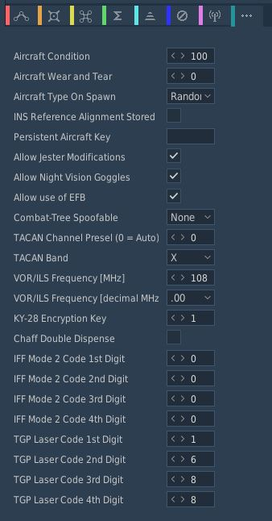

F-4E Manual

This is the manual of the F-4E Phantom II by Heatblur Simulations for DCS World.
A PDF version is available here. The contents are open-source at GitHub, you are most welcome to contribute!

Introduction
üöß This section is under construction.
Historical Background
F3H to AH-1, F-110 to F-4: A Navy Interceptor with Multi-role Pedigree
 (Mockup of the F-4 with AIM-7 Missiles)
(Mockup of the F-4 with AIM-7 Missiles)
The developmental onset of the F-4 Phantom II began in the aftermath of McDonnell's loss in the US Navy's 1953 Day Fighter Competition- the victor of which was the Vought F8U. Choosing not to rest on failure, McDonnell representatives canvased the Navy Bureau of Aeronautics, a number of operational commands, the office of the Chief of Naval Operations, and any pilot or maintainer willing to discuss the state of current naval aviation. After nearly a year of analysis and design work - including a full scale mockup, the design of what they would classify as a general fighter took shape. The potential of a general fighter aircraft, rather than the specialized focus preferred by the Navy at the time, was rooted in the success of the F3H-1 Demon in threading of that very needle; the Demon had been built as design in opposition of the F4D Skyray in the interceptor role. As the Skyray proved its supersonic superiority during the development cycle, McDonnell expanded the F3H Demon's capabilities to include respectable air to ground armament to justify its place in the limited carrier compliment when compared to the F10F Jaguar and F7U Cutlass, which were also undergoing development at the time. Ultimately outfitted with the AIM-9 Sidewinder and AIM-7 Sparrow - the latter giving the F3H a beyond visual range capability the Skyray could never boast, and topping out with the ability to carry and deliver 6,000 lbs of air to ground ordnance, the Demon out-measured its competitors in combat potential, even when it came in second on paper for raw performance.
Beginning with the intention to grow out the Demon as the baseline airframe, a set of engineering evaluations were performed including both single and twin engine configurations with different wings. The two most promising data sets- twin-engine builds of the type designated the F3H-G and F3H-H- powered the General Electric J65 and J79 respectively, replaced the original Demon wing with a 45 degree swept wing. Particular focus was paid towards making the new aircraft multi-mission capable, running a wide gamut of potential operations: day or all-weather attack, photo recon, day or all-weather interception with a Sparrow-compatible radar, electronic warfare, and a two seat strike coordination configuration. Experimentation with this wide-ranging design intent went so far as to include a novel interchangeable nose and cockpit arrangement, allowing airframes to be reconfigured within a matter of hours for a given mission set with the necessary systems fit for the crew.
While the Navy showed little interest in the nose replacement capability, the bottom line numbers from the F3H-G and -H investigations got their attention: on paper, they were capable of Mach 1.52, and an eye-watering Mach 1.97 at 35,000', respectively. By October of 1954, Navy Bureau of Aeronautics (BuAer) had evaluated similar unsolicited proposals from Grumman, Douglas, and North American, and provided McDonnell with a $38 million dollar contract for two flying examples of the Demon follow on- internally designated as the AH-1.
 (McDonnell F3H-G mockup; US Navy photo)
(McDonnell F3H-G mockup; US Navy photo)
Two months later, the Navy threw McDonnell a curveball, directing the type to be stripped of the air to ground fitment, and focusing on the all-weather interceptor role in a single seat configuration, with the finalization for this change in role being formally announced in April of 1955. The changeover was, in some quarters, considered catastrophic- over time forcing the removal of the planned internal gun, and stripping all of the hard-points, save for the recessed Sparrow fuselage wells and a centerline tank position. At this point, the determination of the J79 as the power plant was finalized with the Navy's desire for a Mach 2 interceptor. Further, the determination of a two-man crew as also put in place by the Navy - like McDonnell's own research, success in the faster, longer ranged interception environment showed the utility of a second man to handle the scope.
However, it wasn't a done deal. BuAero had been keeping conversation with Vought at the same time, and in mid-1955 detailed a fly-off between the two competing firms for the new interceptor role; this time pitting McDonnell's AH-1 contender with an outgrowth of the already in-service Crusader: the F8U-3. Redesignated the F4H in the intervening two and a half years leading into the late 1958 fly-off, McDonnell's Phantom II would trade substantial blows with Vought's Crusader III during the Navy Preliminary Evaluation. Whereas McDonnell's design entered the flight testing phase a month prior (and nominally entered engineering almost a year ahead of Vought's entry), the benefits of Vought carrying over much of the prior Crusader's aerodynamic profile appeared early in the comparison, as the Crusader III was first to Mach 2 in flight testing, shown capable of reaching higher top speeds during the Navy preliminary evaluation (NPE), and noted for having more refined airframe handling in most regimes.
 (F-4H aboard the USS Independence in 1960; US Navy photo)
(F-4H aboard the USS Independence in 1960; US Navy photo)
But as the Evaluation continued, it was found that McDonnell's Phantom II countered the Crusader III where it mattered: in combat capability. The Navy wanted a Mach 2 interceptor, not an overgrown daylight fighter. The F8U-3's integration of the Sparrow was found lacking versus that of the Phantom, having surrendered an AIM-7 against the F4H due to aerodynamic performance concerns. Of even greater concern for the interceptor role- as McDonnell had previously found internally, the pilot overhead to manage the AN/APG-74 radar installation in the Crusader III while in combat was found to be too high to maintain effectiveness, whereas the back-seater in the Phantom II could reliably acquire situational awareness on the radar and maintain track locks for engagement while maneuvering. McDonnell's F4H, while having more raw flying qualities, could fight as the Navy needed it to. Further, as the firm had continued developing its air to ground potential at the request of the Navy, even as they repeatedly altered the program goals- the Phantom II, like the Demon before it, justified its existence in the carrier compliment in all fights, not just the long range interception role. And so on December 17th, 1958, the Navy Preliminary Evaluation board announced its findings and the winner of the fly-off: McDonnell's Phantom II.
The US Air Force was not oblivious to the Phantom II's development, as the Navy having asked for the air to ground capability be revisited gave McDonnell a point of entry. While the Air Force entertained McDonnell representatives in discussion about a new ground attack airframe, the service actually had interest in the Sparrow-dealing F4H as a replacement for the F-106. The Air Defense Command requested an evaluation in 1961 known as Project High Speed, which once again proved the Phantom II superior to a challenger in the interceptor role. In light of the findings, Navy offered a bombing demonstration for Air Force representatives of the Tactical Air Command, making special note of the successful air to ground trials with the Phantom's multiple ejector racks- a capability the USAF lacked. With Air Force policymakers, members of Congress, and even Gen. Curtis LeMay in attendance during this demonstration series- with a VX-5 F4H-1 accurately delivering twenty-two 500 lb bombs in spectacular fashion, the stage was set for a Navy/McDonnell tactical aviation coup.
The inauguration of the Kennedy administration in January 1961 didn't hurt matters; Kennedy brought in former Ford Motor Company president Robert McNamara as Secretary of Defense. With an eye for optimization- sometimes to a fault, the performance of McDonnell's F4H was seen as a standout to capitalize upon in light of the administration's new conventional doctrine of "Flexible Response"; no longer would nuclear deterrence be the primary backstop of the US' promise to NATO. While McNamara desired for the Navy's A-7 and the Air Force's F-111 to fulfill tactical bombing roles for both services, the two airframes were at least five years out to operational capability; the Phantom existed, provided outstanding performance immediately, and could quickly raise the desired 50% increase in conventional force structure the White House expected for the Air Force. Pressure from all sides - the White House, Congress, McDonnell, and foreign interest, ultimately defeated the USAF's resistance to an airframe "not made here", and by January 1962 the USAF's budget had Phantoms on order the Tactical Air Command; the Air Defense Command, which had started the Air Force's investigation into the Phantom, would be left with the F-106.
Designated for a time as the F-110 to fit in with the Air Force's Century Series as a matter of service pride, McDonnell's Air Force Phantom went into motion. An initial delivery of Navy-configured F4Hs were provided for training and evaluation later that year, with the first flight of a true F-4C taking place on May 27th, 1963- the universal service designation system converting the F4H-1 to the F-4B in September of 1962. Reconfiguration of the Phantom II for the USAF was expedient, with the focus being on service-compliant alterations; these included altering of the landing gear system for higher speed field operations, the addition of dual flight controls, an anti-skid implementation, and conversion to boom refueling compatibility. Further changes included the addition of the LN-12 inertial navigation system, conversion to the APQ-100 radar with air to ground specific functionality, and a cartridge starting system for field use without a compressed air cart in combination with an internal battery. This F-4C configuration would be the first Phantom used during the USAF's involvement in Vietnam, beginning in December of 1964.
Backtracking with Haste - Correcting the USAF's Early F-4 Experience in Vietnam
 (F-4B dropping bombs over Vietnam; US Navy Photo)
(F-4B dropping bombs over Vietnam; US Navy Photo)
The Phantom's initial deployments to Southeast Asia delivered a number of firsts - the first officially confirmed MiG-17 kill with the AIM-9 Sidewinder (on July 10th, 1965), and the first US air-to-air shootdown of a MiG-21 (April 26th, 1966). Unfortunately, the Phantom was also the victim of the first US loss to a SAM in Vietnam (July 24th, 1965), and the first US air-to-air loss from a MiG-21 (October 5th, 1966). With the initial teething problems of the type out of the way - including alterations to the wing fuel cells and internal wiring, the Phantom was found to be a capable, reliable airframe for the Air Force. Even the missing gun had been worked around to some degree, with the integration of the SUU-16 and SUU-23 external cannon pods. The in-production upgrade to the Air Force's first Phantom - the F-4D, would include a multitude of quality of life improvements: the APQ-109 radar with air to ground modes, the ASN-63 internal navigation system, the ASQ-92 release computer. Further additions would include automatic fuel transfer and a new sight, the ASG-22. Combat survivability would be reinforced with the APS-107 RHAW and ECM pod compatibility, along with new ejection seats. Yet, the service's desire to put its own "made here" flourish on the type continued, inauspiciously culminating in the integration of the AIM-4 Falcon with the F-4D model.
Used on the F-102 Delta Dagger and F-106 Delta Dart, and considered by some to be a reasonable competitor to the AIM-9 Sidewinder, Air Force leadership believed the AIM-4 could be installed in replacement of the Navy's short range round with no loss of capability; this was quickly found to be a mistaken premise. While the AIM-9B had limited maneuvering restrictions for launch and acquisition like other short range infrared missiles of its generation, it was substantially more reliable in use; the Falcon's cooling implementation could only maintain the required seeker temperature for a short time once activated, and could not be turned back on once the cooler timed out, while the un-cooled 9B could remain available indefinitely. Sidewinder acquired far more rapidly - in many instances in less than two seconds, versus the six to seven seconds required for the Falcon. Worse still, the AIM-4 was a hittile- its fin-contact triggered fuzing required direct target impact for the missile's warhead to detonate, whereas the AIM-9 carried a proximity fuze; any Sidewinder that got close to its target was a threat to kill.
 (F4-D of the 435th TFS over Vietnam)
(F4-D of the 435th TFS over Vietnam)
With initial F-4D deliveries to the 8th TFW in May of 1967, the performance of the new configuration was quickly met with derision. The employment envelope was too small compared to the Sidewinder, the lead time too long, and the weapon far too unreliable to put into practice in the dynamic maneuvering environment of air combat as it was waged in Southeast Asia. The failure of the Falcon to succeed not only served to reaffirm the quality of the Sidewinder in comparison- and also highlight the need for the service to upgrade the round as the Navy was doing, but reinforced the concern held by aircrews about the lack of an internal gun. SUU installations by this point had scored multiple victories over North Vietnamese MiGs (ultimately ending the war with 9 confirmed kills), and it was decided to rectify what many had considered the Phantom's original sin with further revision to the F-4.
By the point McDonnell laid down the program update plan for the F-4E, the jet was intended to carry with it the APQ-120 CORDS (Coherent On Receive Doppler System) radar. With the directive to install an M61 internally, the radar would receive changes to its mount, additional dampening, and alteration to its antenna to fit in the reduced profile fuselage cavity directly above the cannon barrel assembly. Hardware deleted for Sidewinder compatibility in the F-4D was updated and returned. The ASG-26A Lead Computing Optical Sighting System was installed along with updated aircrew in-range and shoot warning cues, solving yet another lingering issue with the original F-4 specification; much has been said and written regarding the lack of the gun in the Phantom and the lack of training with respect to its performance over Vietnam - in the same respect, the lack of effective cueing for the pilot and WSO as to their orientation and range to target degraded many a shot opportunity. The updates to the Echo Phantom would not stop there; compatibility with multi-ejection racks and updates to the Weapon Release Computer to match provided further bombing capabilities. Further changes over its service included provision for "soft wing" leading edge slats, the AGM-65 Maverick, and the Digital Scan Converter Group interface for the APQ-120.
Also of note was Rivet Haste - a late Vietnam training initiative heavily influenced by two midlife updates- modification "556" and TISEO. Prior to "556", weapons mode changes required the pilot to go hands off the throttle and look down to the release panel, cycling a number of switches to disarm various pylons and arm others; in the event of a lucky North Vietnamese bounce, or the need to swap between weapons on the fly - looking away from the threat was time-consuming and dangerous. With the modification, a pair of override switches were added to the outboard throttle grip. The first, the "pinky" switch, placed control of the gun, Sidewinder, and Sparrow in one of three positions, while the second, on the forward face of the grip, switched weapons modes immediately between air-to-air and air to ground; the pilot would now have immediate access to his air-to-air weapons, and could swap them on the fly - never once looking down in the cockpit. 556 also included modifications to the armament panel for air to ground munitions, adding ripple release capability while reducing the number of controls required to access full ARBCS programming. Further reinforcement of crew initiative was the installation of TISEO - the Target Identification System Electro-Optical. Consisting of a 4x/10x camera installed in the left wing, TISEO provided visual identification of distant, radar-locked targets, enabling the AIM-7 Sparrow to be used to its full extent. Coupled with the Rivet Haste training - which put experienced aircrews through a program to codify them as systems and tactics instructors (not unlike the NFWS education being given to USN crews at the same time), the students championed the modification program of the Phantom, and pushed for Double Attack (a parallel development of Loose Deuce as had been used by the Navy in Vietnam since the resumption of the bombing campaign) to become the standard for air-to-air methodology across the Air Force. While this training was ultimately too late to have real effect, with the final halt on US bombing coming just weeks after the first Haste student crews returned to Vietnam, they would set the tone for USAF Phantom crews going forward.
The Transition from F-4D to F-4E
The F-4E that is implemented in the game is another upgrade from the F-4D for the US Air Force and several other countries. It featured an integrated M61 Vulcan gun elongated in the Nose as well as an AN/APQ-120 Radar with a reduced size to fit in with the new internally mounted M61 Vulcan. Other upgrades included the J79-GE-17 engines with 17,900 lbf of afterburner thrust for each engine, leading-edge flaps and slats to improve the maneuverability especially at high angle of attack. The F-4E Phantom II was the most numerous version that has been built totalling at 1370 units. The F-4E Phantom II is still in service at some operators across NATO including the Hellenic Air Force, the South Korean Air Force and the Turkish Air Force. They are expected to fly at least until 2030.
F-4E Combat History in Foreign Service
 (Hellenic Air Force F-4E Phantom II lands at RIAT 2008, UK)
(Hellenic Air Force F-4E Phantom II lands at RIAT 2008, UK)
The F-4E Phantom II, a stalwart in the annals of military aviation, transcended its American origins to become a formidable force in the service of numerous foreign air forces. Its foreign deployment was a testament to its adaptability, longevity, and indomitable presence on the global stage.
In the NATO, the F-4E found itself in the arsenals of key member nations. Germany, Greece, Turkey, and the United Kingdom incorporated the Phantom into their fleets, contributing to the collective defense capabilities of the alliance. The F-4E's reputation for versatility and reliability made it a linchpin in NATO's strategic posture during the tense years of the Cold War.
Venturing into the turbulent skies of the Middle East, the F-4E became a symbol of air superiority and technological prowess. Israel, Iran, and Saudi Arabia were among the regional players that embraced the Phantom. In the crucible of Middle Eastern conflicts, the F-4E showcased its ability to navigate diverse operational landscapes, earning its place as a linchpin in the complex geopolitics of the region.
Across the vast expanse of the Asia-Pacific, the Phantom's distinctive silhouette graced the skies as it found a home in the air forces of Japan, South Korea, and Australia. Whether patrolling the Pacific or standing ready for regional contingencies, the F-4E played a vital role in ensuring the security of nations in the region, underscoring its adaptability to varying strategic environments.
Israel's relationship with the F-4E was particularly noteworthy. The Israeli Air Force, recognizing the Phantom's potential, not only deployed the aircraft in conflicts but also embarked on ambitious modification programs. These enhancements, ranging from avionics upgrades to the integration of modern weapons systems, transformed the F-4E into a customized instrument of air power tailored to Israel's unique security needs, nicknamed Kurnas or Sledgehammer.
Amidst the ever-evolving landscape of military technology, foreign operators of the F-4E undertook comprehensive upgrades and modernization efforts. These initiatives were aimed at extending the aircraft's service life and enhancing its combat capabilities. The F-4E, with its iconic twin tails and powerful engines, evolved to meet the demands of contemporary warfare, solidifying its place as a venerable platform in the arsenals of its adoptive nations.
The F-4E Phantom II's foreign service was not merely a chapter in the history of military aviation but a saga that unfolded across continents and through the corridors of geopolitical power. Its adaptability, longevity, and combat prowess etched the Phantom into the collective memory of the nations that flew it, leaving an enduring legacy in the skies it once dominated.
F-4E Air to Air Kills
The F-4E Phantom II, an upgraded version of the F-4 Phantom series, played a significant role in air-to-air combat during the Vietnam War. Equipped with the AIM-7 Sparrow missile, a radar-guided weapon with beyond-visual-range capabilities, the F-4E had a notable advantage in engagements.
In Vietnam, F-4E pilots engaged in dogfights against various enemy aircraft. The Sparrow missile allowed them to target adversaries from a distance, contributing to the aircraft's success. Key USAF pilots, such as Steve Ritchie and Chuck DeBellevue, achieved ace status by securing five or more air-to-air victories.
The total number of air-to-air kills attributed to the F-4E Phantom II, combining both the USAF and USN, is estimated to be around 21 during the Vietnam War, includeing 4 MIG-19s, 17 MiG-21s. However, this figure may vary across sources. In total F-4C/D/E Variants shot down 107 MiG Jets hence the name "Biggest distributor of MiG parts".
Despite its effectiveness, the F-4E faced challenges in close-quarters combat due to the initial absence of an internal cannon. Modifications, including the addition of an M61 Vulcan cannon, addressed this limitation and improved the aircraft's performance in close-range engagements.
The success of the F-4E Phantom II in Vietnam solidified its reputation as a versatile and formidable fighter, and it continued to serve in air forces worldwide for many years.
F-4E First Flights by Nation
The F-4 was used widely by several NATO and allied countries. Because of that it had many different first flights in the different countries.
| Nation | McDonnell Number | BuNo/USAF Serial | Date |
|---|---|---|---|
| United States | 2234 | 66-284 | June 30th, 1967 |
| Israel | 3492 | 68-396 | May 26th, 1969 |
| Australia | 3847 | 69-0304 | June 26th, 1970 |
| Japan | 4037 | 69-7463 | January 14th, 1971 |
| Iran | 4093 | 69-7711 | March 2nd, 1971 |
| Greece | 4439 | 72-01500 | January 29th, 1974 |
| Turkey | 4525 | 73-01016 | June 17th, 1974 |
| Germany | 4946 | 75-00628 | May 5th, 1977 |
| South Korea | 4966 | 76-0493 | July 28th, 1977 |
 (Starting F-4EJ Kais of the JASDF of the 8th Hikōtai in 2002, US Navy Photo)
(Starting F-4EJ Kais of the JASDF of the 8th Hikōtai in 2002, US Navy Photo)
 (F-4Fs of the German Air Force in 1998, USAF Photo)
(F-4Fs of the German Air Force in 1998, USAF Photo)
Technical Specifications: F-4E
| Wingspan | 38' 5" (11.7 meters) |
|---|---|
| Wingspan (Folded) | 27' 7" (8.4 meters) |
| Length | 63' (19.2 meters) |
| Height | 16' 5" (5 meters) |
| Wing Area | 530 sqft (49.2 m² ) |
| Wing Loading | 78 lb/sqft (380 kg/m² ) |
| Empty Weight | 30,328 lb (13,757 kg) |
| Maximum Takeoff Weight | 61,795 lb (28,030 kg) |
| Thrust (Dry) | 23,810 lbf (105.92 kN) |
| Thrust (Afterburner) | 35,690 lbf (158.76 kN) |
| Combat Ceiling | ~56,000' (~17,070 m) |
| Maximum Speed | Mach 2.23; 1,280 kn (2,370 km/h) |
| Range (Ferry) | 1,457 nmi (2,699 km) |

Cockpit Overview

Greetings, phaboulus Crewman! Get ready for an in-depth look into the cockpit of the F-4E Phantom II by Heatblur. In the following chapter you will find a short overview of the Pilots cockpit as well as the Weapons Systems Officer (WSO) Pit. A more detailed System Overview is available in the Systems Overview Chapter.
Pilot Cockpit Overview
The pilot cockpit is divided into a front section, containing all instruments and weapon controls, as well as the radar screen; the left console area with engine, control surfaces and navigation related settings; the pedestal group holding auxiliary information; and the right console area with communication and lighting controls.
Layout

| Section | Name |
|---|---|
| 1. | DSCG Controls |
| 2. | Overhead Indicators |
| 3. | Weapon Management |
| 4. | Flight Director Group |
| 5. | Right Main Panel |
| 6. | Left Sub-Panel |
| 7. | Left Console |
| 8. | Pedestal Group |
| 9. | Right Sub-Panel |
| 10. | Right Console |
| 11. | Stick and Seat |
DSCG Controls

The Digital Scan Converter Group (DSCG) enabled the F-4E the capability to use AGM-65 Maverick air-to-ground missile. The DSCG replaced the Direct View Storage Tube radar scopes which could not interact with the digital interfaces of the AGM-65 Maverick.
Reticle Intensity/Scale Knob

| Name | Description |
|---|---|
| RET INT | Controls the brightness of the gun reticle. |
| SCALE | Controls the light intensity of the range scale at the edges of the front radar scope. |
Sight Shutter Lever

Changes the optical sight light source to prevent damage to the optics from high sunlight. Is used after landing to prevent damage to the sight when parked.
Reticle Depression Knob

Controls manual depression in 1 mil increments from 0 to 245 mil. The manual depression is used for direct delivery bombing and delivery of the AGM-65 Maverick.
Sight Mode Knob

Selects the mode of operation for the gun-sight.
| Name | Description |
|---|---|
| OFF | Turns the system off. |
| STBY | Warms up the system. Reticle remains off. |
| CAGE | Reticle is displayed and caged at the radar boresight line (RBL). This is used for takeoff and landing. |
| A/G | Selects air to ground mode. Manual set depression is referenced from the fuselage reference line (FRL). |
| A/A | Selects air to air lead computing mode. Position is set by the gyro, range, and CADC, and can be caged. |
| BIT 1 | System self test mode 1. |
| BIT 2 | System self test mode 2. |
OPR ERS/Contrast Knob

Two function (pushbutton inside of knob) control of the front scope display.
| Name | Description |
|---|---|
| OPR/ERS | Button activates or erases display in aircraft with DVST. No function with DSCG scope. |
| CONTR | Controls the displayed video/background contrast on the front scope. |
Brightness Knob/Horizon Line Knob

Dual knob control of the front scope display settings.
| Name | Description |
|---|---|
| BRT | Controls relative brightness of the front scope display. |
| HOR LN | Adjusts relative horizon line shown on radar scopes in both cockpits. |
INT Tab

The INT tab rotates around the display to alter the relative darkness of the radar display, permitting the pilot to adjust the scope relative to ambient light. With the INT tab a polarization filter is rotated over the scope.
Red Tab

The red tab is rotated to provide a red scope display for night flying.
In Range Light

The IN RANGE light illuminates to alert the pilot that the current locked target is within range parameters.
Hold Altitude Light

The HOLD ALT light illuminates as an instruction to the pilot from the fire control system to maintain current altitude to assist in a snap-up intercept situation against a target above the fighter. The predicates are:
- A range greater than the weapon can make,
- Altitude in excess than 32,000 feet, and
- The locked target is greater than 8,000 feet above the fighter.
When the HOLD ALT light is on, the fighter should be flown to center the steering dot relative to azimuth of the ASE circle. When the HOLD ALT light turns off, the fighter should then snap up in pitch to fully center the steering dot in the ASE circle. See radar system for more.
Wheels Light

The WHEELS lamp illuminates when the aircraft slows below flaps blow-up speed (roughly 230 knots, dependent on altitude) with the gear still raised. In this situation, the aircraft assumes the intention is to land and the light illuminates to suggest lowering the gear.
Range Lights

The Range Lights illuminate relative to range settings selected by the WSO. Range is provided in the upper right corner of the DSCG scope.
Overhead Indicators

The overhead indicators offer information directly in the pilots view and aid in situations where the pilot is focused and looking outside, such as during combat, landing or refueling with a tanker.
SHOOT Lights

A group of 5 lights arranged around the canopy bow, illuminating when missile firing parameters are met. Do not illuminate when in visual intercept (VI) or Air-to-Ground modes.
Air Refueling Lights


Provide status of the Air Refueling System while in use.
| Name | Description |
|---|---|
| READY | Illuminates when air refuel receptacle is fully extended. Turns off when boom is locked or receptacle retracted. |
| DISENGAGED | Illuminates when boom disengages during cycle, and remains lit until refueling system is reset. |
| L.H. FULL | Indicates left hand external tank is full (also while refueling on ground). |
| CTR. FULL | Indicates centerline external tank is full (also while refueling on ground). |
| R.H. FULL | Indicates right hand external tank is full (also while refueling on ground). |
Labs Pull Up Light

Illuminates and disengages during Loft and LABS bombing runs to provide timing sequence information to the pilot.
Standby Magnetic Compass

A standard magnetic compass for backup navigation assistance should the primary flight director systems fail. The compass should only be used in level flight. Compass deviation cards are found above the right canopy sill on each cockpit.
Angle of Attack Indexer Lights

A pair of indicators to the left and right of the HUD that provide quick confirmation of current aircraft AoA state based on illuminated position and color.

Can also indicate weapon steering cues and an aural tone system backs up the indication with audible cues. See Angle of Attack System for details.
Weapon Management

This group on the left area of the main panel provides all weapon related settings, such as arming missiles or selecting the bomb delivery mode.
Range Indicator

This panel provides the pilot with a readout of the slant range measured by the Pave Spike Targeting Pod (x100 ft).
When the Test-Button is pressed, the display shows 888, the knob underneath it controls the brightness of the readout.
The Mode-Knob allows the pilot to select one of two weapon delivery modes available with the pod:
- WRCS - Automatic Delivery
- ROR - Release on Range
In the SET position, the display shows the desired release range used in the ROR mode. The knob below the readout can be used to adjust this range.
Head Up Display Indicators

The Head Up Display indicator panel provides weapon status for the Master Arm control as well as the current selected air-to-air weapon based on the position of the Guns/Missile switch on the left throttle handle.
| Name | Description |
|---|---|
| RADAR | Illuminates when a radar-guided air to air missile is selected. |
| HEAT | Illuminates when an IR-guided air to air missile is selected. |
| GUN | Illuminates when the nose gun is selected. |
| ARM | Illuminates when the Master Arm switch is selected to ARM. |
UHF Remote Channel Indicator

Provides the current selected channel value when the radio is set to PRESET. Otherwise, the indicator displays M if the radio is set to Manual, G when the COMM function is set as GUARD/ADF, or A when the A-3-2-T switch is in A.
True Airspeed Indicator

Provides the aircraft's true Airspeed in knots, and is calibrated from 150 to 1500 knots; airspeeds below this range are thus not reliable.
Flight Instrument Brightness Knob

Controls brightness of the flight instrument cluster.
Rotating clockwise will increase brightness of all flight instrument lights, while at the same time dim the HSI mode and warning and caution lights, except FIRE and OVERHEAT.
Flight instrument lights can additionally be controlled individually with knobs on the Flight Instrument Lights Intensity Panel, located on the right wall.
Nose/Tail Arming Switch

Controls the arming solenoids of the MER and TER racks, selecting what MER/TER position(s) arming lanyards are pulled from released bomb fuzes upon separation, thus making them live. This function also controls selective low/high drag capability for retarded bombs.
| Name | Description |
|---|---|
| SAFE | No arming solenoids activate; bombs release without fuzing enabled. |
| NOSE | Forward and center position solenoids activate to hold arming lanyards. |
| TAIL | Aft position solenoids activate to hold arming lanyards. |
| NOSE/TAIL | Forward, center, and aft position solenoids all activate to hold arming lanyards. |
Station Select Buttons

The Station Select Buttons are used to activate air to ground munition stations and the nose gun. Upon selection of a station, the upper half denoting the position will illuminate green to confirm the station is active. The lower half will illuminate amber once the necessary mode is selected, the weapon is compatible with the weapon select knob option, the Master Arm is in the ARM position, and any necessary warm up period for the selected weapon type is completed. L and R positions are left and right, respectively, with O denoting outboard and I denoting inboard stations. The centerline weapon position is CL, and the nose gun is armed with the GUN station selector button.

Dimmer Knob
A dimmer knob is also provided to raise or lower the lighting of the station select buttons relative to current cockpit conditions. If the Flight Instrument Brightness Knob above it is set to the full CCW position, it overrides the dimmer knob and Station Select Buttons are always illuminated at full brightness.
Master Arm Switch

Provides master arming function for all aircraft weapons.
Delivery Mode Knob

The Delivery Mode Knob sets the fire control system to the desired air to ground weapon release type. Split into two halves, the left side of the dial references ARBCS (Altitude Reference and Bombing Computer Set) delivery modes, while the right side provides automated release functions using the WRCS (Weapon Release Computer Set) with possible tie-in to the navigation computer, depending on mode. At the 11 and 12 o'clock positions are the OFF position, which is utilized for air-to-air weapons (including the gun) and DIRECT, which is used for video-directed weapons such as the AGM-65 and as a direct delivery bombing mode. The full series of positions is as follows, clockwise from the left:
| Name | Description |
|---|---|
| INST O/S | Instantaneous Over the Shoulder |
| LOFT | Loft |
| O/S | (Timed) Over the Shoulder |
| T LAD | Timed LADD (Low Angle Drogue Delivery) |
| TL | Timed Level |
| OFF | Off (Air-to-Air) |
| DIRECT | Manual Direct |
| TGT FIND | Target Find (Nav mode and Pave Spike only) |
| DT | Dive Toss |
| DL | Dive Laydown |
| L | Laydown |
| OFF SET | Offset Bomb |
| AGM-45 | AGM-45 Shrike |
For further information see Air-to-Ground weaponry.
Weapon Selector Knob

Selected for the type of weapon currently required, providing release signals to the AWRU (Aircraft Weapons Release Unit). ARM and TV positions inhibit air to air weapon firing unless a CAGE signal is active. ARM and TV positions do not affect tuning status of radar guided weapons. Positions are as follows:
| Name | Description |
|---|---|
| AGM-12 | AGM-12 Bullpup |
| BOMBS | Bombs (all types). |
| RKTS & DISP | Rockets and dispensers. |
| ARM | Anti-Radiation Missile (AGM-45 Shrike). |
| TV | Electro-optical weapons (AGM-65 Maverick). |
| C | Not used; may be utilized as an OFF position. |
| B | Like AIR TO AIR switch in rear cockpit, cancels CAGE requirement. |
| A | Simultaneous release mode for CBU, rockets, or dispensers; bombs do not release. |
Aircraft Weapons Release Unit

Provides timed interval release scheduling of single or multiple bombs or rockets and dispensed munitions based on the selections made between the interval knob, the QTY (quantity) knob and the INTRVL switch.
For further information see Aircraft Weapons release unit (AWRU).
Interval Knob
The interval knob provides release pulse sequences between 0.05 second and 1 second.
Interval Switch
The INTRVL switch provides the option of a 10x multiplier of the set value of the interval knob. In the NORM position, the interval knob value is the trigger timer.
Quantity Knob
Controls how many stores are released per impulse.
Selecting "1" places the AWRU into single manual bombing mode; one push of the bomb release button releases one bomb.
Selecting a value from "2" to "18" sets the AWRU into single ripple mode; in this mode, the AWRU will release bombs according to the programmed interval until the set number of rounds is dropped, or the bomb button is released. Upon release, the count is reset, and a subsequent press and hold will drop the programmed number of bombs.
Selecting "C" sets the AWRU into single continuous mode; pressing the bomb release button drops rounds according to the programmed interval until the bomb button is released, or all munitions from the selected pylons are expended.
The "P" setting is for pairs manual mode. With at least two stations selected, each push of the bomb button will release two bombs; like single manual mode, this does not include an interval function.
Lastly, the "S" setting, for salvo, releases bombs in accordance to the chosen interval from all selected stations simultaneously, until the bomb button is released. Ergo, if four stations are selected with a 2 second interval (0.2 on the interval dial, X10 INTRVL switch setting), four bombs will be released every two seconds the bomb button is held down.
Missile Status Lights

The Missile Status Light window provides confirmation of currently installed and configured air-to-air missiles.
Radar Lights
The RDR lights illuminate once AIM-7 missiles are properly tuned with the fire control system; any station that does not carry a Sparrow, does not correctly sync up during tuning, or is launched, will turn off.
The left pair of lights indicates stations 4 and 3 from top to bottom, while the right pair links to stations 6 and 7 respectively.
Heat Lights
The HEAT lights illuminate one at a time, rather than all up upon circuit configuration. The light of the currently selected station will illuminate beginning at the raising of the gear handle, and remain in that position until the weapon is either cycled using the throttle's Gun/Missile Switch reject option, or is launched. The HEAT light arrangement corresponds with the launch sequence of the AIM-9.
The left pair of lights represent station 2L and 2R respectively, while the right pair is linked to stations 8L and 8R.
Radar Missile Power Switch

The Radar Missile Power Switch provides power to the CW tuning drive and monitoring functionality.
When switched out of the OFF position, power is applied to the circuit 30 seconds after this selection.
The STBY position maintains warmup power to the missiles and CW tuning drive once the missiles have been tuned.
The CW ON position allows for constant tuning and missile state monitoring with the radar mode not in TV.
Tuning can be performed on the ground with the radar in TEST mode to preclude emissions endangering ground crew.
Centerline Tank Aboard Light

Illuminates when a stores condition exists that precludes ejection and launch of an AIM-7 missile installed in one of the two forward positions.
Interlock Switch

A two position switch that determines whether the fire control system launch parameter interlocks can prevent an AIM-7 from being launched when the trigger is pulled.
| Name | Description |
|---|---|
| IN | Interlocks engaged; range limits, ASE limits, or radar not in visual intercept inhibits launch. |
| OUT | Interlocks override; AIM-7 will fire when trigger is pulled even when no launch condition is met. |
Selective Jettison Control

The Selective Jettison Control knob provides the pilot direct access to dump stores on a position by position basis.
The pilot selects the desired position by rotating the knob and then presses the button on its front to jettison the selected stores.
| Name | Description |
|---|---|
| OFF | Safes PUSH TO JETT button on the Selective Jettison Control Panel. |
| STORES | Releases all MER/TER, single carried, LAU-88 mounted rounds, or drop tanks currently selected on the station buttons upon PUSH TO JETT. |
| L/R FWD | Jettisons AIM-7 from respective position on PUSH TO JETT. Inhibited if CL TK ON. |
| L/R AFT | Jettisons AIM-7 from respective position on PUSH TO JETT. |
| L/R WING | In conjunction with TV or ARM, jettisons single AGM-65 Maverick or AGM-45 Shrike from wing on PUSH TO JETT. |
As example, to jettison the right and left external fuel tanks, the pilot must select STORES on the knob, press the corresponding station select buttons LO, RO and then push the jettison button.
Recorder Lamp

This dimmable lamp is lit to indicate operation of the Airborne-Video-Tape-Recorder (AVTR).
The AVTR system is controlled by the WSO and records the intercom sound, as well as the rear radar screen.
Flight Director Group

The flight director group provides the pilot with all necessary instruments to fly the aircraft even in a bad weather situation.
Radar Altimeter

Terrain relative accurate height information up to 5000 ft, functions to 30 degrees of bank angle or 35 degrees of pitch. Clockwise rotation of the function control switch on the lower left of the indicator powers the device; continued rotation sets the low altitude warning pointer to the desired height. Below the set altitude, the warning light on the lower right activates. A self-test, initiated by pressing the function control switch, shows 35ft.
Airspeed and Mach Indicator

The combination airspeed and mach number indicator shows airspeed readings below 200 knots, and include Mach numbers on the outer ring at high speed. The indicator uses a single pointer over a fixed airspeed scale, marked from 80 to 850 knots, with a moving Mach scale presenting from Mach 0.4 to 2.5. A pair of movable reference markers is available with the knob on the face of the gauge, with speed reference available between 80 and 195 knots, and the Mach index pointer being able to be set between the 225 knot and 850 knot regions relative to the airspeed gauge.
Angle of Attack Indicator

Drawing relative wind information from the landing-gear adjacent AoA probe, the AoA indicator offers conditional reference for cruise (7.9 units), approach (19.2 units), and stall (30 units). Because of the AoA probe to the nose gear door and subsequent airflow disturbance when the gear is lowered, actual aircraft AoA is approximately 1 unit higher than indicated, and ON SPEED AoA is roughly 5 knots slower than the given value.
When indicator power is offline due to electrical system configuration or damage, an OFF flag will appear in the window on the face of the gauge. Function of the indexer lights and stall warning vibrator is driven by switches in the indicator.
Reference System Selector Switch

Toggles between the inertial navigation set and AN/AJB-7 displacement gyroscope for attitude information. When set to PRIM, the inertial navigation set provides azimuth and attitude data to the ADI; when on STBY, AN/AJB-7 supplies this information. Azimuth data also feeds into the HSI and BDHI (rear cockpit). Additionally, attitude details are sent to the fire control system.
üí° Inertial information requires the inertial navigator control panel's switch to be on NAV.
When transitioning between STBY and PRIM, immediate attitude information may show unusual gyrations on the attitude director indicator due to initial erection. Rapid turns (above 15° per minute) may temporarily disrupt accurate heading information, requiring straight and level flight for about 20 seconds for manual compass system synchronization (SYNC position)
Attitude Director Indicator

Includes an attitude sphere, turn indicator, steering bars, miniature aircraft, glide-slope pointer, flags, and pitch trim knob. It displays pitch, bank, and heading from the selected reference system and allows pitch adjustment via the trim knob. The turn indicator relies on a gyro from the AN/AJB-7 system. The steering bars offer Flight Director guidance for heading interception, navigation, and ILS approaches. The glide-slope pointer provides vertical guidance information during an ILS approach.
Marker Beacon Lamp

This lamp illuminates whenever flying over a marker beacon station, provided the VOR/ILS system has been activated. Additionally, an audio cue is played through the intercom system.
The lamp can be rotated to dim and pushed to test.
Horizontal Situation Indicator

Consists of a rotating compass card, single and double bar bearing pointers numbered 1 and 2 respectively, a range indicator, and a range warning flag. Presents a top-down view of the currently programmed navigation. The Heading Set knob (lower left) is available to input desired magnetic heading, and the Course Set knob (lower right) is used to enter VOR radial or inbound localizer course for accurate deviation display.
Altimeter

A counter-pointer style altimeter, with thousandths in the counter window and 100 foot increments around the face. The altimeter has an absolute range of 80,000 feet. The altimeter includes a barometric scale for setting local pressure with the knob on the indicator. Works in either electric (normal operation mode) or pneumatic (STBY) mode, switchable via a spring-loaded three position switch labelled RESET and STBY. When held in RESET for more than 3 seconds the system will be reset and moved out of STBY.
Vertical Velocity Indicator

Provides rate of climb or descent via the static pressure system referenced in thousands of feet per minute.
Standby Attitude Indicator

The SAI functions independent of the Flight Director Group, providing reasonably accurate readings (within six degrees) for 9 minutes if power to the system is lost and the OFF flag is in view. Pitch markings are indicated every 5 degrees, while roll markings are in gradations of 10 degrees. Roll is illustrated through 360 degrees, while pitch is limited by stops at 92 degrees in climb and 78 degrees in dive to prevent gimbal lock. The SAI can be unlocked by pressing the knob and trimmed by turning it.
Navigation Function Selector Panel

Controls display presentation on the ADI and HDI based on the selected values on the two knobs; to the left is the Bearing/Distance Knob, and to the right the Mode Selector Knob. The Bearing/Distance Knob determines the source of navigation information for the HSI and ADI. The Mode Selector Knob provides control over the presentation of various displayed information on the HSI and ADI. The Mode Selector Knob includes an inset switch marked FD, for Flight Director. This switch engages or deactivates the pitch and bank steering bars on the ADI; the OFF position has the switch aligned vertically.
Bearing/Distance Knob
| Name | Description |
|---|---|
| VOR/TAC | Magnetic and relative bearing to VOR station and TACAN range displayed on HSI. |
| TAC | Magnetic and relative bearing and range to TACAN station displayed on the HSI. |
| ADF/TAC | Magnetic and relative bearing to ADF station and TACAN range displayed on HSI. |
| NAV COMP | Magnetic and relative bearing and range provided from navigation computer (i.e. waypoints) on HSI. |
Mode Selector Knob Display Functions

VOR Lamp

Illuminates to indicate that the VOR system is ready and receiving.
That is, a valid VOR frequency has been selected, a signal is received and the navigation knobs have been turned to VOR navigation.
Right Main Panel

The right main panel offers a good overview of all needed engine data as well as of your defensive Radar warning receiver (RWR). There is also the fuel gauge and the fire warning lights located on it.
RWR Azimuth Indicator

The Radar warning receiver Azimuth Indicator shows all Radar sources that are visible to the Radar warning receiver. The knob controls the brightness of the display.

Below is a box with several knobs to operate the system.
For further information see the Radar Warning Receiver chapter.
Azimuth-Elevation Indicator

The Azimuth-Elevation Indicator, or also Line-Of-Sight Indicator, is the main instrument for the pilot to assess the current attitude of the Pave Spike Targeting Pod in order to keep the line of sight within the operational limits.
The needle shows the pods roll position from -160° (CW) to +110° (CCW).
Three flags indicate the elevation:
- green: -120° to -155°
- yellow: -155° to -160°
- red: -160° or beyond
If the needle is kept within the green labelled range and neither the yellow or red flag are shown, the view will not be obstructed by the pod or the aircraft.
Master Caution Light

The Master Caution light illuminates to provide the pilot warning of a condition requiring attention, directing them to look at the telelight panel for additional information. The Master Caution lamp is reset by correcting the condition, or pressing the Master Caution Reset button on the generator control panel.
Fire Test Button

When pressed, this button tests for functionality of the FIRE and OVRHT lamps. Under normal conditions, all four lights should light up as long as the button is pressed down. If a lamp does not light up, it is likely broken and cannot be trusted on indicating a fire condition anymore.
The button can also be used in conjunction with the Warning Lights Test switch to confirm detection and continuity performance of the fire and overheat warning systems.
Holding the Warning Lights Test switch in the WARN TEST position, then simultaneously pressing and releasing the Fire Test Button performs the test. Proper system function is confirmed with the four FIRE and OVRHT lamps off while the Fire Test Button is pressed, then illuminating when it is released.
Fire/Overheat Warning Lamps

The Fire and Overheat Warning Lamps, one for each engine, are a pair of two-position indicators that illuminate when a fire condition is detected in the engine compartment (FIRE), or an overheat condition is detected in the exhaust nozzle section (OVRHT).
Fuel Quantity Indicator

The Fuel Quantity Indicator provides two different indications of total usable internal fuel to confirm proper transfer function between the seven internal fuel cells, as well as any external loaded tanks.
The upper hemisphere's sector display presents fuel quantity detected in fuselage cells 1 through 6, excluding the aft-most cell 7, as well as the internal wing tanks. The sector display presents 200 lb increments from 0 to 3000 pounds, and 500 pound increments for the rest of the gauge.
The lower tape counter readout includes all internal fuel, including cell 7 and the internal wing tanks, and is presented in 100 lb increments. Cell 7 is used as a reserve tank.
As a general guidance, Bingo fuel is around 4000 pounds, while Joker fuel is at 6000 lb.
For more detailed information see the Fuel system chapter.
Fuel Flow Gauges

A pair of fuel flow indicators is provided, one for each engine, presenting pounds per hour rate from 0 to 12, in 1000 lb increments. Flow indications are for basic, non-afterburning thrust. In afterburner, the flow rate is roughly four times the displayed flow rate.
Tachometers

A percentage-noting Tachometer is provided for each engine, including an inset wheel for accurate display of single digits. Normal values are 65% for idle, 95% in full MIL power and 105% for full afterburner.
Exhaust Gas Temperature Gauges

Exhaust Gas Temperature gauges are provided for each engine. The gauges have two needles- a large needle providing increments of 0 to 12 in multiples of 100 degrees Celsius, and a smaller needle presenting increments of 0-10 in multiples of 10 degrees Celsius. Temperatures are measured at the exit of the turbine unit.
Exhaust Nozzle Position Indicators

A combined Nozzle Position Indicator is provided with two needles, one for each engine on their respective side, to confirm balanced nozzle position and scheduling relative to throttle position. The gauge provides four zones relative to the nozzles being in their fully open configuration, or their maximum closed configuration at the bottom. At idle, the indication will be roughly 7/8ths open, and schedules down as throttle is increased. Position in the afterburner region will moderate to maintain safe EGT levels.
Left Sub-Panel

The left sub-panel features most of the gear indicators as well as the fuel boost pump gauges. Also found on it is the stabilator trim gauge and the emergency release of the external stores.
8-Day Clock

A clock is provided for the pilot, including a stopwatch function. The stopwatch is being used by pressing the top right button and reset by pressing it again. The watch can be set by turning the knob on the left lower corner.
Emergency Canopy Jettison Handle

Used for emergency ground extraction, the Emergency Canopy Jettison Handle releases a compressed oxygen cylinder to open the respective canopy immediately, shearing it off at its pivots.
Landing Gear Handle

Actuates the landing gear; raised for gear up, down for gear down.
Pulling the handle out will actuate the Emergency Mode and release the gear by using a pair of compressed air bottles.
üí° The gear can not be retracted on ground.
Landing Gear Position Indicators

The Landing Gear Position Indicators provide visual confirmation of current gear state, displaying UP when retracted, showing a barber pole while in transition, or the illustration of a wheel in the respective window when fully down and locked.
Slats/Flaps Indicators

Visual indication of the Slat and Flap systems are provided through two window indicators. Slats will be displayed as IN (retracted) or OUT ( extended). Flaps will display as UP (retracted) or DN (down), and will show a barber pole while in transition.
Boost Pump Pressure Indicators

A pair of indicators provide confirmation of fuel boost pump operation. Indicators are calibrated 0 to 5, which must be multiplied by 10 to read in current PSI.
Stabilator Trim Indicator

Provides current stabilator trim setting in units (trim switch actuation) of trim. For Takeoff the trim should be between 1-3 units nose down.
Landing/Taxi Lights Switch

Control the external Landing and Taxi lamps. Left main gear must be down and locked for the switch to function
üí° Lights are turned off automatically when the gear is turned in.
External Stores Emergency Release

Also called the "panic button", the External Stores Emergency Release will immediately perform separation of all jettison-able stores, without air-to-air weapons or special weapons.
Aileron Rudder Interconnect (AIR) Circuit Breaker

When pulled in conjunction with the Yaw ARI Stab Aug Switch disengaged, Yaw ARI will be fully removed. With the Yaw ARI Stab Aug Switch engaged, 5 degrees of ARI authority will be maintained.
See ARI Disengage.
Emergency Brake Handle

Pulling this handle activates the Emergency Hydraulic Brake System, which dumps the remainder of the hydraulic accumulator into the brake system for a limited number of brake actuation. Differential braking will work, however the number of available actuation is limited.
Left Console

The left console is further divided into 4 sections.
Front Section
The front section of the left console houses the oxygen panel, throttle and engine related controls.
Left Utility Panel

Anti-Skid Switch

Controls the anti-skid system which provides an electronically controlled skid protection at wheel speeds over 30 knots.
Anti-Skid Inoperative Light

Illuminates when the Anti-Skid Switch is set to OFF, the Emergency Quick Release Lever is pressed, or there is an issue with the Anti-Skid System.
Canopy/Low Altitude Warning Volume
Sets audio level for canopy open and low altitude voice warnings.
This system is not installed on this variant of the F-4E.
Oxygen Control Panel

Flow Indicator
Alternates between black and white with each aircrew member breath to indicate oxygen flow.
Emergency Flow Control Switch
Three position switch which selects EMERGENCY pressure (100% flow with positive pressure), NORMAL (standard air/oxygen mix), or TEST MASK (positive pressure for mask sealing check).
Diluter Lever
Two position switch that cycles between NORMAL oxygen value or 100% OXYGEN level. 100% should only be used if fire and/or smoke and fumes occur in the plane.
Supply Lever
Two position switch (ON and OFF) activating flow of oxygen to the aircrew member. For further information see Oxygen chapter.
Oxygen Quantity Test Button
Tests oxygen low pressure warning system. Pressing the button cycles the needles from current oxygen level to zero, which triggers OXYGEN LOW telelight panel warning as needle passes through 1 liter. Releasing the button returns the needle to current system level and clears OXYGEN LOW warning.
Oxygen Pressure Gauge
Indicates system pressure from 0 to 500 psi. The Oxygen lasts up to 24.3 Hours with a full 10 litres at about 35,000 feet. At 10,000 feet 10 litres last about 23.4 hours.
For further information see Oxygen chapter.
Forward Hand Control

Small joystick enabling the Pilot to control and steer guided Weapons such as Mavericks or Bullpups.
Outboard Engine Control Panel

Engine Anti-Icing Switch
Two position switch (DE-ICE and NORMAL) controlling de-icing function. When in DE-ICE, the anti-icing air flow is enabled. In NORMAL, no anti-icing is provided.
The system should only be used below high-mach numbers. At high-mach speeds the compressor inlet temperature is enough to prevent ice from building up.
Communications Antenna Select Switch
Two position switch commanding which antenna is being utilized for voice communication- UPR (upper) or LWR (lower).
The Upper position should be used for take-off and landing since anti-skid could interfere with the lower antenna.
LCOSS Switch
Selects which computer system is installed on this aircraft.
- ARS-107
- ASG-26
The switch is a leftover and not connected.
DVST Switch
Selects which radar system is installed on this aircraft.
- APS-107
- APQ-120
The switch is a leftover and not connected.
Inboard Engine Control Panel

The Inboard Engine Control Panel carries the following controls:
Target Contrast Switch
Used to select the appropriate contrast conditions for seeker acquisition with the AGM-65A Maverick and AGM-65B Maverick.
| Name | Description |
|---|---|
| WHT/BLK | Programs the missile seeker to track a light target on a dark background. |
| AUTO | Programs the missile to use its automatic tracking mode. |
| BLK/WHT | Programs the missile seeker to track a dark target on a light background. |
üí° This does not change the polarity of the video but the coding of the seeker itself.
Engine Start Switch
Three position switch with automatic return to center used to start the respective engine using the cartridge (if loaded), left or right. See engine system chapter for further detail on when to use the cartridge start.
CADC Static Pressure Compensator Correction Switch
Three position switch, momentary in the RESET CORR position, used to correct or disengage the Static Pressure Compensation of the altimeter, thus eliminating, or invoking, altimeter lag from rapid altitude changes.
| Name | Description |
|---|---|
| RESET CORR | Actuated after engine startup, then in flight if a SPC warning is caused by transient conditions. |
| NORM | Regular operating position of switch upon release of RESET CORR or actuation out of CORR OFF. |
| CORR OFF | Manually disengages SPC altitude lag compensation. |
Engine Master Switches

A pair of two position lever lock switches, separated by a guard to alleviate erroneous command of the wrong switch, connects electrical power to the engine boost and transfer pumps for the respective engine when placed in the ON (forward) position. The connection to electrical power is external if the aircraft is connected to a ground crew provided generator, or the aircraft's battery if no external power available. Switching them to OFF (aft) position will engage the fuel shutoff valves so long as the aircraft is not solely running on the internal electrical bus; otherwise, the valves will remain open, unless the engine throttle is placed into the cutoff position. For further Information see the engines chapter.
Rudder Trim Switch
Used to apply rudder trim adjustment when pressed to the respective side, left or right.
Throttles

The throttle arrangement for each engine in the F-4E Phantom II is located on the front and rear cockpit left console. Mechanical linkage transmits throttle movement to the engine fuel control. A friction adjusting lever allows customization of throttle friction. Afterburner initiation occurs by shifting the throttles outboard and moving forward from the MIL position. The Afterburner gate can be adjusted in the special options of the module.
Throttle movement is smooth and continuous, with afterburner modulation possible throughout the range. Moving throttles from IDLE to OFF closes the fuel shutoff valve, stopping fuel flow. To transition from OFF to IDLE or MIL, advance the throttles straight forward. Shifting throttles outboard allows movement from MIL to MAX, enabling forward motion in the afterburner range. For further information see the throttles chapter.
Fingerlifts
Front cockpit throttles feature finger lifts for quick chops to IDLE, preventing inadvertent shutoff. The lifts must be raised before retarding throttles to OFF. Rear cockpit throttles are linked to the front cockpit, allowing only the pilot to start engines or move throttles into afterburner range. Rear cockpit throttles can be moved from OFF without front seat assistance.
Ignition Buttons

Engine ignition for startup is performed using a pair of spark plugs on each engine, activated by pressing the red Ignition Button found on the rear of both throttle levers. The button is depressed as part of the starting sequence to ignite the spark plugs, initiating combustion in chambers four and five of the engines.
Cage Button

In the event that an AIM-7, AIM-9, or M61A1 must be employed against an airborne target with the sight in A/G mode (for example, the flight is bounced by opposing aircraft), the optical sight reticle can immediately be slewed to the Radar Boresight Line using the Cage Button, found on the inboard (right) throttle handle. Cage mode commands the radar into BST mode with a five mile range, and short pulse, and sets the firing circuit for the currently selected air-to-air weapon relative to the Pinky Switch. For the optical sight, the command activates the respective elevation and azimuth tracking, roll mark, and range functions of the reticle for the chosen weapon, without the pilot having to remove a hand from throttle or stick to swap the sight mode or weapon control panel functions.
Dispense Button

When pressing the dispense button chaff/flare dispensing is initiated as set on the CCU and AN/ALE-40 programmer if the flaps and speed brakes are retracted and the flares select switch is set to NORMAL. Additionally single unit flare dispensing can be initiated by a single button press if the flares select switch is set to FLARES.
Speed Brake

The Speed Brakes are actuated by a three position switch found on the inboard throttle in both cockpits. Either switch will actuate the brakes. The positions are Out, Stop, and In; the Out position is momentary and reverts back to Stop when released. For further information see the Flight Control Surfaces chapter.
Mic Switch

The microphone switch for the Intercom System is the aft position on the inboard throttle grip in both cockpits. When using the intercom, all audio sans the pull-up tone, stall warning, and ECM are reduced (same as RADIO OVERRIDE).
Center Section
The center section of the left console controls fuel and navigation related settings.
Fuel Control Panel

Internal Wing Dump Switch
Two position switch which, when placed in DUMP, closes off the wing fuel cells from transfer into the fuselage fuel cells and dumps fuel from the valves at the wing fold trailing edge. Placing the switch back to the NORM position closes the dump valves and reconnects the wing cells for transfer to the fuselage.
The entire fuel is dumped in roughly 15 minutes.
Internal Wing Transfer Switch
A two-position switch which controls flow of wing cell stored fuel to the fuselage fuel tanks; NORMAL permits transfer, whereas STOP TRANS ceases flow from the wings to the fuselage feed tanks.
Transfer only occurs without weight on wheels and if the internal tanks have reached a certain fuel level already.
Refueling Select Switch
This covered switch determines which tanks will be refuelled during an air-to-air refueling cycle: internal (INT ONLY) or all tanks (ALL).
Air Refueling Switch
Two position toggle switch used for extending (EXTEND) and retracting (RETRACT) the air-to-air refueling door. Placing the switch into EXTEND also illuminates the air-to-air refueling receptacle lamp to assist the tanker boom operator.
If, during AAR, the boom disconnects and the DISENGAGED light illuminates, this switch has to be flipped to RETRACT and back to EXTEND to reset the system and allow the boom to connect again.
External Transfer Switch
A three position toggle determining which externally mounted tanks are currently transferring fuel to the fuselage tanks: CENTER (centerline tank), OFF (none), or OUTBD (outboard wing tanks).
Transfer only occurs without weight on wheels and if the internal tanks have reached a certain fuel level already.
It is not possible to transfer from the wing tanks and external tanks at the same time. If both are selected, the external tanks will take priority.
Boost Pump Check Switches
A pair of two position spring-loaded switches are provided to confirm function of the fuel boost pumps. Can only be checked with the engine master switches OFF. Holding either switch will energize the respective boost pump, thus showing a positive pressure value on the fuel pressure indicator.
VOR/ILS Control Panel

Nav Vol Knob
Controls the volume of the VOR/ILS audio system that indicates a positive return by repeating the morse code of the selected station.
Must be moved out of the full CCW position to provide power to the VOR/ILS system.
MB Vol Knob
Controls the volume of the tone played when flying over a marker-beacon transmitter, for example on the final approach during landing.
Frequency Knobs
A set of two knobs for tuning the VOR/ILS frequency. The outer knob controls the first three digits, while the inner knob sets the two decimal digits.
Valid frequencies range from 108.00 to 117.95 MHz.
VOR/MKR Test
A button to initiate a built-in test of the VOR system. See VOR/ILS Test for details.
AFCS Control Panel

Stability Augmentation Channel Switches (Yaw/Roll/Pitch)
Three two-position switches enable individual channels of stability augmentation for Yaw, Roll, and Pitch. ENGAGE (forward) sets the respective chanel stability augmentation on.
AFCS Mode Switch
Enables AFCS flight mode, which can maintain and hold maneuvers and attitudes at up to ±70 degrees of pitch, 70 degrees of bank, and in all 360 degrees of azimuth. Deactivated by selecting the switch aft, or with a rapid control input.
Altitude Hold Switch
Selecting ENGAGE activates the altitude hold function of the AFCS. When entered a pitch and bank level condition, will maintain altitude (ASL) stabilized flight at the current heading.
Aft Section
The aft section of the left console has the intercom and countermeasure controls.
Boarding Steps Indicator

Used to visually confirm the integrated boarding steps state. With the white post up, steps are stowed, whereas steps are deployed if post is down and flush with panel recess. The boarding steps and ladder is moved by the crew chief.
Intercom System Control Panel

Pilot ICS Volume Control Knob
Turned clockwise to increase audio between cockpits, and counterclockwise to decrease audio between cockpits on the Intercom.
Pilot ICS Function Selector Switch
| Name | Description |
|---|---|
| COLD MIC | Mic switch on throttle must be held to activate intercom. |
| HOT MIC | Voice automatically transmitted on intercom. |
| RADIO OVERRIDE | Intercom overrides incoming radio calls; does not override aircraft warning audio. |
Pilot ICS Amplifier Select Knob
Determines current amplifier for intercom function.
| Name | Description |
|---|---|
| B/U | Backup headset amplifier provides audio. |
| NORM | Primary headset amplifier provides audio. |
| EMER | Uses the amplifier from opposite cockpit; all and only audio including radio received to that cockpit is heard. |
AN/ALE-40 Programmer

The panel features 6 knobs to control chaff and flare programs, as well as two lamps and a switch to activate flares on its base.
Chaff Burst
The count knob selects the number of chaff burst commands per salvo; values of 1, 2, 3, 4, 6, or 8 from left to right.
The interval knob selects the time interval of .1, .2, .3, or .4 seconds between each chaff burst command.
Chaff Salvo
The count knob selects the number of salvos per dispense command, values of 1, 2, 4, 8, or C (Continuous).
The interval knob selects time interval between each salvo. Values of 1, 2, 3, 4, 5, 8, or a R (Random) number of seconds.
Flare Burst
The count knob selects the quantity of flare burst commands per salvo. Values of 1, 2, 4, 8, or C (Continuous).
The interval knob selects time interval between each burst. Values of 3, 4, 6, 8, 10 number of seconds.
Flares Select Switch
Selects the time interval between each burst command. Values of 3, 4, 6, 8, or 10 seconds.
Flares Indicator Light
Illuminates when the Flares Select switch is in the Flares position and indicates they can be dispensed, if flaps and speed brakes are retracted.
Power On Indicator Light
Illuminates when the Flares Select switch is in the Normal position and either (or both) mode knobs in the WSO cockpit are in any position other than OFF.
Anti-G Suit Control Valve

The anti-G system delivers low-pressure auxiliary air to the anti-G suits, with air passing through the anti-G suit control valve before reaching the suit. The suit remains deflated up to approximately 1.5 G, and as G forces reach or exceed this level, air flows into the suit proportionally. The suit stays inflated in relation to constant G forces and begins to deflate as G forces decrease.
A manual inflation button in the anti-G suit control valve enables the crewman to manually inflate the suit for system checks or fatigue relief. A pressure relief valve within the system activates at approximately 11 psi, serving as a safety backup in case of malfunction. The system operates automatically whenever an engine is running, ensuring continuous support for the wearer during varying G-force conditions.
Left Wall
SAI Panel

The panel provides a circuit breaker and a knob to control the brightness for the Standby Attitude Indicator.
Eject Light/Switch

Pressed by the pilot in an emergency condition requiring ejection from the aircraft, which illuminates the EJECT lamp in the rear cockpit warning the WSO to prepare for immediate ejection.
Also lights up when the WSO presses their respective Eject Light to warn the Pilot for ejection.
Slats/Flaps Control Panel

A three position switch (NORM, OUT, OUT AND DOWN) to the rear of the panel provides normal operation functions of the Slats/Flaps System. These functions are relative to landing gear position, and are noted as follows:
Nose Gear UP
| Name | Description |
|---|---|
| NORM | Flaps up, slats operate as function of AoA. |
| OUT | Slats extend. |
| OUT AND DOWN | Slats and flaps extend (wheels light flashing until landing gear is down. |
Nose Gear DOWN
| Name | Description |
|---|---|
| NORM | Flaps up, slats operate as function of AoA. |
| OUT | Slats and flaps extend. |
| OUT AND DOWN | Slats and flaps extend. |

Emergency Slats/Flaps Handle
Also included is the Emergency Slats/Flaps Extension handle, marked in yellow and black, at the top of the box. This handle is pulled to force high pressure air into the slats/flaps actuation system, causing them to deploy in event of control system failure.
Canopy Control Switch

Used to open (aft) or close (forward) the pilot canopy.
Extra Picture Switch

Provision to operate the KB-18 gun camera without the release of weapons, the Extra Picture switch starts the camera at the selected rate.
Gun Camera Switch

Activates the gun camera, which will run until the switch is placed to off, or actuation of bomb button or the second trigger detent once the pre-programmed overrun time is completed.
Slats Override Switch

Two-position guarded switch with IN and NORM positions. In NORM, slats operate normally as a function of the slats flaps switch or AoA. When IN selected, slats will retract and remain retracted. Selection of IN illuminates SLATS IN light on telelight panel and Master Caution lamp.
Armament Safety Override Switch

If pressed and the landing gear handle is placed down, overrides the armament safety.
This allows for example to fire the gun while on ground.
Pedestal Group

This panel behind the stick offers mostly auxiliary information and controls.
Accelerometer

Calibrated from negative 4 to positive 10 in units of G, with three pointers - one for current applied load, the other two show maximum positive and negative G applied during the flight. Pressing the PUSH TO SET button will reset the maximum position indicators to 1 G.
Engine Oil Pressure Indicators

A pair of engine oil pressure indicators are provided, one for each engine, calibrated from 0 to 10, multiplied by 10 to read as units of PSI. Normal values are 15 PSI while the engines are running.
For further information see Engines chapter
Hydraulic pressure Indicators

Two hydraulic pressure indicators are installed. One references the Utility Hydraulic System pressure, while the other references the PC-1 and PC-2 Hydraulic Systems; the latter includes two needles, and are marked accordingly.
For further information see the hydraulics system chapter.
Pneumatic Pressure Indicator

Provides cumulative manifold pressure of the compressed engine bleed air used to drive the aircraft's pneumatic actuated equipment.
For further information see the pneumatic system chapter.
Screen Source Switch

Controls which video source is displayed on the DSCG screen. This is independent of the WSO, allowing the pilot to view a source different to the WSO.
In the Radar position, the radar will be displayed on the screen. TV will either display weapon feeds, such as Maverick, or the targeting pod camera; depending on the Video Select Button in the WSO cockpit.
The Off-position turns the screen off.
Rate of fire Switch

Used to switch the gun rate of fire between a HIGH setting (6000 rounds per minute) and a LOW setting (4000 rounds per minute).
Auto clear switch

The cannon will fire approximately between 5 and 11 rounds from the point the pilot has released the trigger to clear all bolt actions in the cannon. This spin-down takes approximately one second during which the gun cannot be fired again during this operation. This only applies to externally carried gun pods and not to the main gun.
The AUTO CLEAR option should be used whenever a gun pod is used.
Rounds Remaining Indicator

Shows the currently available number of nose gun rounds. The counter must be set manually by the pilot whenever rearming.
Shrike Controls

Two switches to control AGM-45 Shrikes settings.
TGT/MLS Reject Switch
Selects which target source to use and select, either TGT/MSL REJ, ALL or DF REJ.
Band Switch
Selects the bands to pickup by the weapon.
Rudder Pedal Adjustment Crank

Used to adjust ergonomic position of the rudder pedals forward or back from the pilot.
Requires 38 full turns to move the pedals across the entire range.
Right Sub-Panel

The right sub-panel area is dominated by a group of warning lights.
Generator Indicator Lights

Indicating LH GEN OUT (Left), RH GEN OUT (Right), and BUS TIE OPEN, the indicator lights will illuminate when the specified generator is offline, or, in the event of BUS TIE OPEN, when the generators are not functioning in parallel. Indicators will trigger a Master Caution. In event of dual generator failure, neither will illuminate.
For further information see generator.
Feed Tank Check Switch

A two-position spring-loaded switch used to confirm nominal quantity in the engine feed tank (Cell 1), the positions being FEED TANK CHECK and NORM (default).
When FEED TANK CHECK is selected and held, the fuel quantity gauge will indicate solely the current fuel quantity in the engine feed tank on both the tape and counter. When the feed tank is full, the indicated value should read 1400 lbs, ±200 lbs on the counter, and the tape value should be 1400 lbs, ±150 lbs.
Arresting Hook Control Handle

Pulling the handle down extends the Tail Hook.
The hook is utilized for field emergency arrestment and not for carrier operations.
KY-28 Mode Light Panel

Dependent on mode, the illuminated display shows P for Plain mode, or C for Cipher mode.
üí° UHF communications require the system be in Plain mode, even with system power off, barring usage and monitoring of guard channel.
Telelight Annunciator Panel

Provides the majority of aircraft system warnings that can be rectified by the pilot. Most warnings on the panel will cause the Master Caution to illuminate; those that do not will be noted.
| Light | Explanation | Light | Explanation | Light | Explanation |
|---|---|---|---|---|---|
| Alt Encoder out | The light will illuminate if there is an unreliable signal or no signal from the altitude encoder unit. It also may illuminate momentarily during high-rate climbs, dive maneuvers or during transonic flight | ||||
| IFF | The light will illuminate when the Mode 4 code is zeroed or no code is inserted | DC Bus | The light will illuminate if both generators fail or if a voltage drop occurs between the main dc bus and essential dc bus. | ||
| Canopy Unlocked | The light will illuminate in the front cockpit if any canopy is not locked and lowered. The rear light will only illuminate when the rear canopy is not fully locked and lowered. | Hook down | The light will illuminate if the arresting hook is not up and locked. | ||
| Autopilot Ptich Trim | The light will illuminate when the AFCS is engaged and the automatic pitch trim follow up is inoperative or lagging sufficiently behind the airplane maneuvering. | Autopilot Disengage | The light will illuminate when the autopilot is disengaged after initial engagement of the AFCS. | ||
| Left Ext Fuel | The light will illuminate if the external fuel tanks are selected. | CTR Ext Fuel | The light will illuminate if the external fuel tanks are selected. | Right Ext Fuel | The light will illuminate if the external fuel tanks are selected. |
| Fuel Level Low | The light will illuminate when the Fuel level in cells 1 and 2 has reached a predetermined fuel state of 1650 +- 200 pounds. | CHK Fuel Filters | The light will illuminate when the fuel filter is clogged. The filter automatically opens to bypass, allowing normal fuel flow to the engine | Radar On Cool Off | |
| L Anti Ice On | The light will illuminate when the anti-ice bleed air system is on. | R Anti Ice On | The light will illuminate when the anti-ice bleed air system is on. | Static Corr Off | The light will illuminate if the SPC fails or the CADC switch is placed to CORR OFF |
| L Aux Air Door | The light will illuminate when the left auxiliary air door operates out of phase with the landing gear handle. | R Aux Air Door | The light will illuminate when the right auxiliary air door operates out of phase with the landing gear handle. | Speedbrake out | The light will illuminate if the speed brake is out or not fully closed. |
| Windshield Temp High | The light will illuminate when the windshield approaches a temperature which will cause optical distortion while the windshield rain removal is used. Windshield rain removal should be turned off immediately. | Duct Temp High | The light will illuminate when the temperature within the engine intake duct is beyond allowable limits. | Check Hyd Gauges | The light will illuminate if the pressure of any system drops below 1500 +- 100 psi. |
| Slats In | The light will illuminate if the Slats Override Switch is placed to the IN position, forcing the slats to stop moving as a function of the AOA. | Pitch Aug Off | The light will illuminate when power is on the airplane and the pitch stab aug switch is not engaged. | Cabin Turb Overspeed | The light will illuminate if the cabin turbine of the refrigeration unit is subjected to pressures and temperatures in excess of the normal operation. |
| Inertial Nav Sys Out | The light will illuminate if the Inertial Navigation system is either out or off. | Tank 7 Full | |||
| Oxygen Low | The light will illuminate when the oxygen amount is below 1 litre. | Fire Sys | The light illuminates when either a fire/overheat detector sensor tube is burned through, a detector wire chafes to ground or the control module fails. |
Light Circuit Breakers

Hidden behind a bundle of cables to the right of the telelight panel are two circuit breakers controlling lights.
The upper one is responsible for powering the primary instrument lights, while the lower circuit breaker powers all indicator and warning lights.
Canopy Manual Unlock Handle

The manual unlock handle is used in the event of pneumatic system failure.
The handle, when pulled aft, unlocks the canopy so that it may be pushed open. Before manual unlocking of the canopy, the normal control lever must be placed in the OPEN position.
For normal operation, the handle should be left in the forward position.
If the canopy is not properly locked, the CANOPY UNLOCKED warning light on the telelight panel illuminates.
Right Console

The right console is further divided into 4 sections.
Front Section
The front section of the right console is dominated by communication and navigation controls.
Master Caution Reset

Used to extinguish telelight panel warnings and the Master Caution warning lamp once the necessary action has been taken. In the event a fault has not been effectively corrected, pressing the Master Caution Reset button will not turn the respective warning off.
TACAN Control Panel

The TACAN Control Panel is used to enter the desired TACAN channel, mode, and audible volume for the monitoring of said channel by the aircrew. The panel is duplicated in both cockpits, and the panel in command of the TACAN receiver is selected with the NAV CMD button of the Communication Control Panel.
Channel Knobs
On the control panel there are two Navigation Channel Control knobs, with the left controlling the first two digits of the channel value (hundreds and tens), and the right controls the single unit (ones) values. The right knob also includes an outer ring which sets the X or Y value for the desired TACAN channel.
Test Button and Lamp

Between these two knobs is the TEST button, which performs the ground testing cycle after warmup, and can also be used to perform an in-flight confidence test of the system's performance.
The lamp above the button illuminates to indicate test status.
See TACAN Test for details.
Volume Knob
To the upper right, the VOL knob is available to set the desired audio level for the received TACAN station.
Function Selector
The TACAN Function Selector Knob determines the presentation and type of information provided on the HSI, ADI, and BDHI, respectively.
| Name | Description |
|---|---|
| OFF | The TACAN receiver is de-energized and offline. |
| REC | The TACAN receiver is active, providing bearing information on the HSI, BDHI, and ADI. |
| T/R | Both the receive and transmit functions of the TACAN are active, which provide bearing and nautical mile range information for the HSI and BDHI. |
| A/A REC | The TACAN receiver decodes bearing information from compliant aircraft for the HSI, BDHI, and ADI steering display. |
| A/A TR | The TACAN receiver receives both bearing and slant range information in nautical miles from the transmitting aircraft, providing this on the HSI and BDHI. |
üí° Air to Air TACAN functionality requires the channel to be set 63 channels above or below the cooperating aircraft, but on the same range- X or Y. So a tanker on 123Y should be set to 60Y in the F-4.
Communication Control Panel

The Communication Control Panel provides selection and mode of the UHF radio in the aircraft.
Command Buttons
The panel is duplicated in both cockpits, and control over the radio is determined through pushing the COMM CMD Button in the respective seat; the button will illuminate green in the seat in priority. In the same fashion, the NAV CMD button dictates which seat has control of the TACAN settings; its button will also illuminate on the panel of the seat that has command (control) of the system.
Radio Volume
Beneath the COMM CMD button is the radio volume for the respective seat.
Squelch Switch
Close to the NAV CMD button is the Squelch switch, which enables or disables receiver squelch.
Frequency and Channels
The A-3-2-T Selector knob sets HAVE Quick functionality of the UHF radio (A- auto-jam), the first digit of the manually selected frequency (3 or 2), or enables Time of Day receipt for one minute after selection in a momentary hold position (T). The HAVE Quick system provides a resistance against jamming.
The four Frequency Selection Knobs work in concert with the A-3-2-T knob and Preset/Manual switch. Frequencies are entered beginning with the 3 or 2 selection on the A-3-2-T Selector, and can be entered from 225.00 to 399.975 MHz in increments of 0.025. With Preset/Manual in the Manual position, the UHF radio is directly set to the displayed channel. In the Preset position, the set channels can be entered into the COMM CHAN memory, with the desired position selected with the Comm Channel Control knob - the smaller knob to the left of the Preset/Manual switch, and displayed in the COMM CHAN window. Channels are stored in the displayed channel preset with the SET pushbutton. Once stored, channels are directly selected using the Comm Channel Control knob with the Preset/Manual switch in the Preset position.
Directly underneath the Comm Channel Control Knob is the Aux Channel Knob and Indicator. This knob is used to access 20 common preset channels that cannot be changed from in the cockpit.
The Aux Volume Control knob on the lower right of the panel raises and lowers the volume of the Aux receiver channel.
Tone Button
The Tone Pushbutton is used for transmission of a TOD signal along with a tone to friendly aircraft requiring a Time of Day update for proper HAVE Quick functionality. It is also used to activate the emergency TOD clock for the radio itself, in conjunction with the T position of the A-3-2-T knob. Selecting the T position and pushing the Tone button will cause the radio to listen for a TOD signal from another friendly transmitter to synchronize the anti-jam function with the desired network.
Comm Function Selector
The Comm Function Selector Knob determines the current configuration of the radio system.
| Name | Description |
|---|---|
| OFF | All UHF Radios off. |
| T/R ADF | Comm receiver - comm reception. |
| Comm transmitter - comm transmission. | |
| Comm guard receiver - standby. | |
| Aux receiver - ADF reception. | |
| T/R+G ADF | Comm receiver - comm reception. |
| Comm transmitter - comm transmission. | |
| Comm guard receiver - guard reception. | |
| Aux receiver - ADF reception. | |
| ADF+G CMD | Comm receiver - ADF reception. |
| Comm transmitter - comm transmission. ADF interrupted during transmission. | |
| Comm guard receiver - guard reception on ADF antenna. | |
| Aux receiver- comm reception. | |
| ADF+G | Comm receiver - ADF reception. |
| Comm transmitter - comm transmission. ADF interrupted during transmission. | |
| Comm guard receiver - standby. | |
| Aux receiver- guard reception. | |
| Guard ADF | Comm receiver - guard reception. |
| Comm transmitter - guard transmission. | |
| Comm guard receiver - standby. | |
| Aux receiver - ADF reception. |
Utility Panel (Right)

The utility panel features an emergency vent handle for releasing over pressure in the cockpit. Furthermore, it features the Defog/Foot Heat Lever as well as the Generator control switches.
Cockpit Pressure

Cockpit Altitude Gauge
Displays the current pressure inside the cockpit as a means of equivalent effective cabin altitude above mean sea level in 1000 of feet.
That is, if the gauge reads 5, the pressure inside the cabin is equivalent to an altitude of 5000 ft altitude MSL.
To prevent sickness and hypoxia, the pressure should be observed and oxygen supply adjusted accordingly:
| Pressure Range | Description |
|---|---|
| below 13000 ft | Breath regular air |
| 13000 ft - 40000 ft | Breath Oxygen through mask |
| 40000 ft - 62000 ft | Breath pressurized Oxygen through mask |
| above 62000 ft | Need to wear a pressure suit (not available) |
See Oxygen Chapter for more information.
Emergency Vent Handle
A plug that can be pulled to release cockpit pressure. Putting it back in will seal the cabin again.
Without pressurization, the effective cabin altitude will be identical to the current altitude. Which, if flying at high altitudes, can result in hypoxia.
Should only be used if the pressurization system is malfunctioning and reads abnormal values, or to eliminate smoke and fumes from the cockpit. Descend to safe altitudes before activating.
Defog/Foot Heat Lever

Provides pilot selectable volume of warm air to the windshield for de-icing purposes or footwell recesses for comfort or visibility.
Rain Removal Switch
If activated, bleed air from the engine is rerouted around the canopy to blow away any rain drops.
The system should not be used during dry conditions, as the hot air will heat up the windshield. If the glass reaches critical temperatures, the WINDSHIELD TEMP HI warning on the telelight panel will illuminate. In this case, the switch should be turned OFF immediately.
Pitot Heat Switch
Heats the pitot tube on the nose of the aircraft to prevent icing and thus erroneous sensor readings for all major flight instruments.
For normal operations, this should always be activated prior to takeoff. But not left ON while on the ground for longer than one minute to prevent damage due to overheating.
See Pitot-Static System for details.
Generator Control Switches

Control of each engine's respective electrical generator is provided by an individual switch.
| Name | Description |
|---|---|
| ON | Generator is driven by engine accessory power and applied to electrical bus. |
| OFF | Generator is offline. |
| ON (EXTERNAL) | External power is supplied through generator bus connection for pre-startup needs. |
For further information see the Generator chapter.
Center Section
The center area of the right console contains IFF and lighting controls.
IFF Control Panel

As opposed to the Interrogator panel in the WSO cockpit, this panel provides the pilot with the ability to adjust the IFF sender of the own aircraft. Which would then be picked up by interrogators in other aircraft.
üí° Due to DCS limitations, this is not simulated in-game.
For further explanation see the IFF System controls chapter.
DCU-94A Stores Control-Monitor Panel

This panel is used to control and test the separate release circuit system for nuclear stores.
Nuclear stores are separated from the regular release system to prevent accidental release.
üí° This is not simulated in-game.
Temperature Control

The knob can be used with the switch in the AUTO position and allows the pilot to set the temperature inside both cockpits from COLD to HOT for crew comfort.
Should the AUTO system fail, the switch can be placed in either a manual mode.
The center position of the switch turns the system off.
Cockpit Lighting Control Panel

The Cockpit Lighting Control Panel provides control of all panel edge lighting, flight instrument panel lighting, the console floodlights, the white floodlights found under the canopy sill over each console, and also includes the Warning Light Test/Standby Compass Light switch.
For further information about lighting see the lighting chapter.
White Floodlight
The White Floodlight switch acts independent of all other controls on the panel, and is either ON or OFF. It activates a separate emergency floodlight (also called Thunderstorm Light) that illuminates the cockpit in white. The lamp is energized through the Battery Bus to ensure it is always operational, even in case of total power loss. Do not forget to turn off the light before parking the aircraft for a longer time, as it will otherwise drain the battery.
Instrument Panel Knob
The Flight Instrument Light Knob (marked INSTR PANEL), when moved to the right of the OFF detent, controls illumination of the following six instrument lights in unison:
- Airspeed/Mach Indicator
- Attitude Director Indicator
- Angle of Attack Indicator
- Vertical Velocity Indicator
- Altimeter
- Horizontal Situation Indicator
When in the OFF position, these indicators are independently controlled for illumination by the knobs on the Flight Instrument Lights Intensity Panel.
Console Knob
The Console Light Control Knob, with range from OFF to BRT, controls illumination level for all panel edge lighting and the console floodlights.
Console Floodlight
The red console floodlights (CONSOLE FLOOD) are triggered independently of the knob when it is placed to the right of the OFF detent position, and offer three settings - DIM, MED, or BRT. The floodlights will remain on until the Console Light Control knob is returned to the OFF position, and the floodlight switch is placed in DIM. All three positions are powered by different buses to ensure maximal availability:
| Lamp | Bus |
|---|---|
| Bright | Essential 28V DC Bus |
| Medium | Left Main 14V AC Bus |
| Dim | Left Main 115V AC Bus |
Warning Light Test Switch
The Warning Light Test Switch (Marked WARN LT TEST) is a three-position switch; in the WARN LT TEST position, confirms function of the various emergency indicators in the cockpit. In the STBY COMP position, it illuminates the light for the Standby Compass. Both functions are deactivated when the switch is placed in the OFF position.
Aft Section
The aft section of the right console has navigation equipment and controls for exterior lighting.
Compass Control Panel

Manages essential controls for the proper operation of the AJB-7 azimuth system. Essential for accurate azimuth output to instruments like ADI, HSI, BDHI, but also to the rear seat attitude indicator, autopilot, and bombing computer.
Mode Selector Knob
Switches between different operating modes — Compass, DG (directional gyro), and Slaved. It also has a spring-loaded SYNC position for fast synchronization of the azimuth system based on the compass flux valve signal.
| Name | Description |
|---|---|
| COMP (Compass) | Used in emergencies when the reference systems fail. Supplies magnetic heading directly from the flux valve |
| DG (Directional Gyro) | Used in extreme latitudes and regions with magnetic distortion, the initial magnetic heading needs manual adjustment. If the reference system is set to STBY, the aircraft's latitude must be adjusted on the latitude knob. |
| Slaved | Primary operational mode under typical conditions, it depends on signals from the flux valve for a gradual synchronization of the system. |
| SYNC | Spring-loaded to return to SLAVED, facilitates fast synchronization between the compass flux valve and azimuth reference. |
Hemisphere Switch and Latitude Control Knob
Adjusted to set the aircraft's hemisphere and latitude in the DG Compass System mode, when operating with the STBY reference system. The hemisphere is determined by rotating the screw above the latitude knob. When the PRIM reference system mode is active, setting a latitude other than zero will cause errors by doubling drift compensation due to INS corrections.
Set Heading Control Knob
Push-to-turn knob, spring-loaded to return to the center, permits manual adjustment of the azimuth, crucial when operating in the DG mode.
Sync Indicator
Displays the azimuth deviation between the flux valve signal and the internal reference system.
Exterior Lights Control Panel

This panel contains controls connected to most of the exterior lighting:
- 3 position lights (green, red, white)
- 2 wingtip join-up lights (green, red)
- 3 fuselage lights (white)
- anti-collision tail light with 2 lamps (red)
Three switches labelled Fuselage, Tail and Wing control brightness of the lights between BRT (Bright), DIM and OFF.
To ensure lights are available even in case of power failure conditions, the BRT and DIM selections are routed through different buses:
| Lamp | Bus |
|---|---|
| Bright | Right Main 28V DC Bus |
| Dim | Left Main 14V AC Bus |
| Anti-Col 1 | Right Main 14V AC Bus |
| Anti-Col 2 | Left Main 14V AC Bus |
For further information about the lighting see the lighting chapter.
Fuselage Switch
Controls the three white fuselage lights.
Additionally, if set to BRT and the Flasher Switch is set to FLASH, both anti-collision lights illuminate.
Tail Switch
Controls the position light on the tail.
Wing Switch
Controls two of the three position and the two join-up lights on the wingtips.
Flasher Switch
Can be set to OFF, STEADY or FLASH to additionally control the setting for:
- one of the two anti-collision lamps
- tail position light
- fuselage lights
If set to OFF, the controlled lights are OFF regardless of their respective switches. In the STEADY position, they light up corresponding to the selected brightness. The FLASH position lets the controlled lights phase from the set brightness to a low brightness and back.
Airborne Video Tape Recorder

The AVTR system is installed in the rear section to the right of the seat. It is primarily controlled by the WSO and records the intercom sound, as well as the rear radar screen.
Footage is recorded on a standard u-matic S cassette, which can be removed and replaced using the EJECT Button on the top left of the box. The UNTHREAD button next to it is used to unthread the tape of the cassette back to the start, causing it to overwrite previously recorded footage.
Cassette ejection is currently not simulated.
The cassette can record up to 20 minutes, indicated on the small display labelled ELAPSED TIME.
In DCS, footage is saved in the users Saved Games folder, for example:
C:\Users\JohnDoe\Saved Games\DCS.openbeta\F-4E\recorders\avtr
See DCS Recorders for details on the footage.
Right Wall
The right wall features the main circuit breakers and lighting controls.
Flight Instrument Lights Intensity Panel

The Instrument Lights Intensity Panel has six knobs that allow to independently change illumination intensity on the following indicators:
- Airspeed/Mach Indicator
- Attitude Director Indicator
- Angle of Attack Indicator
- Vertical Velocity Indicator
- Altimeter
- Horizontal Situation Indicator
The base intensity of all indicators is controlled with the Flight Instrument Light knob on the Cockpit Light Control Panel.
Formation and Indexer Lights Control Panel

Control of the formation lights, which are found on the wing tips, both sides of the vertical stabilizer, and along the fuselage forward and amidship, is performed using the three position switch and rotary knob on this panel. The switch has positions for MOM (momentary), OFF, and ON. The variable control knob provides relative illumination levels at five positions: OFF, DIM, MED (medium), BRT (bright), and JOIN UP.
Also on this panel is the Indexer Lights brightness knob, which controls relative illumination of the AoA indexers on both sides of the windscreen. Marked positions are DIM and BRT (bright), with the highest level to the right of the knob.
For further information on the lighting see the Lighting chapter.
Circuit Breaker Panel

Contains seven circuit breakers responsible for flight control surfaces and other systems important for safe operation of the aircraft.
- AIL Feel-Trim
- STAB Feel-Trim
- Speed Brake
- Landing Gear
- Flaps
- Trim Controls
- Rudder Trim
If a circuit breaker is popped, the corresponding system does not receive power and cannot be operated anymore.
Emergency Floodlights Panel

This auxiliary panel has various controls for lights and also audio.
Stall Warning
The Stall Warning knob controls the volume of the AoA tones that play when flying at certain angles.
Under certain conditions, the system can override the volume to ensure the cue is always audible in dangerous situations.
Standby AI
This knob used to control the brightness of the Standby Attitude Indicator (SAI) lights, but has been replaced by the SAI Panel on the left wall.
Instrument Flood
The three position switch controls the lamps illuminating the instrument panels in both cockpits simultaneously in red light.
The bright and dim positions activate lamps powered by different electrical buses to ensure the emergency light is available even in case of failure.
| Lamp | Bus |
|---|---|
| Bright | Essential 28V DC Bus |
| Dim | Left Main 14V AC Bus |
For further information on the lighting see the Lighting chapter.
ML Audio
Controls the volume of the Missile Launch System that plays tones to warn the pilot about being under attack.
Stick and Seat
Stick

A control stick is provided in both cockpits, with near-uniform switchology between the two.
The stick can be hidden by clicking on its base.
Trim Hat
A Trim Control is found on both sticks to provide force reduction and minor flight path correction in the pitch and roll axis.
Trigger and Bomb Button
Weapons are deliverable through both a 2-stage Trigger (for air-to-air missiles and the gun) and a Bomb Release Button.
The first stage of the trigger activates the gun camera for recording forward footage.
Air Refueling Release Button
Unique to the front cockpit control stick is the Air Refueling Release Button located on the left side of the stick. It is a dual-role control that performs the boom disconnect function its name implies, as well as a number of weapon selection functions.
See Utility Systems for details.
Nose Wheel Steering Button
Both sticks carry a Nose Wheel Steering button that doubles as a radar auto-acquisition control for the radar in visual range combat, and sensor focus control for video-directed air to ground weapons.
Holding the button down permits the crew member to steer the aircraft using the rudder. See Nose Gear Steering for details.
Emergency Quick Release Lever
An Emergency Quick Release lever on each stick is available to immediately deactivate the anti-skid, ARI, autopilot, and stability augmentation.
See Anti-Skid section for details.
Seat

The seat allows the crew to eject out of the plane by pulling either the cord between the legs or above the head.
See the System section for details on the seat and ejection mechanism.
Drag Chute Handle
Additionally, it features a handle on the left side to control the drag chute.
The chute is applied to reduce landing rollout, or as an aid in spin recovery, the drag chute handle is pulled back to deploy the chute, and, once deployed, a button on the handle is pressed while pulling the handle back further to jettison the chute.
Once jettisoned, the handle is released back into its normal position.
See Drag Chute System for details.
Seat Position

The vertical position of the seat can be changed in either direction for about 5cm using this spring-loaded switch on the right side of the seat.
For landing, it is advisable to put the seat in the most upward position for better visibility.
Operation of the motor must be limited to 30 seconds within 10 minutes to prevent it from overheating and breaking.
WSO Cockpit Overview
Layout

| Section | Name |
|---|---|
| 1. | Upfront Indicators |
| 2. | Left Sub-Panel |
| 3. | Left Console |
| 4. | Pedestal Group |
| 5. | Right Sub-Panel |
| 6. | Right Console |
| 7. | Stick and Seat |
Upfront Indicators
The front of the canopy provides the WSO with all relevant flight instruments and gauges.
Standby Magnetic Compass

A standard magnetic compass for backup navigation assistance should the primary flight director systems fail.
The compass should only be used in level flight. Compass deviation cards are found above the right canopy sill on each cockpit.
Command Ejection Select Handle

Used to select single or dual ejection as commanded by the WSO. In the vertical position (valve closed), initiation of ejection by the WSO ejects only the rear seat. With the valve handle in the horizontal (open) position, a WSO initiating ejection will extract both crew members.
Course Indicator

Used during an ILS approach, displays localizer and glide slope deviations represented dots — 1 dot equals 1 1/4 degrees for course and 1/4 degree for glide slope.
The heading pointer indicates the aircraft's heading relative to the selected course set by the knob on the lower left.
Does not function with TACAN or VOR. OFF flags display on signal loss.
Marker Beacon Lamp
The lamp on the top right illuminates whenever flying over a marker beacon station, provided the VOR/ILS system has been activated. Additionally, an audio cue is played through the intercom system.
The lamp can be rotated to dim and pushed to test.
See VOR/ILS System for details.
KY-28 Mode Indicator

Two lamp indicator illustrating current KY-28 operating mode- P indicates plain (unencrypted) mode transmission, whereas C indicates cipher (encrypted) mode transmission.
üí° UHF communications require the system be in Plain mode, even with system power off, barring usage and monitoring of guard channel.
Master Caution Light

A repeater of the front cockpit Master Caution light, provides warning to the WSO that a caution condition exists and the telelight panel needs to be checked for cause to rectify the situation.
üí° There is no separate reset button for the WSO. The Pilot has to reset the Master Caution if it occurs.
Shoot Light

Illuminates when missile firing parameters are met. Does not illuminate when in Visual Intercept (VI) or Air-to-Ground modes.
RWR Azimuth Indicator

The Radar warning receiver Azimuth Indicator shows all Radar sources that are visible to the Radar warning receiver. The knob on the lower left controls the brightness of the display.

Left to it is a box with several knobs to operate the system.
For further information see the Radar Warning Receiver chapter.
Target Contrast Switch
Used to select the appropriate contrast conditions for seeker acquisition with the AGM-65A Maverick and AGM-65B Maverick.
| Name | Description |
|---|---|
| WHT/BLK | Programs the missile seeker to track a light target on a dark background. |
| AUTO | Programs the missile to use its automatic tracking mode. |
| BLK/WHT | Programs the missile seeker to track a dark target on a light background. |
This does not change the polarity of the video but the coding of the seeker itself.
ML Audio Knob
Controls the volume of the Missile Launch System that plays tones to warn the WSO about being under attack.
Angle of Attack Indexer

A pair of indicators to the left and right that provide quick confirmation of current aircraft AoA state based on illuminated position and color.

Can also indicate weapon steering cues and an aural tone system backs up the indication with audible cues. See Angle of Attack System for details.
APX-81A Activity Lights

Right next to either AoA Indexer is a light that indicates activity detected by the APX-81A Combat Tree system.
Illuminated each time the system detects being interrogated by other aircraft.
üí° Due to DCS limitations, this is not simulated in-game.
Range (VISIDENT) Indicator

Displays accurate radar range information inside 2 miles (12000ft) and range/rate information inside 9000ft, when lock-on exists in Visual Intercept, B NAR, or B WIDE mode. When AIR-GRD is selected, the indicator is disabled.
8-Day Clock

A clock is provided for the WSO, including a stopwatch function. The stopwatch is being used by pressing the top right button and reset by pressing it again. The watch can be set by turning the knob on the left lower corner.
Accelerometer

Calibrated from negative 4 to positive 10 in units of G, with three pointers - one for current applied load, the other two show maximum positive and negative G applied during the flight. Pressing the PUSH TO SET button will reset the maximum position indicators to 1 G.
Turn Indicator

A 4-minute turn indicator, utilizing a conventional horizontally mounted gyro, accurately displays standard turn rates, resembling a conventional turn and slip indicator.
To execute a controlled turn (360° in 4 minutes), place the vertical needle over one of the indicators on either side (turn rate of 1.5 degrees per second) and ensure the slip indicator at the bottom is centered to prevent over- or under-turning due to incorrect bank.
Navigation Mode Selector Switch

Selects the respective mode for the two BDHI needles.
| Name | Needle 1 | Needle 2 |
|---|---|---|
| Up | UHF/Automatic Direction Finding | TACAN station |
| Center | VOR Station | TACAN station |
| Down | Nav Computer mode: Bearing | Nav Computer mode: Ground track |
Ground Speed Indicator

Provides the aircraft's ground speed in knots, and is calibrated from 0 to 1999 knots. Requires INS for accurate presentation. If INS off, can register any value of up to 150 knots when motionless on ground.
True Airspeed Indicator

Provides the aircraft's true Airspeed in knots, and is calibrated from 150 to 1500 knots; airspeeds below this range are thus not reliable.
UHF Remote Channel Indicator

Provides the current selected channel value when the radio is set to PRESET. Otherwise, the indicator displays M if the radio is set to Manual, G when the COMM function is set as GUARD/ADF, or A when the A-3-2-T switch is in A.
Vertical Velocity Indicator

Provides rate of climb or descent via the static pressure system referenced in thousands of feet per minute.
Altimeter

A counter-pointer style altimeter, with thousandths in the counter window and 100 foot increments around the face. The altimeter has an absolute range of 80,000 feet. The altimeter includes a barometric scale for setting local pressure with the knob on the indicator.
Works in either electric (normal operation mode) or pneumatic (STBY) mode, switchable via a spring-loaded three position switch labelled RESET and STBY.
When held in RESET for more than 3 seconds the system will be reset and moved out of STBY.
Attitude Indicator

The AHRS provides attitude information to the Attitude Indicator found on the rear cockpit instrument panel when the Reference System Selector Switch is in PRIM or STBY.
A trim knob provides the ability to adjust the attitude sphere to reference the aircraft correctly.
Should power be disconnected from the indicator or AHRS, the OFF flag will display.
Airspeed and Mach Indicator

The combination airspeed and mach number indicator shows airspeed readings below 200 knots, and include Mach numbers on the outer ring at high speed. The indicator uses a single pointer over a fixed airspeed scale, marked from 80 to 850 knots, with a moving Mach scale presenting from Mach 0.4 to 2.5.
A pair of movable reference markers is available with the knob on the face of the gauge, with speed reference available between 80 and 195 knots, and the Mach index pointer being able to be set between the 225 knot and 850 knot regions relative to the airspeed gauge.
Bearing Distance Heading Indicator (BDHI)

The Bearing Distance Heading Indicator, or BDHI, presents navigation information as entered by the WSO, provided with two needles (termed the No 1 and No 2 pointers). See Navigation Mode Selector Switch for Needle Explanation.
When the upper position of the Navigation Mode Selector Switch is selected by the WSO to TACAN/ADF/UHF, the no. 1 pointer indicates UHF bearing, and the no. 2 pointer indicates the TACAN bearing. If there is no TACAN signal, both pointers indicate the ADF bearing.
With the middle position selected - VOR/TAC, the no. 1 pointer indicates the VOR bearing, the no. 2 pointer indicates the TACAN bearing, and the range indicator provides distance to the TACAN station. In the absence of a TACAN signal, both pointers indicate the VOR station.
In the lower position, NAV COMP, the no. 1 pointer indicates bearing to the navigation computer target coordinates, and the no. 2 pointer indicates magnetic ground track.
A vertical readout, the range indicator notes distance to the selected target depending on the Navigation Mode Selector Switch.
Tachometers

A percentage-noting Tachometer is provided for each engine, including an inset wheel for accurate display of single digits. Normal values are 65% for idle, 95% in full MIL power and 105% for full afterburner.
Canopy Unlocked Warning Lamp

Illuminates when canopy is unlocked. To reset the lamp close and lock the rear canopy.
Inertial Nav Sys Out Lamp
Illuminates when INS system is in a failure state. To reset the INS refer to the Inertial Navigation System chapter.
Radar CNI Cool Off Lamp
Illuminates to indicate an over-temperature situation in the avionics cooling system, most likely caused by a bleed air duct failure.
If the light is illuminated, reduce the airspeed and wait 15 seconds. Then press the CNI cooling reset button next to it.
Should the light stay illuminated remain at reduced power and speed and land as soon as practical.
Cooling Reset Button
Resets the CNI cooling system.
Left Sub-Panel
Gun Camera Switch

Activates recording of gun camera footage.
Air to Air Light

Illuminates when CAGE mode activated; pressing the light reverts the radar to the original operating condition prior to CAGE entry.
Video Select Button

Push button that alternates between WEAPON, such as AGM-65 Mavericks, and targeting pod (ASQ-153) television video on the radar scope display when in TV mode.
AVTR Control

Controls the Airborne Video Tape recorder system which records the intercom sound, as well as the rear radar screen.
AVTR Switch
With the switch in the RECORD position, footage is recorded on the cassette and the RCD light illuminates. The STANDBY position pauses recording, while the OFF position will additionally automatically unthread the tape back to the beginning after 10 seconds.
AVTR Tape Timer
The cassette can record up to 20 minutes of footage, indicated in the small display labelled MINUTES.
EOT Light
Once the end of the tape has been reached, the EOT light illuminates and the tape must be unthreaded before it can record again.
RCD Light
Lit to indicate the AVTR system currently recording.
Emergency Landing Gear Handle

Deploys the landing gear using a pair of compressed air bottles; handle cannot retract gear, only deploy in an emergency.
Emergency Brake Handle
In an emergency, discharges a portion of the brake system hydraulic accumulator to provide emergency braking. Contains a limited number of applications.
APX-80 Control Panel

The AN/APX-80 combines the IFF Interrogator System APX-76 and the Combat-Tree system APX-81A. It is used to identify whether an aircraft is friendly or hostile.
The glass cover has to be lifted in order to reach most switches and knobs on this panel.
Code Buttons
The first digit of the code display indicates the current IFF mode, which can be either of:
- Off (white square)
- Mode 1
- Mode 2
- Mode 3
- Mode 4/A
- Mode 4/B
üí° In DCS, only Mode 4 (either A or B) is effective and can be used for interrogation.
The other four digits are used to set the IFF code to interrogate for Modes 1 to 3.
The buttons below and above the display are used to decrement and increment the corresponding setting respectively.
Challenge Lamp
This dimmable push-to-test lamp illuminates to indicate IFF active interrogation with the APX-76 system.
Test/Challenge Code
If set to OFF, the APX-76 interrogation system is powered off. In the CHALLENGE position, it can be used to interrogate.
TEST is used to test the system. If the lamp above lights up, the test was successful.
Anti-Jam
This switch could be used for anti jammer measurements on some systems, but was never installed and connected on this variant of the F-4E.
Test/Challenge Lamp
This dimmable push-to-test lamp illuminates to indicate active interrogation with the APX-81A Combat-Tree system.
Test Button
Starts the built-in test of the APX-81A Combat-Tree system.
Mode 2
Used to set Combat-Tree Mode 2 either in ACTIVE, PASSIVE or OFF types.
Mode 3
Used to set Combat-Tree Mode 3 either in ACTIVE, PASSIVE or OFF types.
Mode 4
Used to set Combat-Tree Mode 4 into ALARM or OVERRIDE types.
This functionality was never installed and connected on this variant of the F-4E.
WSO Oxygen Regulator Panel

Flow Indicator
Alternates between black and white with each aircrew member breath to indicate oxygen flow.
Emergency Flow Control Switch
Three position switch which selects EMERGENCY pressure (100% flow with positive pressure), NORMAL (standard air/oxygen mix), or TEST MASK (positive pressure for mask sealing check).
Diluter Lever
Two position switch that cycles between NORMAL oxygen value or 100% OXYGEN level. 100% should only be used if fire and/or smoke and fumes occur in the plane.
Supply Lever
Two position switch (ON and OFF) activating flow of oxygen to the aircrew member. For further information see Oxygen chapter.
Oxygen Pressure Gauge
Indicates system pressure from 0 to 500 psi. The Oxygen lasts up to 24.3 Hours with a full 10 litres at about 35,000 feet. At 10,000 feet 10 litres last about 23.4 hours.
For further information see Oxygen chapter.
Landing Gear/Flap Indicator Panel

Displays current status of landing gear, flaps, and slat position.
Landing Gear
Status noted with the word UP (up), a barber pole illustration (in transition), or an icon of a wheel (down) relative to current position.
See the Landing gear chapter for more information.
Slats
Status noted with the word IN and OUT.
Flaps
Status noted with the word UP (flaps up) or (DN) (down). When transitioning, may show a barber pole illustration. When transitioning back to the UP position, the indicator does not change until the flaps are fully retracted.
See the Slats and Flaps Chapter for more information.
Left Console
The left console is further divided into 4 sections.
Front Section
Intercom Control Panel

ICS Volume Control Knob
Turned clockwise to increase audio between cockpits, and counterclockwise to decrease audio between cockpits on the intercom.
ICS Function Selector Switch
| Name | Description |
|---|---|
| COLD MIC | Mic switch on throttle must be held to activate intercom. |
| HOT MIC | Voice automatically transmitted on intercom. |
| RADIO OVERRIDE | The opposite cockpit’s audio is heard at its set volume using its amplifier. |
ICS Amplifier Select Knob
Determines current amplifier for intercom function.
| Name | Description |
|---|---|
| B/U | Backup headset amplifier provides audio. |
| NORM | Primary headset amplifier provides audio. |
| EMER | Uses the amplifier from opposite cockpit; all and only audio including radio received to that cockpit is heard. |
Control Monitor Panel

Tests and monitors the APQ-120 Radar.
Cords Light
Not used in the F-4E.
Temp Light
Illuminates amber to indicate an over-temperature situation in the nose radar avionics bay. Under normal circumstances, an overheat condition requires setting the radar power to OFF. If circumstances require continued use, the light should be monitored regularly.
Meter Selector Knob
A sixteen position rotary knob used in conjunction with the Test Knob, with each position having two values- an outer SIGNAL value, and an inner VOLT value. Selection of which value determined by the Meter Switch.
Monitor Meter

Provides voltage, current, and signal indications based on current Meter Switch and Meter Selector Knob settings.
Test Knob

An eleven position rotary knob used with the radar power knob in TEST to perform system BIT checks of the APQ-120 Radar. Basic test function noted below; procedural functionality is found in the applicable BIT test section (Air-To-Air Bits, Air-To-Ground Bits).
| Name | Description |
|---|---|
| 0 | Displays standard B scope presentation to confirm all elements functioning correctly. |
| 1 | Confirms break lock timing delay, AIM-7 tuning status, and Range lamp status function. |
| 2 | Confirms proper AIM-7 head position aim and SHORT pulse function against two targets. |
| 3 | Confirms angle tracking performance against a locked target that rotates inside ASE circle. |
| 4 | Used while lock achieved in another mode, confirms HOJ and AOJ functionality. |
| 5 | Checks range rate, lead angle, CAA, and PLMS function. |
| 6 | Confirms proper AIM-7 attack display and interlock function. |
| 7 | not available |
| 8 | not available |
| 9 | not available |
| 10 | not available |
| DOT BAL | Confirms AIM dot centering calibration. Also used for TIRS data transfer. |
Meter Switch

Determines which set of values are utilized from the Meter Selector Knob for the applicable test sequences; VOLT selects the inner ring of Voltage referencing values, whereas SIGNALS uses the outer rim of SIGNAL reference values.
Vc Switch

Changes the scale factor of the range rate presentation. DSCG aircraft must leave the switch in 2700, else the Vc presentation will be in error.
Stab Switch
Changes the antenna stabilization mode.
| Name | Description |
|---|---|
| NOR | Normal operation; inputs of pitch and roll are fed to the antenna stabilization circuit. |
| STAB OUT | Horizon line removed from scopes and stabilization drift servos are zeroed. |
| DRIFT OUT | INS drift compensation is removed; antenna uses direct pitch and roll input tracking. |
Throttles

The throttle arrangement for each engine in the F-4E Phantom II is located on the front and rear cockpit left console. Mechanical linkage transmits throttle movement to the engine fuel control. The rear cockpit throttle does not enable the afterburner. Located on the rear throttle is a speed brake switch and a mic switch.
Speed Brake
The Speed Brakes are actuated by a three position switch found on the inboard throttle in both cockpits. Either switch will actuate the brakes. The positions are Out, Stop, and In; the Out position is momentary and reverts back to Stop when released.
For further information see the Flight Control Surfaces chapter.
Mic Switch
The microphone switch for the Intercom System is the aft position on the inboard throttle grip in both cockpits. When using the intercom, all audio sans the pull-up tone, stall warning, and ECM are reduced (same as RADIO OVERRIDE).
Center Section
The center area of the left console features the radar control and countermeasure panel.
Radar Set Control Panel

Power Knob

Five position rotary switch controlling power state of the APQ-120 Radar.
| Name | Description |
|---|---|
| OFF | Powers radar off. |
| TEST | Applies voltage to control monitor power and provides BIT-test functions 1 through 6. |
| STBY | Power applied to radar, remains in a non-transmitting standby state. |
| OPR | System is fully operational. |
| EMER | Overrides the time delay, pressure, and temperature restrictions to allow radar operation. |
Polar Switch
Controls polarization of transmitted radio frequency energy. CIR 1 and 2 should be used in the presence of rain. However, if AIM-7 Missiles should be fired, use CIR 1.
| Name | Description |
|---|---|
| LIN | RF energy is lineally polarized in a vertical orientation. AIM-7 default mode. |
| CIR 1 | RF energy is rotated clockwise from the vertical plane. AIM-7 can be fired. |
| CIR 2 | RF energy is rotated counterclockwise from the vertical plane. AIM-7 cannot be fired. |
Range Knob

Used to select range sweep of 5, 10, 25, 50, 100, or 200 mile ranges on both radar displays. First four ranges are air-to-air intercept positions, final two are ground mapping modes only, and disengage lock-on capability. Selecting a setting illuminates the applicable range lamp, and displays the value on the radar scope upper left corner.
Maneuver Switch
Controls radar tracking response due to acceleration limits and received countermeasures and clutter. LOW G provides the velocity reject function whilst HI G allows tracking of a maneuvering target without breaking radar lock on.
| Name | Description |
|---|---|
| LOW G | Default position. Limits track response due to countermeasures and clutter. |
| HI G | Allows track loop to respond to high acceleration. Automatically engaged with CAA. |
Bar Scan Switch
Selects elevation scan pattern between 1 and 2 bars.
In 2 bar scan, the search pattern is separated by 3.75 degrees on each scan.
In boresight or air-to-ground modes, 1 bar scan is automatically commanded.
Aspect Knob

Used to program the AIM-7 with a predetermined simulated Doppler instead of actual received Doppler, so that the WSO can provide an estimated correct speed-gate location when range isn't available.
Receiver Gain Knobs (RCVR GAIN)
Coarse (outer ring) and Fine (inner knob) gain control for the radar scope display to increase video output legibility of target returns.
Track Switch
Enables manual target tracking in heavy clutter environments, or automatic tracking under normal circumstances.
Manual
When in the MAN position, the WSO places the acquisition symbol over the intended target and triggers half-action on the Antenna Hand Control stick. The range strobe is positioned relative to in-range on a closing target, and the WSO selects full-action. To solidify the track, the WSO uses the Manual Vc knob to place the range strobe and target return video at the same rate of movement.
Automatic
In the AUTO position, the range and closure calculations are performed automatically. The WSO places the acquisition symbol over the target return and presses full action. Should the target maneuver in excess of the speed capability of the radar, the Maneuver switch can be set to HI G and the target reacquired.
AOJ OUT
The AOJ OUT position is used to override the acquisition on jamming function of the radar. In the event that the radar acquires a Home-on-Jam (HOJ) lock, the position can be selected to place the radar back into a search configuration to initiate a lock-on against the jamming target and initiate a standard angle track lock.
Display Knob

Sets the display type of the radar scope to access specific mode functionality in conjunction with the Mode knob. The types are as follows:
| Name | Description |
|---|---|
| B WIDE | Selects 120 degree B-sweep for search. Half-action places the sweep under manual Antenna Hand Control stick. |
| B NAR | Selects a 45 degree B-sweep sector for search, which is manually shifted with the Antenna Hand Control stick. |
| PPI WIDE | Selects a 120 degree wide plan position indicator sweep for MAP mode. |
| PPI NAR | Selects a 45 degree plan position indicator sweep that can be shifted with the Antenna Hand Control stick. |
| VI | Provides pure pursuit guidance to a locked target; a break X will appear at 1000' range. |
Manual Vc Knob

A 12 position switch used to apply estimated range rate of closure (clockwise, 0-9), or estimated opening of range (counterclockwise, 0-2) against a target in manual track mode.
The numbers are multiplied by 100 m/s while closure means closing in to the F-4 and opening means the target is flying away from the F-4.
Pulse Switch
Three position switch controlling radar pulse width and pulse repetition frequency in the Air-to-Air radar search modes. With the APQ-120 placed in CAGE mode, short pulse operation is automatically selected. In AIR-GND modes, the pulses are automatically commanded, deactivating the switch.
| Name | Description |
|---|---|
| AUTO | Commands long pulse width and low PRF; pulse width handled automatically when target is locked. |
| LONG | Low PRF and wide pulse width, allowing maximum range detection; no track automatic pulse adjustment. |
| SHORT | Narrow pulse width with high PRF for increased close range performance. |
Mode Knob

A six position switch that determines the current base mode of operation of the radar.
| Name | Description |
|---|---|
| BST | Air-to-Air boresight with antenna aligned to optical sight. Permits CAGE and CAA. |
| RDR | Air-to-Air search mode. |
| MAP | Radar ground mapping mode. |
| AIR-GRD | Air-to-Ground boresight, 20 mile range against targets visually established with optical sight. |
| BEACON | Radar receives and displays signals from ground or airborne beacon transponders for navigation. |
| TV | Not used with DSCG. Deactivates AIM-7 if selected. |
Skin Track Light
Lamp that illuminates when a track is attained with range data. In the event of HOJ or a range memory situation, the light will go off. Accompanied on the rear DSCG radar scope with the T symbol that illuminates under the same circumstances.
AN/ALE-40 Cockpit Control Unit

Dispense Button
Initiates chaff/flare dispensing as selected by Cockpit control unit and AN/ALE-40 programmer with flaps and speed brakes retracted and mode knobs out of OFF.
Ripple Switch
Guarded by a cover, when positioned ON, dispenses flares at rate of ten per second until dispensers are empty, so long as flaps and speed brakes are retracted.
üí° After around 10 seconds, all countermeasure have been dispensed.
Counters
Indicate quantity of chaff and flare cartridges remaining, respectively.
They are automatically set by the ground crew when rearming.
Chaff Mode Knob
| Name | Description |
|---|---|
| OFF | Chaff system inactive. |
| SGL | A single burst commanded when dispense button pressed. |
| MULT | A salvo commanded according to program when either dispense button pressed. |
Flare Mode Knob
| Name | Description |
|---|---|
| OFF | Flare system inactive. |
| SGL | A single burst commanded when dispense button pressed. |
| MULT | A salvo commanded according to program when either dispense button pressed. |
Indicator Lights
Illuminates whenever a mode is selected on the respective countermeasure mode knob.
Can be rotated to dim and pressed to test.
Aft Section
The aft section of the left console holds communication and navigation controls.
TACAN Control Panel

The TACAN Control Panel is used to enter the desired TACAN channel, mode, and audible volume for the monitoring of said channel by the aircrew. The panel is duplicated in both cockpits, and the panel in command of the TACAN receiver is selected with the NAV CMD button of the Communication Control Panel.
Channel Knobs
On the control panel there are two Navigation Channel Control knobs, with the left controlling the first two digits of the channel value (hundreds and tens), and the right controls the single unit (ones) values. The right knob also includes an outer ring which sets the X or Y value for the desired TACAN channel.
Test Button and Lamp

Between these two knobs is the TEST button, which performs the ground testing cycle after warmup, and can also be used to perform an in-flight confidence test of the system's performance.
The lamp above the button illuminates to indicate test status.
See TACAN Test for details.
Volume Knob
To the upper right, the VOL knob is available to set the desired audio level for the received TACAN station.
Function Selector
The TACAN Function Selector Knob determines the presentation and type of information provided on the HSI, ADI, and BDHI, respectively.
| Name | Description |
|---|---|
| OFF | The TACAN receiver is de-energized and offline. |
| REC | The TACAN receiver is active, providing bearing information on the HSI, BDHI, and ADI. |
| T/R | Both the receive and transmit functions of the TACAN are active, which provide bearing and nautical mile range information for the HSI and BDHI. |
| A/A REC | The TACAN receiver decodes bearing information from compliant aircraft for the HSI, BDHI, and ADI steering display. |
| A/A TR | The TACAN receiver receives both bearing and slant range information in nautical miles from the transmitting aircraft, providing this on the HSI and BDHI. |
üí° Air to Air TACAN functionality requires the channel to be set 63 channels above or below the cooperating aircraft, but on the same range- X or Y. So a tanker on 123Y should be set to 60Y in the F-4.
Communication Control Panel

The Communication Control Panel provides selection and mode of the UHF radio in the aircraft.
Command Buttons
The panel is duplicated in both cockpits, and control over the radio is determined through pushing the COMM CMD Button in the respective seat; the button will illuminate green in the seat in priority. In the same fashion, the NAV CMD button dictates which seat has control of the TACAN settings; its button will also illuminate on the panel of the seat that has command (control) of the system.
Radio Volume
Beneath the COMM CMD button is the radio volume for the respective seat.
Squelch Switch
Close to the NAV CMD button is the Squelch switch, which enables or disables receiver squelch.
Frequency and Channels
The A-3-2-T Selector knob sets HAVE Quick functionality of the UHF radio (A-auto-jam), the first digit of the manually selected frequency (3 or 2), or enables Time of Day receipt for one minute after selection in a momentary hold position (T). The HAVE Quick system provides a resistance against jamming.
The four Frequency Selection Knobs work in concert with the A-3-2-T knob and Preset/Manual switch. Frequencies are entered beginning with the 3 or 2 selection on the A-3-2-T Selector, and can be entered from 225.00 to 399.975 MHz in increments of 0.025. With Preset/Manual in the Manual position, the UHF radio is directly set to the displayed channel. In the Preset position, the set channels can be entered into the COMM CHAN memory, with the desired position selected with the Comm Channel Control knob - the smaller knob to the left of the Preset/Manual switch, and displayed in the COMM CHAN window. Channels are stored in the displayed channel preset with the SET pushbutton. Once stored, channels are directly selected using the Comm Channel Control knob with the Preset/Manual switch in the Preset position.
Directly underneath the Comm Channel Control Knob is the Aux Channel Knob and Indicator. This knob is used to access 20 common preset channels that cannot be changed from in the cockpit.
The Aux Volume Control knob on the lower right of the panel raises and lowers the volume of the Aux receiver channel.
Tone Button
The Tone Pushbutton is used for transmission of a TOD signal along with a tone to friendly aircraft requiring a Time of Day update for proper HAVE Quick functionality. It is also used to activate the emergency TOD clock for the radio itself, in conjunction with the T position of the A-3-2-T knob. Selecting the T position and pushing the Tone button will cause the radio to listen for a TOD signal from another friendly transmitter to synchronize the anti-jam function with the desired network.
Comm Function Selector
The Comm Function Selector Knob determines the current configuration of the radio system.
| Name | Description |
|---|---|
| OFF | All UHF Radios off. |
| T/R ADF | Comm receiver - comm reception. |
| Comm transmitter - comm transmission. | |
| Comm guard receiver - standby. | |
| Aux receiver - ADF reception. | |
| T/R+G ADF | Comm receiver - comm reception. |
| Comm transmitter - comm transmission. | |
| Comm guard receiver - guard reception. | |
| Aux receiver - ADF reception. | |
| ADF+G CMD | Comm receiver - ADF reception. |
| Comm transmitter - comm transmission. ADF interrupted during transmission. | |
| Comm guard receiver - guard reception on ADF antenna. | |
| Aux receiver- comm reception. | |
| ADF+G | Comm receiver - ADF reception. |
| Comm transmitter - comm transmission. ADF interrupted during transmission. | |
| Comm guard receiver - standby. | |
| Aux receiver- guard reception. | |
| Guard ADF | Comm receiver - guard reception. |
| Comm transmitter - guard transmission. | |
| Comm guard receiver - standby. | |
| Aux receiver - ADF reception. |
Cockpit Altitude Gauge

Displays the current pressure inside the cockpit as a means of equivalent effective cabin altitude above mean sea level in 1000 of feet.
That is, if the gauge reads 5, the pressure inside the cabin is equivalent to an altitude of 5000 ft altitude MSL.
To prevent sickness and hypoxia, the pressure should be observed and oxygen supply adjusted accordingly:
| Pressure Range | Description |
|---|---|
| below 13000 ft | Breath regular air |
| 13000 ft - 40000 ft | Breath Oxygen through mask |
| 40000 ft - 62000 ft | Breath pressurized Oxygen through mask |
| above 62000 ft | Need to wear a pressure suit (not available) |
See Oxygen Chapter for more information.
Liquid Oxygen Level Indicator

Range from 0 to 10 liters, providing confirmation of current liquid oxygen status. In event power is lost, a "power off" flag will show on the instrument face.
VOR/ILS Volume Control

The volume control consists of two knobs: one square knob adjusts VOR and localizer audio, while the round knob controls the marker beacon audio.
See VOR/ILS Chapter for more information.
Left Wall
Emergency Canopy Jettison Handle

Used for emergency ground extraction, the Emergency Canopy Jettison Handle releases a compressed oxygen cylinder to open the respective canopy immediately, shearing it off at its pivots.
Canopy Control Switch

Used to open (aft) or close (forward) the WSO canopy.
Emergency Flaps Handle

Used for emergency deployment of the slats and flaps from the rear cockpit, and is activated by pulling the handle aft. Pneumatic system powering extension of the slats flaps system only functions one time. Extend regardless of airspeed, however flaps will not fully deploy above 230 knots due to air loads on control surfaces. Will deploy fully when slower.
LABS Panel

Aural Tone Volume
Knob to control the volume for weapon tones, such as the Sidewinder seeker head.
Pull Up Tone
Switch to toggle the tone played by the Pull-Up system.
Pedestal Group
This area behind the stick contains the radar screen, as well as the controls for the targeting pod.

Digital Scan Converter Group (DSCG)
The DSCG displays radar, weapon and targeting pod video footage.
The glare shield cover can be removed by clicking on it.
Grid Knob
This knob, located on the top left above the glare shield, controls brightness of the display grid on the visual field of the DSCG display; clockwise increases brightness, counterclockwise decreases.
Scale Knob
Located on the top right, above the glare shield, controls brightness of the bezel range scales surrounding the DSCG display; clockwise increases brightness, counterclockwise decreases.
H - Home on Jam Lamp
Light inside the top left corner of the glare shield, illuminates when the radar has achieved angle tracking in Home on Jam mode.
T - Track Lamp
Light inside the top right corner of the glare shield, illuminates when a standard radar lock on is achieved. Will go out in the event the radar falls back to memorized range and rate information should the lock be lost.
Cursor RNG (Range)
Increases (clockwise) and decreases (counterclockwise) the relative brightness of the hemispherical Along Track range cursor in MAP PPI and Beacon PPI modes on both displays (WSO and Pilot).
Cursor OFS (Offset)
Increases (clockwise) and decreases (counterclockwise) the relative brightness of the Cross Track cursor in the MAP PPI and Beacon PPI modes on both displays (WSO and Pilot).
Contrast Knob - CONTR
Controls relative contrast level of DSCG display; clockwise increases contrast, counterclockwise reduces contrast.
Brightness Knob
Increases (clockwise) and decreases (counterclockwise) the brightness of the overall scope display.
Mode Knob
Sets the current mode of the DSCG components.
| Name | Description |
|---|---|
| OFF | Turns off DSCG display and de-powers all DSCG components. |
| STBY | Powers DSCG components, DSCG display remains off. Used for takeoff and landing. |
| DSCG TEST | Displays a test search display image with 8 shades of grey to confirm normal operation. Select Range 10 for proper sizing. |
| RDR BIT | Provides BIT sequence test grids for calibration of radar performance. |
| RDR | Used for radar display functionality in all employment modes. |
| TV | Used for TV raster imagery with EO weapons, as well as targeting pods. |
Target Designator Control Set

This is the main panel to interact with the Pave Spike Targeting Pod.
Reticle brightness
Controls contrast of the TV reticle from black (full counter-clockwise) to green (full clockwise). Should be set to attain maximum contrast in the display window during the designation and attack procedure.
Boresight knobs
Three knobs to control the boresight position of the pod in azimuth, elevation and roll within 2.5 degrees in either direction.
Azimuth and Elevation can best be calibrated in the 12-VIS mode, while roll is best calibrated in 9-VIS.
üí° Normally the Pod is correctly calibrated by the ground crew before getting into the plane, but can drift due to combat damage or high G maneuvers in which case a recalibration by the WSO is needed.
Stow Button
Alternating presses un-stows and stows the Pave Spike pod head. The head is stowed when the button is illuminated.
When un-stowed, the pod will move accordingly to the selected acquisition mode.
To prevent damage to the system, the pod must be stowed during takeoff, landing and any High-G maneuvers.
üí° The stowed position is held electrically only and without power, the pod swings freely and gets damaged when forcefully bumped into its gimbal limits.
Laser Ready Select Button
Enables designator laser firing if illuminated after pressing.
Light remains off if interlocks (nose gear up and all pod functions working) inhibit use. Subsequent press deactivates laser system.
Power On Button
Applies power to the targeting pod when pressed and released. Selected again to power off targeting pod. Button lamp will turn off once head is stowed.
To prevent damage to the system, whenever equipped, power to the system should be turned on even when not using the pod.
BIT Selector Button
Pressed to advance to the desired BIT mode as displayed in the adjacent window.
BIT 1 is the regular mode of the pod and must be selected for normal operations.
Light Brightness Knob
Controls brightness of all lamps on this panel, except the Overheat lamp.
Reject/Override Button
When the pod detects a too huge discrepancy between the laser measured slant range and the INS based computed ranged, it automatically rejects former and prefers latter.
In this case, the button can be used to force the use of the laser measured slant range instead.
Acquisition Mode Selector Switch
Three position switch determining the pods main operation mode.
| Name | Description |
|---|---|
| 12-VIS | Slaves LOS parallel to the optical sight pipper. |
| WRCS | Slaves LOS to the WRCS cursors unless WRCS integration is deactivated; reverts to 12-VIS otherwise. |
| 9-VIS | Slaves LOS to 90 degrees below FRL and rolled 90 degrees left. |
WRCS Out
If lit, the WRCS is not integrated into the pod and functionalities requiring its integration are not available.
Can be pressed to manually disengage or engage integration, unless it was disintegrated by other means.
BIT Status Indicator
Illuminates based on completion of the selected BIT process; GO confirms functionality, MALF shows BIT failure for a given test cycle.
Overheat Lamp
The OVHT lamp illuminates to indicate an overheat condition in the pod.
To prevent damage, turn off the pod and give it some time to cool before further use. Ignoring the lamp will cause parts of the pod to melt, damaging it irreparably.
To prolong use of the pod and prevent overheating, limit slow and low-level flight, as well as continuous use of the laser. As a rule-of-thumb, do not use the laser for longer than 15 minutes without allowing for cooling between uses. Limit continued slow and low level flight while operating the pod to 30 minutes. For extreme outside temperatures, adjust the limits accordingly.
INS Out
If lit, the INS is not integrated into the pod and functionalities requiring its integration are not available.
Can be pressed to manually disengage or engage integration, unless it was disintegrated by other means.
Rudder Pedal Adjustment Crank

Used to adjust ergonomic position of the rudder pedals forward or back from the WSO.
Requires 12 full turns to move the pedals across the entire range.
Right Sub-Panel
The right sub panel contains controls for jamming, encryption and various settings for manual bomb delivery.
Eject Light/Switch

Pressed by the WSO in an emergency condition requiring ejection from the aircraft, which illuminates the EJECT lamp in the front cockpit warning the Pilot to prepare for immediate ejection.
Also lights up when the Pilot presses their respective Eject Light to warn the WSO for ejection.
KY-28 Controls

Controls for the KY-28 encryption system. For further information see the Encryption chapter.
ECM Controls

Controls for the electronic counter-measurement and jamming system.
The left panel is connected to any pods carried on left stations, the right panel to stations on the right.
Interpretation of the modes, techniques and exact operation of the lights depend on the loaded jammer model. See the ECM section for details.
Mode Knob

Sets the mode of the jammer to operate in:
| Mode | Description |
|---|---|
| OFF | Turned off, no transmission |
| STBY | Starting the warmup, no transmission (200s for ALQ-131) |
| XMIT 1 | Transmitting and jamming using technique 1 |
| XMIT 2 | Transmitting and jamming using technique 2 |
| BOTH | Transmitting and jamming using technique 1 and 2 |
Use on the ground is prohibited since it could otherwise endanger personnel.
STBY Lights
The two lights indicate that the corresponding jammer technique is done warming up and can now be used by switching to XMIT.
The warmup period is roughly 200s for the ALQ-131 pod.
XMIT Lights
The two lights indicate that the corresponding jammer technique is currently active and transmitting.
AI Light
Indicates that a radar has been detected and is actively jammed.
üí° Due to DCS limitations, this is currently not simulated in-game.
Reset Button and Lamp

The reset lamp, if lit, indicates a fault in the jammer system. Flashing indicates an overheating condition, in which case the pod should be turned off to prevent damage.
In case of a fault, the reset button can be pressed to reset the jammer system (similar to turning it OFF and back ON), in which case it will run through the warmup period again. If the fault could be cleared, the light will go off.
Bomb Release Angle Computer

Used to enter the required angle values for ARBCS/LABS bombing modes; the Low Angle control may be set from 0 to 89.9 degrees, and the High Angle control may be set from 70 to 179.9 degrees.
The Angle control is used for over-the-shoulder bombing, whilst low angle is used for LOFT bombing. For calculations of the angles see the bombing calculator.
Bombing Timers

Entry of applicable timing for pull-up signal or release are performed with the Bombing Timers.
The Pull-up timer may be set from 0 to 60 seconds, and the Release timer may be set from 0 to 30 seconds. Minimum increment for each timer is 0.1 seconds.
The Bombing timers may be used for every timed employment method.
See the bombing calculator for how to calculate the number.
Right Console
The right console is further divided into 4 sections.
Front Section
The front area contains controls for weapon delivery and the INS.
Laser Coder Control

The WSO can set the laser code used by the targeting pod by using the four small push-buttons on this panel.
Code Buttons
Each press will advance the corresponding digit by one.
Codes directly relate to laser frequencies, resulting in them having to be between 1111 and 1788 and not use digits 0 or 9 in order to be valid.
Enter Button
Once a code has been set, it can be transferred to the Pave Spike by pressing the ENTER button to the right.
When power is applied to the system, it automatically initiates a transfer of the currently set code.
No Go Lamp
Validation of an entered code takes about 5 seconds. If the NO-GO lamp is lit, the code is invalid.
Inertial Navigation Control Panel

The Inertial Navigation Control Panel provides the rear pilot mode selection and system alignment command selection.
See INS Navigation for further information.
Mode Selector Switch
The HDG MEM-GYRO COMP switch, located under a cover, primarily stays in the GYRO COMP position for Gyro Compass type of alignment. Switching it to HDG MEM, before turning on the INS, allows, if previously stored, heading memory alignment.
üí° Heading can be stored in the mission editor.
Power Control Knob
Knob positions are:
| Name | Description |
|---|---|
| OFF | System off. |
| STBY | Standby- power is applied to the heaters and temperature control system, and initiates Coarse alignment (if GYRO COMP is selected on the toggle). |
| ALIGN | Performs fine platform and gyro leveling and BATH (or HDG MEM) alignment. Then, if available, performs Gyro-compassing (Fine) Alignment. |
| NAV | Activates the INS for navigation function, performance of which is based on the alignment quality. |
HEAT Lamp
The HEAT lamp illuminates when the system is placed into STBY mode, and remains illuminated for 2 minutes after the gyros have reached operating temperature. The system will not allow Gyro-compassing alignment if switched out of STBY before this lamp has shut off.
ALIGN Lamp
The ALIGN lamp provides current INS alignment through illuminating steady (BATH alignment complete), or flashing at the completion of GYRO COMP or HDG MEM alignment.
Antenna Hand Control

Joystick which integrates with the radar to perform range (fore and aft) and azimuth (left and right) positional control of the acquisition symbol on the radar display in the air-to-air modes, as well as seeker/EO sensor direction with AGM-65 Maverick and Pave Spike.
Antenna Elevation Control
A thumbwheel on the left side of the stick controls the elevation angle of the radar antenna, displayed via the EL strobe on the DSCG display.
Challenge Button
If controlling the radar, initiates an IFF interrogation.
For the Pave Spike targeting pod, it instead toggles the field of view between WIDE and NARROW.
Action Switch (Trigger)
A 2-stage trigger to lock targets. Exact behavior depends on whether currently controlling the radar, weapons or the targeting pod.
Boresight Adjustment

The boresight position of the antenna stick can be adjusted at its base using a screwdriver. Once set, the new values can be loaded by pressing the button below.
This is only accessible to ground crew personnel.
Weapon Delivery Panel

ACTIVATE Switch
Only available after the Target Insert button is pressed, placing the switch to ON provides power to the weapon release computer's circuits for a LABS release using the WRCS release range data.
TGT FIND Switch
Used to combine the delivery functionality of the ARBCS/LABS system with the WRCS TGT FIND mode. NORM is selected for the standard function of the WRCS without LABS delivery capability. Selecting HOLD and an ARBCS setting from the pilot's Delivery Mode Knob provides WRCS Target Offset search capability, and the attack is completed using the normal ARBCS procedures from the IP.
RANGE Switch
Selecting x100 changes the release range multiplier on the WRCS panel to a factor of 100; in NORM, the standard factor of 10 is applied to the release range.
Volume Panel

A small panel to the right of the antenna hand control stick contains two combined knobs to control volume.
Canopy/Low Altitude Warning
Sets audio level for canopy open and low altitude voice warnings.
This system is not installed on this variant of the F-4E.
Stall Warning
The Stall Warning knob controls the volume of the AoA tones that play when flying at certain angles.
Under certain conditions, the system can override the volume to ensure the cue is always audible in dangerous situations.
Center Section
The center section of the right console is dominated by the WRCS panel for weapon delivery. For more detailed information see the WRCS chapter.
Weapon Release Computer Set (WRCS) Panel

Target Distance Controls
A pair of four position drum roller windows with matching analog knobs. The top window references distances in the North-South orientation (with the first roller marked N/S), and the lower window references distances in the East-West orientation (with the first roller marked E/W).
The rollers reference the distance shown in increments of 100 feet, thus a distance of offset in the East direction for 4000' would be entered as E0040.
The rollers do function in an analog fashion, thus fractions of 100' can be attained by moderating the last roller accordingly; as an example, a value of 250 feet would be attained with the space between the 2 and 3 value halfway in the window in the last digit position.
Target/IP Altitude Control
A three position drum roller window with matching analog knob used to enter the altitude of either the Radar initial Point or the actual target itself, and is referenced in increments of 100'. Fractional values can be entered as described previously. This value can be changed once Radar Initial Point (RIP) or Visual Ingress Point (VIP) is properly defined to increase release system accuracy.
Drag Coefficient Control
Used to enter the drag coefficient value for the weapon being used from the bombing tables for the intended release mode.
Refer to the bombing calculator for obtaining the value.
Release Advance Control
Used to advance the release signal given from the WRCS to the fire control system relative to the WRCS target point, in any duration from 0 to 999 milliseconds. Also functions in conjunction with ARBCS/LABS programmed release timing.
This can be used to spread out a bombing run over a target area, for example to place the 3-th bomb of a 10-bomb salvo on the target.
The release advance control can be calculated with the bombing calculator.
Release Range Control
Used to manually set bomb range in accordance with the weapon's bomb release schedule entry in the bomb tables.
The range can be calculated with the bombing calculator.
WRCS BIT Knob
A six position knob utilized to perform BIT checks against the individual WRCS delivery modes. The BIT check is performed by selecting the desired mode for testing, pressing the knob for five seconds, then pressing the Freeze button on the Cursor Control Panel while keeping the BIT knob held down to confirm function.
See WRCS BITs for details.
Cursor Control Panel

Used for WRCS radar bombing mode target entry. Functions only with MAP-PPI mode selected and applicable bombing mode selected on the Delivery Mode Knob.
Freeze Button
Used in air to ground bombing with the WRCS to initiate velocity tracking of the aircraft from the INS, as well as maintain a hold of the target position defined by the Along Track and Cross Track cursor gates, thus defining the Radar initial Point. The button illuminates, and remains lit, until the reset button is pressed, or another delivery mode is selected.
Target Insert Button
Inserts the North-South and East-West offset values entered into the WRCS control panel into the WRCS computer, performing the offset against the Radar initial Point defined by the Along Track and Cross Track cursor gates and currently tracked with the Freeze Button. This offset inclusion performs a shift of the Along Track and Cross Track cursors to define the actual target defined by the WRCS offsets on the radar scope. This action initiates target steering information from the WRCS to the navigational displays.
The Pave Spike system also utilizes the Target Insert functionality for its Memory Mode.
Reset Button
Pressing the Reset Button drops the currently tracked ground target location from WRCS computer memory, returns the Along and Cross Track cursors to their default positions, and resets the velocity tracking system values to zero.
Along Track Wheel
Used to define relative range of the aircraft to the Radar initial Point, using an expanding/contracting hemisphere cursor on the radar display. This hemisphere presents true range to the target via the hemispherical PPI projection, thus allowing the Radar initial Point to be detected in an offset approach to the target. Close approximation of range to the Radar initial Point should be prepared first with the Along Track wheel prior to using the Cross Track Wheel for best system accuracy- ie, the cursor should be placed below the intended Radar initial Point return on the radar scope, and the Cross Track wheel brought to the return point.
Cross Track Wheel
Used to define the heading to the Radar initial Point on the radar display in PPI mode, presented as a vertical line. The intersection of the Along Track and Cross Track cursors defines the Radar initial Point when the Freeze button is pressed.
Nuclear Stores Consent Switch

Used to arm nuclear stores. In the SAFE position, release is inhibited. REL allows releasing stores unarmed, while REL/ARM allows dropping nuclear stores armed.
Skyspot Mode

On the outer right side of the right console is a switch which would allow to select the mode of the Combat Skyspot system used for ground-directed bombing.
The system was never installed on this variant of the F-4E.
Aft Section
The aft section of the right console features the navigation and lighting panel.
Navigation Panel

üöß This section is under construction.
WSO Cockpit Lighting Control Panel

The Cockpit Lighting Control Panel provides control of all panel edge lighting, flight instrument panel lighting, the console floodlights, the white floodlights found under the canopy sill over each console, and also includes the Warning Light Test and Standby Compass Light switch.
White Floodlight
The White Floodlight switch acts independent of all other controls on the panel, and is either ON or OFF. It activates a separate emergency floodlight (also called Thunderstorm Light) that illuminates the cockpit in white. The lamp is energized through the Battery Bus to ensure it is always operational, even in case of total power loss. Do not forget to turn off the light before parking the aircraft for a longer time, as it will otherwise drain the battery.
Standby Compass Switch
The STBY COMP switch illuminates the light for the Standby Compass.
Console Floodlight
The red console floodlights (CONSOLE FLOOD) are triggered independently of the knob when it is placed to the right of the OFF detent position, and offer three settings - DIM, MED, or BRT. The floodlights will remain on until the Console Light Control knob is returned to the OFF position, and the floodlight switch is placed in DIM. All three positions are powered by different buses to ensure maximal availability:
| Lamp | Bus |
|---|---|
| Bright | Essential 28V DC Bus |
| Medium | Left Main 14V AC Bus |
| Dim | Left Main 115V AC Bus |
Warning Light Test Switch
The Warning Light Test Switch if set to the TEST position, confirms function of the various emergency indicators in the cockpit.
Instrument Panel Knob
The Flight Instrument Light Knob (marked INSTR PANEL), when moved to the right of the OFF detent, controls illumination of the following six instrument lights in unison:
- Airspeed/Mach Indicator
- Attitude Director Indicator
- Angle of Attack Indicator
- Vertical Velocity Indicator
- Altimeter
- Horizontal Situation Indicator
When in the OFF position, these indicators are independently controlled for illumination by the knobs on the Flight Instrument Lights Intensity Panel.
The Indexer Lights brightness knob controls relative illumination of the AoA indexers on both sides of the windscreen. Marked positions are DIM and BRT (bright), with the highest level to the right of the knob.
Indexer Knob
Controls the brightness of the AoA Indexer lights to the left and right of the canopy bow.
Console Knob
The Console Light Control Knob, with range from OFF to BRT, controls illumination level for all panel edge lighting and the console floodlights.
Right Wall
The right wall has auxiliary switches for testing and starting the aircraft.
Canopy Manual Unlock Handle

The manual unlock handle is used in the event of pneumatic system failure.
The handle, when pulled aft, unlocks the canopy so that it may be pushed open. Before manual unlocking of the canopy, the normal control lever must be placed in the OPEN position.
For normal operation, the handle should be left in the forward position.
If the canopy is not properly locked, the CANOPY UNLOCKED warning light on the telelight panel illuminates.
Ground Test Panel

Battery Bypass
When toggled ON, de-energizes the battery relay, disconnecting the battery from the essential 28-volt de bus and ceasing charging. Particularly used in suspected cases of thermal runaway.
Autopilot Ground Test
The autopilot ground test switch, located on the No. 2 circuit breaker panel, connects external electrical power to the AFCS circuits. It disengages if there's a loss of external power or when a generator comes online. When operating on external power, the AFCS circuit can be de-energized by placing the switch in the NORM (down) position.
Instrument Ground Power
In the TEST position, connects external electrical power to the instrument buses (115/200 volt ac, 28 volt ac, and 14 volt ac), contingent upon the generator switches being set to EXT ON.
This can be used during a cold-start after applying ground power and before starting the engines, to already setup the aircraft and operate some systems that require power on these buses.
Stick and Seat
Stick

A control stick is provided in both cockpits, with near-uniform switchology between the two.
The stick can be hidden by clicking on its base.
Trim Hat
A Trim Control is found on both sticks to provide force reduction and minor flight path correction in the pitch and roll axis.
Trigger and Bomb Button
Weapons are deliverable through both a 2-stage Trigger (for air-to-air missiles and the gun) and a Bomb Release Button.
The first stage of the trigger activates the gun camera for recording forward footage.
Nose Wheel Steering Button
Both sticks carry a Nose Wheel Steering button that doubles as a radar auto-acquisition control for the radar in visual range combat, and sensor focus control for video-directed air to ground weapons.
Holding the button down permits the crew member to steer the aircraft using the rudder. See Nose Gear Steering for details.
Emergency Quick Release Lever
An Emergency Quick Release lever on each stick is available to immediately deactivate the anti-skid, ARI, autopilot, and stability augmentation.
See Anti-Skid section for details.
Seat

The seat allows the crew to eject out of the plane by pulling either the cord between the legs or above the head.
See the System section for details on the seat and ejection mechanism.
Seat Position

The vertical position of the seat can be changed in either direction for about 5cm using this spring-loaded switch on the right side of the seat.
For landing, it is advisable to put the seat in the most upward position for better visibility.
Operation of the motor must be limited to 30 seconds within 10 minutes to prevent it from overheating and breaking.
Systems Overview
In this chapter you find a more in-depth look at all the different systems of the F-4E.
Flight Control System
The Flight controls chapter contains all necessary information about the tricycle landing gear of the F-4E, the primary flight instruments as well as the different flight controls on the F-4E. The primary flight controls of the aircraft include the stabilator, rudder, ailerons, and spoilers, with artificial feel systems simulating aerodynamic forces for the control stick and rudder pedals.
Primary Flight Instruments
The Primary flight instruments include every instrument needed for basic flight of the F-4E. Included are the True Airspeed Indicator (TAS), the ground speed indicator, Accelerometers, combined Airspeed and Mach Indicators, radar and barometric Altimeters, a backup magnetic compass, vertical velocity indicators, different turn and slip indicators as well as cockpit attitude indicators.
True Airspeed Indicators

True Airspeed Indicators are provided in both cockpits, and carry a calibrated range from 150 to 1500 knots. While the indicators can read as low as 0 knots, the lack of calibration below the stated range means values less than 150 knots are inaccurate. At high rates of airspeed change, there may be a lag of up to +-10 knots in measurement.
The rear True Airspeed Indicator is removed for DMAS equipment in aircraft so configured; however, TAS is provided as a DMAS function.
Ground Speed Indicator

A ground speed indicator is provided in the rear cockpit, with a range from 0 to 1999 knots. Ground speed is provided by the navigation computer, with the source dependent on INS function. If the INS online, the ground speed value calculated is based on the provided velocity, and can display correct information as low as 0 knots. When the INS is offline, the air data computer performs a calculation using crew-entered wind information, which can cause errors of up to 150 displaying while the aircraft is on the ground with the parking brake set.
With DMAS installed, the rear ground speed indicator is removed, as GS is a DMAS function.
Accelerometers

Both cockpits retain accelerometers for monitoring G load; the accelerometers carry 3 needles - one for current G loading, and a positive and negative G loading needle for the highest load G-load detected since the accelerometer was reset. To reset the gauge, the PUSH TO SET button will return the recording pointers to positive 1 G.
Airspeed/Mach Indicators

Found in both cockpits is a combination Airspeed/Mach indicator. The indicators provide a fixed airspeed scale at the middle of the indicator, reading values from 80 to 850 knots, and a rotating Mach number scale to the outside, with readings from 0.4 to 2.5 Mach. A two position push-and-rotate knob offers both an airspeed index with a functional range between 80 and 195 knots, and a Mach index pointer with a range between 225 knots and 850 knots.
Altimeter

Altimeters in both cockpits provide a functional range from 0 to 80,000 feet. To the outside of the indicator is a pointer scale, gradation in 50 foot units with markings every 100 feet (from 1 to 10). Left of center is the counter, increasing and decreasing in value in thousand foot increments on the black pair of rollers, hundred foot increments on the white. Barometric scale adjustment can be performed using a dial. A three position switch provides the RESET function for the altimeter to draw signals from the air data computer for normal operation, and the STBY (standby) option to only use the pneumatic pressure to determine altitude. Standby mode is noted with a red flag in the indicator. In the event of an altimeter or air data computer failure in normal operation, the STBY flag will appear, and cannot be reset. This can also be followed by warnings on the telelight panel.
Magnetic Compass

A magnetic compass is provided in each cockpit for use in the event of a navigation or electrical system failure.
Vertical Velocity Indicators (VVI)

VVI Indicators are provided in both cockpits, and show the rate of climb or descent of the aircraft, calculated via atmospheric pressure change using the static pressure system.
Radar Altimeter

Found in the front cockpit, the Radar Altimeter has a functional range of 0 to 5000 feet above ground level. The radar altimeter functions from 0 to 30 degrees in bank angle, or 0 to 35 degrees angle in pitch. The dial scale reads from 0 to 100 feet, and the system includes a red low altitude warning light that illuminates when the aircraft is detected below a pilot-set altitude.
Activation and setting of the radar altimeter warning height is done with the same knob; turning the knob clockwise initially activates the indicator, removing the displayed OFF flag; continuing to rotate the knob moves the reference marker that will determine the altitude which triggers the low altitude warning. A self-test, initiated by pressing the function control switch, shows 35 +-15 feet. Above 5000 feet or with unreliable signals, the pointer hides behind a mask, showing the OFF flag. The OFF appears also when power is lost; the indicator will then present the last altitude detected above ground level at the time of this occurring.
Turn and Slip Indicators
| Pilot | WSO |
|---|---|
 |  |
In the front cockpit, a turn and slip indicator is added to the ADI on the instrument panel; while the needle provides correct direction of turn, it does not provide proper turn rate information.
A conventional 4-minute turn and slip indicator is found on the rear cockpit panel.
To execute a controlled turn (360° in 4 minutes), place the vertical needle over one of the indicators on either side (turn rate of 1.5 degrees per second) and ensure the slip indicator at the bottom is centered to prevent over- or under-turning due to incorrect bank.
Rear Cockpit Attitude Indicator

The AHRS provides attitude information to the Attitude Indicator found on the rear cockpit instrument panel regardless of the Reference System Selector Switch position. A trim knob provides the ability to adjust the attitude sphere to reference the aircraft correctly. Should power be disconnected from the indicator or AHRS, the OFF flag will display.
Pitot-Static System

The Pitot-Static system provides impact and static pressure to flight instrumentation, the Air Data Computer, and airspeed-driven switches. To alleviate icing of the pitot head, a Pitot Heat Switch is found in the front cockpit right console.
The Pitot Heat switch should always be turned on before takeoff but not for longer than one minute as it could damage the instrument.
Air Data Computer System
Using a variety of static, attitude, and environmental inputs, the Air Data Computer (ADC) provides the pneumatic and electrical inputs to the AFCS, Fire Control System, Air Induction System, the INS, the LCOSS, navigational computer, and manages the variable bypass bell mouth system for the engines. Flight through weather such as ice or rain can induce errors in the performance of these systems until the condition has cleared, and this should be taken into account.
Static Pressure Compensator


The Static Pressure Compensator (SPC) performs correction of altimeter lag caused by rapid altitude change. The SPC must be reset after engine startup on each flight; this is performed using the CADC switch near the throttles by selecting RESET CORR, then selecting NORM. Should an issue occur during flight causing a STATIC CORR OFF warning, an attempt to reset the SPC can be performed with RESET CORR. Should the STATIC CORR OFF warning fail to clear, care must be taken in all diving maneuvers, as substantial altimeter lag will occur.
ALT ENCODER OUT Light
The Altitude Encoder Unit provides precise (to 100 feet) altitude data to the IFF for Mode C traffic control, as well as performs the correction relative to the pneumatic input at the altimeter. Should the SPC be offline, the ALT ENCODER OUT light will also illuminate to confirm lagged altimeter performance, and potential Mode C issues.

Flight Control Surfaces and System

The flight controls include the slats seen in front of the wing in extended position, the flaps, the rudder, the aileron-spoiler seen on top of the right wing in the picture and rearward stabilizers.
Control Sticks

A control stick is provided in both cockpits, with near-uniform switchology between the two. A Trim Control is found on both sticks to provide force reduction and minor flight path correction in the pitch and roll axis. Weapons are deliverable through both a Trigger (for air-to-air missiles and the gun) and a Bomb Release Switch. Both sticks carry a Nose Wheel Steering button that doubles as a radar auto-acquisition control for the radar in visual range combat, and sensor focus control for video-directed air to ground weapons. An Emergency Quick Release lever on each stick is available to immediately deactivate the anti-skid, ARI, autopilot, and stability augmentation. Unique to the front cockpit control stick is the Air Refueling Release Button - a dual-role control that performs the boom disconnect function its name implies, as well as a number of weapon selection functions.
Also, unique to the front cockpit stick is a force transducer, to allow the pilot fine adjustment control of the AFCS with the autopilot functionality engaged. In the event the force applied to the stick exceeds the AFCS breakout limit, autopilot will be turned off.
Aileron-Spoiler Control and Stabilator Control Feel and Trim Systems
The Aileron-Spoiler Control System and the Stabilator Control System both offer trim following; the former through a screw jack actuator, the latter using a servo directed by the AFCS. These functions cause the stick to position relative to the current trim and autopilot position when the crew member in control goes "hands off". It is therefore advisable to maneuver the stick to the same position, or to gently move the stick to "breakout force" prior to disengaging the autopilot system to reduce the chance for an abrupt return to pilot control.
To confirm current state of the stabilator trim, a Stabilator Trim Position Indicator is provided on the front cockpit left vertical panel .

Rudder Control System

Yaw axis control is directed by the rudder pedals found in both cockpits. To offset any relative skidding due to wind effect, stores imbalance, or minor engine output deviation, a Rudder Trim Switch is found on the engine control panel in the front cockpit. On the ground, the pedals themselves can be pressed independently for differential braking, and the rudder axis itself functions as the nose wheel steering directional control when the Nose Wheel Steering button on either control stick is pressed.
Aileron-Rudder Interconnect (ARI)

To assist in low speed turn coordination, the Phantom II includes an Aileron-Rudder Interconnect. The system is engaged automatically with the Slats Flap Switch in the Out and Down position, and below the flap blowup speed of 230 knots. With the system engaged, the rudder can be driven up to 10 degrees by the interconnect to alleviate pilot workload. The circuit breaker for the ARI is located right of the Emergency stores release.
Emergency ARI disconnect
In the event either seat in command requires the ARI deactivated, the system can be disconnected by pulling the Emergency Quick Release lever on their respective control stick. Releasing the switch will re-engage the ARI. Function of the ARI can always be overridden through the rudder pedals.
Stability Augmentation System

The F-4 offers a three axis Stability Augmentation system, with independent Pitch, Roll, and Yaw channels. The system is to smooth out flight in normal cruise regimes, rather than provide enhancement in maneuvering. The control panel for the Stab Aug system is found in the front cockpit.
The Pitch channel provides a maximum control authority to the stability augmentation of one half degree (0.5) above or below the current pitch trim setting.
The Roll channel gives the stability augmentation 7.5 degrees of control of the ailerons, and up to 11 degrees of deflection to the spoilers.
The Yaw channel permits augmentation up to 5 degrees left or right from the current rudder trim position.
Because the stability augmentation system can misinterpret roll oscillation in high AoA maneuvering and inadvertently invoke adverse roll, it is suggested to disable the Roll channel prior to aerobatics or combat to alleviate this possibility.
With the Roll stability augmentation system engaged, roll rate using the rear control stick can be less than that in the front cockpit relative to the amount of deflection; conversely, when returning control to the front cockpit, the rate can jump due to said difference.
Auotmatic Flight Control System (AFCS)
The automatic flight control system (AFCS) is an electro-hydraulic system designed to provide stable, accurate and coordinated flight maneuvers without interferring with manual control. The System utilizes the displacement gyro (for pitch and roll) additionally to the heading reference signals to maintain the airplane in the desired attitude with maximum stability.
In the F-4E DSCG variant there are two modes of operation, AFCS and Altitude Hold. In the AFCS mode of operation maintains any aircraft heading and/or attitude selected within the limits (± 70° pitch, 70° bank and 360° azimuth), providing the G-Limits (+ 4G or - 1G) are not being exceeded. During AFCS mode, two accelerometers are utilized to ensure proper functioning of the AFCS system. One of the accelerometers is a G-Limiting type to prevent excess G-loads from occuring as a result of AFCS operation, the other accelerometer is a lateral accelerometer which is used to perform coordinated maneuvers while in AFCS or stability augmentation mode.
Slats Flap System

The Slats Flap system is manually selected for takeoff and landing, then automatically controlled relative to AoA for best handling performance in all other flight regimes. Control is through a three position switch found outboard of the left throttle handle in the front cockpit and driven by the aircraft hydraulic system. The three switch positions are Norm, Out, and Out and Down, and the resulting command can be moderated based on whether or not the landing gear being deployed.

Norm is the standard in-flight position, locking the Flaps and automatically programming the Slat deployment as a function of AoA.
Out deploys the Slats to their fully deployed position. Should the landing gear be deployed, both the Slats and Flaps will deploy.
Out and Down fully deploys both the Slats and the Flaps. Should the landing gear not be down, the Wheels Light on the telelight Panel will illuminate and flash.
Both cockpits have a Slats Flap Indicator, which read In and Out, along with a barber-pole reading when the surfaces are in transition.

In the Norm position, Maneuvering Slat deployment is a function of AoA; above 11.5 units they will extend, then retract when the aircraft is reduced below 10.5 units. Maneuvering Slat operation includes a speed-induced blowback; slats will retract due to air pressure between 568 and 602 knots.

To the rear of the Fuel Control Panel in the front cockpit is the Slat Override Switch. Guarded, this switch has two positions: NORM and IN. Defaulted to NORM under the guard, switching to IN forces the retraction of the slats, no matter the current aircraft AoA or state of the Slats Flap Switch position; this action will trigger the SLATS IN warning on the telelight Panel and illuminate the Master Caution.
The Slats Flaps system also has an Emergency system; handles are found on the Slats Flaps control panel in the front cockpit, and next to the rear cockpit throttle pair. The emergency system uses pneumatic pressure, and does not require electrical power to force deployment. The emergency system can only function once, and can be actuated at any airspeed; however, above 230 knots, the Flaps will retract based on air pressure, and the normal Slat retraction speeds also apply.
Speed Brakes

Underneath the aircraft and close to the rear Sparrow recesses are the speed brakes, installed on the wings. The speed brakes are driven by the aircraft's hydraulic system and actuated by a three position switch found on the inboard throttle in both cockpits. Either switch will actuate the brakes. The positions are Out, Stop, and In; the Out position is momentary and reverts back to Stop when released.

Brake actuation illuminates the Speed Brake Out Indicator Light found on the telelight Panel. Brake deployment and illumination of the Indicator does not trigger the Master Caution.

Angle of Attack System

To precisely monitor and control aircraft flight performance, the Angle of Attack System (AoA) provides visual and audio confirmation of current parameters. Included in the system are the Angle of Attack Indicators found in both cockpits, the illuminated Angle of Attack Indexers, as well as the AoA Aural Tone System.
Indicators

The Angle of Attack Indicator dials register AoA values from 0 to 30 units, with indications for weight-relative optimum altitude cruise (7.9 units), approach (19.2 units), and stall (30 units).
üí° Extension of the landing gear and thus the nose gear door changes the airflow around the probe causing to indicate higher angles by 1 unit. The approach airspeeds account for that. Therefore, performing an approach with the gear retracted, will cause the indicators to show approximately 1 unit low, and the aircraft will be roughly 5 knots fast for an on-speed approach.
Indexers

The AoA Indexers, found on the windshield frame of the front cockpit, and above the instrument panel in the rear, display color coded and directional symbology for the on-speed approach value of 19.2 units once the landing gear have been lowered.
Aural Tone System


The Aural Tone System provides audible feedback in maneuvering flight and during landing configuration. Beginning above 15 units AoA with gear down, and 21 units AoA with the gear up and slats in, a pulse will be heard by both crew-members.
The rate of the pulse can vary from 1.5 to 20 pulses per second, with increasing frequency based on higher AoA values.
This tone can be lowered in volume below 20.3 units AoA gear down/25 units gear up with controls in each cockpit; exceeding these values will cause the system to override the volume limits and deliver the warning pulses at a minimum volume to ensure they are audible regardless of volume setting.
üí° The respective knobs are labelled STALL WARNING and can be found on the right side in either cockpit. They must not to be confused with the AURAL TONE CONTROL knobs, which control weapon related tones.
Due to limited forward visibility, the tones are a crucial aid during landing. If a low pitch tone playing at a pulse is heard, the aircraft is too fast. If a high pitch tone playing at a pulse is heard, the aircraft is too slow. For the proper on-speed configuration, a steady tone at a medium pitch is played.
Stall Warning Vibrator
The left front cockpit pedal includes a Stall Warning Vibrator, which is activated over 22.3 units Angle of Attack. This physical (and in DCS audible) indication is given to make the pilot aware of the potential of an impending stall and provide enough time to reduce AoA and prevent the loss of control of the aircraft. Reducing AoA below the threshold will deactivate the warning.
Landing Gear System and Ground Handling Controls
The F-4 Phantom uses a conventional tricycle landing gear arrangement, driven by the Utility hydraulic system. The Landing gear is electronically controlled and hydraulically actuated by the utility hydraulic system. Accidential retraction of the landing gear when the aircraft is on the ground is prevented by safety switches on the main gear. The gear is locked down by internal finger latches which require hydraulic pressure to release. The automatic disable of the nose gear steering and anti-skid system is realized by scissor switches located in the landing gear bays. In the event Utility hydraulics are offline, an emergency extension system using compressed air is available to lower the gear for landing.

Landing Gear Control Handle

The Landing Gear Control Handle is found on the left instrument panel in the front cockpit, with a red wheel-shaped knob for identification.
Landing Gear Emergency Extension Handles

Emergency landing gear extension is driven by a pair of compressed air bottles carrying sufficient charge for lowering the gear one time. The emergency extension is commanded in the front cockpit is performed using the Gear Control Handle; pulling the handle aft in any position releases the compressed air into the landing gear hydraulic system, forcing the gear doors to open and the gear to lower and lock. Extension can also be performed in an emergency from the back seat using a handle on the left sub-panel marked EMERG LDG GEAR. Pulling this handle performs the same action as pulling the front cockpit gear control handle aft.
Landing Gear Warning Lights

In the upper left corner of the front cockpit instrument panel is a WHEELS warning lamp that illuminates when the aircraft is below 230 knots without the landing gear lowered. Selecting the gears down or up when the WHEELS lamp is illuminated will cause a warning lamp installed in the Landing Gear Control handle to light up red.
Landing Gear Position Indicators

Status indicators for the landing gear system are found in both cockpits on the left sub-panel. The indicators are three windows, one for each gear station. The position of the gear are shown in their respective windows with the word UP when up and doors are closed, a barber pole (angled white and black bars) when the gear and doors are in transition either closing or opening, and the illustration of a wheel when the gears are down and locked.
Nose Gear Steering

Nose Gear Steering is actuated using the referenced button on the control stick in either cockpit. Holding the button down permits the crew member to steer the aircraft using the rudder. Steering limit of the nose gear is 70 degrees from centerline in both directions.
Rudder steering becomes effective at approximately 70 knots. At this speed Nose Gear Steering should be disengaged and not be used any further.
Wheel Brakes
Differential steering is provided with weight on wheels using rudder pedal deflection. Assistance in braking performance is provided by an included Anti-Skid System, which engages with the aircraft over 30 knots. Braking function is delayed by the Anti-Skid System on landing until the right main gear has been in contact with the ground for 3 seconds, or the wheels reach 50 knots of rotation.
Anti-Skid System
The electronically controlled anti-skid system provides anti-skid protection at wheel speeds over 30 knots. The system detects the start of a skid and releases the brake pressure in proportion to skid severity. Below 30 knots the anti-skid protection is not available and braking is in direct proportion to the brake pedal movement. The system has a built-in touchdown protection feature that prevents braking until 3 seconds after weight is sensed on the right main gear or wheel spin up to 50 knots. It should be noted that a low coefficient of friction between the runway and tires (as it occurs during Aquaplaning or on icy runways) may lead to the wheels not spinning up or cause them to slow below 30 knots wheel speed after spin-up. In this case the system falsely detects the aircraft speed below 30 knots and reverts to manual braking.
Anti-Skid Control Switch

Next to the oxygen quantity gauge in the front cockpit is the Anti-Skid Control Switch, which is used to turn the system ON or OFF.
Anti-Skid Inoperative Light

Found on the front cockpit left console, the ANTI-SKID INOPERATIVE light will indicate when the Anti-Skid Switch is set to OFF, the Emergency Quick Release Lever is pressed, or there is a system issue.
Emergency Anti-Skid Quick Release Lever

Should the Anti-Skid system appear to malfunction during a rollout, the system can be immediately disengaged by holding down the Quick Release Lever found on the control sticks in either cockpit. This will illuminate ANTI-SKID INOPERATIVE warning.
Emergency Hydraulic Brake System

In the event of a Utility hydraulic system failure, emergency differential braking is provided by pulling the Emergency Brake Handle on the lower left side of the instrument panel in either cockpit. Doing so forces hydraulic pressure from a reserve accumulator, and provides enough power for approximately 10 brake applications.
Arresting Hook System

The Phantom carries a retractable arresting hook for ground stopping in emergency takeoff and landing situations that will reach the strip overrun. Placing the Arresting Hook Handle in the front cockpit into the DOWN position will lower the hook in approximately five seconds. Lowering the hook will illuminate a red warning lamp in the Hook Handle, and illuminate the HOOK DOWN warning on the telelight panel.
The system is not intended to be used for carrier operations.

Drag Chute System

The F-4E has an available Drag Chute to reduce landing roll as necessary. The chute can also be used for spin recovery. Deployment of the chute is performed by rotating the handle found in the front cockpit. The chute is drawn from its door with a smaller pilot chute. Once the chute has deployed and performed sufficient braking action or the aircraft has recovered into a controllable state, the chute is jettisoned by pressing the button and pulling the handle back, then lowering it. This action releases the chute cables and allows it to pull free.
Do not use the Chute in excess of 200 Knots IAS while landing.
For spin recovery the Chute can be used by pushing the stick full forward, putting ailerons and rudder in a neutral position and deploying the chute.

Wing Fold System

The F-4E includes a wing fold system to assist in maintenance and ground handling. Unlike prior models, the wing fold apparatus on the F-4E is un-powered, and requires ground crew members to manually move the outboard panels with the fold control activated to release the locking mechanism.
Engines and Fuel System
The F-4E Phantom II is equipped with two General Electric J79-GE-17A/F engines. A turbine-type starter, powered by external air or the expanding gases of a solid propellant cartridge, is employed for engine cranking during starting.
The F-4E Phantom II features an internal fuel system comprising interconnected cells in the fuselage and two internal wing tanks. External fuel can be carried in two wing-mounted 315-gallon tanks and a 600-gallon fuselage-mounted tank.
Engines
The F-4E Phantom is powered by two J79-GE-17 engines built by General Electric, with a rated static sea-level power delivery of 11,870 pounds of thrust in Mil, and 17,900 pounds in afterburner. The engines have provision for both assisted pneumatic start at fields with an available cart, or via a propellant cartridge to initiate spin-up. Similarly, the engines can utilize the aircraft's internal battery for initial power, or connection with an external power cart.
Fuel Flow Indicators

Each engine has a fuel flow indicator found in the front cockpit instrument.
The indicators read in thousands of pounds per hour, from 0 to 12. The indicators provide flow rate up to Mil power; when afterburner is engaged, a separate fuel delivery system is used to provide fuel directly to the afterburner stage, and the flow rate is approximately 4 times the value shown.
Fuel Flow should not exceed 1200 pph at lightoff and 800 to 1500 pph at idle operations. Fuel consumption for Engine start is approximately 65 pounds per Engine.
Oil Pressure Indicators

Oil pressure indicators are on the front cockpit pedestal panel, and are graduated from 0 to 10, and are presented in 10 lb increments. Normal values are 15 psi while the engines are running.
Variable Duct Ramp
Optimization of air to the engines is performed by a Variable Duct Ramp system directed by the Automatic Duct Control (ADC); this optimization uses a pair of variable ramps to decelerate incoming air to subsonic for best engine performance. In the event limits are exceeded for inlet temperature, the Duct Temperature High Indicator Light (DUCT TEMP HI) on the telelight panel will illuminate. Permitting the issue to continue can cause permanent engine damage.
Starting System
Pneumatic Mode Starting

The normal mode for starting the Phantom utilizes an auxiliary start cart that turns the starter turbine, cranking the engine over.
Cartridge Mode Starting

Cartridge mode is supplied for operational and emergency needs. A propellant charge is used to turn the starter turbine, which in turn cranks the engine over to initiate startup.
Start Switch

Used only for cartridge start, selecting L or R ignites the cartridge set for the respective engine.
Ignition System

Engine ignition for startup is performed using a pair of spark plugs on each engine, activated by pressing the red Ignition Button found on the rear of both throttle levers. The button is depressed as part of the starting sequence to ignite the spark plugs, initiating combustion in chambers four and five of the engines.
Engine Anti-Icing System

Using the Anti-Icing Switch set to DE-ICE, bleed air from stage 17 is distributed to ports installed in the compressor face area of the engines. This system does not perform de-icing functions, but is to be activated prior to ice formation. As high Mach speeds provide enough friction heat to the air stream to deny icing in the compressor stage, usage of the Anti-Icing System is unnecessary and can cause engine damage.
The system should be turned on in turbulent air and thunderstorms, or when a rise in Exhaust Gas temperature is noted by the pilot as this is an indication for an engine icing condition.
Anti-Ice Indicator Lights

Activation of the Anti-Icing system will illuminate two lights on the telelight panel, L ANTI-ICE On and R ANTI-ICE On. A failure of the anti-icing system with the Anti-Icing Switch set to NORMAL will also light these telelight indicators as a warning. If the aircraft is above Mach 1.2 when this occurs, immediate speed reduction is necessary to prevent engine loss. Because of the warning function for the ANTI-ICE ON lamps, a condition that illuminates them will provide a MASTER CAUTION warning.
Controls and Indicators
Exhaust Nozzle Position Indicators

Directed by the Exhaust Nozzle Control Unit, the paired primary (the convergent, inner nozzle) and secondary (the divergent, outer nozzle) are actuated independently on a schedule to maximize outlet performance versus exhaust gas temperature. When idle, the engine nozzle will be roughly 7/8ths open, reducing in size as the throttle approaches MIL. During operation in the MIL and AB regions, the Control Unit moderates the nozzle size relative to throttle position and received EGT to maintain temperatures within design limit.
To monitor the current position of the nozzles relative to each other, as well as EGTs, an indicator is provided with calibrations from CLOSE to OPEN in four increments. The nozzle indicators enable the pilot to make a comparison of nozzle position between engines and are also used to establish a relationship between nozzle position and exhaust gas temperature, as well as nozzle position and throttle settings.
Normal settings would be OPEN with the engines off until IDLE, 3/4 to 1/2 with engines in IDLE and 1/4 for MIL power. MAX power will not change the indicator.
Engine Master Switches

A pair of two-position Engine Master Switches are found on the front cockpit left console on the inboard engine control panel. Selecting ON powers the fuel boost and transfer pumps for the respective engine; this will occur whether the aircraft is connected to external auxiliary power or not, as doing so without will connect the aircraft battery to the pump circuits.
As the Engine Master Switches arm the fuel shutoff valves, to properly shut down the engines without external power it is necessary to return the throttles to the cutoff position prior to turning the Engine Master Switches off, otherwise the valves will remain open.
Throttles

Paired throttles are provided in both cockpits for engine thrust control. In normal use, movement of the throttles from IDLE to OFF will perform fuel cutoff; to prevent inadvertent engine shutdown, a pair of finger lifts are provided to lock out the OFF position without performing this actuation. Afterburner is attained by shifting the throttles outboard (left) at the MIL stop, then pushing them forward.
The rear cockpit throttles are connected to the front throttles in such a fashion that only the pilot can start the engines or enter the afterburner range; the WSO can reduce throttles out of the afterburner region back into MIL operation and lower. While the rear throttles can be shifted from OFF without pilot assistance, return to OFF for shutdown requires pilot engagement of the finger lifts.
In the event of opposing commands on the throttle arms between seats, the rear throttles will be disconnected from the front throttles to prevent damage to the linkage. This condition may cause a reduction in afterburner authority from the front throttle pair. Resetting the throttle linkage is performed by placing the front throttles at the IDLE or MIL stop and moving the rear throttles in the opposite direction to which the disconnect occurred.
The rear throttles only hold a microphone button and speed brake switch.
Tachometers

Both engines are provided with tachometers on the right side of the front cockpit instrument panel, and the right side of the rear cockpit instrument panel. The tachometers will function without external power.
Exhaust Gas Temperature Indicators

Exhaust Gas Temperature Indicators are found on the front cockpit instrument panel. The indicators have two pointers each: a large pointer for the 0 to 12 scale referencing 100 degrees centigrade, and a smaller pointer on a separate scale with 0 to 10 referencing 10 degrees centigrade. Measuring for these values is performed upon exit of the turbine.
Fuel System
The Phantom's fuel system is duplicated; that is, their pump and feed arrangement is the same for both the left and right engines, and they share the same set of fuel cells. Internal fuselage fuel between all 7 cells and the wing tanks is just over 12,000 lbs of JP-4. With two external 315 gallon wing tanks, that value increases to over 16,800 lbs. Adding the centerline 600 gallon tank will bring the aircraft total fuel state to just under 20,800 lbs of fuel.
Transfer Sequence

The F-4 carries two internal wing tanks, along with seven fuel cells down the length of the fuselage, with cell 1 resting just behind the aft cockpit, and the remaining cells numbered in order to the rear of the aircraft. Cell 1 is the feed cell for the engines; cells 4 and 6 each carry a hydraulic and an electric transfer pump to supply fuel to cells 1 and 2. The remaining fuselage cells perform a gravity feed into cells 1, 4, or 6. Cell 3 feeds cell 4 and 5, cell 2 feeds cell 1 and cell 7 feeds cell 6. With this arrangement, center of gravity balance is maintained along the centerline. Cell 7 is the last cell to initiate transfer in the sequence, and does not begin until the total fuel in cells 1 and 2 fall below 1800 lbs.
Fuel transfer from the wing and external tanks is performed by bleed air pressurization once airborne; they will not transfer until the aircraft is off the ground. Internal wing tank fuel is transferred into fuselage cells 1 and 3, whereas fuel from external tanks are balanced between cells 1, 3, and 5.
Internal Wing Transfer Switch

Should it be necessary, a two position switch is available to turn off transfer from the wing internal tanks. Found on the Fuel Control Panel, the Internal Wing Transfer Switch can be toggled between NORMAL and STOP TRANS.
External Transfer Switch

External tank transfer is controlled by the External Transfer Switch; found on the Fuel Control Panel, the switch has three positions: CENTER, OFF, and OUTBD (Outboard), with OUTBD referring to the wing external tanks.
It is not possible to transfer from the wing tanks and external tanks at the same time. If both are selected, the external tanks will take priority.
Fuel Boost System

Flow from Cell 1 to the engines is performed by a pair of boost pumps. The pumps are installed at the bottom of the tank to provide fuel in the event of a negative G excursion. The function of these pumps can be confirmed on the Fuel Boost Pump Pressure Indicators found in the front cockpit. Engine idle pump flow rate is 30 PSI, ±5 pounds. To confirm a ground check, a pair of Boost Pump Check switches are found on the fuel control panel. Holding one of these switches in the CHECK position will perform an engine shutdown, and provide feedback on the respective Pressure Indicator.
Fuel Quantity Indication System
Fuel Level Low Warning Light

When the sensor in Cell 2 detects a fuel weight of less than 1650 ±200 lbs, the FUEL LEVEL LOW warning will illuminate on the front cockpit telelight panel. This illumination is independent of the Fuel Quantity Indication System, and can be indicative of a transfer failure.
External Tanks Fuel Lights

Any time an external fuel tank is detected to not be flowing fuel into the fuselage, a respective light will illuminate on the telelight panel - L EXT FUEL, CTR EXT FUEL, or R EXT FUEL. These lights will only illuminate for the respective external transfer - that is, if OUTBD is selected, CTR EXT FUEL cannot illuminate, and vice versa. Because transfer can occur intermittently due to flow from the tanks exceeding engine fuel consumption, the warning lamp is not immediately indicative of an empty external tank, and should be checked against the quantity indication system. Further, the lamps will illuminate when the air refuel switch is set to EXTEND, with the ALL TANKS setting selected.
üí° To confirm that the tanks are empty fly calm and level and watch if the light stays on and the fuel gauge is not going up for at least one or two minutes.
When air-to-air refueling, or when refueling on the ground and the tanks have reached a full condition, the External Tanks Full lamps, found under the canopy bow, will light.
Internal Wing Fuel Dump System

Fuel from the wings can be dumped directly, rather than requiring transfer into the fuselage, using the Wing Fuel Dump Switch. This switch, when selected to DUMP, will release fuel from the internal wing tanks at their dump lines at the wing fold trailing edge. Flow rate is dependent on power setting and attitude, higher engine RPM and positive pitch increases dump speed, whereas lower RPM and a nose low condition reduces dump speed. In level flight at 85% RPM, the dump flow rate is roughly 650 pounds per minute. Leading to the entire fuel being dumped after roughly 15 minutes.
Navigation & Communication
The AN/ASN-63 Inertial Navigation System (INS) equips the F-4E aircrew and integrated weapons delivery system with real-time accurate positional, velocity, attitude, and heading information.
The UHF communication system in the aircraft is modified to support both crypto and conventional voice transmission and reception. The intercom system and UHF transceiver are adapted for operational compatibility with the KY-28 speech security unit.
The VHF Omnidirectional Range Instrument Landing System (VOR/ILS) furnishes accurate bearing and course deviation information through a ground station transmitter. This system enables the aircraft to utilize precision landing approach and descent capabilities at fields equipped with a localizer.
The Tactical Air Navigation (TACAN) system offers bearing and range information to transmitting stations, with a reception range of up to 390 miles from ground stations and 200 miles for air-to-air TACAN-equipped aircraft.
Flight Director Group

Accurate course navigation is provided by the Flight Director Group, which includes the Flight Director Computer, the Horizontal Situation Indicator (HSI) along with the Navigation Function Selector Panel in the front cockpit, and the Bearing Distance Heading Indicator (BDHI) together with the Navigation Mode Selector Switch in the rear cockpit.

Navigation Function Selector Panel

Found on the front cockpit instrument panel, the Navigation Function Selector Panel has two knobs - a Bearing/Distance Selector Knob and a Mode Selector Knob.
Bearing Distance Selector Knob (BRG/DIST)
The Bearing Distance Selector Knob sets the bearing pointer and range indication displays on the HSI. Positions are VOR/TAC, TAC, ADF/TAC, and NAV COMP.
In VOR/TAC mode, magnetic and relative bearing to the VOR station and range to the TACAN station are provided on the HSI bearing pointer and range indicator.
With TAC mode, magnetic and relative bearing and range to the selected TACAN station are displayed.
In ADF/TAC mode, magnetic and relative bearing to the selected ADF station and range to the TACAN station are displayed.
And in NAV COMP mode, magnetic and relative bearing and range are provided to the destination set in the navigation computer.
Mode Selector Knob (MODE)
The Mode Selector Knob controls the remaining informational displays on the HSI (outer knob), as well as the pitch and bank steering bars on the ADI (inner knob labelled FD). The mode selector knob operates independently of the bearing pointer and range indicator, and the selector positions are VOR/ILS, TAC, NAV COMP, and HDG. Navigation modes set by this knob will be indicated by an illuminated word message when the instrument panel lights are on; available mode word messages are TAC (TACAN), NAV (navigation computer), UHF (ADF), MAN (HDG entry), ILS (instrument landing system), and TGT (target). TGT illuminates that the WSO has provided a target entry and pressed TGT on the Cursor Control Panel.
Flight Director Switch (FD)
The Flight Director Switch turns ON and OFF the Flight Director Computer pitch and bank angle steering clues, visible on the ADI. Selecting OFF removes these bars from view.
Horizontal Situation Indicator (HSI)

The Horizontal Situation Indicator displays a top-down plan view of current navigation, with cues provided relative to the selected navigation mode selector position.
In VOR/ILS, the Heading Set Knob is used to enter the desired magnetic heading. The Course Set knob is used to set the VOR radial or inbound localizer. Once set, the Deviation Indicator shows current deviation from the selected course.
TACAN mode presents information relative to the current selected TACAN beacon. To provide full information, the Bearing/Distance Switch should be set to TAC. The course arrow and course selector window are set using the Course Set knob to the desired TACAN course. Once set, the Deviation Indicator and aircraft symbol provide the top-down display relative to the set course, with a maximum deviation deflection of 10 degrees. The Heading Set knob is used to set a desired TACAN course for bank steering presentation on the ADI. If the heading marker is not set, bank steering on the ADI will not be correct to intercept the desired course. A To-From indicator displays when the mode selector is in TACAN or VOR/ILS mode when either are tuned and received; once the course is intercepted, the indication references whether the current course is taking the aircraft to or from the tuned station.
NAV COMP mode displays magnetic ground track on the course arrow and the course selector window relative to the current navigation computer fix. The bank steering bar provides steering information to direct an approach to the command heading.
With HDG mode active, the course arrow and deviation are slaved to the lubber line and aircraft magnetic heading. The course selector window displays the current selected magnetic heading, which is adjusted using the Heading Set knob. The given course information is applied for an ADI bank steering command.
Attitude Director Indicator (ADI)

The ADI provides command steering to intercept selected headings, TACAN stations, tracks, VOR radials, or navigation computer destinations. Bank steering instruction is presented using the bank steering bar, which can reference angles up to 35 degrees. Should a bank angle in excess of 35 degrees be desired, the instructed angle can be disregarded during the turn. When the Heading Set knob has been used to enter the correct target heading, the intercept presentation is accurate within a 60 degree field of a TACAN course, or 90 degrees for a VOR radial. Additionally, a Glide-slope Pointer is provided for relative glide-slope position indication during an ILS approach.
Upon startup of the ADI, an OFF warning flag will be displayed until the AN/AJB-7 gyro has aligned. This can also appear due to power loss or a signal failure. The flag does not present if a system failure occurs outside of the AN/AJB-7.
Bearing Distance Heading Indicator (BDHI)

The Bearing Distance Heading Indicator (BDHI) displays navigation information using two needles, referred to as the No. 1 and No. 2 pointers, which receive inputs controlled by the WSO Navigation Mode Selector Switch.
When the upper position is selected to TACAN/ADF/UHF, the no. 1 pointer indicates UHF bearing, and the no. 2 pointer indicates the TACAN bearing. If there is no TACAN signal, both pointers indicate the ADF bearing.
With the middle position selected - VOR/TAC, the no. 1 pointer indicates the VOR bearing, the no. 2 pointer indicates the TACAN bearing, and the range indicator provides distance to the TACAN station. In the absence of a TACAN signal, both pointers indicate the VOR station.
In the lower position, NAV COMP, the no. 1 pointer indicates bearing to the navigation computer target coordinates, and the no. 2 pointer indicates magnetic ground track. The range indicator notes distance to the target coordinates.

AN/ASN-63 Inertial Navigation System
The AN/ASN-63 INS provides the F-4E aircrew and integrated weapons delivery system with real time accurate positional, velocity, attitude, and heading information. When the system is aligned to its most precise extent in gyrocompass mode, the INS is accurate to 3 nautical miles per hour of circular error probability (CEP).
üí° That means that after one hour of flying, the probability for an error in precision is spread such that in 50% of cases it is either below or above 3nm.
Inertial Measurement Platform

The system uses a four gimbal (outer roll, pitch, inner roll, azimuth) inertial navigating platform, with the dual roll gimbals providing redundancy to eliminate a gimbal lock in outer roll/azimuth gimbal alignment.
Installed on the platform are a pair of G-200 two-axis gyros, with the upper gyro axis aligned for spin on the north-south axis while the lower gyro aligns for east-west spin; torque detection in each gyro tracks the perpendicular axes - ergo, the high gimbal detects east/west rotation, while the low gyro detects north/south rotation. In this way, rotation in all three dimensions are represented. The gyros are floated, and proper operation can only take place once the fluid has attained operating temperature (160 degrees F); the system is effectively climate controlled across the altitude operating range of the Phantom. A series of precision magnetic torquers provide localization movement, while acceleration pick-offs function within a separate electromagnetic field perform the actual data capture from the displacements of the gyroscopes.
Along the platform, set orthogonally (at 90 degree respective positions) are a trio of A-200D accelerometers. These accelerators, similarly floated to the gyros, with a similar arrangement of torquers and displacement pickers to provide velocity capture. Increasing the accuracy of these evaluations is the inclusion of a tuning fork, the resonance from which eliminates effectively all static friction in the motion capture assembly.
Navigational Computer and Output Signal Distribution
The respective captured motion signals from the gyroscopes and accelerometers are amplified in the LN-12D navigational computer, which then performs the earth reference integration. The LN-12D compensates for all longitudes and can effectively track as high as 80 degrees latitude, where the mechanical limitations of calculating tangent relative to the equator is too high for the device.
The AN/ASN-63 provides information to other systems in the Phantom from the OSDU, or Output Signal Distribution Unit. The OSDU provides ground speed, north-south and east-west velocity, total velocity, inertially stabilized altitude, climb angle, true inertial heading, ground track, and drift angle. The WRCS receives inertial true heading, ground track, drift correction angle, and drift angle for its ballistics computer. Drift angle is captured for the BDHI, HSI, and FDC. Drift correction angle is also provided to the radar and LCOSS.
Alignment Options
The LN-12 has three modes of alignment on aircraft start: BATH, Heading Memory (HDG MEM), and Gyrocompass alignment. Prior to performing any alignment, STBY Reference System must be selected, the Nav Computer Control Panel should be turned on and its position update switch should be selected to NORMAL. Local magnetic variation should be entered on the variation counter, and the position counter should be set to local latitude and longitude. Doing so will greatly expedite gyrocompass alignment. Further, alignment should not be performed with the wings in their folded position, as the magnetic flux valve that provides compass synchronization wil be 60 degrees outside of normal position.
The INS also includes an in-flight position update option, should the aircrew note gross deviation from known location fixes.
Best Available True Heading
STBY position must be placed momentarily to avoid an INS no-go. Once set to ALIGN, the ALIGN lamp will illuminate steadily after 75 seconds indicating BATH Alignment is ready. Once in BATH, the INS is accurate to roughly 5 and a half nautical miles per hour CEP, although higher inaccuracies can be seen. Once BATH is achieved, NAV mode can be selected and the aircraft flown with the above caveat.
Heading Memory Alignment
This option becomes accessible if the alignment has been previously stored and the aircraft has remained stationary. To access it, select HDG MEM located beneath the red guard on the control panel before transitioning the INS knob from OFF to ALIGN. This alignment method minimizes the alignment time, offering a relative Circular Error Probability (CEP) at the optimal end of BATH (5.5 nautical miles), or even Gyrocompass Alignment (3 nautical miles) if the previous alignment occurred within the last 2 hours.
To access the accelerated HDG MEM alignment mode, the guard must be raised and the switch actuated up, and the INS mode switch placed to ALIGN until the ALIGN lamp starts flashing. Then, the INS can be placed into NAV mode. If time allows, STBY mode can be selected before going to ALIGN to allow proper heating of the gyroscopes (which goes through the illumination/off cycle as above).
üí° Heading can be stored in the mission editor.
Gyrocompass Alignment
Maximum system precision is found by allowing the INS to perform a full Gyro-compassing alignment. This method permits the gyros to find the most accurate true north reference possible, but can entail substantial amounts of time- and even greater time based on inaccurate or missing magnetic variation setting entry prior to powering the INS on. As an example - for a one degree compass heading error, the time to achieve maximum accuracy on the system is approximately five minutes, which attains an accuracy of ±10 minutes of arc alignment, giving the aforementioned 3 nautical miles of deviation per hour. The minimum amount of time to complete a Gyro-compassing alignment once BATH or HDG MEM level alignment is achieved is 50 additional seconds, while a normal alignment takes around 5 minutes. If the aircraft is aligned at 70 degrees of latitude or more, additional time should be expected.
To conduct Gyrocompass Alignment, it's necessary to keep the INS in STBY mode until the HEAT light turns off. Moving to ALIGN while the lights are still on prevents achieving full Gyrocompass Alignment, resulting in only the BATH process being performed. The duration of the heating phase depends on the ambient temperature. The system heats up at a rate of approximately 20°F per minute, reaching an operational temperature of 160°F. Once the system reaches its operating temperature, an additional 50 seconds are required until the HEAT light extinguishes. After transitioning to ALIGN, the light will illuminate steadily after 75 seconds, signaling the completion of the initial BATH alignment, initiating the gyro-compassing process. Once Gyrocompass alignment concludes, the ALIGN indicator will flash, indicating the system has achieved full alignment. While gyro-compassing (when the align light is steadily lit), NAV mode can be entered at any time, though optimal accuracy will only be attained when the ALIGN indicator flashes.
Any other available time prior to moving the aircraft can be spent in ALIGN to further increase system accuracy.
In-Flight Emergency Alignment
In the event of a significant attitude error or failure of the STBY Attitude Reference, an emergency in-flight alignment of the INS can be executed. This is indicated by the NAV SYS OUT LAMP illuminated. The aircraft must maintain straight and level flight, with the Reference System Selector Knob set to STBY. Once in this configuration, the INS Mode Knob should be switched to OFF, then to STBY for a duration of 15 seconds. Subsequently, after the 15-second interval, return the Mode to NAV, and resume straight and level flight. The process of resetting the Reference Selector to PRIM can be performed approximately after 40 seconds, although the precise alignment time is not specified.
üí° Accuracy of the attitude in this alignment is contingent upon how steadily the aircraft was flown during the alignment period and subsequent alignments may be required. Following this emergency alignment, only attitude information will be available. Velocities, position, and displays on the navigation computer will be inaccurate and cannot be utilized for navigation purposes.
Navigation Computer

The ASN-46A Nav Computer is used for general navigation and tactical route planning. The system contains both a great circle and rhumb line computational capabilities, with the former being used for larger distance bearing calculations (over 120 miles), and the latter for closer range accuracy. The Nav Computer functions solely using aircraft-based instruments, ergo the INS, Air Data Computer, and the magnetic compass; it can receive no information from the ILS, VOR, or TACAN systems.
The system can maintain relative bearing and distance from up to two specific waypoints at a time (identified as Target 1 and Target 2, with Target 2 being held in memory), and this information is shown on the BDHI and ADI in real time. For data to appear on the BDHI, the Navigation Selection Switch must be positioned in NAV COMP.
The computer also provides confirmation of current LN-12 precision, using a pair of lights marked LAT and LONG, as well as the Variation Sync Meter. When these lamps are off, the current displayed position coordinates are within 1 1/2 arc minutes precision. Magnetic variation detected by way of the INS gyroscopes is compared against the manual performed prior to INS power-up via the Magnetic Variation Control knob, and displayed on the Variation Sync Meter. This deviation can be corrected on the Magnetic Variation Control Knob to bring the sync to center. Although the magnetic variation control knob has no effect on the meter in air data mode, positive correction prior to INS loss increases the air data mode precision.
The Nav Computer can function in either Inertial or Air Data mode. Both modes provide the same outputs but the inertial mode (default) is more accurate.
In the event of an INS failure, the Nav Computer reverts to Air Data mode. In Air Data mode, the rear pilot must continually monitor and adjust true wind direction and speed, magnetic variation, as the only dead reckoning inputs available to the computer is true airspeed (from the air data computer) and magnetic heading from the compass system. When the system reverts to Air Data mode, the AIR DATA MODE lamp will illuminate.
During startup, the Position Control Knobs, Wind Control Knobs, and Magnetic Variation Control Knob are used to enter known latitude, longitude, wind direction and speed, and magnetic variation for the location of the aircraft at that time.
Waypoint Entry
Entering waypoints and target information is performed using the Function Selector Knob and the two Target Control Knobs, one for latitude, and the other longitude.
| Name | Description |
|---|---|
| OFF | System off. |
| STBY | System powered, but no latitude or longitude reference performed versus the values in the Target windows. |
| TARGET 1 | Provides readouts of range and bearing on the currently entered Target window values. |
| TARGET 2 | Selects range and bearing information from previously stored Target window values. |
| RESET | Deletes any previously saved Target window values, stores currently entered Target window values. |
Because of the Target 2 memory function, in practice the aircrew has some flexibility in process depending on the demands of the mission. As an example, should the Phantom crew be tasked with a CAP or defensive role relative to a known position (ie, bullseye), the coordinates of that location can be loaded into the Target Control values, the Function Selector placed into RESET, and then returned to Target 2. Any change from Target 2 to Target 1 or STBY, then back to Target 2 will maintain said location value, easily accessed. This will memorize the entered position into Target 2, from which it will be easily accessible by just switching the knob back to Target 2 at any time.
The other common technique was "leapfrogging":
-
On startup, the second waypoint would be stored in Target 2 memory (entry on the Target Control values, Function to RESET, then back to Target 2).
-
Once the second waypoint location was stored, the rear pilot would then select Target 1 for live entry of the first in-flight waypoint on the Target Control values.
-
During flyout to the first waypoint, upon passing it over, Target 2 would be selected as the destination, and the next waypoint (3) would be entered on the Target Control Values.
-
Upon flyover of waypoint 2, the Function Knob would be positioned to RESET, then back to Target 2- now pulling the waypoint 3 values from the Target Control values.
This process would be continued over the course of the flight, and allow the rear pilot the ability to immediately switch to Target 1 for a quick check of relative position to another location of interest if required, or an in-flight detour (such as to a tanker track), then return back to the next stored waypoint for navigation.
In Flight Updating
In flight updating with the Nav Computer is performed using direct overflight of known target points, using a visual or radar fix, over a TACAN station, or via instruction from GCI.
Inertial Mode Update
With the Nav Computer in Inertial mode, the aircraft is flown straight and level at a known fix location.
-
On arrival, the Position Update Switch is placed in the SET position. Doing so disengages the longitude and latitude position counters.
-
The position longitude and latitude counters are set using their respective knobs for the know location.
-
Prior to arrival at the fix point, the Position Update Switch is placed and held in the FIX position.
-
Upon direct flyover of the fix point, the Position Update Switch is released, allowing it to fall back into NORMAL.
The correction rate of the Nav Computer is roughly 3 minutes latitude or longitude per second, and the Update Switch must be held in FIX long enough to account for the largest value. As an example, if the deviation is 9 minutes in latitude and 4 in longitude, the FIX position must be held at least 3 seconds prior to the aircraft directly passing the fix location. Further, the switch actuation from SET to FIX must be smooth and direct, as there is a half second time delay in the computer in the pass-through of NORMAL.
Air Data Mode Update
In Air Data Mode, the Nav Computer can be updated as in the Inertial Mode using the SET/FIX method, or via direct rotation of the latitude and longitude position knobs. Using the latter method requires the Function Select Knob to be placed in STBY, TARGET 1, or TARGET 2. The SET/FIX method is preferred, as doing so allows for instant update upon fix position flyover and release of the switch.
TACAN (Tactical Air Navigation) System

Bearing and range information to transmitting stations is provided by the TACAN system. The TACAN system can receive information from ground stations as far as 390 miles, and air to air TACAN equipped aircraft to 200 miles. The TACAN system provides the identity of the transmitting station and the dependability of the signal received. Course deviation is calculated and displayed on navigation systems set in TACAN mode. If a TACAN signal is invalid, a warning is displayed. In the event of a signal loss, the system continues providing range tracking for 15 seconds, and bearing tracking for 3 seconds. The system will perform a self-test after a signal loss to confirm function on the control panel. Two TACAN antennas are provided, and signal switching is automatic to maintain the best signal.
TACAN Controls

TACAN controls are found on the navigation control panel in each cockpit.
Navigation Command Button and Indicator
The NAV CMD button and indicator performs command authority switch between the two cockpits, and are found on the upper right corner of the Communication Control Panel. A green light illuminates to the left of the button in the cockpit that has control of the navigation system.
- Mode Selector Knob,
- BRG/DIST Selector Switch, and
- Navigation Function Selector
As detailed in the Flight Director Group section, the Mode Selector, BRG/DIST Selector, and Navigation Function Selector determine the presentation of TACAN information on the HSI, the ADI, and the BDHI.
Navigation Channel Control Knobs
On the TACAN Control Panel beneath the channel window, a pair of knobs set the desired TACAN channel. The left knob controls the tens and hundred digits of the channel. The right knob selects the units of the operating channel, and the outer knob sets the X or Y channel; both X and Y have 126 available channels. While the indicator can show 127, 128, and 129, these values are nonfunctional.
TACAN Function Selector Knob
- OFF: the TACAN system is de-energized
- REC: only the receiver is energized, and the system receives and decodes bearing signals from the TACAN station and provides bearing information for the HSI, BDHI, and ADI displays.
- T/R: the TACAN generates distance information along with bearing; the distance is then added to the HSI and BDHI, provided in nautical miles.
- A/A REC: the TACAN receives and displays bearing information for the HSI, BDHI, and ADI steering display from an aircraft providing a TACAN beacon signal. The channel selected must be 63 channels above or below the transmitting aircraft beacon, on the same X or Y channel range; for example, a tanker transmitting on 83X will be received on 20X.
- A/A TR: the TACAN interrogates the equipped aircraft beacon to add range information to the HSI and BDHI. The channel selection method remains the same as A/A REC.
Navigation Volume Control Knob
The NAV VOL knob controls the headset audible volume of the received TACAN station.
TACAN Test Button
The Tacan test button may be used to test the TACAN System. For a detailed procedure see the Navigation Test Procedure.
VOR/ILS System

The VHF omnidirectional range instrument landing system, or VOR/ILS, provides precise bearing and course deviation information from a transmitting ground station. Additionally, the aircraft is able to use precision landing approach and descent capabilities at localizer equipped fields. Guidance information from the VOR/ILS system is provided to the pilot on the BDHI, ADI, and HSI. VOR/ILS function is enabled on these displays using the appropriate Flight Director Group control selections on the Bearing/Distance Selector switch, the Navigation Mode Selector switch, and the Flight Director Switch.
VOR/ILS Control Panel

The control panel for the VOR/ILS is found on the front cockpit left console; the panel includes a frequency indicator, two frequency select knobs, a volume control (marked NAV VOL), a marker beacon volume control knob (MB VOL), and a VOL/MRK TEST pushbutton.
VOR/ILS Frequency Selector Knobs
The Frequency Selector Knobs is a dual actuation concentric knob; the outer ring selects the number to the left of the decimal point on the frequency indicator, whereas the inner knob selects numbers to the right.
VOR/MKR Test Pushbutton
After an ILS frequency has been selected on the frequency indicator, pressing the VOR/MKR Test pushbutton causes the marker beacon lights to illuminate. If a VOR Frequency is selected, a valid VOR Signal is present, a course of 315° selected on the HSI course selector and the HSI mode is in VOR/ILS a test can be initiated. Pressing the test pushbutton causes the course deviation indicator on the HSI to move to center (with a maximum allowable error of +- 4°) ,the "to-from" indicator on the HSI to indicate TO, the marker beacon lights to come on and the bearing pointers on both the HSI and BDHI to swing to 315°.
NAV VOL Knob and MB VOL Knob
The NAV VOL knob both activates the VOL/ILS system, as well as controls the audible volume for the front cockpit. The knob is turned clockwise to power the system on, then further to increase the volume. The MB VOL knob adjusts the volume of the marker beacon audio in the front cockpit.
WSO Course Indicator

In the rear cockpit is the Course Indicator, on the main instrument panel; During an ILS approach, the indicator displays relative heading for the course set in the course selector window, as well as horizontal and vertical position relative to the ILS localizer and glide slope entered by the pilot. In this way, the WSO can assist the pilot in achieving and maintaining glide slope. The controls for the indicator are purely for the WSOs reference, and do not interact with the Flight Director Group displays in the front cockpit.
Components of the course indicator are a TO-FROM indicator (does not function with ILS), a course deviation scale, a glide slope deviation scale, a COURSE selector window, a course SET knob, a heading pointer and heading scale, a marker beacon light, a GLIDE SLOPE indicator, a course deviation indicator (LOC OR RANGE), and course and glide slope OFF warning flags.
Once the pilot has selected an ILS frequency, the WSO must set a course inbound heading in the selector window using the SET knob.
Used only with the ILS system (doesn't function with VOR).
Intercom System
The Intercom System provides communication between the pilot, WSO, and ground crew, and functions with external power, or the aircraft battery once either Engine Master Switch is in the ON position.
Intercom Control Panel

Each cockpit has an Intercom Control Panel, providing a volume control knob, an amplifier selector, and a function selector switch.
Volume Control Knob
The Intercom Volume Control knob sets relative volume level for the given cockpit; increasing volume is performed by turning the knob clockwise. The Intercom Volume Control does not affect any other cockpit audio signal.
Function Selector Switch
The function selector offers three options: COLD MIC, HOT MIC (enabling automatic intercom operation), and RADIO OVERRIDE. While RADIO OVERRIDE operates similarly to HOT MIC, it also attenuates all sounds except for crew communication, the pull-up tone from the ARBCS, and the Shrike aural tone. For ground crew transmission to be enabled, the WSOs switch must be set to HOT MIC.
Amplifier Select Knob
The three position Amplifier Select Knob determines which amplification channel is used: B/U for the backup, NORM for the normal amplifier, and EMER for a parallel function, should both amplifiers in a cockpit fail. In EMER mode, only audio from the other cockpit would be heard, and the volume control of all sounds would be managed by that cockpit.
Intercom Microphone Switch

The microphone switch for the Intercom System is the aft position on the inboard throttle grip in both cockpits. When using the intercom, all audio sans the pull-up tone, stall warning and ECM are reduced (same as RADIO OVERRIDE).
UHF Radio
The UHF Radio provides voice and Automatic Direction Finding (ADF) capabilities to the F-4E. The radio can receive and transmit on 3500 manually selected frequencies, 18 preset channels, or on the standard 243.00 MHz guard channel. The aux receiver covers an additional 20 preset channels or guard. Two blade antennas, one upper and one lower, as well as an ADF antenna, are provided. Once the antenna mode is set for the primary channel, the aux receives from the other antenna.
Comm Control Panel

Two Comm Control Panels are installed, found on the right console in the front cockpit, and on the left console in the rear cockpit. These provide management of the radio in either seat, with selectable priority.
Comm Command Button and Light

Control authority of the UHF radio is set by the COMM CMD button. A green light illuminates in the cockpit with control next to the button. Either cockpit can take control, or if already in control, press the button to provide control of the radio to the other seat.
UHF Volume Control
Sets the listenable volume for the UHF radio for the given crew-member.
KY-28 Speech Security Unit
Speech Security Unit KY-28
The UHF communication system is capable of providing either conventional or crypto voice transmission and reception. Both UHF and intercom systems can be used in combination with the KY-28 Speech Security Unit, if so desired in a tactical or hostile environment. The KY-28 can either cipher outgoing voice transmissions or decipher received voice transmissions, however these functions cannot be performed simultaneously. The crew can choose between plain or cipher mode of operation. In the cipher mode operation the KY-28 converts voice inputs through the microphone into crypto transmissions and deciphers crypto replies that are being received to the crews headsets. In the plain mode operation the UHF functions as a conventional voice transceiver.
KY-28 Controls and Indicators

The KY-28 is controlled by the KY-28 control panel and respectively the conventional UHF or Intercom controls. Both front and rear cockpit instrument panels display mode lights for either mode. If the mode light P is illuminated the KY-28 and UHF/Intercom is operated in plain mode. If the mode light C is illuminated the KY-28 and UHF/intercom is operated in the cipher mode.
KY-28 Control Panel

The KY-28 control panel is in the rear cockpit. It has a power knob, a mode switch and a code zeroize button. The power knob provides power to the KY-28 and can be set to either OFF, ON or RLY ( relay). The KY-28 is not powered in the OFF position. It is powered in the ON and RLY positions. If a direct communication between KY units is desired, the ON position is to be selected.
üí° RLY would provide the ability to use the KY-28 as a retransmission facility, which is not modeled in DCS.
The mode switch can be set to either P (plain) or C (cipher) operating modes. To change modes the switch has to be pulled outwards. If the KY-28 is powered and the mode switch is set to the C position, the UHF transmitter is automatically selected for front cockpit transmissions. Pressing the zeroize button neutralizes the preset code in the KY-28. The zeroize button is guarded and should only be used in emergencies or after aircraft shutdown if required. As the code can only be set on the ground, pressing the zeroize button during flight makes the cipher mode inoperable for the crew for the remainder of the flight.
üí° To permit conventional UHF communications the mode must be set to P (plain) even if the KY-28 power knob is in the OFF position. If the mode is set to C (cipher), conventional UHF communication is inhibited in both the front and rear cockpit. An exception to this is transmission and reception on guard or aux receivers, as these are not affected by the cipher mode.
KY-28 Modes of Operation
All transmitted and received signals are routed through the KY-28 unit. When the KY-28 mode is set to P (plain), the UHF transceiver operates in the conventional voice manner, whether the KY-28 is powered or not.
To operate the UHF transceiver in the KY-28s C (cipher) mode, the KY-28 has to be powered. When operating in the cipher mode, the KY-28 unit functions in either standby, receive, or transmit.
All KY-28 units remain in the STANDBY condition until either the microphone button is actuated or a sync preamble is received. Once transmission or reception of the crypto message has been completed the KY-28 automatically reverts to the standby condition. While the KY-28 is in the standby condition the radio equipment also functions as a traditional receiver as all incoming non-crypto transmissions are passed directly to the headsets.
The unit switches to the cipher RECEIVE condition whenever a sync preamble is received. The sync preamble is generated by other KY-8, KY-28 or KY-38 units when the transmitting stations operator actuates the microphone button. The sync preamble ensures that all units in the network are in the cipher receive condition. The enciphered message is received immediately after the sync preamble signal and the message is decoded by the KY-28 and passed to the aircrew headsets in the form of plain language.
When the UHF microphone button is set to the UHF position, the KY-28 switches to the TRANSMIT condition. The sync preamble signal is transmitted to all receiving KY stations to switch to the cipher receive condition. After actuating the microphone button, a brief tone is heard in the aircrew headsets. The tone signal indicates that the sync preamble signal has been completed and transmitted, after which the KY-28 is ready to transmit the crews voice input. When the mic button is released again, the KY-28 reverts to the standby condition. The WSO must select UHF communications with the radio selector switch to transmit ciphered messages. The UHF transmitter is automatically selected for front cockpit transmissions if the KY-28 is operated in mode C.
üí° With the C (cipher) mode selected, the transmit condition overrides the cipher receive condition. Hence during cipher receive operation the UHF microphone button should not be actuated until the incoming message has been completed.
For operations procedure see Chapter KY-28 Operations.
Identification Systems
The identification system automatically responds to challenges from surface or airborne radar sets and serves supplementary purposes such as providing momentary identification of position upon request and transmitting a specially coded response to indicate an emergency. The system operates by receiving coded interrogation signals and transmitting coded response signals to the source of the challenge, with a proper reply indicating the target is friendly. Three modes of operation—Mode 1, Mode 2, and Mode 3/A—are provided for security identification, personal identification, and traffic identification, respectively. A fourth mode, Mode 4, is controlled through the IFF (Identification Friend or Foe) control panel. Codes for Modes 1 and 3/A can be set in the cockpit, while the code for Mode 2 must be set on the ground, ranging from code 0000 to code 7777.
IFF Controls and Indicators
The Controls on the IFF control panel are shown in the following picture.

Master switch
The master switch is a five position rotary switch with following controls:
| Position | Operation |
|---|---|
| Off | Identification system deenergized. |
| STBY | Full Power supplied to the system but with interrogations blocked. |
| LOW | System operates with reduced sensitivity. |
| NORM | System operates at full sensitivity. |
| EMER | Allows the system to respond to interrogations in Modes 1,2 and 3/A. The reply for Modes1 and 2 is a special emergency signal of the codes selected on the applicable dials, while Mode 3/A replies are special emergency signals of code 7700. |
Mode 1 Selector Switch
The three position Mode 1 Selector switch controls the mode 1 operation:
| Position | Operation |
|---|---|
| M-1 | Self test position (Inoperative) |
| ON | Enables Mode 1 for operation. |
| Out | Disables Mode 1 |
Mode 2 Selector Switch
The three position Mode 2 Selector switch controls the mode 2 operation:
| Position | Operation |
|---|---|
| M-2 | Self test position (Inoperative) |
| ON | Enables Mode 2 for operation. |
| Out | Disables Mode 2 |
Mode 3/A Selector Switch
The three position Mode 3/A Selector switch controls the mode 3/A operation:
| Position | Operation |
|---|---|
| M-3/A | Self test position (Inoperative) |
| ON | Enables Mode 3/A for operation. |
| Out | Disables Mode 3/A |
Mode C Selector Switch
The three position Mode C Selector switch controls the mode C operation:
| Position | Operation |
|---|---|
| M-C | Self test position (Inoperative) |
| ON | Enables Mode C for operation. |
| Out | Disables Mode C |
Mode 1 and Mode 3/A Code selectors
The Mode 1 code selector is used to select Mode 1 codes for 00 to 73. The Mode 3/A code selector is used to select Mode 3/A codes from 0000 to 7777.
Mode 4 Selector Switch
The two position Mode 4 Selector switch controls the mode 4 operation:
| Position | Operation |
|---|---|
| ON | Enables Mode 4 for Operation. |
| Out | Inhibits Mode 4 from replying. If Mode 4 code is inserted, an interrogation will cause the IFF warning light and the MASTER CAUTION light to come on momentarily. |
Mode 4 Indication Switch
The Mode 4 indication switch features positions for AUDIO, OUT, and LIGHT. In the AUDIO position, an audio signal indicates reception of Mode 4 interrogations, and the Mode 4 REPLY light illuminates during transmissions. In the LIGHT position, the Mode 4 REPLY light illuminates when Mode 4 replies are transmitted, and audio is not present. In the OUT position, both light and audio indications are inactive. To test the press-to-test Mode 4 reply indicator light, the indication switch must be in the AUDIO or LIGHT position.
Mode 4 Function Switch
The Mode 4 function switch has positions of ZERO, B, A, and HOLD. In the A position, the transponder responds to Mode 4 interrogations with the same setting as set into the A position, and in the B position, it responds to interrogations with the same code setting as set into the B position. If the switch is in the wrong position for the code being interrogated (e.g., in A with B interrogation), the IFF warning light and MASTER CAUTION light will not activate. Code settings for A and B positions are inserted before flight and can be zeroed by placing the switch to ZERO. The HOLD position is not used in flight but retains the code setting if another flight is anticipated during the code period. Momentarily positioning the switch to HOLD after landing, waiting 15 seconds, and then turning off the IFF master switch and radar power knob retains the code with the power off. Illumination of the IFF warning light and MASTER CAUTION light can be caused by internal component failure, failure to respond to a valid interrogation, or a zeroized code.
Monitor-Radiation Test Switch
This switch has three postions, RAD TEST, MON and OUT. The switch is pllaced to the OUT position in-flight and not used.
Identification of Position Switch
The Identification switch is a three position toggle switch used to provide momentary identification of position.
| Position | Operation |
|---|---|
| IDENT | Allows the system to respond with identification of position replys in all modes that are being used. The response is continued for a 15 to 30 second duration after the switch is released. |
| OUT | Disables identification of position capability. |
| MIC | Same as positioning the switch to IDENT, except that the UHF microphone button must be keyed. |
Self Test operation
To self test Modes 2 and 3/A, place the master switch to NORM and hold the switch for the desired test mode to the upper position. If the test light on the IFF control panel illuminates, this indicates the mode is operating properly. Mode 1 and Mode C do not have self testing capabilities.
Normal Operation of the IFF System
To operate the IFF system, start by rotating the master switch to STBY. After an approximate 80-second time delay, the system receives full power, but interrogations are blocked. Set the Mode 1, Mode 2, Mode 3/A, Mode 4, and Mode C switches as directed, along with the Mode 1 and Mode 3/A code selector switches and Mode 4 function switch. Set the master switch to NORM to make the system ready for operation on the selected modes. If the master switch is rotated from OFF directly to an operating mode, there is an approximate 80-second time delay before the system is fully operational.
For I/P switch operation, place the I/P switch in the IDENT position or place it in the MIC position and key the UHF microphone. The IFF system responds with special I/P signals. If the IFF warning light and MASTER CAUTION light come on momentarily, check the Mode 4 selector switch ON and the master switch NORMAL. Repeated illumination of the MASTER CAUTION light may be stopped only by placing the master switch OFF, resulting in the loss of all IFF capability, or by placing the Mode 4 function switch to ZERO. Before or during flight, if the master switch is placed OFF, the IFF and MASTER CAUTION lights will not illuminate upon interrogation. Normal IFF operation will be available, after an 80-second warm-up, when the master switch is again placed to NORMAL. If the Mode 4 function switch is placed to ZERO, the IFF light will come on steady, and the MASTER CAUTION may then be reset. Mode 4 will not be available during the remainder of the flight.
Emergency Operation of the IFF System
Upon ejection from either cockpit, the IFF emergency operation automatically becomes active. If the master switch is in the OFF position before ejection, the system will begin operation after an approximate 80-second delay. In an emergency, rotate the master switch to EMER. The replies for Modes 1 and 2 are special emergency signals of the codes selected on the applicable dials, while Mode 3/A replies are special emergency signals of code 7700.
Hydraulics
The hydraulic power system of the F-4E consists of three closed hydraulic systems: Power Control System 1 (PC-1), Power Control System 2 (PC-2), and the Utility System. Each aileron, spoiler, and stabilators have two hydraulic actuators. The PC systems are the primary hydraulic delivery to the flight control systems, with PC-1 powering the left side of the aircraft, and PC-2 powering the right; these actuate one of the two actuators on each flight control surface. The Utility System drives the second actuator on the flight control surfaces, acting as both a power assist and backup. Control is retained in the event of a failure of one PC or the Utility System. One exclusion to this is the stabilators - rather than using the Utility System as the secondary power, an APU unit in the tail provides the additional and backup power for the stabilators should PC system PSI to the stabilator actuators fall below 1000.

Hydraulic Pressure Indicators

On the pedestal panel in the front cockpit is a pair of PSI indicators, one for the PC systems and the other for the Utility system. The PC system gauge has two pointers, labeled PC-1 and PC-2. Nominal operating power for all three systems is 3000 PSI ±250 PSI.
Hydraulic Systems Indicator Lights

In the event of a pressure loss on PC-1 or PC-2 or the Utility system below 1500 PSI, or a detected definite pump failure, CHK HYD GAGES will illuminate on the telelight panel along with the Master Caution warning.
üí° In the event of a Utility system failure on the right side, no apparent pressure loss will be shown to underline the illumination of the CHK HYD GAGES light, whereas a left side failure will show a loss of 200 PSI or more on the Utility system pressure indicator. In any case, if the pressure recovers back to above 1750 PSI, the CHK HYD GAGES light will turn off. In the event of a Utility system failure on the right side, no apparent pressure loss will display to match the CHK HYD GAGES light, whereas a left side failure will show a loss of 200 PSI or more on the Utility system pressure indicator. In the event system pressure recovers back to above 1750 PSI, the CHK HYD GAGES light will turn off.
With a CHK HYD GAGES warning, the Master Caution can be cleared by reseting; however, be aware that if the CHK HYD GAGES light is still on at that certain moment, a subsequent hydraulic system failure will not re-trigger the Master Caution warning, with the consequence of not taking notice.
Also, the Master Caution and CHK HYD GAGES lights can illuminate momentarily during extension of the landing gear, or during intense maneuvering due to system load. In such situations, check the pressure indicators: should they return to nominal values, disregard the warnings as they will reset momentarily.
Pneumatics

The pneumatic system provides high pressure air for the normal and emergency operation of the canopies and the emergency operation of the landing gear as well as the slats and flaps. The pneumatic system is driven by the utility hydraulics. It utilizes the 17th bleed stage of the engine to feed into the Air Compressor. The pressurized air from the air compressor is then fed into the different tanks. From the tanks initiators are used to move the forward canopy, the rearward canopy and the landing gear. The Slats and Flaps are only controlled by the pneumatic system when the emergency lever is used.
A Pneumatic Pressure Indicator is found on the front cockpit pedestal panel to confirm function, and indicates manifold pressure.

Utility Systems
Oxygen System

Aircrew breathing oxygen is provided with a 10-liter liquid oxygen bottle. A regulator panel is found on the left side in each cockpit - on the console in the front cockpit, and the left sub-panel in the rear. Flow is initiated in each cockpit using the Supply Lever found on the regulator panel. Oxygen flow is confirmed using the Flow Indicator window, which alternates from black to white for each breath. Supply pressure and remaining volume is confirmed using the Oxygen Pressure and Oxygen Quantity gauges found on both regulator panels.
A detailed chart of the Oxygen duration is provided here:

Canopies

The canopies are actuated by the pneumatic system. They are controlled independently between the two cockpits; handle for standard opening and closing is found on the left side of each cockpit, next to it there is the yellow and black emergency jettison handle. On the right side of the cockpit, in the same relative position, is the manual unlock lever which can be used to unlock the canopy in case of pneumatic system failure.
Each cockpit employs an inflatable canopy seal to seal the canopies for cockpit pressurization. The canopy seals are automatically inflated and deflated upon opening and closing of the canopies by using bleed air system.

Air Refueling System

For air-to-air refueling, the F-4E uses a receptacle system compatible with high pressure USAF-style boom refueling. With this system, fuel can be delivered to the Phantom at a rate of up to 3900 lbs per minute. Fuel received is delivered into fuselage cell 2, then equalized through the rest of the aircraft cells, wing tanks, and, if installed and selected, external tanks.
üí° Fully refueling takes roughly between one and three minutes.
Air Refuel Switch

Preparation for air refueling is performed by toggling the Air Refuel Switch to EXTEND; doing so extends the receptacle, illuminates the receptacle visual lamps, depressurizes the fuel cells, activates the transfer pumps to redistribute received fuel for CG maintenance, and activates the air refuel READY lamp. RETRACT is used to lower the receptacle and return pressurization and normal function to the tanks.
If, during AAR, the boom disconnects and the DISENGAGED light illuminates, this switch has to be flipped to RETRACT and back to EXTEND to reset the system and allow the boom to connect again.
Refuel Selection Switch
The two-position Refuel Selection Switch provides options for two modes of refueling: internal fuselage and internal wing tanks (INT ONLY), and ALL TANKS, used to include external tanks in the refueling operation.
Ready Light

With the receptacle extended and tanks depressurized, the READY lamp illuminates to notify the pilot refueling can begin. The lamp will turn off when the boom is connected to the receptacle, or the receptacle is lowered by the RETRACT command on the Air Refuel Switch.
Disengaged Light
Should the boom separate from the receptacle, the DISENGAGED lamp will illuminate. In the event of a DISENGAGED signal, the system must be reset to continue refueling.
Air Refueling Release Button

On the front seat control stick is the Air Refueling Release Button. Its primary purpose is to release the receptacle from the boom in the event of a manual refueling cycle (one in which the boom operator cannot force a disconnect remotely), or perform a disengagement on demand based on flight conditions or emergency situation. Pressing the button will disengage the boom, and illuminate the DISENGAGED lamp.
AIR REFUEL RECPT Circuit Breaker

In the event of a DISENGAGED situation during air refueling, the system is reset either by cycling the Air Refuel Switch or by using the AIR REFUEL RECPT circuit breaker, found on the No 2 circuit breaker panel in the rear cockpit - right side, fourth column, top breaker.
External Tanks Full Lights
Three indicators- L.H. FULL, CTR. FULL, and R.H. FULL (Left Hand, Center, Right Hand) lamps provide confirmation that the external tanks have been filled during the air refueling process. The lamps will remain lit until the air refueling receptacle retracted.
Windshield Rain Removal

To clear precipitation, placing the Rain Removal Switch to ON will direct bleed air from the air conditioning system to an external vent below the windshield, breaking up rain water into smaller drops and blowing them off of the windshield. The system does increase the temperature of the windscreen, and may cause a WINDSHIELD TEMP HI lamp along with the MASTER CAUTION to illuminate. In this situation, the temperature is nearing that of optical distortion, and must be set to OFF immediately.
Due to high Mach frictional heating of the windscreen, the WINDSHIELD TEMP HI lamp can also illuminate with the system off; in that event, the warning can be disregarded.
Electrics
The F-4E derives electrical power from a pair of AC generators driven by the J79 engines, a pair of AC to DC transformers, and a battery for electrical functions with the engines offline. In addition, the Phantom II can receive external electrical power from ground crew. The two generator arrangement, while normally working independently, includes a bus tie that can connect both buses together to draw power from a single generator in case of failure.
Generator Indicator Lights

Three warning indicators are found on the generator indicator panel: LH GEN OUT, RH GEN OUT, and BUS TIE OPEN. The respective GEN OUT warning will illuminate in the event the generator in question fails. The indication of BUS TIE OPEN is an acknowledgement that a single functioning generator is providing power to the entire aircraft. In the event of a generator failure, the Master Caution will also illuminate. However, in case both generators fail, no GEN OUT light will illuminate.
Generator Control Switches

A pair of Generator Control Switches are found on the right console, one for each engine. These three position switches - ON (Forward), OFF, ON External (Aft) - control the state of each respective generator. In the event of a possible generator failure, selecting OFF for the generator that is believed to be offline will cause the power bus to provide electricity from the remaining generator to the other half of the electrical system. The External On setting is used for ground handling purposes when connected to external power, and provides electric power to all instruments, except the CNI and the AFCS.
Instrument Ground Power Switch

Power from an external source to the instrument buses (115/200 volt ac, 28 volt ac, and 14 volt ac), can be provided by the Instrument Ground Power Switch (if the generator switches are set to EXT ON), found on the right wall in the rear cockpit. Once external electrical power is disengaged or an engine generator comes online, it will switch off.
Bus System

The battery and generators power several buses which then route current to the relevant systems:
- Left Main AC Bus
- Right Main AC Bus
- Instrument AC Bus
- Warning Light AC Bus
- Main DC Bus
- Essential DC Bus
- Armament DC Bus
- Battery Bus
Circuit Breakers
From the buses, power is first routed through Circuit Breakers before they reach the actual systems.
üí° Due to engine limitations, CBs in the WSO cockpit are currently not accessible.
Most circuit breakers are placed in the WSO pit on either wall, with the exception of one panel in the pilot pit, housing breakers for the flight control surfaces and similar crucial systems.
Pilot Panel

Located on the right wall of the pilot cockpit, this panel contains seven circuit breakers responsible for flight control surfaces and other systems important for safe operation of the aircraft.
- AIL Feel-Trim
- STAB Feel-Trim
- Speed Brake
- Landing Gear
- Flaps
- Trim Controls
- Rudder Trim
Lighting Panel

Hidden behind a bundle of cables to the right of the telelight panel in the Pilot cockpit are two circuit breakers controlling lights.
The upper one is responsible for powering the primary instrument lights, while the lower circuit breaker powers all indicator and warning lights.
CB Panel 1

Front section of right wall in WSO cockpit.
Has the circuit breakers for all stations, the armament and weapon system.
CB Panel 2

Center section of right wall in WSO cockpit.
Mostly responsible for Engine and Hydraulics operation.
CB Panel 3

Aft section of right wall in WSO cockpit.
Contains breakers for auxiliary functions, such as Anti-Icing or the Arresting Hook.
CB Panel 4

Aft section of left wall in WSO cockpit.
Master controls of power coming through all buses, the flight computer and targeting pod.
CB Panel 7

Next to the right rudder pedal in WSO cockpit.
Hidden behind a cover, this panel houses all breakers for the ECM and Jamming equipment.
Lighting Equipment
Exterior Lighting

Exterior lights on the F-4E include position lights found on the wings and tail, join-up lights on the wings, fuselage lights, the anti collision light, and the inflight refueling receptacle light; the control for these are found on the right console. Additional in-flight lighting is provided by the formation lights, which have a separate set of controls above the right console. Further lighting is available for landing and taxi when the gear are lowered, and the controls for these are found on the left sub-panel.
Position and Join-Up Lights

The wing and join-up lights are controlled by a single switch, with options for OFF, DIM, and BRT. These lights do not have a flash function. The tail light is controlled by the Flasher Switch in STEADY or FLASH position.
Anti-Collision and Fuselage Lights


Three white anti-collision lights are found behind the rear cockpit canopy, and one below each of the engine intakes.

A red anti-collision light is found on the vertical stabilizer.
These are all controlled by the three position FUS switch, which can be set to OFF, DIM, and BRT. The red light on the stabilizer only illuminates when this switch is selected to BRT. The fuselage lights only function with the Flasher Switch in STEADY or FLASH, and cycle when in the latter setting.
Landing and Taxi Lights
The landing and taxi lights are found on the nose gear door, and only illuminate when the gear are in the down position.
In-Flight-Refueling Receptacle Lights
To assist operators with boom alignment, lights illuminating the IFR receptacle will power on when it is raised by placing the Air Refuel Switch into EXTEND.
Formation Lights

Electroluminescent formation lighting is found along the fuselage, wing tips, and vertical stabilizer. These are activated using the control panel above the right console, and have options for ON, OFF, and MOM (for momentary).
Interior Lighting
| Pilot | WSO |
|---|---|
 |  |
Lighting for instruments and controls, as well as a white utility lamp and red floodlights are found in both cockpits. Barring the utility lamp and floodlight controls (which are found on their respective lamps), all cockpit lighting controls are found on the Flight Instrument Lights Control panel in each cockpit. The sole difference between the two control panels is the intensity control for the Warning Control knob in the front cockpit, which controls brightness for all warning lights in both cockpits.
Radar system

A continuation of the F-4C's -100 and the 4D's 109, the Westinghouse AN/APQ-120 Fire Control Radar is a solid state pulse radar providing the F-4E with air to air intercept functionality, air to ground mapping, ground target reference provision to the LABS and WRCS bombing systems, as well as radar beacon capability. The APQ-120 also functions as the display system for TISEO and TV guided weapon imagery, and is integrated with the APX-80 interrogation system.
The primary conversion from the APQ-109 to APQ-120 included a reduction in the number of field replaceable units in the nose, as well as the reduction in their size; whereas the -109 had been a hybrid in its movement towards solid state hardware (primarily in the low voltage processing sections), the 120 was a fully solid-state system. While this update reduced the space overhead and weight for the system, the modification of the F-4 nose to include the M61 cannon required a reduction in antenna size, causing a marginal decrease in overall detection range. However, when taken with the increase in system reliability and reduced maintenance, the tradeoff was considered acceptable.
Starting with production of the F-4E block 60, and retrofitted to selected earlier block aircraft, was the addition of the Digital Scan Converter Group display. The inclusion of DSCG increased the overall ease of handling the APQ-120 by adding additional information on the display directly, including current radar range setting and the calculated range rate value against the current acquired target. Further, clarity of the display in all lighting conditions was improved by rendering the radar reference grids directly as part of the displayed image, rather than the previously used markings on the DVST glass. In addition, DSCG provided the ability of the two crew members to utilize the displays independently; previously, the WSO had control over which mode both the DVST and front seat repeater display would show. With DSCG, the pilot could utilize TISEO or TV air to ground weapons while the WSO maintained a scan pattern or found a ground reference point and inserted it into the WRCS.
Radar set Control Panel

Power
Initial powering of the APQ-120 starts by placing the Radar Power Knob into TEST or STBY (Standby). The warmup cycle requires 3 minutes from selecting either setting, and confirmation of this process is shown via the Control Monitor Meter on the Monitor Panel; after 30 seconds from cycling power, the gauge will display a value of roughly 250vdc; from the point the needle shows power at this nominal value, the warmup procedure will be 2.5 minutes.
After 3 minutes, the radar can safely be placed into OPR (Operate) for employment of the radar, BIT testing can be performed in TEST mode, or the radar can be left in STBY for the safety of crew and others on the ground.
In the event of an emergency situation requiring immediate operation of the radar, EMER can be selected; this performs a bypass of the 2.5 minute post-power warmup cycle. A red flag will display behind the power knob confirming usage of the EMER mode, which requires servicing to clear up.
Range
Range control of the APQ-120 is mode dependent, and in some circumstances restrict range or functionality. Both scopes - the DSCG and the pilot's repeater window, both share indications (as well as on-screen display) of 5, 10, 25, 50, 100, and 200 mile ranges. Values up to 50 miles are indicated as air intercept (AI), which provide lock-on capability against airborne targets; 100 and 200 mile ranges can be used with the Spotlight function, allowing a target at longer distances to be manually followed with the radar until they are at a range capable of a lock. Air to ground functionality is available in the PPI modes higher than 5 miles.
Selecting any range will illuminate the respective indicator lamp, as well as display the numerical value on the DSCG display in the upper left.
Polarization Control
The WSO is afforded direct control of the APQ-120's waveform polarization at the antenna feed-horn by using the Polar Switch. The default setting is LIN (Linear); in this setting, the waveform is transmitted in a linear alignment to the feed-horn, oriented vertically. This is also the default setting for employment of the AIM-7 Sparrow.
Also available are a pair of Circular polarization options, CIR 1 (clockwise) and CIR 2 ( counter-clockwise). Circular polarization is provided as it is less susceptible to precipitation-related clutter, and can allow detection or tracking of a target in such weather when a return is otherwise found to be marginal.
üí° Only clockwise polarization (CIR 1) is compatible with the Sparrow's receiving antenna, and thus can only be fired in said mode. A Sparrow launched with the APQ-120 in CIR 2 will not track.
Maneuver Switch
The WSO can select APQ-120 system response to acceleration that can cause a track to be dropped for air-to-air combat using the Maneuver Switch. By default, this switch is placed in LOW G, as to provide resistance to countermeasures and clutter that would drive the range track loop off target under normal maneuvering. In a combat situation, selecting HI G removes such limitations and allows the range track loop to respond to said high accelerations. If the switch is not previously selected prior to entry, activating CAA mode automatically engages the HI G response mode. LOW G provides the velocity reject function whilst HI G allows tracking of a maneuvering target without breaking radar lock-on.
Scan
The APQ-120 can search in non-boresight AI modes with a 1 bar or 2 bar scan; the number of scan bars is set by the respective switch position. In the 2 bar scan mode, the elevation between the two bars is separated by 3.75 degrees. Upon entry to boresight or an air to ground mode, the radar will revert to a 1 bar scan.
Aspect
Using the Aspect knob the WSO can provide an AIM-7 with a simulated Doppler signal rather than the actual return signal to set the desired target speed-gate for the missile. Once a Sparrow has been tuned, the NOSE, TAIL, FWD, and AFT options may be applied to set the speed-gate with respect to the expected target Doppler for the intercept. Once launched the speed-gate unlocks and sweeps the narrowly applied frequency of this simulated Doppler value. The WIDE option is available to permit the missile to search the full doppler spectrum for the target, rather than the limited width band set here.
With the application of NOSE, FWD, or TAIL on the Aspect knob, the target's aspect angle, altitude, and target heading are displayed in the upper right corner of the DSCG scopes in lieu of the range rate. Aspect angle is selected by positioning the Aspect knob to FWD, with right aspect values being positive (000 through 180) and left aspect negative (000 through -180). NOSE provides target altitude readout in thousand foot increments, but displayed in hundreds of feet (with the last digit always 0); as an example, 36,000' would be 360. TAIL provides target heading data.
Receiver Gain (RCVR GAIN)
The stacked RCVR GAIN potentiometers FINE on top and COARSE on the bottom, provide the ability to adjust the receiver gain for increased return visual definition, improving clarity and discernment of the scopes during search routines. Further, when using MAP PPI, BEACON PPI, and AIR-GRD, their command of the STC (Sensitivity Time Control) circuit controls how the receiver's gain applies as a matter of range, which drives image intensity in the lower part of the scope. Gain knobs do not have an effect on the radar picture when a lock-on exists.
Track
The track switch determines whether the APQ-120 will attempt a lock-on against a selected track automatically, or through manual means. In the default center AUTO position, full-action on the antenna hand controller initiates an automatic lock-on attempt. In the MANUAL (up) position, the WSO initiates a manual tracking attempt upon engaging full-action, which requires the range strobe to be placed just inside of the bracketed contact and an adjustment of the Manual Vc knob to match closure. The third (down) position, AOJ OUT, overrides the radar's acquisition on jamming function. If jamming should occur during an attempt that precludes acquisition, the jamming source can be used as a lock-on target for an angle track. Switching over to AOJ OUT returns the radar to a search configuration.
Display Modes
The DSCG can display returns as both as a B-Sweep or as a Plan Position Indicator (PPI) display. Proper selection of the display for the situation is required for correct fire control and WRCS target injection functionality, and the WIDE and NAR selection dictates the relative azimuth sweep of the radar itself- 120 degrees in full width, or a 45 degree wide slice. The display can also be directed to provide course guidance for a Vis Ident (VI) intercept profile against a locked target.
Air to Air: B-Sweep- B WIDE, B NAR, and VI (Vis-Ident)
The B-Sweep modes are used for air-to-air detection, tracking, and engagement. The B-Sweep presentation shows range as a function of height on the DSCG display (higher is further), and projects the extents of the radar sweep field out to the sides of the display; in B WIDE, the width of the display is 120 degrees across, thus 30 degrees across per column, whereas in B NAR the display is 45 degrees in total width, and each column is 11.25 degrees wide. In this fashion, the whole of the display is used, with the relative cone shape of the radar sweep being distorted to a greater degree as range closes.
The Antenna Hand Control is able to drive the antenna's relative position for the sweep in both modes; in B WIDE, this is achieved by activating Half Action on the trigger, then slewing the Hand Control left or right. In B NAR, Half Action is not required - simply moving the Hand Control left or right will shift the antenna in relative azimuth.
VI (Vis-Ident) is selectable with a radar lock-on against an airborne target achieved. By selecting this mode, the radar provides pure pursuit steering to the locked target, via an aim dot in a similar presentation to centering for an AIM-7 shot. To fly pure pursuit on the target, the dot should be centered in the steering error circle. When the range to target is less than 1000', the break X anti-collision warning will appear over the display.
Air to Ground: PPI WIDE and PPI NAR
In the Plan Position Indicator modes, the described cone of the radar sweep is not projected out to the sides of the display; in this way, the radar presentation is less distorted relative to the ground, although closer ranges require adjustment of the radar range setting to provide visibility on the display.
In PPI WIDE, the display is a 120 degree wedge presentation.
PPI NAR's display is 45 degrees wide, which can be swept using the Antenna Hand Control. The display is drift compensated, and will shift as required to maintain relative position. The PPI NAR setting provides a range cursor for ground mapping or bombing functions. While the range cursor is shown, there is no target lock capability. Also inhibited is receiver gain function, as well as the 5 mile range; the lowest available range option for PPI NAR is 10 miles.
Manual Vc (MAN Vc)
The MAN Vc switch is used when manual mode tracking attempts are made to apply a range rate value against the track for range estimating purposes. The knob is marked 2 to 0 to 9, in a clockwise orientation, with values of 0 heading counter-clockwise signifying an opening target (gaining range against the fighter), whereas values from 0 to 9 heading clockwise are for closing targets. The knob is used in manual track mode by bracketing the desired track with the acquisition cursor, selecting half-action to show the range strobe, adjusting the position of the cursor to place the strobe just below the target, applying a Manual Vc rate that keeps the range strobe moving at the same rate as the target, and then selecting full-action.
The numbers are multiplied by 100 m/s while closure means closing in to the F-4 and opening means the target is flying away from the F-4.
Pulse Switch
Control of pulse width (duration) and frequency of the cycle (PRF) is managed using the Pulse Switch. The switch provides three distinct settings, each useful under specific circumstances, and in some instances automatically overridden by the radar mode employed.
Normal operation is performed in AUTO mode. Auto mode defaults to the LONG mode function, with wide pulse width and low PRF. In the event a track is attained, power, pulse width and PRF are moderated by the PLMS (Power Level Mode Switch) system for best lock stability; this function is only available in AUTO mode.
In LONG pulse mode PRF is low and pulse width is wide, in general increasing detection range, with a reduction in resolution and target discernment.
In SHORT pulse mode, a short pulse width is applied with a high, jittered PRF is applied, to increase detection rate at close range and under maneuver.
In AIR-GRD mode, the pulse switch is disabled automatically and SHORT pulse is commanded.
Radar Modes (MODE)
Radar mode selection with the APQ-120 is not necessarily discrete; each selection on the Radar Mode Knob can involve multiple possible methods of employment of the radar. We will explain how these are accessed in relation to the Radar Mode Knob positions, as well as the required Display Knob settings for proper fire control interaction.
RDR (Radar) Position
RDR Mode is used with the Display Mode selected as B WIDE or B NAR.

Used for long distance acquisition of airborne targets, RDR Mode can be used at any range, with the capability to lock-on to a target removed in the 100 and 200 mile ranges. Detection and acquisition of airborne targets with the APQ-120 follow a general outline: the pilot positions the aircraft in the general direction of the intended search, with the WSO defining the azimuth width (wide/120 degrees or narrow/45 degrees) as required. The WSO then sets the antenna elevation to cover the desired altitude, selecting 1 or 2 BAR scan paths to define overall scan height, and adjusts the receiver gain controls for best resolution. Further adjustment can be performed depending on target altitude or weather conditions by adjusting the antenna polarity, from the default LIN (Linear) transmission to CIR 1 or 2 (Circular) for better performance in such situations.
Once a contact of interest is detected on the scope, the WSO brackets the target with the acquisition symbol using the antenna hand controller, then selects and holds full action. The range strobe will appear, and should be aligned directly over the target. If the WSO has selected the AUTO TRACK mode, the radar will take over and perform the velocity gate tracking to complete the lock-on; if MANUAL has been selected, the WSO will use the MAN Vc control knob to define the closure direction and rate compared to the return, bringing the range strobe as close as possible to the return, in-range (closer to the Fighter). Once the Vc is matched, the WSO selects half-action and maneuvers the range strobe on the target, selects full-action (note range rate digit flashing), then releases the trigger, maintaining the alignment of the target under the cursors with the hand controller if full manual angle tracking is desired.
With a lock-on, the standard track display will appear, including the following information:

- Horizon line
- Elevation strobe
- Acquisition cursor
- B-sweep
- Range sweep
- ASE circle
- Aim dot
- Range rate
- Rmax strobe
- Rmin strobe
- Track lamp illuminated
- Radar range
Acquisition on Jam (AOJ)
Should a jamming strobe be detected, the strobe can be acquired by the antenna for angle-only tracking. Rather than bracketing the desired contact with the acquisition symbol and pressing full-action, the WSO isolates the jamming strobe with the acquisition symbol and presses full-action. The radar will then maintain angle tracking of the strobe, and, in the event burn-through of the signal is achieved, the radar will attempt a normal lock-on. Should this attempt fail, the WSO can press half-action, make the necessary range strobe adjustment with the Antenna Hand Control, and then press full-action.
Home on Jam (HOJ)
Should an acquired target attempt noise jamming to break a lock-on, the radar will revert to Home on Jam mode. In this instance, the radar will revert to range and range rate data for distance, and maintain an angle track against the jammer strobe. Should the jammer stop transmitting or burn-through is achieved, the radar will automatically attempt to revert to a normal lock-on. Like the failure mode of Acquisition on Jam, should the radar not acquire the target again, the WSO should press half-action, adjust the range strobe position on the return, and press full-action.
Spotlight
In the 100 and 200 mile ranges, a procedure known as Spotlight can be used to maintain radar monitoring of a target manually. Spotlighting entails placing the acquisition cursor over the desired return, then selecting and holding the full action trigger position of the Antenna Hand Controller. Doing so, the antenna will nutate and revert to the chosen Polar switch selection to increase target definition, but without attempting the automatic lock-on. The target can be maintained in a well-observable state by holding full action and following the target return with the Antenna Hand Controller until it reaches a range that lock-on can be achieved (with the applicable change in range setting; the radar cannot attempt a lock at an incompatible range setting).
BST (Boresight) Position
BST can be used with any Display Knob position.
Default
Boresight mode with the APQ-120 is used by the WSO to immediately access the short range "dogfight" presets of the radar. Initial selection of BST slaves the radar to 0 degrees in azimuth and -2 degrees in elevation relative to the Fuselage Reference Line (FRL). This position, with an A/A mode selected on the gun-sight, automatically applied depression of 35 mils provides the pilot with the boresight reference.
Lock-on in Boresight is not automatic; the B-Sweep presentation of the target still requires the WSO to position the acquisition cursor and range strobe over the target and activate the full action trigger on the Antenna Hand Controller. Once the lock is achieved, the lock-on presentation with steering and aspect indications will be shown on the display. At this time, the pilot can maneuver as necessary, and the radar will attempt to retain the lock out to its antenna gimbal limits.
In the event lock-on is not achieved, the WSO can apply an aspect instruction to the current priority AIM-7 and perform a launch against the simulated Doppler applied to the missile guidance circuit.
CAGE Mode
In the event that an AIM-7, AIM-9, or M61A1 must be employed against an airborne target with the sight in A/G mode (for example, the flight is bounced by opposing aircraft), the optical sight reticle can immediately be slewed to the Radar Boresight Line using the Cage Button, found on the inboard (right) throttle handle. Cage mode commands the radar into BST mode with a five-mile range, and short pulse, and sets the firing circuit for the currently selected air-to-air weapon relative to the Pinky Switch. For the optical sight, the command activates the respective elevation and azimuth tracking, roll mark, and range functions of the reticle for the chosen weapon, without the pilot having to remove a hand from throttle or stick to swap the sight mode or weapon control panel functions.
Should a track condition exist prior to pressing Cage and the Pinky switch is in Radar or Heat position, the lock is broken when the button is pressed, and the antenna slaves to boresight when released. If the Pinky Switch is in the Gun position, the lock is not broken.
Cage mode can be exited from either cockpit, by placing Weapon Select knob in the pilot cockpit to the B position momentarily, or by the WSO pressing the Air to Air button on the rear cockpit panel. If the pilot leaves the Weapon Select knob in B, it does not preclude a later entry into Cage mode.
Computer Automatic Acquisition Mode (CAA)

Once in Cage mode, the radar can be selected in to Computer Automatic Acquisition using the Nose Gear Steering button. In CAA, the radar enters a vertical-oriented scan pattern 78 degrees in height by 15 degrees high. Actual radar lock capability within this scan pattern is from +45 degrees above the horizon line to -9 degrees below the horizon line due to APQ software limitation. In the event that the radar finds a suitable target within the scan volume, the target will be locked. Should the flight crew find the locked target not be the one intended, the Nose Gear Steering button can be pressed on either stick grip to return the radar back to the search pattern.
In CAA mode, the radar’s search pattern can be shifted left or right utilizing the Pinky Switch. While this actuation will change the illuminated weapon indicated on the Head Up Display, the actual selected weapon from the point of Cage mode entry does not change:
- Guns
- Radar Focus Left
- Heat
- Radar Focus Center
- Radar
- Radar Focus Right
To exit CAA, the pilot can select position B on the Weapon Select Knob, or the WSO can push the Air to Air button. Should a radar lock be in place at the time of mode exit, it will be retained.
MAP Position

MAP PPI
MAP PPI mode is used with the Display Mode selected as PPI WIDE or PPI NAR.
Used for radar bombing, MAP PPI provides ranging and azimuth information to the WRCS against a designated target return, or a designated Radar Initial Point (RIP) offset as programmed into the WRCS. MAP PPI targeting is limited to ranges between 10 and 50 miles in DSCG aircraft; with 5 miles selected, the presentation reverts to a B-Scope display.
In MAP PPI, the application of the Along Track and Cross Track cursors and Target Injection do not apply a target lock-on; instead, the action triggers the ground tracking interaction with the INS and WRCS, and this is referenced on the display with the cursors moving relative to the selected reference point, or the programmed RIP offset.
MAP B Mode
MAP B Mode is used with the Display Mode selected as B WIDE or B NAR.
MAP B Mode is a search option against low-level airborne targets in ground clutter situations. The radar is defaulted to a 1-bar scan and linear polarization, to maximize the radar's resolution. When attempting to acquire a track through selection of the full action trigger position of the Antenna Hand Controller, the radar reverts to the current Polar switch selection, and the antenna feed-horn nutates to increase acquisition probability.
Automatic acquisition is available in MAP B in all ranges below 100 miles, and the Spotlight procedure as explained for RDR Mode can be used.
AIR-GRD (Air to Ground) Position

Air-to-Ground Mode is a specialized boresight mode available at range selections of 5 to 50 miles, used to provide accurate range information against targets in ground clutter, whether moving or stationary, used with WRCS dive modes. Selection of this mode aligns the radar to the Radar Boresight line, selects short pulse width transmission, and limits lock-on range to 20 miles.
The pilot initiates acquisition by selecting the A/G gun-sight mode and placing the pipper over the intended target at a dive angle between 10 and 40 degrees. At this point, the WSO will adjust receiver gain so that only one return is visible on the scope - the Main Beam Clutter return. The WSO then activates half-action on the Antenna Hand Control, which displays the range strobe in the center of the acquisition cursor. Moving the acquisition cursor/range strobe combination to the center of the Main Beam Clutter return, the WSO presses full-action for automatic lock-on to be attempted. Once achieved, the ASE circle will appear with the range strobe centered. Range data will be supplied to the WRCS for release of munitions at the proper distance, and the current range is also displayed on the gun-sight pipper range bar.
If a false lock occurs, the lock is broken with a selection of half-action. Reattempt can be performed with another adjustment of receiver gain to maximize the center return, then selecting full-action. Once the ASE circle is shown, full-action can be released.
BEACON Position

BEACON may be used with any Display Knob position other than VI, as desired.
Derived from MAP, Beacon Mode is a navigational aid presentation of airborne or ground transponders. Selecting BEACON and the desired range, the screen presentation removes all other and returns from the display sans the aforementioned transponders. No acquisition cursor or lock function is available in Beacon.
Beacons are displayed as a set of four hash (B Display modes) or crecent (PPI Display modes) iconograpy; the first mark of the group on the display, being the one at the shortest relative distance to the aircraft, is the actual position of the beacon.
TV Position
The TV Radar Mode setting is not used on DSCG aircraft; this is superseded by the TV display option on the DSCG panel itself, and the TV display option in the pilot's cockpit.
üí° AIM-7 missiles detune and cannot be re-tuned with the Radar Mode Knob in TV.
Skin Track Lamp (SKIN TRK)
The Skin Track Lamp illuminates when an automatically achieved lock-on is established and held by the radar. This coincides with the T symbol being lit on the DSCG panel. A manually tracked, AOJ, or HOJ track condition will not illuminate this lamp (or the DSCG panel T).
FCS Control Monitor Panel
The Control Monitor Panel's primary purpose is to access the built-in diagnostics of the APQ-120. Additionally, the panel mounts auxiliary controls for the system - the Vc Switch and Stab Switch, and the Temp monitoring lamp.
Coords Light
This lamp is not used with the APQ-120.
Temp Lamp
The TEMP Lamp provides a visual indication of an overheat situation in the APQ-120 avionics bays. Should the lamp illuminate, the radar must be powered off immediately to preclude damaging the equipment. Should circumstances require the radar be used during a temperature warning, the lamp should be monitored for continued illumination, and the radar shut off as soon as possible.
Meter Selector Knob
A sixteen-position rotary knob used in conjunction with the Meter Switch to test various voltages, currents, and signals generated by the internals of the radar, independently and in conjunction with the Built-In-Test system. Each position is dual purpose, noted with two sets of values; when the Meter Switch is in the VOLT position, the inner rim of the knob is active, delivering the specified voltage of the selected position. In the SIGNALS position of the Meter Switch, the outer current or signal value is tested.
Monitor Meter
The Monitor Meter displays voltages, current, and signals relative to the current settings of the Meter Selector knob in conjunction with the Meter Switch, or the current Built-In Test setting.
Voltages are confirmed beginning with the -250 position of the Selector knob and the Meter Switch in VOLT, and will indicate in the "1" region of the gauge approximately thirty seconds after radar power-on, signifying correct voltage delivery. After this power-up, the monitor meter will indicate in the "1" region for nominal function if the voltages delivered are correct. The +35 selection is an exception to this rule, as the value for correct function is 2.0 or greater.
In SIGNALS mode, the RX1-RX4 crystal current are functioning correctly with a return in the XTAL region.
The EX1 and 2 test electrical frequency control crysals, and are also nominal when XTAL is returned.
The magnetotron, tested in MAG, long pulse operation is confirmed with a return of 1.4 to 1.8, and short pulse operation is correct with a value of 0.9 to 1.15.
KLY, which tests the CW transmitter, should find a value of 0.25 to 1.25 when radiating correctly.
TP 1 tests the temperature and pressure interlocks, and indicates 1 when the interlocks are closed and functioning.
TP 2 confirms waveguide pressure, and a value of 1 is correct.
In LOB, the meter needle will travel roughly between 1.5 to 2.8 as a function of antenna
nutation.
Lastly, the LIN and CIR selectors confirm proper linear and circular pulse performance; they only
register a value of 1 for a transmission of vertical or clockwise-rotating polarity energy. That is,
they do not return a value in CIR pulse (counter-clockwise) mode.
APQ-120 Built-In Test Knob
Confirmation of proper system performance is performed using the various options on the Control Monitor Panel; specific test modes are defined using the Test Knob, and each is described here:
Test 0
Test 0 provides function testing of the DSCG display itself, as well as aim dot balance and range rate zeroing. Selecting Test 0 with the radar power knob in test provides a basic B-sweep display, showing the sweep strobe, horizon line, acquisition symbol, range strobe, and elevation strobe to confirm their proper usability.
The B-sweep will sweep 120 or 45 degrees based on the selection of B WIDE or B NAR. In B WIDE the sweep should be approximately 3.5 inches wide, and the scan should fill the display to within 1/8th of an inch of the edge. The WSO should select half-action to confirm visibility of the range strobe, which should be aligned inside the acquisition symbol. The acquisition symbol should move vertically to the limits of the display as directed with the antenna hand control, and should similarly move in azimuth to the limits of the B-sweep.
The horizon line should be 3.5 inches long with the center blanked out, and level indicating 0 degrees of roll. The pilot confirms deflection by rotating the HOR LN control on the optical sight control panel; rotation of the knob should deflect the line at least 3/8ths an inch. Once confirmed, the horizon line should be returned to level.
The elevation strobe should be present. 1 and 2 bar scan function is confirmed by selecting the applicable mode; in 1 BAR, the sweep will resolve with no jump; in 2 BAR the elevation strobe will jump. Elevation control response can also be checked, but should be performed in 1 BAR mode. As the elevation thumbwheel is rotated, check that the elevation strobe moves up and down at least 55 degrees in each direction.
Both scopes should be adjusted for subsequent test/usage visibility using the BRT, CONTR, and PER controls.
The rear scope mode knob should be positioned to RDR BIT to display the test grid. The center azimuth line of the grid should be aligned with the upper and lower zero azimuth scribe lines on the scopes. Adjustment is performed using the grid control knob.
The DOT BAL position found to the left of TEST 0 is a momentary position used to validate a full track display. Selecting power to STBY and holding DOT BAL, the aim dot is centered in the ASE circle and the range rate is presented numerically in the upper right corner of the scopes as +/- 20 knots. The aim dot and range rate sensitivity test is performed with TEST on the power knob and DOT BAL held. The aim dot is located down and left of center, within the gap of the first range scribe, and the range rate readout is 900 +/- 50 knots.
Test 1
Performing combined B-sweep and PPI gain and pulse mode functionality, AIM-7 interlock function, and range track memory testing, Test 1 should be initiated with B WIDE selected for the Display and in AUTO Pulse mode. Upon selecting the test, the horizon line shifts up and right to provide visibility of the main area.
The B-sweep scans, and will show a number of targets. Once the receiver gain settings are correct for the AUTO Pulse test, a minimum of 11 targets will be visible. The WSO should initiate half-action and position the acquisition symbol past the last visible target (in respect to range). When full-action is initiated, the range strobe sweeps in and will lock on before passing the 7th target from the top. Lock-on is initiated when the skin track (SKIN TRK) light illuminates and the normal track display appears, consisting of the ASE circle, aim dot, the Rmax and Rmin strobes, and the acquisition symbol following the range gate. While locked on, the WSO should confirm that the number of targets does not change by turning the receiver gain full counter-clockwise. The WSO then rotates the receiver gain full clockwise, then applies half-action and repeats the check- the number of targets will decrease. The receiver gain should then be returned to the optimum setting found prior.
The test can then be rerun using SHORT Pulse mode, which presents a minimum of eight targets when gain is correctly set (may need adjustment from the prior sequence). Initiating half-action beyond the last visible target will then lock prior to passing the 8th target from the top. From lock-on, the test should be followed as above to confirm lack of changing targets, then continuing.
During the tests, the applicable range light appears based on selection, and displays on the scope digitally as well in the upper left of the scopes. Target and noise video should be the same for all ranges. The acquisition symbol is also checked for stabilization in all ranges by placing it between the 2nd and 3rd scribe lines, and then confirming it remains in that position while selecting all AI positions on the range knob.
Confirmation of the PPI scan and STC (Sensitivity Time Control) is confirmed by selecting MAP for the Radar mode and PPI WIDE or NAR as the Display mode, with any range setting other than 5. The resulting PPI scan will sweep 120 or 45 degrees, based on the selected setting and the acquisition symbol removed. The PPI sweep length as displayed is 3.5 inches, is shifted 5 degrees right, and targets are visible. The WSO should adjust the receiver gain fully counterclockwise, then fully clockwise, to confirm the transition of noise from maximum range, then extending down. Selecting TGT FIND will display the Range and Offset cursors, which can be adjusted for visibility using the RANGE and OFFSET CURSOR INT knobs; should they still not be visible, the Along Track and Cross Track wheels can be used to find them. Once displayed, the WSO should place the range cursor to exit the display at the right side of the display at the 35 degree down position, and the offset cursor with the first angle mark to the right of zero azimuth.
With the pilot selecting DT as the Weapon Release mode, the offset cursor should disappear. When the WSO selects a range of 5, the scope will revert to a B-sweep presentation.
Computer functions can be checked with the WSO selecting RDR for mode, the pilot placing the gun/missile switch to Radar, and selecting CW ON. Once an AIM-7 is tuned with a RDR status light, the third test target should be locked. The aim dot will be stationary and centered within the upper calibration area, and the Vc gap will be at the 3 o'clock position, which is correct for the ASE interlock/ranging of the simulated target.
Range track memory is confirmed by locking the second test target with AUTO Pulse enabled, then switching to Test 0, and monitoring the time it takes the system to unlock. Break lock will occur within 4 to 6 seconds after the SKIN TRK lamp goes off, and the range rate circle reduces in size. Return to Test 1, and lock the same target. Select Test 0 for one second less than the time it took for the first unlock, and return to Test 1. The SKIN TRK light should go off in Test 0, turn on in Test 1, and remain for at least 5 seconds.
This track memory test can be performed with SHORT Pulse set, and the timing should be the same.
Test 2
Beginning the pure air-to-air function sequences confirming break lock and AIM-7 head aim, selection of Test 2 positions the radar 20 degrees right of center, and elevation 40 degrees above center. With the WSO selecting the SHORT pulse option and the radar locked on the second target, the system will retain lock longer than 30 seconds of the skin track (SKIN TRK) light illuminating. Against the tenth target, the radar will break lock within 30 seconds of the skin track light.
The Vc gap will position at 3 o'clock if the antenna has reached the correct gimbal position and are within 6 degree tracking capabilities of the APQ-120 are confirmed against a series of test targets. Upon selection, the B-sweep and levation strobe return to 0 degrees in azimuth and elevation, and provides two opportunities to confirm proper range display position (fifth target and fifteenth). The WSO proceeds through the sequence by performing a lock on each target.
After locking target 4, the elevation strobe will move down 30 degrees, the ASE circle will increase 1.9 inches in diameter, and the aim dot will rotate between the ASE circle and the segmented circle on the test grid. The dot should exceed neither by more than a quarter inch. The aim dot should rotate inside the segmented circle when locked on target 10. Range rate information during this series is disregarded.
As mentioned, range display position is confirmed on target five and fifteen. When functioning properly:
the Fifth target will align with the first scribe line from the bottom of the scope, and the Fifteenth target will align with the third scribe line from the bottom of the scope.
Angle track testing can also be performed for boresight mode by selecting BST.
Test 4
Test 4 validates Home on Jam (HOJ) and Acquisition on Jam (AOJ) functionality of the radar, confirming simulated Doppler injection of an AIM-7, angle track drift, as well as the elevation scan of CAA.
With a lock against a target from a prior test, upon selecting Test 4, all test targets on the display should disappear, replaced with a locked target presentation, simulating HOJ. This will illuminate the HOJ H indication and flash the range rate digits (which will also end in H). To confirm re-lock from HOJ, the WSO holds half-action. The HOJ H indication will turn off, and the display will change to the ASE circle/aim dot AOJ presentation. The range strobe can be shifted using the antenna hand control, and the display resets back to a standard search by releasing half-action. To confirm AOJ override, the WSO should then press full action, then positioning the AOJ track switch to AOJ OUT; the track display should clear and return to search.
For simulated Doppler injection testing, the pilot should switch CW Power on and select AIM-7 on the guns/missile switch. The WSO should lock a test target, then observe the Vc display; the Vc gap on the ccw edge should be found between 1 and 2 o'clock. This is the correct display area for the simulated Doppler signal. The correct speed readout will fall between 550 +/-150 knots, and end in H during the HOJ sequence.
Angle track drift is checked by locking a target in Test 3, switching into Test 4, and positioning the B-sweep and El strobe to zero azimuth and elevation respectively. Switching the Power knob to STBY, neither the B-sweep or elevation strobe should drift more than +/- 5 degrees before a break lock. This should occur between 4 and 6 seconds of the switch to STBY.
CAA elevation is checked by switching the Display knob to VI; the El strobe will sweep between 57 and -21 degrees, while the B-sweep width will be two degrees wide.
Test 5
Test 5 confirms proper function of range rate, lead angle error, CAA performance, and the Power Level Mode Switching (PLMS) circuits. The test is initiated with B WIDE or B NAR, and the acquisition of a target. Range rate is indicated with the counter-clockwise edge of the Vc gap, which will display at 12 o'clock when AIM-7 or (../stores/air_to_air/aim_9.md) is selected. The aim dot and range rate circle display the indications for a stationary target at 1-mile range, with a 0.56 inch diameter ASE circle, representing a 12 foot per second radius. The range rate indicates 0 +/- 300 knots.
The CAA test sequence is entered with either crew-member actuating the nosewheel steering button. Four test targets are in range, and the action switch can be used to break lock or acquire.
CAGE performance is validated by placing the Radar Power knob into STBY, the Radar Mode knob into RDR, and selecting a range of 25. The Pilot activates the CAGE button, a B-sweep occurs at 0 degrees in azimuth with the radar centered in elevation, and the air-to-air light in the rear cockpit illuminates, along with the 5-mile indicator. The transmitter is confirmed on and in SHORT Pulse mode with the MAG meter providing a value of 0.9 to 1.15. The WSO should press the Air to Air light, and the radar wil return to the conditions prior to cage. The Radar Power knob should be placed in OPR, and a lock-on performed. The Pilot selects Guns and actuates the CAGE button; under these conditions the B-sweep and elevation do not shift to 0 degrees in each axis, and the SKIN TRK light remains lit. The WSO can again press Air to Air, selecting 10 on the Range knob, and the pilot deselects Guns. Actuating the CAGE button again, and the B-sweep and elevation strobes return to 0 in azimuth and elevation and the SKIN TRK light goes off. Placing the Radar Power knob to TEST, and note the RDR MAG indication - which should be between 1.4 and 1.8, and the B-sweep and radar azimuth should be 20 degrees.
Power Level Mode Switching (PLMS) function testing is performed by switching the Radar Mode to MAP, range to 25, and LONG Pulse mode. The WSO locks the fifth target and confirms the MAG current value, which should be between 1.4 to 1.8. The pulse setting should be then changed to AUTO, which will see a MAG current value drop to 0.9 to 1.15, which is the operating value range for the PLMS system. Next, the WSO should select AIR-GND mode. The MAG reading should maintain a value of 0.9 to 1.15, which confirms automatic transition to SHORT Pulse mode, and the display switches to a 5 degree offset B-sweep with the acquisition cursor centered horizontally on it, and the elevation strobe at 0. The antenna hand controller should be moved fore and aft, confirming the correct transition of the acquisition symbol along the B-sweep. The fourth target should then be locked to confirm the ASE circle displays without a range rate circle.
One additional function in Test 5 is preparation for correct VI (Vis-Ident) mode performance. With the Aspect knob in the TAIL position, selecting VI as the Display mode will switch to the VI presentation, with fighter heading displayed in the Vc gap/range rate window. This value changes by 10 degree increments approximately every 1.5 seconds, and does not have an integrated reference, and thus has a high probability of being incorrect by default. When the displayed heading value becomes equal to the current fighter heading (rounded), select another mode other than VI. The heading incrementing will stop changing, and the system will then track any further heading changes.
Test 6
Test 6 checks AIM-7 display and interlock functionality. It will begin by presenting reference of the OFP version loaded in the Vc/Range window of the display. Launch zone parameters are pre-set independently of the missiles loaded, and is set with Rmax between 13.5 and 16.5 miles, and Rmin between 3.25 and 6.25 miles. The aim dot is placed within the upper calibration region, and the ASE circle is fixed in size. The HOLD ALT light next to the pilot's radar scope illuminates.
To begin the sequence, the WSO should select half-action and position the range strobe past 14 miles. Having done so, the WSO then slowly pulls the range strobe back towards minimum range.
The HOLD ALT lamp will go off, and one of the two following indications will occur:
If AIM-7F are loaded or simulated, the Vc indicator will show 3'o clock and 900 knots with Radar selected, and CW ON or STBY
If AIM-7E are loaded or simulated, the Vc indicator will show 12'o clock and 000 knots with CW OFF.
With the range strobe between Rmax and Rmin, the IN RANGE light will be on and SHOOT lights will flash. They will turn off when the range strobe passes below Rmin, and the break X indication will display.
The last check confirms range and range rate indicator accuracy, and is initiated by selecting the Display Knob to VI, selecting half-action, and positioning the range strobe at 5 miles. When VI is selected, the aim dot will jump to the upper wright, with no Rmax or Rmin strobes present. Using antenna hand control, the WSO will slowly range in towards zero range. Between 3 to 1.5 miles, the display of the range meter will indicate 9000'.
Meter Switch
Tied to the Meter Selector knob, the two position switch defines which value of the Meter Selector Knob is being tested - VOLT for the inner ring voltage values, SIGNALS for the outer ring current and signal values.
Vc Switch
With selections of 900 and 2700, the switch is used to scale the Vc gap as displayed. In a DSCG installed F-4E, the switch must remain in the 2700 position at all times for proper APQ-120 system performance and monitoring.
Stab Switch
The STAB switch controls the antenna pitch and roll stabilization modes. The default NOR (normal) position maintains stabilization in both channels, and INS system drift compensation is further applied. In STAB OUT the stabilization of pitch, roll, and INS drift is removed from the radar antenna. DRIFT OUT maintains pitch and roll stabilization, while removing the INS drift compensation.
Digital Scan Converter Group
The Digital Scan Converter Group (DSCG) provides an integrated display system of the F-4E's radar and electro-optical systems. The system is composed of the front and rear seat scopes, and is driven by the Indicator Control Unit- which performs conversion of radar and video signals, along with the application of information and fire control cueing symbology.
Because the ICU is a signal interpreter, and thus the DSCG panel the output of its work, the overwhelming number of function controls on the DSCG panel are relative to controlling the display - more aptly, what is being displayed, and its relative clarity for the WSO and pilot. In all instances of display visibility control on the DSCG, clockwise increases the setting, counter-clockwise reduces the setting.
Grid Knob
The Grid knob controls brightness of the display field grid.
HOJ Light (H)
The HOJ light illuminates to provide indication that the radar has transitioned to an angle tracking HOJ operation, using only memorized range and range rate information.
Scale
The Scale knob controls brightness of the angle and elevation scales surrounding the DSCG display field.
Track Light (T)
The Track light illuminates to confirm an angle and range-based lock-on against a target. Same as the SKIN TRK light.
Contrast (CONTR)
The Contrast knob controls relative DSCG display contrast.
Range (RNG)
The Range knob controls brightness of the range cursor in MAP, PPI, or Beacon mode.
Brightness (BRT)
The Brightness knob controls the brightness of the overall DSCG display.
Offset (OFS)
The Offset knob controls brightness of the offset cursor line in MAP, PPI, or Beacon mode.
DSCG Mode Knob
The DSCG Mode knob is used to select the current mode of the display.
-
OFF removes all power from the display, ceasing all DSCG functionality.
-
STBY (Standby) places the DSCG in its warmup mode; no display occurs during this process.
-
DSCG TEST displays a dest field to confirm proper display function. The DSCG display field shows a search display with eight shades of grey to confirm proper operation and contrast. Prior to entry of this mode for testing, Range 10 should be selected for correct sizing of the shaded fields.
-
RDR BIT is a built-in test mode that functions in conjunction with the radar for calibration of the signals provided from the radar with the DSCG's ICU.
-
RDR is the operational mode for use with the APQ-120.
-
TV is the display mode used for EO weapons (Maverick/Pave Spike) and TISEO.
Antenna Hand Controller
The Antenna Hand Controller is a joystick found only in the WSO cockpit on the right console; the joystick integrates with the radar to perform range (fore and aft) and azimuth (left and right) positional control of the acquisition symbol on the radar display in the air-to-air modes, as well as seeker/EO sensor direction with Maverick and Pave Spike. Additionally, the joystick includes the Antenna Elevation Control thumbwheel, which controls the elevation angle of the antenna, displayed via the EL strobe on the DSCG display; this elevation scan is limited in both up and down movement to 60 degrees.
In the index finger position of the Antenna Hand Controller is the Action Switch; a two-position switch designated half-action in the first detent, and full-action with full engagement. In air-to- air modes, half-action initiates visibility of the range strobe, allowing for proper range alignment with a target return for automatic lock-on, or selection of MAN Vc rates required for a manual lock. With proper bracketing and range strobe adjustment, full-action attempts the automatic lock-on, or initiates manual angle tracking of the intended target.
The interaction of half- and full-action for Maverick is detailed in the section on AGM employment.
Range VISIDENT Indicator
The Range Indicator is used for close range VID intercept profiles, providing range information out to two miles and range rate information from inside of 9000'. The information is confirmed as radar-accurate once the range indicator jumps to 9. The gauge functions in the VI, B NAR, and B WIDE display modes; the indicator does not function in air to ground modes.
Air to Air Light
The Air to Air light is a light plus switch with the primary function of confirming entry into CAGE mode. When the crew desires to disengage CAGE mode, the WSO can press the light (which also functions as a button) to exit CAGE mode and revert to the current selected settings from the Radar Control Set.
Weapon Systems
The F-4E features two systems to assist the Pilot and WSO in air-to-ground Operations. The AN/AJB-7 ARBCS (Automated Release Control System) serves as the automated release control system for time or pitch-relative bombing. It interfaces with the Multiple Weapon Controls, Pedestal Panel weapon settings, and various munitions such as bombs, laser-guided bombs, or the AGM-45.
The Weapon Release Cómputer Set (WRCS AN/ASQ-91) supports various delivery modes for both level and dive maneuvers. The weapon release signal is automatically generated by the computing system, incorporating inputs such as INS velocities, radar target range, and manual inputs from cockpit controls.
The AWRU (Automatic Weapon Release Unit) receives operational power when BOMBS or RKTS & DISP is selected on the weapon selector. The control panel features two INTRVL controls and a quantity (QTY) selector.
Multiple Weapons System
The Multiple Weapons System is designed to provide a single point of management for all stores deliverable by the F-4 with regards to arming, pylon activation, delivery mode, and selective jettison. While specific weapons may have additional controls elsewhere in the cockpit on a case by case basis, all of the noted functions are driven by this panel on the left forward console in the front cockpit.
Nose/Tail ARM Switch

Beginning from the top of the panel, the four way Nose/Tail ARM switch selects the solenoids for arming wire capture on MERs and TERs, which then arm the fuzes at the point of release. Additionally, the switch position can also dictate in-flight high/low drag release mode for retarded bombs such as the Mk 82 Snakeye.
| Name | Description |
|---|---|
| SAFE | No arming solenoids activate; bombs release without fuzing enabled. |
| NOSE | Forward and center position solenoids activate to hold arming lanyards. |
| TAIL | Aft position solenoids activate to hold arming lanyards. |
| NOSE/TAIL | Forward, center, and aft position solenoids all activate to hold arming lanyards. |
MER-10 and TER-9 racks include an automatic stepper mode function to automatically bypass stations that have already released munitions. To set this function, when the BOMBS mode of the Weapon Select Knob is chosen, the Nose/Tail switch must be in the NOSE or the NOSE & TAIL position for release signals to be delivered through installed MERs and TERs and bypass empty positions; if the system is set in TAIL, an additional release pulse(s) must be applied using the bomb switch to cycle through the empty stations. Usage of the MER-10A and TER-9A circumvent this requirement.
RKTS and DISP bypass empty stations automatically.
Station Select Buttons

With the station select buttons it is possible to select the different armaments on the respective stations. This does not constitute air-to-air weaponry.
Mode Selection - Delivery Mode Knob

Release mode is set using the Delivery Mode Knob. Values to the left of OFF employ the AN/AJB-7 Attitude Reference and Combing Computer Set (ARBCS), whereas values to the right of DIRECT employ the Weapon Release Computer Set (WRCS). DIRECT is the manual release mode. TGT FIND functions as a navigational mode, and cannot provide a weapon release signal to the fire control, thus can be considered in practice a "safe" position.
The values, clockwise from the left, are as follows:
| Name | Description | System |
|---|---|---|
| INST O/S | Instantaneous Over the Shoulder | ARBCS |
| LOFT | Loft | ARBCS |
| O/S | (Timed) Over the Shoulder | ARBCS |
| T LAD | Timed LADD (Low Angle Drogue Delivery) | ARBCS |
| TL | Timed Level | ARBCS |
| OFF | Off | |
| DIRECT | Manual | |
| TGT FIND | Target Find (Navigation and Pave Spike only) | WRCS |
| DT | Dive Toss | WRCS |
| DL | Dive Laydown | WRCS |
| L | Laydown | WRCS |
| OFFSET | Offset Bomb | WRCS |
| AGM-45 | AGM-45 Delivery | WRCS |
Weapon Selector Knob

The Weapon Selector Knob is used to designate the type of weapon to be used
| Name | Description |
|---|---|
| RKTS & DISP | Rockets and dispensers. Arms AWRU release circuitry. |
| ARM | AGM-45 Shrike |
| TV | AGM-65 Maverick and other EO guided weapons. |
| C | Open/unused. May be utilized as an OFF selection. |
| B | Same function as AIR-TO-AIR button in rear cockpit. |
| A | Munitions with internally-set intervalometers (CBUs or spray containers). |
| AGM 12 | AGM-12 Bullpup. |
| BOMBS | Bombs. Arms AWRU release circuitry. |
Centerline Tank Aboard Light

The forward AIM-7 missiles can be inhibited from launch under certain centerline conditions due to possible separation issues or chance of igniting the contents of the centerline position. The CL tank light will illuminate if such a possible condition exists. The conditions that can cause this are as follows:
-
Fuel Tank or MER; the forward Sparrows cannot be launched. The CL tank light will shut off if the tank or MER is jettisoned, allowing launch or jettison.
-
BRU-5/A with single bomb; the CL tank light will illuminate. Forward position Sparrows can be launched or jettisoned, however, attention should be paid to eliminate lateral roll movements until the launched weapon is clear.
-
Aero-27/A with Centerline Arming Unit. The CL tank light will illuminate, however the forward position AIM-7s cannot be jettisoned or released until this is removed post-flight.
Interlock Switch
The fire control system provides an inhibitor option for AIM-7 launches to confirm valid parameters are met, and is accessed with the INTLK switch. With IN selected, the missile will not release upon trigger down should any of the following not be the case:
- The IN RANGE lamp illuminated
- The target aim dot within the ASE (Allowable Steering Error) circle
- The radar knob is not in VI mode
With the INTLK switch in OUT, the AIM-7 can be launched at any time, no matter the condition of the current parameters against the target.
The INTLK switch provides no function for AIM-9 launch.
Aircraft Weapons Release Unit (AWRU)

Used in the BOMBS and RKTS & DISP weapon modes, the AWRU provides interval and quantity controls for munition delivery. The AWRU has both a manual and automatic mode, and the resulting function is accessed with the appropriate settings.
The Interval Knob contains 14 values, providing base interval timing of release pulses while the bomb release button is held from 1/20th of a second (.05) to 1 second. This value can have a 10x multiplier applied to it using the INTRVL Switch. In the NORM mode of the INTRVL switch, the release will apply as on the Interval Knob, whereas when selected to x10, the 10x multiplier will apply - for example, 1 second in NORM would become an interval of 10 seconds in x10 mode.
The Quantity Knob sets the total number of munitions dropped during a bomb release hold, and applies the manual or automatic release functions based on the value selected.
Single-Manual: 1
In the 1 position, the AWRU is placed into manual mode. One munition will be dropped on each bomb release press, with releases across multiple selected stations dropping in a left-right-left pattern. The bomb release button must be released, then pressed a subsequent time, to release another round.
Single-Ripple: 2-18
In numerical positions 2-18, up to the total number of selected munitions will be dropped according to the Interval setting. As an example, with a QTY of 6 and an interval of .20, six bombs will be dropped, one every 2/10ths of a second from the press of the bomb release button. The sequence will reset upon button release, allowing subsequent ripples of the same quantity to be dropped.
Single-Continuous: C
In position C, the quantity of weapons is dictated by how long the bomb release button is held. The ripple will apply the set interval, releasing one munition each pulse, until the bomb button is released.
Pairs-Manual: P
Position P places the AWRU into pairs mode. With multiple stations selected, each time the bomb button is pressed, a weapon will be released from each station.
Salvo: S
In the S position, the AWRU enters into salvo mode, functioning like Pairs-Manual with single rounds released from each station, but using the set interval value to release multiple salvos until the bomb button is released.
Weapon Release Computer Set (WRCS)

Provision for the F-4E to perform accurate level and dive munition delivery is provided by the AN/ASQ-91 WRCS. The WRCS inputs are set with the associated panels in the cockpits, and these commands, along with INS data and radar target ranging, are used by the ballistic computer to provide the release signal.

Target Range Controls
The Computer Control Panel found in the rear cockpit has three TARGET entry controls, two RELEASE entries, and a bomb DRAG COEFFICIENT entry setting, as well as a BIT control knob for system function check. Target entry is relative to the predetermined IP.
The upper range control input is for North/South, and selection of relative bearing is noted by the N or S prefix at the start.
The middle range control input is for East/West, and like the previous, the E or W prefix on the range sets the relative bearing direction.
The final ALT RANGE entry is for target altitude- whether the target or RIP (Radar Identification Point) elevation as MSL, or the target/RIP's pressure altitude.
Entries for North/South and East/West are in 100 foot increments, and a maximum value of up to 99,900 feet may be entered for these distances. The ALT RANGE entry has a maximum of 24,900 in 100 foot increments.
üí° The WRCS can be damaged if the ALT RANGE entry is greater than the aircraft's current MSL (x100) in TGT FIND and OFFSET BOMB modes.
Release Range Control
The Release Range control is used to manually set bomb range in tens of feet, and is accessible in the Laydown, Dive Laydown, and Offset Bombing modes. The maximum setting is 9990 feet (999x10), and when used in a WRCS/AJB-7 integrated delivery, the actual range can be as high as 99,900'.
The Rg control should not be set to the same value as the target range control. Otherwise, the bomb rack delay may release late, or not at all.
Release Advance Control
Operative in all WRCS and WRCS/LABS integrated motes, the Release Advance Control works in conjunction with the AWRU to advance the release signal in milliseconds. Whereas the AWRU Intervalometer setting triggers the release pulse sequence from the moment the bomb release button is pressed, when the Release Advance Control is applied in a WRCS driven delivery, the specific bomb location in a multiple ripple sequence can be calculated in advance, allowing the most effective spread possible across a given target.
As an example, an AWRU single-ripple quantity release of 4 is selected with an interval of 120 milliseconds. To place the third bomb in the ripple on target, the following equation is used:
\[ RA = I_R \cdot (N_{Tgt} - 1) \]
where
- \( RA \) = Release Advance Setting, milliseconds
- \( I_R \) = AWRU Release Intervalometer setting, milliseconds
- \( T_{Tgt} \) = Impact Sequence number of bomb desired on target
\[ RA = 120 \cdot (3 - 1) \]
Thus, for this release, we would set the value of RA to 240 msec. This would produce a spread of two bombs ahead of target, one on the calculated target point, and one behind.
The maximum setting for the Release Advance Control is 999 milliseconds. A calculator to calculate the Release advance in-game is provided with the bombing calculator. You can open and close it by pressing RCTRL+B in game.
Drag Coefficient Control
Used only in the Dive Toss Mode, this entry is a bias factor prepared for the ballistic computer to compensate for actual bomb trajectory. The maximum setting for this value is 9.99.
Ballistic Computer
The ballistic computer is not directly accessed by the flight crew, but instead pre-set based on the configured loadout by the ground crew to add the necessary ejection bias factors. The computer uses these pre-set bias factors in conjunction with a coefficient setting for munition drag in the Dive Toss mode to calculate accurate delivery.
WRCS Built-In-Test (BIT)
The BIT control is used to confirm go/no-go status of the WRCS. The BIT system checks individual bomb modes individually, and effectivity of the given setting is confirmed by selecting the desired mode, pushing the center of the knob PUSH FOR BIT for five seconds, then pressing the FREEZE button in conjunction wih the PUSH FOR BIT button. Confirmation of mode performance will be displayed as GO or NO-GO. Should a mode be checked a subsequent time during a flight and a NO-GO response is received, it can be disregarded.
Cursor Control Panel

The Cursor Control Panel provides the controls needed for TARGET FIND and OFFSET bombing modes. The panel has two wheels named ALONG TRACK and CROSS TRACK, which is used in the MAP-PPI mode to position their respective cursors over the Radar Identification Point (from this point denoted as RIP). The ALONG TRACK control, which presents relative range to the RIP, also includes an internal switch enabling the cursor instructions to be acknowledged by the WRCS ballistic computer, and must therefore be the first applied command in the target insertion sequence.
Once the ALONG TRACK (range hemisphere) and CROSS TRACK (vertical line) cursors are aligned over the RIP, the FREEZE button is pressed to initiate WRCS ground path tracking of the specified point. The button remains illuminated until the RESET button is pressed or another bombing mode is selected.
With WRCS ground tracking initiated, the TARGET INSERT button is pressed for the ALONG TRACK and CROSS TRACK cursors to shift from the RIP to the offset target. Once selected, target steering information is provided from the WRCS to the BDHI, ADI, HSI, and optical sight. In the AGM-45 missile mode, the AoA Indexers will provide maneuver commands for level, dive, or climb requirements to align for seeker acquisition. Further, unless the WRCS Tone switch is disabled on the ARBCS panel, an audio tone will be triggered from the point of bomb release button press until the first bomb releases from the aircraft; this function is nominally for training purposes, as it can preclude other system audio volume.
Weapon Delivery Panel

The Weapon Delivery Panel permits the aircrew to use the WRCS TGT FIND functions in LABS (ARBCS) modes - those found on the left side of the pilot's Delivery Mode Knob.
The TGT FIND switch on the panel functions the same as the TGT FIND mode on the Delivery Mode Knob. The Delivery Mode Knob overrides this switch in any mode outside of TGT FIND, and should be set back to NORM. The HOLD position energizes the target finding circuits in conjunction with any LABS or DIRECT mode the pilot selects.
The RANGE Switch is functional in any WRCS mode requiring a Release Range setting. The NORM position applies the noted x10 multiplier on the displayed Release setting, whereas selecting x100 applies a multiplier of 100 to the counter value.
The ACTIVATE Switch triggers the prerequisite activation signals to the LABS circuits once the aircraft has passed within the Release Range. The switch should only be placed in ON after target insert has been pressed and the ALONG TRACK and CROSS TRACK cursors have transitioned to the target.
Attitude Reference and Bombing Computer Set (ARBCS)
The AN/AJB-7 ARBCS is the automated release control system for time or pitch-relative bombing. Interfacing with the Multiple Weapon Controls, Pedestal Panel weapon settings, and bomb, laser guided, or the AGM-45, the system releases the selected munition once the respective Bombing Timer or respective Bomb Release Angle Computer pitch angle (gyro) target has been achieved.
The left side of the Delivery Mode Knob selects the ARBCS release modes. Both LOFT and T LAD modes provide weapons release in a pull-up, with LOFT selecting a 4.0 G pull-up schedule and weapon release on achieving a set gyro angle value, whereas T LAD assumes a 3.5 G pull-up schedule and release at the end of the Bombing Timer setting. Necessary values for Low and High angle, as well as the Bombing Timer are found on the provided tables.
Bomb Release Angle Computer

The Bomb Release Angle Computer provides entry of the necessary target pitch angles for ARBCS bombing modes. The values of HIGH (70 to 179.9 degrees) and LOW (0 to 89.9 degrees) are controlled using their respective entry knobs. Internally, the computer contains the release switches, as well as the resolver to transmit the target angle values to the ADI director pointers.
A calculator for the input values in-game is provided by the bombing calculator. You can open and close it by pressing RCTRL+B in game.

Bombing Timers

Timers for ARBCS bombing modes are available for PULL-UP (0 to 60 seconds) and RELEASE (0 to 30 seconds). Both can be set in increments of 0.1 second, with 0.1 second as the minimum setting. The reference windows do not count down during the bomb run.
When the PULL-UP timer is complete, required PULL-UP signaling will initiate, along with any ADI director programming to show proper flight path. RELEASE timing is mode dependent, and will occur once PULL-UP is complete, if required.
In LOFT and O/S modes, only PULL-UP timing is activated, and a value must be set to energize the ADI pull-up flight path program.
In T LAD and TL, PULL-UP and RELEASE are both activated, in sequence, and both require a value entry- PULL-UP to energize the flight path programming, and RELEASE to generate the munition release signal.
In integrated LABS (ARBCS)/WRCS bombing, the above requirements are the same, however the WRCS initiates the bomb run timing, rather than pressing the bomb button. When the WRCS initiates timing, an audio tone is applied to signal timer start.
A calculator for the input values in-game is provided by the bombing calculator. You can open and close it by pressing RCTRL+B in game.
ARBCS Indicators
During ARBCS weapons delivery, a number of indicators are available to confirm run initiation and at what step of the given run the aircraft is in:
- Upon run initiation (bomb button press/WRCS initiation) and PULL-UP timer
start, the Pull-up light turns ON.

- At PULL-UP timer completion, the Pull-up light turns OFF, the reticle light turns OFF, and a steady Pull-up Tone (if switched ON) occurs.
- As release pitch angle is attained, the Pull-up light turns ON, the reticle light turns ON, and the Pull-up Tone stops.
- When the bomb button is released, Pull-up light turns OFF.
This indication sequence can occur with the master arm in SAFE for training purposes.
Gyro Fast Erect

Due to rapid maneuvering during a bombing run, gyro deviation can occur due to fluid migration. While this deviation will resolve naturally at a rate of 1 to 2 degrees correction per minute over time, it can quickly be corrected by using the FAST ERECT switch found in the front pilot cockpit on the left side console, at a rate of 15 degrees per minute. This switch should not be held for more than 60 seconds, or damage can occur to the gyro.
Pave Spike

The AN/AVQ-23 Pave Spike targeting pod is the successor of the AN/AVQ-10 Pave Knife and predecessor of the AN/AVQ-26 Pave Tack pod. It entered service in 1974 and was replaced from 1982 to 1989 by the Pave Tack pod. It provides a slew-able TV image for spotting ground targets and can fire laser for determining range information and to guide laser guided weapons.

The line of sight can be controlled by the WSO, using the Antenna Hand Control. The camera image is displayed on the DSCG scope and can be viewed by both, the Pilot and the WSO independently.
Targeting Pod
The system has an optical camera for daylight operation with one level of optical zoom, for a wide and narrow (4x) field of view.
Limitations for the pods gimbals are
- Roll: -160 to +110 degrees
- Pitch: -160 to +15 degrees
- Yaw: -15 to +15 degrees


Symbology
The TV image mainly consists of a reticle. The reticle rotates clockwise to indicate the pods current elevation. At a 90 degree rotation, the pod is looking straight down. If the reticle is almost upside down, the pod reached its gimbal limit for the elevation (160 degrees).
The wide field of view is indicated by a circle around the reticle.
On the left, the image displays two cues:
- Time To Go Cue (TTg)
- Release Cue (T0)
During weapon operation, TTg moves down until it intersects T0, indicating the time to release.


The cues also indicate various situations related to laser operation.
| Indication | T0 | TTG |
|---|---|---|
| not shown | not in TRACK mode | not in TRACK mode |
| steady | commanded to fire laser (full action) | firing laser, accepted range |
| flashing fast | not commanded to fire laser | not firing laser or target too far away |
| flashing slow | firing laser, but range rejected |
Controls
The Pave Spike is mostly interacted with by the WSO, while the Pilot has indicators assisting in keeping the pods line of sight within its limits.
The entire system, known as AN/ASQ-153 Electro-Optical Target Designator System, consists of:
- Range Indicator (Pilot)
- Azimuth-Elevation Indicator (Pilot)
- Laser Coder Control (WSO)
- Target Designator Set Control (WSO)
While the display is shown on the DSCG screens in both cockpits.


Azimuth-Elevation Indicator
The Azimuth-Elevation Indicator is the main instrument for the pilot to assess the pods current attitude in order to keep the line of sight within the operational limits.

The needle shows the pods roll position from -160 (CW) to +110 (CCW) degrees.
Three flags indicate the elevation:
- green: -120 to -155 degrees
- yellow: -155 to -160 degrees
- red: -160 or beyond degrees
If the needle is kept within the green labelled range and neither the yellow or red flag are shown, the view will not be obstructed by the pod or the aircraft.
Range Indicator
This panel provides the pilot with a readout of the slant range measured by the Pave Spike (x100 ft).

When the Test-Button is pressed, the display shows 888, the knob underneath it controls the brightness of the readout.
The Mode-Knob allows the pilot to select one of two weapon delivery modes available with the pod:
- WRCS - Automatic Delivery
- ROR - Release on Range
In the SET position, the display shows the desired release range used in the ROR mode. The knob below the readout can be used to adjust this range.
Laser Coder Control
The WSO can set the laser code used by the targeting pod by using the four small push-buttons on this panel. Each press will advance the corresponding digit by one. Once a code has been set, it can be transferred to the Pave Spike by pressing the Enter-Button to the right.

The Laser Coder system starts validating the entered code, this process takes about 5 seconds. If the NO-GO lamp is lit, the code is invalid.
Codes directly relate to lasers frequencies, resulting in them having to be between 1111 and 1788 and not use digits 0 or 9 in order to be valid.
When power is applied to the system, it automatically initiates a transfer of the currently set code.
Target Designator Control Set
This is the main panel to interact with the targeting pod.

From left to right, top to bottom, it provides the WSO with:
- Reticle Brightness Knob - change the reticle from black to green
- Az/El/Roll Boresight Knobs - adjust the boresight position of the pod within ±2.5 degrees
- Stow Button - Stow or Un-stow the pod
- Laser Ready Button - Arm or Disarm the laser
- Power On Button - Turn the pod on or off
- Currently selected BIT, with push button to advance the BIT
- Light Brightness Knob - adjust brightness of all lights on this panel (except the Overheat lamp)
- Reject/Override Button - Force the use of the laser slant range
- Acquisition Mode Switch - Select the Acquisition Mode (12-VIS, WRCS or 9-VIS)
- WRCS Out Button - Toggle WRCS integration with the pod
- GO/MALF Lamp - Indicates BIT results
- INS Out Button (and Overheat lamp) - Toggle INS integration with the pod
The lamps generally indicate the current status, while the push buttons can be used as a manual command. For example, pressing the Laser Ready Button is not enough for the laser to actually be ready. The lamp will only be lit if all other conditions, such as a valid laser code being set, are met.
Antenna Hand Control
During Track mode, the WSO can manually slew and correct the pods line of sight with the Antenna Hand Control, or Antenna Stick.

The Challenge Button is used to zoom in or out, while the 2-stage trigger is used to switch between modes and fire the laser.
Electrics
The Pave Spike draws its power through 4 circuit breakers on the No. 4 CB Panel (WSO, left wall). They forward current from the left main AC bus and the main DC bus.

All panels of the system are powered directly through the pod, and hence will be turned off if the Pave Spike targeting pod is not equipped.
It is not required to turn on the pod itself in order for power to be routed through the pod to the panels.
Integrations
INS integration
During normal operation, the pod is connected with the INS. This can be disabled manually by pressing the INS OUT push button.

With INS disabled, the following functions are not available:
- Automatic target stabilization during Track-mode
- Roll-stabilization during 12-VIS Acquisition-mode
- Slant range computation
- WRCS integration
WRCS integration
During normal operation, the pod is connected with the WRCS. This can be disabled manually by pressing the WRCS OUT push button.

Also, the WRCS is disabled automatically without INS integration, or if currently not in DIRECT or TGT FIND weapon mode.

With WRCS disabled, the following functions are not available:
- WRCS Acquisition mode
- Memory mode
- WRCS Automatic Weapon Release
And some functions are degraded, but still available:
- Slant range computation
- Automatic target stabilization during Track-mode
Modes
Prior to being able to designate a target, one has to visually acquire the general target area and put the LOS in the vicinity. This is done by using one of three acquisition modes:
- 12-VIS
- 9-VIS
- WRCS
The modes can be selected by the WSO, using the Acquisition Mode Switch.

Visual modes
In 12-VIS and 9-VIS, the LOS is set to a fix position.
- 12-VIS: 0 degrees roll, -2 degrees elevation, looking slightly nose down
- 9-VIS: -90 degrees roll (CW), -90 degrees elevation (down), looking left
12-VIS can be a great way to find targets of opportunity, as it allows the pilot to put a target directly on the nose. The position also corresponds to the caged HUD reticle. Additionally, if the INS is integrated with the pod, 12-VIS is roll-stabilized.
The use of 9-VIS is very limited. It is intended to aid in acquiring a target while observing an area in a turn. The target has to be put on the extension of the left wing. However, in practice it is very difficult to maintain a turn in such an attitude.
WRCS mode
The main mode to acquire targets is the WRCS mode, in which the LOS is set to the current WRCS target. This usually corresponds to the cursor on the radar screen, but can also be set manually by the WSO. This enables the crew to spot a target, or general target area, by using the radar or entering known coordinates and then slewing the pod to this destination. If no specific target has been inserted, the WRCS usually defaults to the aircraft position, resulting in the pod looking straight down.
The WRCS mode automatically falls back to the 12-VIS mode in case the WRCS integration is deactivated.
Track mode
Once the target, or general target area, has been found using the acquisition modes, the WSO can enter Track-mode by pressing the trigger on the Antenna Hand Control to either Half or Full Action.
In this mode, the Antenna Stick can be moved to slew the pod LOS. Operating the laser is only available in this mode, and can be activated by pressing the trigger on the Antenna Stick to Full Action.
Track mode is indicated by the T0 and TTG cues becoming visible on the display. They also indicate the status during laser operation.
If the INS is integrated with the pod, the image will automatically be space stabilized on the computed target position. Be aware that the stabilization is rudimentary and needs constant correction with the stick for the target to be kept centered.
The stabilization is mostly based on the measured slant range. Accurate slant range can be obtained by firing the laser. Alternatively, it is computed based on the aircraft barometric altitude and the target altitude, which can be set by the WSO on the WRCS panel.

Without a WRCS integration, a target altitude of 0 is assumed, degrading the stabilization.
üí° The pod is not capable of computing a slant range for targets above the own aircraft altitude (for example when attacking up-hill). Since that is measured using the barometric altitude, depending on the pressure-setting, this can lead to erratic behavior during hot days when flying low. Problematic situations like this were commonly referred to as Idiot mode, as the tracking system started to behave very odd and it was very difficult to restore proper behavior. The crew often had to deactivate the INS integration temporarily in order to disable the automatic tracking.
Memory Mode
Whenever a target-insert signal is send, the system activates the Memory-mode, provided it is currently in Track-mode and the WRCS integration is active.
In this mode, the line of sight is slaved to the current WRCS target, even if it is outside of the pods gimbal limits and cannot be displayed currently. The mode acts very similar to the WRCS-Acquisition mode.
The memory mode has to be left explicitly again, by either pressing half or full action on the Antenna Stick.
Target Insert
A target-insert signal is usually initiated by the WSO pressing the target-insert button.

However, when the pod is currently in Track-mode and is maneuvered outside of its gimbal limits, it will automatically initiate a target-insert signal and send its current target position to the WRCS.
üí° If the laser is currently firing, it will automatically be stopped when hitting a limit.
This signal then also causes the pod to enter Memory-mode, in which case it will continue to follow the position now memorized by the WRCS.
Additionally, the signal will also be send if the pod is deselected, i.e.
- Video Select Switch - Weapon, or
- WSO DSCG Mode - not TV (for example switching to Radar)
Laser System
The laser can only be operated in the Track-mode and serves two purposes:
- Guiding laser guided weapons on a target,
- and accurate slant range measurement.
Slant range is, besides weapon impact calculations, used for the automatic target stabilization in Track-mode. If not measured with the laser, it is computed based on inaccurate INS and WRCS data, resulting in a degradation of the system.
The laser can be used when the LASER READY lamp is illuminated.

To setup the laser, a valid code has to first be entered on the Laser Coder Control panel and transferred to the pod by pressing the Enter-Button. Make sure that the NO GO light is not illuminated.
The LASER READY push button has to be pushed in for the laser to be armed.
Additionally, the laser is guarded by the nose gear position, which has to be fully retracted to prevent accidental use on the ground.
Once ready, the laser is fired during track mode by pressing full action on the Antenna Stick. The status of the laser operation is indicated by the cues on the display being steady or flashing.
| Indication | T0 | TTG |
|---|---|---|
| not shown | not in TRACK mode | not in TRACK mode |
| steady | commanded to fire laser (full action) | firing laser, accepted range |
| flashing fast | not commanded to fire laser | not firing laser or target too far away |
| flashing slow | firing laser, but range rejected |
The T0 cue indicates intention to fire the laser, while the TTG cue represents the outcome of the laser usage.
The slant range measured by the laser is compared to the slant range computed based on INS and WRCS data. If it is not within ±20% percent of that value, it is rejected. This is indicated by TTG flashing slow.
The system can be forced to use the laser range regardless, by pressing the Reject/Override Button.

In practice, laser measured range is much more accurate than the slant range computed by the system. Hence, pilots developed a habit of always hitting the button whenever they fired the laser.
Weapon Release Modes
The pod offers two additional weapon release modes:
- WRCS Auto Mode
- ROR (Release on Range)
Auto Mode
The main method of weapon delivery with the pod is the WRCS automatic release mode.
The WRCS has to be integrated with the pod for it to be available, and the pilot must select TGT FIND as delivery mode, as well as WRCS on the range indicator.


This mode works the same as the Dive Toss mode of the WRCS, just that it will use the pods computed slant range and target instead.

The TTG cue will move down and meet the T0 cue to indicate the time to release.

ROR
Release on range is mostly a backup mode. The pilot must select TGT FIND as delivery mode, and ROR on the range indicator.

Weapons will be released automatically, as soon as the computed slant range is less than the set desired release range. The range is configured on the range indicator, by setting the mode to SET and rotating the knob below the display.

Best results are achieved during level flight.

Other
Stowing
After turning on the system, the pod can be un-stowed by pressing the STOW push button.

When un-stowed, the pod moves according to the current selections and automatically goes into the WIDE FOV.
In the stowed position, the camera is rotated upwards and a cover is moved in front of it. This protects the camera from stones and other hazards during taxi, takeoff or low level flight.

The stow-procedure takes about 5 seconds, with the light indicating the current status.
üí° The stow-position is held electrically and can not be held without power. Un-powered, the pod swings freely with force. Taking off without first applying power to the pod, or flying with the pod being powered off, will cause the pod to leave the stow position. Outside of the stow position, the system will get damaged through hazards and whenever it is forcefully moved into its gimbal limits. Damage will not only offset the boresight position, but also affect other properties, such as movement speed and similar.
Cooling
The targeting pod has a cooling system installed in the rear section, which automatically cools the pod by external airflow.

In general, the system is capable of keeping the pods temperature within limits during all normal operation.
However, if the temperature gets out of control, the Overheat lamp will illuminate.

In this case, make sure to turn off the pod immediately and give it some time to cool down first. Ignoring the lamp will cause parts of the pod to melt, damaging it irreparably.
A broken pod is generally indicated by the MALF lamp going on and the display being all black.

To prolong use of the pod and prevent overheating, limit slow and low-level flight, as well as continuous use of the laser. As a rule-of-thumb, do not use the laser for longer than 15 minutes without allowing for cooling between uses. Limit continued slow and low level flight while operating the pod to 30 minutes. For extreme outside temperatures, adjust the limits accordingly.
BITs
The pod has 5 built-in tests, with BIT 1 being the actual mode used during normal operation. They can be activated and switched through by clicking the BIT button below the display. The GO/MALF lights show the result of the BIT:
- GO - test was successful
- MALF - test detected a failure
During normal operation, activated through BIT 1, neither of the lights are illuminated.
BIT 0
All lights on the Target Designator Set Control illuminate with full brightness. The pod does not need to be powered up for this test.

GO/MALF do not indicate test results in this mode.
BIT 1
The circuits are energized and monitored. If any voltage reading is abnormal, MALF illuminates.
GO does not illuminate in this mode.
This is the standard operational mode. The pod can be used normally and the system will continuously monitor the status.
BIT 2
The system simulates track functionality, simulating all inputs, altitude and range data.
After about 15 seconds, the test is finished with either GO or MALF illuminating.
For the test to be successful, the aircraft must not be moving, the pod must be un-stowed and INS must be integrated.
Bit 3
This tests the laser energy level. The pod moves to a special position where it looks inside itself, such that the laser fires against a special sensor mounted inside the pod.
The pod must be un-stowed and a valid laser code must have been entered, as well as the LASER READY button being pushed in. The nose gear guard is ignored during the test, allowing the use of the laser on ground.
Once the pod has reached the test position, the WSO must press and hold the Reject/Override button to start firing the laser. The laser stops firing when the button is released.
When the laser fires, a 5 second test program starts, with the sensor measuring the laser energy. After the 5 second test, either GO or MALF illuminate to indicate whether the energy level was above the required minimum.
To pilot can assist in telling the WSO that the test position has been reached, as indicated by the Azimuth-Elevation Indicator.

Bit 4
The system tests the ranging computation by feeding a simulated laser slant range of 2100 ft (±200). The pilot can confirm this using the Range Indicator readout.

After about 8 to 14 seconds, the test is finished and either GO or MALF is lit.
Upgrades
Based on crew feedback, the Pave Spike targeting pod received two major upgrades, which are available as separate selectable weapon in DCS.
Smart-Track
TCTO 518, known as the Smart-Track upgrade, aims at removing the requirement to press the Reject/Override button to force the laser measured slant range in situations in which the computed slant range was usually too inaccurate.
With the upgrade, the system will automatically accept the laser slant range whenever the pods elevation gimbal is above -7.5 degrees. I.e. in shallow angles, for example during 12-VIS mode or low altitude attacks.
Fast-Track
The popular upgrade TCTO 519 overhauls the pods gimbal motors, increasing the movement speed from 15 dps to 60 dps.
At this speed, the targeting pod is capable of tracking a target during low altitude high speed flight, such as overflights at 1,000 ft with 500 knots.
Checklists
For Checklists see the Pave Spike procedure chapter.
Defensive Systems
The F-4E features up to 4 AN/ALE-40 Countermeasure dispense Pods. The AN/ALE-40 Countermeasure dispense Pods are used by a variety of US Aircraft.
Also found on the F-4E is the ALR-46 Radar Warning Receiver ( subsequently RWR) is the F-4E's passive situational awareness system for detection of airborne and surface-to-air radar threats.
For extended protection and radar jamming it can also carry the ALQ-131 ECM Pod.
Countermeasures
AN/ALE-40 Countermeasures System

The AN/ALE-40 countermeasures dispenser set provides the capability of dispensing RR-170 A/AL chaff cartridges or MJU-7/B infrared flare cartridges, or a combination of both. The system consists of four chaff dispensers, or a combination of two chaff dispensers and two flare dispensers located on the inboard armament pylons; a programmer and flares select switch in the pilot cockpit; a cockpit control unit (CCU) in the WSO cockpit; indicator lights located in both front and rear cockpit; and a dispense button located both in the pilot and the WSO cockpit. The circuit breaker for the ALE-40 is located on the No.4 Circuit Breaker Panel above the aft left console in the WSO cockpit.

| Loadout Combination | Description |
|---|---|
| Empty | No chaff or flares loaded |
| 120x chaff | Only chaff loaded |
| 15x Flares + 90x chaff | 15 flares and 90 chaff loaded |
| 30x flares + 60x chaffs | 30 flares and 60 chaffs loaded |
| 30x flares | Only 30 flares loaded |
Dispensing of countermeasures can be initiated by either the pilot or the WSO from either the front or the rear cockpit. The CCU will initiate the various modes of operation. The programmer will generate the firing commands in different combinations called bursts or salvos. A group of several bursts constitutes a salvo. The pylon mounted dispensers will convert the firing commands to individually sequenced firing signals. If the operation mode is set to chaff, the dispensing will start in the left pylon dispenser and then transfer the dispensing signals to the right pylon dispenser upon depletion of stores in the left dispenser. If the operation mode is set to flare, dispensing will start in the right pylon master dispenser and upon depletion of stores the sequencer switch will transfer the dispensing signal to the left master dispenser. Flares can also be jettisoned from their dispensers at a rate of 10 flares per second by activating the ripple switch located on the CCU.
AN/ALE-40 Cockpit Control Unit (CCU)

The Cockpit Control Unit (CCU) is installed on the left console of the rear cockpit. It consists of a chaff and a flare mode rotary knob, two subtraction counters, two indicator lights, a guarded ripple switch and a chaff/flare dispenser button. The CCU issues dispense and mode signals through the programmer.
Chaff Mode Knob
The chaff operating modes can be selected by turning the chaff mode knob from the OFF position to either the SGL, MULT or PROG positions. With the flare select switch in the NORMAL position and flaps and speed brakes retracted, the switch positions function as follows:
OFF Chaff system not activated/ not operational. SGL A single burst command that is sent to the chaff dispenser whenever either dispense button is pressed. MULT One salvo of fire commands is sent to the dispenser through the programmer whenever either dispense button is pressed. PROG A group of salvo fire commands is sent to the dispenser through the programmer whenever either dispense button is pressed.
Flare Mode Knob
The flare operating modes can be selected by turning the flare mode knob from the OFF position to either the SGL or PROG positions. With the flare select switch in the NORMAL position and flaps and speed brakes retracted, the switch positions function as follows:
OFF Flare system not activated/ not operational. SGL A single burst command that is sent to the flare dispenser whenever either dispense button is pressed. PROG One salvo of fire commands is sent to the dispenser through the programmer whenever either dispense button is pressed.
Chaff and Flare Counters
There are two subtraction counters, one for the chaff system and one for the flare system. They indicate the quantity of remaining chaff and flare cartridge dispensers independent of the mode switch position.
üí° When the slave dispenser is set to Chaff Double (CD), the chaff counter should be set to half the number of total chaff cartridges loaded or the chaff counter will show twice the number of chaff cartridge dispenses remaining.
Chaff Double (CD)
When Chaff Double is selected in the Mission Editor, the ground crew will activate it. In Chaff double mode both dispensers, left and right, will dispense at the same time.
Chaff and Flare Indicator Lights
Both the flare and the chaff system have one green indicator light each. Whenever a mode is selected on the respective mode knob, the corresponding indicator light will illuminate.
üí° Both flare and chaff modes can be operated simultaneously provided a mixed chaff/flare loadout has been selected.
Ripple Switch
The ripple switch is guarded. When the guard is lifted and the switch is set to ON, it will initiate flare dispensing regardless of the position of any other switches or mode knobs in the countermeasures system- if the flaps and the speed brakes are retracted. The flares will be dispensed at a rate of 10 flares per second until both left and right pylon dispensers are empty.
Dispense Button (Rear Cockpit)
When pressing the dispense button chaff/flare dispensing is initiated as set on the CCU and AN/ALE-40 programmer if the flaps and speed brakes are retracted, and provided either or both the chaff/flare mode knobs are in any position other than OFF.
AN/ALE-40 Programmer


The AN/ALE-40 Programmer contains the controls and circuitry used to send specific fire commands to the chaff/flare dispensers. The following functions are available:
Control Function
| Setting | Options |
|---|---|
| CHAFF BURST | COUNT 1, 2, 3, 4, 6, 8 (units) |
| INTERVAL 0.1, 0.2, 0.3, 0.4 (seconds) | |
| CHAFF SALVO | COUNT 1, 2, 4, 8, C (continuous) |
| INTERVAL 1, 2, 3, 4, 5, 8, R (random) | |
| FLARE BURST | COUNT 1, 2, 4, 8, C (continuous) |
| INTERVAL 3, 4, 6, 8, 10 (seconds) |
Flares Select Switch
If the flares select switch is in the NORMAL position, it arms the countermeasures dispenser system and allows for chaffs and flares to be dispensed as set by the CCU and the programmer by pressing either dispense button.
If the flares select switch is in the FLARES position it only affects the front cockpit dispense button by ignoring all switches and knobs in the countermeasures system, provided that the flaps and speed brakes are retracted. This allows the pilot to dispense a single flare each time he presses the dispense button. Rear cockpit dispense functions are unaffected by the switch position.
Flares Indicator Light (Amber)
The FLARES indicator light is amber. It illuminates when the flares select switch is set to FLARES. When illuminated, flares can be dispensed by pressing the front cockpit dispense button regardless of programmer and CCU switch and knob positions, if the flaps and speed brakes are retracted.
AN/ALE-40 Power On Indicator Light (Green)
The AN/ALE-40 power on indicator light is green. It illuminates when the flares select switch is set to NORMAL and either (or both) of the chaff and flare mod knobs are in any position other than OFF.
Dispense Button (Front Cockpit)

When pressing the dispense button chaff/flare dispensing is initiated as set on the CCU and AN/ALE-40 programmer if the flaps and speed brakes are retracted and the flares select switch is set to NORMAL. Additionally single unit flare dispensing can be initiated by a single button press if the flares select switch is set to FLARES.
AN/ALE-40 Dispensers
The AN/ALE-40 countermeasures dispensers are divided into two distinct dispenser configurations. The master (outboard) dispenser contains the electronics and sequencer switch for both dispensers on each pylon and is installed on the outboard side of the inboard armament pylons. The slave (inboard) dispenser is installed on the inboard side of the inboard armament pylons and is connected to the master dispenser by an interconnect cable. The aircraft can be configured either with four chaff payload modules on all four dispensers or two chaff payload modules on the slave dispensers and two flare payload modules on the master dispensers. Only chaff payload modules can be installed on the slave dispensers; flare payload modules can only be installed on the master dispensers.
Master Dispenser Assembly
üí° Operation of the master dispenser assembly is done automatically by the ground crew in DCS, according to the AN/ALE-40 loadout selected in the loadout menu.
One master dispenser assembly is installed on the outboard side of each inboard armament pylon. It consists of a sequencer switch, a breech assembly, a RESET/OPERATE circuit breaker switch, a payload control switch, a safety pin switch with safety pin and warning streamer and relevant electrical circuitry. The sequencer switch converts the firing commands into individual firing signals for each pyrotechnic squib in both the master and slave dispensers. The breech assembly provides the interface to mount the chaff or flare payload modules. Insertion of the safety pin removes electrical power to both pylon mounted dispensers. After a full chaff or flare module has been loaded, the RESET/OPERATE switch is placed in OPERATE. The chaff or flare sections will fire in sequence. After flight, if a partial load of chaff or flares remains, the switch should be left in OPERATE. If the switch is moved to RESET, the empty chaff or flare stations have to be stepped through before loaded stations will fire. The payload selector switch positions C (chaff) and F (flare) only define the master dispenser mode of deployment and are set automatically in DCS according to the selected loadout.
Slave Dispenser Assembly
üí° The payload selector switch position is set to CS (chaff single dispense) by default in DCS. To set it to CD (chaff double dispense), you have to do so either in the Mission Editor Unit Aircraft Additional Options tab or in the kneeboard. This action can only be performed on the ground and/or before mission start.
One slave dispenser assembly is installed on the inboard side of each inboard armament pylon. It contains a payload selector switch to set either chaff single or chaff double dispense, a breech assembly and relevant electrical circuitry. If the payload selector switch is left in the default CS position, one chaff cartridge will be dispensed for each chaff burst commanded. If the payload selector switch is set to the CD position, two chaff cartridges will be dispensed simultaneously, one from each dispenser, for each chaff burst commanded. The breech assembly provides the interface to mount the chaff payload module.
Flare Housing Adapter
The flare housing adapter is installed between the master dispenser assembly and the flare payload module. The wedge shaped adapter ensures that the flares will be ejected aft and down from the aircraft. It cannot be mounted to the slave dispenser.
Chaff Payload Module and Cartridges
The chaff payload module is attached to the master or slave dispenser breech assembly with four quick release fasteners. The chaff cartridge consists of a basic plastic sleeve, chaff dipoles and a plastic end cap. When dispensed the chaff dipoles are ejected from the sleeves and leave the disposable sleeve and empty squib case behind. The cartridge base provides a recess for the chaff pyrotechnic squib.
WARNING: Accidental discharge of the chaff cartridges can cause injury to personnel or damage to the aircraft. The master dispenser safety pin must be installed at all times when loading, unloading or maintaining the system.
Flare Payload Module and Cartridges
The flare payload module can only be installed on the master dispenser assembly. The flare housing adapter serves as the interface. The flare cartridge consists of a metal outer sleeve, a flare element, a safe-ing and initiation device and a plastic end cap. An indentation in the cartridge base allows for proper flare installation.
WARNING: Accidental discharge of the flare cartridges can cause injury to personnel or damage to the aircraft. The master dispenser safety pin must be installed at all times when loading, unloading or maintaining the system.
Pyrotechnic Squibs
The chaff pyrotechnic squibs are installed immediately prior to use and are stored separately from the chaff cartridges. They are metal encased and electrically fired.
The flare pyrotechnic squibs are larger in diameter and have an O-ring groove. They are installed immediately prior to use and are stored separately from the flare cartridges.
Radar warning receiver
Introduction
The ALR-46 Radar Warning Receiver (subsequently RWR) is the F-4E's passive situational awareness system for detection of airborne and surface-to-air radar threats. The system captures signals from a pair of directional antennas installed at the aft of the fuselage; the difference in relative timing of detection and angle by the antennas is used by the system to define a relative bearing to the emitting radar. Further processing of the received radiation references the stored threat catalog to ascertain emitter type, as well as to define a relative threat range as a function of received power versus known output.

The resulting processed threat signal is then presented on the RWR's CRT display, with bearing to the emitter shown on the display with the top relative to the nose (12 o'clock) and the bottom the tail (6 o'clock), and with proximity to center relative to the system's calculation of the level of threat - with closer indications being of higher danger, and those within the middle ring being classified within engagement range. In normal operation, the ALR-46 can present 16 threats on the CRT concurrently. The highest priority threat as computed by the ALR-46's threat and range catalog is presented on the display with a diamond superimposed by its symbol; this is considered "floating" diamond functionality, with the ALR-46 defining priority. In the event of possible engagement by a threat emitter (concurrent with the illumination of the ACTIVITY and/or MISSILE LAUNCH buttons), the event is signified by a circle around the emitter symbol.
ALR-46 Controls

RWR Display Intensity Knob
Found adjacent to the RWR situation display in the lower left corner of the panel, the Intensity Knob functions as a dimmer to control the brightness of the displayed RWR returns. Clockwise raises the brightness, counter-clockwise lowers the brightness.
ALR-46 Control Panel
The ALR-46 Control Panel consists of ten multipurpose, illuminated buttons, along with a pair of rotary knobs for controlling the system's volume and panel brightness.
Priority/Open
The ALR-46 defaults on power-up to OPEN mode, which presents up to 16 threats on the display at one time, depending on how many emitters are visible and current system settings (Search, LOW ALT, etc.). In the event the crew requires immediate prioritization of the most pressing threats in a saturated environment, the PRIORITY button can be pressed to display the five emitters the system deems the most dangerous. When pressed, the OPEN illumination will swap to the PRIORITY position, and revert back upon selection back to OPEN.
S (Search)
By default, the ALR-46 is programmed to prioritize and display emitters tied to weapons that can engage and destroy the aircraft. However, missions will require monitoring of early warning and search radar systems working with longer pulse-widths for extended range detection and tracking of possible intruders- ie, the F-4. These emitters can be displayed using the Search mode, which presents them on the RWR with the S symbol to signify their function as a long range search radar. Entry into Search mode is displayed on the button with an illuminated "S".
Because of their low threat priority, is important to note that search radar symbology may often fall off the display due to their reduced importance - especially when the ALR-46 is placed into PRIORITY mode.
Handoff (H with <> Diamond)
The Handoff button provides the opportunity for the flight crew to define the priority emitting threat. By default, the ALR-46 defines the highest priority threat as a function of range, current transmitting mode, and the threat catalog. This priority threat is visualized with a diamond superimposed around the emitter's symbol. In the event the pilot wishes to define a different emitter as the target, the Handoff button is pressed and held to cycle the priority diamond through the various emitters. Once the desired emitter is focused upon and surrounded with the diamond, the button can be released, and the priority symbol will remain latched with that emitter, with audio from the selected emitter played through the intercom, and the double carat (<>) symbol on the button illuminated to signify latched mode. With a latched diamond focus emitter, the system will remain focused on said emitter until the signal is either lost, the crew elects another focus emitter with the Handoff button, or the button is pressed momentarily to return to normal floating diamond threat priority mode.
In the event that the emitter is tight grouping of other symbols on the display, the TGT SEP mode will be applied.
Missile Launch
In the event a missile launch is detected by way of discrete SAM guidance commands being received, the MISSILE LAUNCH indications in this button will illuminate, and a circle is superimposed around the threat emitter defined as guiding the inbound weapon. Pressing the button while illuminated will provide launch audio through the intercom.
Low Altitude (LOW ALT)
The ALR-46 utilizes own-ship altitude as a defining aspect of threat priority, thus causing low altitude AAA and SAM threats to lose priority in the event the aircraft is at an altitude that is estimated to place it outside of their threat envelope. Activating LOW ALT mode removes this envelope estimate from the threat prioritization and places low altitude threats back into priority, useful for circumstances such as a high to low dive attack or target ingress profile, and is confirmed as the active mode with the illuminated LOW ALT descriptor on the button.
Target Separate (TGT SEP)
In the event of a number of emitters being detected at such close proximity that the symbology overlaps on the RWR display, the Target Separation button provides the option to expand symbology on the display from emitters in the same area to allow for clarity on the type and number of radars being detected. Pressing the button triggers the lower TGT SEP illumination on the button, and any emitter groups the system defines as being eligible for the expanded presentation will do so for three seconds on the RWR display before reverting back to the standard view.
System Test (ON/SYS TEST)
The system power on test provides a three band (1 low, 2 mid, 3 high) check in all four quadrants for proper sensitivity, along with a three angle (45, 135, and 315) confirmation of relative bearing for diagnostic purposes. The test sequence begins with 1s in all four quadrants, with the upper left value in a diamond (signifying a heading of 45, which is displayed on the panel); the second and third continue this process, cycling band 2 with the lower right in the diamond (for 135), and band 3 with the upper left 3 in the diamond (for 315). The tests are accompanied with a sequence of tones for adjustment of audio monitoring level.
Unknown (U)
When an emitter is detected that does not have a catalog entry, but is recognized by received power, duration, and pulse as being a possible threat, the U indicator on the Unknown button will flash. Pressing the button will provide a U symbol on the RWR CRT at the correct azimuth position for reference and monitoring.
The default condition of the Unknown button is with the U symbol illuminated, but steady.
Activity Power
In the event SAM guidance commands are detected, the ACTIVITY button will illuminate. This button's function is similar to the MISSILE LAUNCH indication insofar as that it responds to a guidance directive to a SAM, but does not respond to discrete changeover signals. Thus, an illuminated ACTIVITY warning may in fact indicate a launch, depending on the system engaging the F-4 and the circumstances surrounding it. The indication will provide a circle around the threat emitter.
System Power
The System Power button is the on/off switch for the ALR-46. When pressed to activate the system, the RWR control panel and display will cycle through their initial 9-second warmup, with the display and illuminated buttons undergoing rapid flashing as the system is prepared for use and proper functioning is confirmed. Search mode is deactivated by default upon startup, and if in the event the aircraft was powered down and restarted, the altitude priority mode (LOW ALT or normal) will be in the same state it was left prior to shut down.
In the event of a system power failure, the ALR-46 has an automatic restart function. Once power is recovered, the receiver will restart after a fifteen-second delay, in addition to its 9-second power on self test. The system will resume state in the same fashion as a normal restart - with Search mode deactivated and the altitude priority as when power was lost.
Excess Noise Strobe Indicators
During normal operation, a trio of three T shaped indicators appear in the 9, 12, and 3 o'clock positions near the center of the RWR CRT. These indicators signify the absence of excess noise in the low (9), mid (12), and high (3) band amplifier detection. In the event noise becomes too significant in a given amplifier channel, the indicator for the respective band will disappear. Should this occur, a SYS TEST can be performed to confirm the channel is still functioning; in the event of a pass, the channel can be considered working at a reduced detection capacity.
A fourth indicator may appear as part of the SYS TEST or power up cycle. This fourth indicator in the 6 o'clock position does not signify any function.
Audio Knob
The AUDIO Knob is the direct volume control for the situational audio from the ALR-46. Turning the knob clockwise increases the audio volume, turning counter-clockwise lowers the audio volume.
DIM Knob (Dimmer)
The DIM knob on the ALR-46 control panel manages the brightness setting of the illuminated control buttons; turning the knob clockwise increases the brightness, counter-clockwise reduces the brightness.
Electronic Countermeasure
The Phantom can be equipped with ECM pods capable of jamming radar signals to protect it from getting tracked by other aircraft or radar guided missiles.
During its service, it saw a number of pods with different capabilities, for example:
- AN/ALQ-71
- AN/ALQ-72
- AN/ALQ-87
- AN/ALQ-101
- AN/ALQ-119
- AN/ALQ-131
- AN/ALQ-162
- AN/ALQ-184
Early pods such as the AN/ALQ-71 or AN/ALQ-87 have been used effectively during the Vietnam war. During mid 1970s, mostly AN/ALQ-119 and AN/ALQ-131 have been in service.
The Phantom supports ECM pods on the two inboard pylons (stations 4 and 6) and the inner wing pylons (stations 2 and 8). However, the ECM signals are connected in a chain on each side respectively, only allowing control of one jammer pod per side. Additionally, many pods have restrictions only allowing them to be loaded on a single specific pylon. For example, AN/ALQ-119 and AN/ALQ-131 may only be equipped on the left inboard pylon (station 4), requiring the crew to choose between the Pave Spike targeting pod and a jammer.
üí° Due to engine limitations, effectiveness of all jammers in DCS are identical.
Controls

The electronic counter-measurement systems are all controlled by the WSO via controls on the right sub-panel.
The controls are duplicated for any pod carried on the left stations (4 or 2) and for the right stations (6 and 8) respectively.
Interpretation of the modes, techniques and exact operation of the lights depend on the loaded jammer model.
Generally, the jammers differentiate between two modes or techniques that can be used. Both of which usually have a warmup phase indicated by the Standby Lights on the panel.
The knob can be used to place either technique in Standby or, once ready, activate transmission (XMIT 1, XMIT 2, BOTH).
Some jammers models can also detect that they are actively jamming an enemy radar, indicated by the AI light.
Reset Button and Lamp

The reset lamp, if lit, indicates a fault in the jammer system. Flashing indicates an overheating condition, in which case the pod should be turned off to prevent damage.
In case of a fault, the reset button can be pressed to reset the jammer system (similar to turning it OFF and back ON), in which case it will run through the warmup period again. If the fault could be cleared, the light will go off.
AN/ALQ-131

In service between 1970 and 1990; may only be equipped on the left inboard station 4.
Technique 1 and 2 are identical and require a warmup period of around 3 minutes before being activated.
The warmup logic is hardwired - flipping the pod off and on, or having a short loss of power, will result in the full warmup period being required again before use.
The pod can overheat, in which case the fault lamp will blink. To prevent issues with high temperature, limit its use during slow and low altitude flights.
Emergency Systems
Warning and Indicator Lights
Telelight Panel

The majority of cockpit warning lamps are found on the telelight panel on the right sub-panel in the front cockpit. A list of them follows:
| Light | Explanation | Light | Explanation | Light | Explanation |
|---|---|---|---|---|---|
| Alt Encoder out | The light will illuminate if there is an unreliable signal or no signal from the altitude encoder unit. It also may illuminate momentarily during high-rate climbs, dive maneuvers or during transonic flight | ||||
| IFF | The light will illuminate when the Mode 4 code is zeroed or no code is inserted | DC Bus | The light will illuminate if both generators fail or if a voltage drop occurs between the main dc bus and essential dc bus. | ||
| Canopy Unlocked | The light will illuminate in the front cockpit if any canopy is not locked and lowered. The rear light will only illuminate when the rear canopy is not fully locked and lowered. | Hook down | The light will illuminate if the arresting hook is not up and locked. | ||
| Autopilot Ptich Trim | The light will illuminate when the AFCS is engaged and the automatic pitch trim follow up is inoperative or lagging sufficiently behind the airplane maneuvering. | Autopilot Disengage | The light will illuminate when the autopilot is disengaged after initial engagement of the AFCS. | ||
| Left Ext Fuel | The light will illuminate if the external fuel tanks are selected and there is no fuel flow from the tank to the fuselage. | CTR Ext Fuel | The light will illuminate if the external fuel tanks are selected and there is no fuel flow from the tank to the fuselage. | Right Ext Fuel | The light will illuminate if the external fuel tanks are selected and there is no fuel flow from the tank to the fuselage. |
| Fuel Level Low | The light will illuminate when the Fuel level in cells 1 and 2 has reached a predetermined fuel state of 1650 +- 200 pounds. | CHK Fuel Filters | The light will illuminate when the fuel filter is clogged. The filter automatically opens to bypass, allowing normal fuel flow to the engine | Radar On Cool Off | |
| L Anti Ice On | The light will illuminate when the anti-ice bleed air system is on. | R Anti Ice On | The light will illuminate when the anti-ice bleed air system is on. | Static Corr Off | The light will illuminate if the SPC fails or the CADC switch is placed to CORR OFF |
| L Aux Air Door | The light will illuminate when the left auxiliary air door operates out of phase with the landing gear handle. | R Aux Air Door | The light will illuminate when the right auxiliary air door operates out of phase with the landing gear handle. | Speedbrake out | The light will illuminate if the speed brake is out or not fully closed. |
| Windshield Temp High | The light will illuminate when the windshield approaches a temperature which will cause optical distortion while the windshield rain removal is used. Windshield rain removal should be turned off immediately. | Duct Temp High | The light will illuminate when the temperature within the engine intake duct is beyond allowable limits. | Check Hyd Gauges | The light will illuminate if the pressure of any system drops below 1500 +- 100 psi. |
| Slats In | The light will illuminate if the Slats Override Switch is placed to the IN position, forcing the slats to stop moving as a function of the AOA. | Pitch Aug Off | The light will illuminate when power is on the airplane and the pitch stab aug switch is not engaged. | Cabin Turb Overspeed | The light will illuminate if the cabin turbine of the refrigeration unit is subjected to pressures and temperatures in excess of the normal operation. |
| Inertial Nav Sys Out | The light will illuminate if the Inertial Navigation system is either out or off. | Tank 7 Full | |||
| Oxygen Low | The light will illuminate when the oxygen amount is below 1 litre. | Fire Sys | The light illuminates when either a fire/overheat detector sensor tube is burned through, a detector wire chafes to ground or the control module fails. |
Master Caution

Found in the front cockpit, the MASTER CAUTION provides the pilot with an up-front warning of potential hazard to the aircraft. The MASTER CAUTION illuminates concurrently with most warning lamps on the telelight panel and the generator indicators; warnings that do not set off MASTER CAUTION are noted in the Telelight Panel list.
MASTER CAUTION can be deactivated by the pilot pressing the reset button on the right console. However, it is important to note that pressing MASTER CAUTION does not clear a warning on the telelight panel; instead, the warning will remain until rectified. Should a second event occur in a system already giving a telelight warning, MASTER CAUTION will not illuminate a second time.
Warning Light Test Circuit

Confirmation of bulb function can be performed using the Warning Test Light Circuit found on the interior light control panel in both cockpits. These do not perform a function text for the individual warning systems, only confirm that the lights will illuminate.
Engine Fire and Overheat Detector System

On the right upper instrument panel in the front cockpit are four warning lamps- two FIRE and two OVRHEAT lights, one for each side. Should a fire be detected in an engine compartment, the applicable FIRE lap will illuminate. Overheat detectors are mounted at the rear of the fuselage adjacent to the engine nozzles, and illuminate the respective OVRHEAT lamp should temperatures become dangerous to the aircraft.
Fire Test Button
When pressed, this button tests for functionality of the FIRE and OVRHT lamps. Can also be used in conjunction with the Warning Lights Test switch to confirm detection and continuity performance of the fire and overhead warning systems. Holding the Warning Lights Test switch in the WARN TEST position, then simultaneously pressing and releasing the Fire Test Button performs the test. Proper system function is confirmed with the four FIRE and OVRHT lamps off while the Fire Test Button is pressed, then illuminating when it is released.
Ejection Seats

The Phantom II uses the Martin Baker Mk. H-7 ejection seat in both positions for safe aircrew extraction in the event of airframe loss. Triggering ejection using the face curtain or lower ejection handles fires the seat mounted initiator that jettisons the canopy. Once the canopy is clear of the airframe, the ejection gun primary charge fires, unlatching the seat from the cockpit and initiating seat climb-out. As the seat rises, restraints on the legs pull them back for clearance and the drogue timer is set. At the appropriate height, a lanyard attaching the rocket motor initiator to the airframe trips the firing pin for the main rocket engine to clear the aircraft. The previously set drogue gun fires at this time, deploying a pair of small chutes to stabilize the seat in attitude and initiate deceleration.
Once the seat has reached a pre-set barometric altitude between 11,500 and 14,500 feet, or momentarily after stabilization if lower, scissor mechanisms release the crew-member with the survival kit-containing seat pan from the ejection frame and deploys the main chute. In the event of ejection below the barostat altitude, the WSO chute is fully deployed at 5 seconds after ejection initiation, and the pilot one second later.
Eject Light

In the event of loss of intercom power, the pilot can warn the WSO to prepare for ejection by pressing the EJECT switch found on the left canopy sill forward of the flap switch. This illuminates a pair of warning lamps found on the rear cockpit indicator panel. This can also be done by the Pilot to warn the WSO of an ejection.

Command Selector Valve Handle

To the left and above the rear cockpit instrument handle is the Command Selector Valve Handle. This handle determines the sequence by an ejection initiated from the rear seat - both seats, or the rear seat only. The handle is marked PLT EJECT PULL TURN. When the handle is oriented vertically, single seat ejection is selected; to set dual seat ejection, the handle is rotated clockwise to the horizontal.
All ejections initiated from the front seat are dual ejections.
Jettison System

The majority of stores carried by the F-4 can be jettisoned from the aircraft while in flight and with the landing gear stowed and doors closed. Jettison does not remove pylons, and the AIM-9 Sidewinder is non-jettison-able.
| Name | Description |
|---|---|
| OFF | Safes PUSH TO JETT button on the Selective Jettison Control Panel. |
| STORES | Releases all MER/TER, single carried, LAU-88 mounted rounds, or drop tanks upon PUSH TO JETT. |
| L/R FWD | Jettisons AIM-7 from respective position on PUSH TO JETT. Inhibited if CL TK ON. |
| L/R AFT | Jettisons AIM-7 from respective position on PUSH TO JETT. |
| L/R WING | In conjunction with TV or ARM, jettisons single AGM-65 Maverick or AGM-45 Shrike from wing on PUSH TO JETT. |
External Stores Emergency Release Button

Found on the front left cockpit sub-panel, the External Stores Emergency Release, also known as the panic button, will release all air to ground munitions, external tanks, and any pods subject to jettison. Sparrow and Sidewinder missiles, along with all pylons, will remain in place. Pushing the button will show the yellow paint inside its recess to confirm its actuation. Performing the actuation disengages external fuel tank transfer automatically, permitting proper flow of internal wing tanks without further pilot action. The button is active so long as the aircraft gear is up, or, in the event of a forward gear handle failure, so long as the rear gear handle remains IN, and weight is off wheels.
Selective Jettison

Wing and centerline stores can be jettisoned independently using the Jettison Knob in the STORES position, selecting the desired Station Select Buttons to release, and pressing PUSH TO JET. Any pylon or missile launcher at the station will remain in place, but stores - including MERs and TERs, will be released.
As example, to jettison the right and left external fuel tanks, the pilot must select STORES on the knob, press the corresponding station select buttons LO, RO and then push the jettison button.
AIM-7 Jettison
AIM-7 Sparrow missiles are released individually using the L/R FWD or L/R AFT positions on the Jettison Knob, then pressing PUSH TO JETT.
AGM-65 Jettison
To release AGM-65 missiles, choose TV or ARM on the Weapon Select Knob, press the desired Station Select Button(s), select L WING or R WING for the Jettison Knob, and press PUSH TO JETT. One missile is released per press; once desired rounds are removed from one wing, select the other wing with the Jettison Knob and repeat the PUSH TO JETT cycle.
Weapons & Stores
As a cornerstone of air forces around the globe, the F-4E's effectiveness is not only attributed to its advanced avionics and airframe design but also to its formidable array of weapons and stores.
The F-4E features three main types of Air-to-Air Weaponry including Heat-Seeking Missiles with the AIM-9 in different variants, the semi-active radar homing missile AIM-7 in different variants and a M61A1 Vulcan cannon that can be used against Air and Ground Targets.
The aircraft can be armed with a variety of bombs, rockets, and guided munitions to engage and neutralize ground targets. Precision-guided munitions, such as laser-guided bombs, enable the Phantom II to strike high-value targets with precision, minimizing collateral damage and maximizing mission success.
In addition to its lethal armament, the F-4E can be configured with external fuel tanks to extend its operational range. The aircraft can also carry specialized stores, including targeting pods and electronic warfare (EW) systems.
Loadout
The following diagram gives an overview of all stores that can be loaded on the stations.
üí° In practice, not all combinations might be possible, as there are a lot of technical factors resulting in restrictions.

| Store / Station | 9 | 8 | 7 | 6 | 5 | 4 | 3 | 2 | 1 | Total |
|---|---|---|---|---|---|---|---|---|---|---|
| AIM-9 | (2) | (2) | 4 | |||||||
| AIM-7 | 1 | 1 | 1 | 1 | 4 | |||||
| AGM-45 | 1 | 1 | 1 | 1 | 4 | |||||
| AGM-65 | 3 | 3 | 6 | |||||||
| AGM-12 | 1 | 1 | 2 | |||||||
| MK-81 | 6 | 3 | 6 | 3 | 6 | 24 | ||||
| MK-82 | 6 | 3 | 6 | 3 | 6 | 24 | ||||
| Mk-83 | 2 | 3 | 3 | 3 | 2 | 13 | ||||
| Mk-84 | 1 | 1 | 1 | 3 | ||||||
| M117 | 4 | 3 | 3 | 4 | 14 | |||||
| Mk-20 | 6 | 3 | 6 | 3 | 6 | 24 | ||||
| CBU-52 | 3 | 2 | 2 | 3 | 10 | |||||
| CBU-87 | 3 | 2 | 4 | 2 | 3 | 14 | ||||
| GBU-10 | 1 | 1 | 1 | 1 | 4 | |||||
| GBU-12 | 1 | 2 | 2 | 1 | 6 | |||||
| GBU-24 | 1 | 1 | 1 | 1 | 4 | |||||
| BDU-33 | 6 | 6 | 6 | 18 | ||||||
| BDU-50 | 6 | 3 | 6 | 3 | 6 | 24 | ||||
| BDU-45 | 2 | 2 | 4 | |||||||
| BLU-107 | 3 | 6 | 3 | 12 | ||||||
| AGM-62 | 1 | 1 | 2 | |||||||
| GBU-8 | 1 | 1 | 2 | |||||||
| GBU-15 | 1 | 1 | 2 | |||||||
| FFAR (×19) | 3 | 3 | 3 | 3 | 3 | 285 | ||||
| SUU-23 | 1 | 1 | 1 | 1 | 1 | 5 | ||||
| ALQ-131 | 1 | 1 | ||||||||
| AN/AVQ-23 | 1 | 1 | ||||||||
| AN/ALE-40 | (1) | (1) | 2 | |||||||
| Fuel Tank | 1 | 1 | 1 | 3 |
In general, stations 3, 4, 6 and 7 can be used to load Air-To-Air Missiles, or also Jammer and Targeting Pods.
Air-To-Ground Ordnance is mostly carrier on pylons 1, 2, 5, 8 and 9.
Pylons 2 and 8 are special, since they can be equipped with the Special-Weapons-Adapter (SWA) and have additional attach-points on their sides (labelled 2L, 2R, 8L, 8R) for loading AIM-9 Sidewinder missiles without occupying the entire pylon.
üí° AIM-9 Sidewinder can be loaded onto pylon 2 and 8 additionally to other ordnance. Hence, it is still possible to equip for example a Maverick on the same pylon.
Further, AN/ALE-40 Countermeasure Dispensers can be attached to the aft section of Pylon 2 and 8. Allowing the aircraft to carry a mix between 120 chaff and 60 flares in total.
Guns
Internal Cannon M61A1 Vulcan

The General Electric M61 Vulcan cannon finally went to war as an integral part of the Phantom with the advent of the F-4E, with the nose profile and APQ-120 modified to fit the weapon. Carrying 639 rounds in the internal drum, the six-barreled Gatling style rotary cannon provides a user-selectable rate of fire from 4000 to 6000 rounds per minute, delivering a muzzle velocity in excess of 3,450 ft/s, with armor piercing incendiary and high explosive incendiary round options available. Useful in both air-to-air and air to ground roles, the Vulcan was used for four confirmed kills by the USAF over Vietnam with the F-4E.
To utilize the M61, the GUN station select switch must be selected, the Master Arm must be ON, and the Gun selection on the Pinky Switch (Aft) must be actuated. This will illuminate the GUN lamp on the Head Up Display.
For air-to-air usage, the optical sight should be selected to A/A mode. In air-to-air mode, the optical sight functions as a lead computing optical sighting (LCOS), thus maneuvering in both elevation and azimuth relative to a radar locked target, or a default 1000' range setting in the event of no lock. With a lock, the range bar presentation is relative to 6700' just to the left of the tick at the 1 o-clock position, down to 1000' at the 6 o-clock position.
For air to ground use, the optical sight should be selected to A/G mode, the Delivery Mode knob should be set in the OFF or Direct mode, and the desired sight depression mil setting be entered for the intended attack profile. Depression is set relative from the Fuselage Reference Line (FRL). While Depression will lower the reticle in elevation, there is no azimuth drift due to relative aircraft motion.
Gun rate is controlled with the Rate switch on the Pedestal panel, and is selectable as High (6000 rounds per minute) or Low (4000 rounds per minute). Also on the Pedestal panel is the gun rounds remaining indicator.
Of note is the Auto Clear function; the cannon will fire approximately between 5 and 11 rounds from the point the pilot has released the trigger to clear all bolt actions in the cannon; this spin-down takes approximately one second, and the gun cannot be fired again during this operation. While the Pedestal panel carries the Auto Clear switch, this switch does not have any control over the internal M61A1 cannon, and can only deactivate round clearance for podded external cannon installations.

External Cannon Pods SUU-16/A and SUU-23/A

Built to both provide gun capability to aircraft that did not mount them internally, and to increase available direct fire in the close air support mission, the SUU-16/A and SUU-23/A gun pods were both built around the M61A1 and a 1200 round ammunition load. Both pods are fixed-rate at 6000 rounds per minute, and up to three can be concurrently installed and driven by the fire control system; while up to five can be loaded for ferry purposes, and promotional images have shown such a configuration, only three can be activated.
The primary difference between the -16/A and -23/A pods are their method of power; the former using a ram air turbine arrangement to drive its motor, while the latter is internally powered. This difference had an effect on relative utility - while the -23/A could be fired at any airspeed, thus allowing it to be loaded onto slower aircraft, the -16/A's ram air turbine required a minimum speed of 300 knots to fire, and only reached its optimum performance above 400 knots. Both pods have an auto-clear function for safety, which cause rounds loaded in the breeches to be released back into the ammo bin, which does entail a momentary delay of one to two seconds prior to being able to fire the pod again.
Activation of the SUU pods are performed by selecting their respective Station Select buttons, and placing the Delivery Mode knob in OFF or Direct. The Weapon Selector knob can be in any position other than TV or ARM, unless CAGE mode is activated. The desired Auto Clear setting should be selected, and Master Arm set to ON to activate the pod. On the SUU-16, the Master Arm activation deploys the ram air turbine.
Installed, the guns are boresight along the Fuselage Reference Line. Thus, with the optical sight in air to air mode, the rounds will fall in accordance with reticle center, just as the main cannon- only with the natural offset of their respective pylon position, thus allowing for effective natural gunnery, if only affected by a moderate increase in resulting CEP. In the same fashion, in air to ground mode, the SUU pods observe the same performance relative to the reticle depression schedule as the internal cannon, again, with their respective offsets from centerline and CEP increase.
To safe the gun pods after combat, prior to deactivating Master Arm, the Auto Clear switch should be placed into the Auto Clear position, the trigger squeezed momentarily, and the respective Station Select buttons pushed to off. On the SUU-16, this will close the ram air turbine.
Air to Air
The F-4E Phantom II stands as an enduring testament to aerial supremacy, owing much of its reputation to its formidable air-to-air capabilities.
The AIM-7 Sparrow missile takes center stage in the Phantom II's air-to-air capabilities. Comprising a substantial portion of the F-4E's air-to-air armament, the Sparrow's radar-guided system allows pilots to engage adversaries before they enter the visual horizon.

In close-quarters engagements, the F-4E relies on the AIM-9 Sidewinder, a short-range, infrared-guided missile celebrated for its agility and responsiveness. Constituting a vital component of the Phantom II's air-to-air weaponry, the Sidewinder excels in the intense and dynamic scenarios of dogfights.

AIM-7 Sparrow

The AIM-7 is a semi active radar missile with a maximum launch range of approx. 26 nautical miles.
Originally designated the AAM-N-6 Sparrow III, the AIM-7 Sparrow saw initial service entry with the United States Navy in 1958. Unlike the beam-riding AIM-7A (AAM-N-2 Sparrow I), which required the launching aircraft to maintain boresight on the target for the flyout of the weapon, the semi-active radar homing AIM-7C could effectively engage a maneuvering target well off boresight, so long as the designating aircraft's radar could maintain a lock during the missile's intercept. The AIM-7C quickly gave way to the 7D, which saw a number of kills over Vietnam, and the 7E, which scored the majority of the type's kills in Southeast Asia. Additionally, the F-4E saw compatibility with the AIM-7F and AIM-7M.
Utilization of the AIM-7 begins with tuning the onboard rounds, performed with the RDR MSL switch , selecting it into the CW ON position. This tuning process takes approximately one minute, and can be initiated once power has been applied for at least one minute to the radar (any position out of OFF) in most operating environments (ambient temperature below 90 degrees F). The missiles are properly tuned when the missile status light (RDR) is illuminated in each station carrying a Sparrow missile for at least one minute. After successful tuning, the RDR MSL switch can be returned to the STBY (Standby) position. The status lamps will turn off once returned to STBY. Once in the combat area, the RDR MSL switch should be returned to the CW ON position, to maintain proper missile tuning state during the engagement.
To employ an AIM-7, the optical sight should be placed into the A/A position, which stabilizes the Reticle at the Radar Boresight Line in the window. The roll tabs function to provide the pilot with relative roll attitude guidance in instrument conditions (weather or nighttime), and the right side of the 50 mil diameter circle (outer) functions as a range bar when a radar lock is achieved against a target, displaying ranges up to 20,000' (top) to 3000' (bottom), with 12,000' signified at the 3 o-clock position.
When radar lock against a target is achieved with AIM-7 selected, a pair of strobes surround the locked target in azimuth. Identified as Rmax and Rmax 2, they represent effective ranges against a 1 G target (Rmax), and a high rate maneuvering target based on altitude (Rmax 2, representing 8G up to 20k, 6G to 35k, and 4G above 35,000'). When a missile is launched, the Rmax 2 strobe falls to the bottom of the display, and begins driving upwards towards the target lock; this functions as a missile flyout timer. When the timer reaches the locked target, it can be assumed the missile has arrived. The display does not provide Rmin, but instead reverts to a break X warning superimposed over the radar image should Rmin be attained for a Sparrow launch.
Prior to engagement, a determination must be made as to whether or not the missile interlocks will be kept in, or positioned out. The interlocks preclude an AIM-7 shot when outside of effective firing parameters, those being the missile in range (illuminating the IN RANGE light), the target aim dot within the ASE (Allowable Steering Error) circle on the radar display, and the radar display mode out of VI (Vis-Ident mode).
With the interlocks in, should any of the three aforementioned restrictions be met - target out of range, aim dot outside the ASE, or the radar left in VI, a trigger actuation will not cause the release of a missile. With interlocks out, an AIM-7 will be released no matter the condition of the three interlocks.
When parameters are met, the SHOOT lamps will illuminate. Found in both cockpits, these lights reinforce the condition of good launch conditions for the AIM-7. In the event a target enters a main beam clutter situation (aspect angle between 81 and 99 degrees and lower than 5 degrees above the horizon), the lights will turn off, even though the interlock requirements are met. Maneuver should be utilized to bring the target outside this region prior to launch.
At the point of engagement, AIM-7 missiles are selected using the Pinky Switch on the outboard (left) throttle arm, selecting the forward position. This illuminates the RADAR lamp on the Head Up Display panel.
Before employing the AIM-7E Sparrow, a delay of four seconds should be given if the Master Arm switch is set in the ON position prior to radar lock on, or a delay of two seconds if the Master Arm switch is set to ON after radar lock on. This is due to the set-in period of the missile speed-gate. With the AIM-7F, this delay is reduced to two seconds with Master Arm switch On prior to lock, or immediately after selecting Master Arm switch to On if lock on was achieved first. Should these delays not be adhered to, the missile may fail to track because of improper target doppler injection.
With the target in parameters or interlocks out, pressing the trigger fires off an AIM-7. A second AIM-7 can be fired immediately at the same target, if desired, by releasing, then squeezing the trigger a second time- holding it on the second actuation.
Launch Sequence

The launch sequence for the AIM-7 missile is
- Left Forward
- Right Forward
- Left Rear
- Right Rear
In the event of a centerline store or tank precluding forward missile release, the CL TK lamp will illuminate. Rear missiles may still be fired, and the forward missiles may be fired if the centerline tank is dropped or MER is jettisoned. The lamp also illuminates in the event of a BRU-5/A in the centerline position, however, a missile can be launched in that condition. The Aero-27 precludes any release, even if the round has been dropped.
Variants
The following variants of the AIM-7 family are available for this variant of the Phantom:
| Variant | Description |
|---|---|
| E | The AIM-7E Sparrow was an early version of the Sparrow missile, entering service in the 1960s. t featured semi-active radar homing guidance, relying on radar illumination from the launching aircraft for target tracking. |
| E-2 | The AIM-7E2 was an improved version of the AIM-7E, featuring enhancements to its guidance system and overall performance. It retained semi-active radar homing but included improvements to increase its effectiveness in combat. |
| F | The AIM-7F, an upgraded variant, introduced improvements in the missile's guidance system and reliability. It featured enhanced seeker technology and improved signal processing capabilities, enhancing its ability to engage targets at longer ranges. |
| M | The AIM-7M Sparrow represented a significant advancement in Sparrow missile technology and became a widely used variant. It incorporated a more advanced guidance system, including a monopulse radar seeker, which improved tracking accuracy and resistance to electronic countermeasures. The AIM-7M had a longer range compared to its predecessors, making it a versatile medium-range air-to-air missile. |
AIM-9 Sidewinder

Entering service with the United States Navy in 1956, and finally accepted by the United States Air Force in 1964, the short range, infrared seeking AIM-9 Sidewinder is considered by most to be the world's first truly effective air to air guided missile. Beginning with the AIM-9B and maintaining compatibility to the AIM-9M in US service, the Sidewinder provided the Phantom II with a capable close-in weapon system against rapidly maneuvering opponents.
Employment of the AIM-9 can be performed with or without a radar lock, and is initiated by selecting Master Arm to ON and selecting the Throttle Pinky Switch to the center position for Heat. The HEAT lamp on the Head Up Display will illuminate, and available AIM-9 missiles will illuminate on the Missile Status Panel. The Optical Sight should be selected to A/A, and the reticle will stabilize at the Radar Boresight Line, which is the boresight location for the Sidewinders on the rails.
Should a radar lock be achieved, the sight will display the range bar on the right side as previously described, with 20,000' indicated at the top, and 3,000' range indicated at the bottom. With a radar lock on, the radar will display a pair of strobes signifying Rmax and Rmin for the Sidewinder against the target under current launch conditions.
üí° The AIM-9 does not receive a guidance handoff from the APQ-120 like on later aircraft to direct the seeker's look angle. Instead, the ASE circle presents the aim dot against the target to bring it to the RBL.
Centering the aim dot in the ASE aligns the target to the RBL, thus allowing for rapid acquisition by the seeker of the selected AIM-9. Once the missile's tone changes to signify lock, the pilot can then select the AAR button on the grip to allow for Sidewinder self-track (seeker uncage); this function allows the seeker to maintain acquisition of the target (noted by the shifted audio tone), while permitting maneuver of the aircraft to a better aspect angle or range solution prior to launch if the situation allows. The amount of maneuver available to a given Sidewinder type is based on the variant, and should be considered before making the selection.
Launch Sequence

Once the desired firing solution is attained, the AIM-9 is launched using the trigger.
AIM-9 Launch Sequence:
- Left Outboard
- Right Outboard
- Left Inboard
- Right Inboard
Variants
The following variants of the AIM-9 family are available for this variant of the Phantom:
| Variant | Description |
|---|---|
| B | First operational version of the Sidewinder family, entering service in the 1950s. It utilized an infrared homing seeker for target acquisition and tracking, making it a heat-seeking missile. |
| J | Featuring enhanced guidance and performance characteristics. It retained the infrared homing seeker but had improved sensitivity and better resistance to countermeasures. |
| JULI | Variant of the AIM-9J developed by Israel. It featured modifications to meet specific operational requirements. |
| L | Significant upgrade with improved infrared homing capabilities, allowing for better target discrimination. It introduced all-aspect targeting, meaning it could engage targets from any angle, not just from behind. |
| M | Improved guidance and counter-countermeasures capabilities. It had enhanced maneuverability and improved target-tracking algorithms, making it more effective in combat situations. |
| P | Developed for export and used by various nations. It featured improvements over earlier models in terms of reliability and seeker performance. |
| Captive M | Non-functional version used for training and testing purposes. |
ACM Modes
CAGE Mode

In the event that an AIM-7, AIM-9, or M61A1 must be employed against an airborne target with the sight in A/G mode (for example, the flight is bounced by opposing aircraft), the optical sight reticle can immediately be slewed to the Radar Boresight Line using the Cage Button, found on the inboard (right) throttle handle. Cage mode commands the radar into BST mode with a five-mile range, and short pulse, and sets the firing circuit for the currently selected air-to-air weapon relative to the Pinky Switch. For the optical sight, the command activates the respective elevation and azimuth tracking, roll mark, and range functions of the reticle for the chosen weapon, without the pilot having to remove a hand from throttle or stick to swap the sight mode or weapon control panel functions.
Should a track condition exist prior to pressing Cage and the Pinky switch is in Radar or Heat position, the lock is broken when the button is pressed, and the antenna slaves to boresight when released. If the Pinky Switch is in the Gun position, the lock is not broken.
Cage mode can be exited from either cockpit, by placing Weapon Select knob in the pilot cockpit to the B position momentarily, or by the WSO pressing the Air to Air button on the rear cockpit panel. If the pilot leaves the Weapon Select knob in B, it does not preclude a later entry into Cage mode.

Computer Automatic Acquisition Mode (CAA)

Once in Cage mode, the radar can be selected in to Computer Automatic Acquisition using the Nose Gear Steering button. In CAA, the radar enters a vertical-oriented scan pattern 78 degrees in height by 15 degrees high. Actual radar lock capability within this scan pattern is from +45 degrees above the horizon line to -9 degrees below the horizon line due to APQ software limitation. In the event that the radar finds a suitable target within the scan volume, the target will be locked. Should the flight crew find the locked target not be the one intended, the Nose Gear Steering button can be pressed on either stick grip to return the radar back to the search pattern.
In CAA mode, the radar's search pattern can be shifted left or right utilizing the Pinky Switch. While this actuation will change the illuminated weapon indicated on the Head Up Display, the actual selected weapon from the point of Cage mode entry does not change.
| Selection | Focus |
|---|---|
| Guns | Radar Focus Left |
| Heat | Radar Focus Center |
| Radar | Radar Focus Right |
To exit CAA, the pilot can select position B on the Weapon Select knob, or the WSO can push the Air to Air button. Should a radar lock be in place at the time of mode exit, it will be retained.
Air to Ground
The F-4E Phantom II's air-to-ground capabilities are marked by a commitment to precision and versatility. Armed with a diverse array of munitions, ranging from traditional unguided bombs to sophisticated precision-guided missiles, the Phantom II is equipped to undertake a variety of ground attack missions.
Integral to the F-4E's air-to-ground arsenal are guided munitions used for precision strike. Laser-guided bombs (LGBs) and other precision-guided munitions enable the Phantom II to engage high-value and strategically important targets with unparalleled accuracy.
Missiles
Among the Phantom II's lethal armament are the AGM-65 Maverick and AGM-45 Shrike missiles, each playing a distinct role in the aircraft's capacity to engage ground targets and neutralize enemy threats.
The AGM-65 Maverick, a precision-guided air-to-ground missile, uses its versatile guidance systems, including electro-optical and infrared seekers, to allow pilots to engage a variety of ground-based threats.
The AGM-45 Shrike missile takes on a specialized role in Suppression of Enemy Air Defenses (SEAD). Designed to seek out and neutralize enemy radar installations, the Shrike is an anti-radiation missile that targets radar-emitting threats.
AGM-45 Shrike Anti-Radiation Missile

The Sparrow-derived AGM-45 Shrike is an early attempt at an anti-radiation missile for the suppression of enemy air defense (SEAD) role. Mating a frequency-tuned seeker with the rocket body of an AIM-7, the Shrike provided the United States Navy, and later the United States Air Force, with a standoff option for the engagement of enemy SAM radars. While nominally effective, in practice the Shrike was a difficult weapon to employ properly, given its limited range, low speed, and primary engagement mode that left the launching aircraft within lethal envelopes of most opposing air defense systems. Further reducing its potency was a small warhead, meaning that in most instances only the emitting antenna itself was damaged, rather than the vehicle it was mounted to.
While limited in most respects, the Shrike received a number of upgrades over its lifetime, lasting in service from the mid-60s in Vietnam, until just after the Gulf War, through better engines and additional seeker updates for later SAM systems. The Shrike was put into use by two foreign users - the Israeli Air Force, who also modified it for a ground-launched version, and through clandestine means with the RAF during the Falklands War.
Variants
Only the A variant can be equipped on this version of the Phantom.
Employment
The AGM-45 has three separate launch modes available: AGM-45 (WRCS), LOFT, and DIRECT.
AGM-45 (WRCS Mode)
Used only with the AGM-45 in conjunction with the WRCS, this mode is the primary means of employment of the Shrike. The mode is based around a high altitude attack profile, and depends on the pre-programmed weapon engagement envelope of the AGM-45 stored within the WRCS. This profile, in conjunction with current aircraft state information from the INS and a signal provided by the receiver in the missile - having detecting an emitter of the type its attuned to, define a flight path and release envelope for optimum probability of the missile reaching the target.
With the WRCS mode selected to AGM-45, the run is initiated by arming a station select button for a hardpoint carrying an AGM-45 missile. Doing so activates the missile's receiver, and upon emitter acquisition will provide the aforementioned information signal to the WRCS. The WSO should enter a target altitude value into the computer control panel, if necessary, using a mean value for the current target area, and if multiple missiles are to be launched, a release advance time setting. The WRCS receives both data from the missile regarding look angle from the missile, along with corrected look angle from the INS; the selection for which data to use is performed with the DF REJ switch, and should in most all cases be left said position.
Look angle and estimated range available, the WRCS will provide guidance instruction using the needles on the ADI. Once oriented in the dive angle, the horizontal range to target will be provided on the HSI and BDHI, so long as the INS position is selected for navigation mode.
When the aircraft's orientation is correct and the ADI needles are centered, once the aircraft is within missile range, one of the indexer lights will illuminate based on the detected range to target to instruct the pilot as to the required release maneuver- dive, level, or pull-up. At this time, the pilot can press and hold the bomb release button to initiate the attack. Once the release range is attained in the instructed profile, the missile will be launched.
üí° Special note must be made of the importance of maintaining the ADI needles centered, especially the vertical azimuth relationship. Because the orientation of the missile itself when installed on the wing can cause offset of its receiver to occur when the aircraft is banked, preparation of the attack may require repeated adjustments with wings brought to level every few seconds to make certain the aircraft is pointing at the emitter.
Pull-Up
The Pull-Up instruction is guidance for the pilot to initiate a steady rotation back to the horizon, and, if desired, continue into a steady climb state until range requirements are met and the missile is launched. The pilot can choose to either bring the aircraft to near level and stop, or pull further into a low climb profile. When the aircraft is approximately 5 seconds away from release, the level indicator will illuminate, directing the pilot to maintain the current orientation until the Shrike is away.
Level
The level instruction is less of a directive than a confirmation of impending launch. Depending on the initial attack setup, the level signal may immediately occur, or occur quite soon after one of the other two instructions. From that point, it is simply required that the pilot maintain the current state for best chance of missile success.
Dive
The dive command in the WRCS mode occurs only when the attack is initiated very close to the target. The situation and proximity to the SAM installation must be considered prior to attack commitment with the pickle button, as any response by the battery has a high probability of arriving before the missile can potentially kill the emitter. The dive command, once followed, will then be followed with the level indicator once missile launch imminent.
Loft
The Loft attack profile of the Shrike is like a loft bombing attack, utilizing the weapon lookup tables to define a suitable IP to release distance, the necessary release angle, and the time from IP to pull-up is determined by the lookup table speed versus the IP to release distance.
One key difference in the Loft mode versus the WRCS employment modes for the Shrike is the primary usage of the NORM mode rather than DF REJ; this places the missile's receiver in the role of the azimuth guidance directive on the ADI rather than the INS. The ADI's vertical needle will appear when the AGM-45 position is selected on the pedestal switch.
The attack is performed like a loft bombing profile; the Phantom is flown over the IP at the intended altitude and airspeed, with the bomb release button being held from the point of flyover. The countdown timer initiates, the horizontal ADI bar appears to maintain level flight, and the pull-up lamp illuminates. When the pull-up timer runs out, the pull-up lamp will turn off, the sight reticle will turn off, and the horizontal ADI bar will move to display G load as normal for the pull-up maneuver; a correct profile will keep both ADI bars centered. When the aircraft achieves the programmed release angle, the missile will launch. Once launch has occurred, the pull-up lamp and sight reticle will illuminate again, and the horizontal ADI bar will stow.
Direct Mode
Direct mode employment of the AGM-45 is dependent on the crew knowing the precise location of the target SAM emitter; while it can be utilized as a fallback method in event of a WRCS system failure, the need for at least 10 degrees of dive angle against the targe for successful delivery places a premium on being able to plan the attack against a specific point on the ground.
To employ the weapon in Direct mode, the crew confirms receipt of emitter audio, and initiates a dive to center the ADI needles at the target. The crew should then check the dive chart for angle and AGL, and the pilot should maneuver into that orientation, maintaining a centered vertical ADI needle. From that point, the bomb release button is pressed and held until the Shrike is fired.
AGM-65 Maverick

Entering service in 1972, the AGM-65 air to surface missile provided the Phantom II with a direct-fire long range weapon, capable of destroying armor, mechanized infantry, and other targets with electro-optical, and later - infrared imaged, accuracy.
The F-4E was capable of carrying up to six between the two inboard wing pylons. The AGM-65 Maverick has an approximate maximum range of 12 nautical miles.
Employment of the Maverick is shared between both cockpits, with the pilot responsible for stores and mode selection, and initial seeker placement. From the point the seeker head is stabilized on the intended target area, either crew member can direct the final intended contrast target.
Variants
Available variants include:
| Variant | Description |
|---|---|
| A | TV-Guided |
| B | TV-Guided with a narrower FOV than A |
| D | IR-Guided |
Employment
To utilize a Maverick of any variant, the pilot begins by pressing the applicable Station Select buttons, and setting Master Arm to On. The pilot then must select Direct on the Delivery Mode Knob, and the TV position on the Weapon Select Knob.
When selected to TV, the 3-minute missile gyro warmup sequence initiates; it is suggested to start the stopwatch to the left of the Multiple Weapon Panel as a means to avoid disturbing this sequence. Once the warmup has completed, the lower amber ARM indicators on the Station Select buttons will illuminate. Failure to permit this gyro cycle can potentially damage the guidance unit of the missiles aboard. During this warmup period, it is necessary to set the optical sight to A/G mode, and enter a depression of 45 mils, so that the sight alignment be that of the missile seeker.
Once the warmup has completed, the crew may activate their displays for viewing seeker video; the pilot selects the TV position on the Scope Display Select switch on the Pedestal panel, and the WSO places the radar display mode knob to TV and the Video Select Switch to WEAPON instead of ASQ.
With the displays activated, the pilot maneuvers the aircraft to position the sight reticle over the target area, and either crew member can then press their respective flight stick trigger to initiate video. With video active, command of the missile seeker is controlled by the crew member who activated the video signal, as follows:
Pilot
With the pipper over the target area, pressing and holding the AAR button enables track slewing with the Forward Hand Control stick inboard from the throttle. Once the seeker crosshair is over the intended target, releasing the AAR button performs a lock-on of the missile to the contrast area under the crosshair. If the missile seeker fails to achieve lock on the correct target, the lock can be broken by squeezing the trigger again, bringing the missile seeker back to its boresight position, and then reattempting the lock with the AAR button. Should the target not appear to have enough contrast versus the surrounding background, the contrast can be swapped from black hot to white-hot, or vice versa, using the Target Contrast Switch on the Pedestal panel. Leaving the switch in the Auto position allows the seeker to attempt to determine the best option for contrast.
Should a missile appear to not be functioning correctly, it can be rejected to the next round in the release sequence using the TGT/MSL REJ switch.
Once lock on the correct target is attained, the missile is launched using the bomb button. To initiate lock on of the next target, the process is started over with the squeezing of the trigger.
With the above in mind for the electro-optical AGM-65A and B, the AGM-65D has a few minor alterations to the procedure. The seeker of the 65D has two FOV settings, wide and narrow, and initial video signal is provided in the wide setting. In this setting, a quartet of L shaped brackets define the region of the display that will be zoomed in upon selecting the narrow field of view. Pressing the trigger a second time changes the video to the narrow setting, allowing for a more precise selection of the target.
WSO
The WSO performs the same sequence of actions for the seeker guidance, and can initiate video upon pilot confirmation of pipper location using the trigger of his own flight stick in the rear cockpit. From this point, the WSO uses the radar's cursor control stick to manage the seeker head placement, lock, and in the case of AGM-65D employment FoV controls. Rather than pressing and holding the AAR button to activate slew, the WSO selects the half-action trigger position, and then slews the seeker using the cursor control.
Once the applicable target is under the crosshair, lock is achieved using the full action command. Should the WSO need to change 65D FoV to narrow, a subsequent press of half action will do so. The WSO can change the contrast mode with the Contrast Switch on the left side console next to the radar display panel. And, once lock is achieved, the WSO can fire the missile using the Missile Launch button found on his flight stick - in the same position as the Bomb Release button on the front stick.

AGM-12 Bullpup

The AGM-12, nicknamed Bullpup, is a guided short-range air-to-ground missile that can be steered manually by the crew.
It was the first of its kind that reached series production and was used in service during the early 1960s until it was later supplanted by the AGM-62 Walleye.
Variants
Available variants include:
| Variant | Warhead | Description |
|---|---|---|
| A | 250 lb | |
| B | 1000 lb | improved motor and range |
Employment
To setup the aircraft for launching a Bullpup, ensure the relevant station is armed, the Weapon Selector is in the AGM-12 position and the Video Selector set to WEAPON.


Also make sure the screen is turned on and set to TV.
After launch, the weapon can be steered either by the pilot using the mini-stick next to the throttle, or by the WSO using the Antenna Hand Control Stick.
üöß This section is under construction.
- Rough max engagement range
- Double check the procedure and how to actually launch (which buttons etc)
Rockets
Mk 4 Series 2.75 Folding Fin Aerial Rockets - FFAR

Also known as the Mighty Mouse, the Mk 4 series of unguided aerial rockets originated as an air-to-air weapon. Given the rocket's undirected nature, tendency for wide dispersion in salvo usage, and overall poor performance in its intended role - most notably an incident in which over 200 rounds were fired by a pair of F-89 Scorpions in a failed attempt to down an un-commanded target drone, the Mighty Mouse was wholly unfit for purpose. However, the rocket's peculiar traits were ingeniously capitalized upon by transitioning it to the role of an air to ground area effect weapon.
Having become a useful tool, the original Mk 4's capability was expanded upon with a wide array of warheads, including smoke, anti-personnel flechette, and those used by the USAF on the Phantom - the M156 White Phosphorous, Mk 1 High Explosive, and the Mk 5 High Explosive Anti Tank. Depending on the hardpoint location and configuration, up to 3 LAU-3 pod launchers can be installed per hardpoint, each carrying 19 FFARs.
Variants
Available variants include:
| Variant | Description |
|---|---|
| White Phosphor | For marking target areas |
| HE | Against infantry and light armored targets |
| HEAT | Against armored targets, such as vehicles |
Bombs
As a multi-role fighter aircraft, the Phantom II is equipped with a versatile array of bombs that cater to a diverse range of operational scenarios.
At the core of the F-4E's bomb armament is the Mark 80 series, a family of general-purpose bombs aviation for decades, offering a balance of destructive power and simplicity. that includes the MK-82, MK-83, and MK-84. These unguided bombs have been mainstays in military
For missions requiring widespread target coverage, the F-4E Phantom II can be configured to carry cluster bombs. These munitions disperse smaller bomblets over a designated area, effectively saturating the target zone.
The F-4E can be armed with laser-guided bombs, such as the GBU series. These munitions laser guidance systems to home in on designated targets with exceptional accuracy.
Also equipped on the F-4E were TV Guided bombs such as the GBU-8 HOBOS (Homing Bomb System) and the AGM-62 Walleye I and II. These guided munitions featured optical sensors to track and hit the target.
Conventional Bombs
Mk 80 Series

The Phantom II's bread and butter in the air to ground role, the Mk 80 series conventional bombs were first dropped in combat over North Vietnam. The F-4E is able to deliver the 500 lb Mk 82, the 1000 lb Mk 83, and 2000 lb Mk 84. Of note is the selectable drag option Mk 82 variant known as Snakeye. With the selectable fin arrangement on the round, the deployable fins remain in position in the low drag profile, and deploy as a cruciform aerobraking device in the high drag setting. This change in setting is managed with the Nose/Tail Arming switch.
Variants
Available conventional unguided bombs are:
| Variant | Warhead | Description |
|---|---|---|
| Mk-81 | 250 lb | Low Drag |
| Mk-82 | 500 lb | Low Drag |
| Mk-82 AIR | 500 lb | High Drag Chute |
| Mk-82 Snakeye | 500 lb | High Drag |
| Mk-83 | 1000 lb | Low Drag |
| Mk-84 | 2000 lb | Low Drag |
| M-117 | 750 lb | Low Drag |
Anti-Tank Cluster Bombs - Mk 20 Rockeye

Carrying 247 Mk 118 anti-tank bomblets, the Mk 20 Rockeye is used to deliver said potency across a wide dispersal area. The Mk 20 has a base schedule dispersal time depending on variant (4 seconds in the Mod 2 variant, and 1.2 seconds in the Mod 3), along with a ground crew selectable option time that is programmed prior to takeoff. In concert, once over the target area the pilot can select the necessary option through the Nose/Tail Arming switch, and deliver the weapon with the profile most suited to the target.
CBU Variants
Available cluster bombs are:
| Variant | Amount | Description |
|---|---|---|
| Mk-20 | 247 | HEAT |
| CBU-52B | 220 | HE |
| CBU-87 | 202 | Combined Effects |
BDU Series Training Bombs

Depending on the training requirements and range needs, the Phantom II can carry the BDU-33 25 lb training bomb, the BDU-45 500 lb training bomb, or the BDU-50 500 lb training bomb, in either low or high drag configuration, to simulate the carriage and release profile of standard Mk 82 and Snakeye rounds.
BDU Variants
Available variants of the BDU family include:
| Variant | Warhead | Description |
|---|---|---|
| 33 | 25 lb | Low Drag |
| 50 HD | 500 lb | High Drag |
| 50 LD | 500 lb | Low Drag |
| 45 LG | 500 lb | Laser Guided |
Laser Guided Bombs
GBU-10, 12, and 24

Built around the Mk 80 series of conventional bombs, the Paveway series precision bomb kits install a guidance section and directional maneuvering fin section to the Mk 82 (GBU-12) and Mk 84 (GBU-10 and 24) general purpose rounds, respectively. Utilizing the Pave Spike laser targeting pod or buddy lasing, the Paveway's resulting performance delivered a substantial increase to the Phantom's bombing accuracy, with the later GBU-24's larger fin arrangement providing greater glide range for the 2000 lb round over the original GBU-10.
Variants
Available variants of the GBU family include:
| Variant | Warhead |
|---|---|
| 10 | 2000 lb |
| 12 | 500 lb |
| 24 A/B | 2000 lb |
TV Guided Bombs
The F-4E Phantom II was equipped with TV-guided bombs, notably the GBU-8 and AGM-62 Walleye, enhancing its precision strike capabilities. The GBU-8, also known as the "HOBOS" (Homing Bomb System), was a laser-guided bomb developed for the F-4E Phantom II. It featured a semi-active laser seeker that required external laser designation from the launching aircraft or a designated third-party source. This bomb significantly improved the F-4E's accuracy in hitting designated targets, especially those with pinpoint precision requirements. he AGM-62 Walleye was an electro-optical, TV-guided glide bomb employed by the F-4E. This precision-guided munition had a television camera in its nose, allowing the pilot to visually guide the bomb to its target by watching a live video feed. The Walleye increased the F-4E's effectiveness in attacking well-defended and high-value targets, as it provided a "man-in-the-loop" guidance system.
Both the GBU-8 and AGM-62 Walleye were crucial additions to the F-4E's arsenal, enhancing its ability to conduct precise strikes with reduced collateral damage. These TV-guided bombs showcased the adaptability of the F-4E Phantom II in integrating advanced munitions to meet evolving mission requirements.
Variants
Available TV guided bombs include:
| Variant | Warhead |
|---|---|
| AGM-62 Walleye I | 1000 lb |
| AGM-62 Walleye II | 2000 lb |
| GBU-8 HOBOS | 2000 lb |
| GBU-15 | 2000 lb |
Employment
The Phantom has a wide range of weapon modes to employ bombs. Most modes will need the WSO to make inputs into the ARBCS/WRCS..
For assistance in calculation see Bombing Calculator Chapter. You can open and close it by pressing RCTRL + B in game.
LOFT
Loft bombing is utilized to deliver multiple bombs with minimum exposure to ground fire and no target flyover. As the name entails, the aircraft transitions from a low altitude to a higher one in a pull-up, thus lofting the released munitions at a pre-calculated point that reaches the target.
Planning for a loft attack requires a known target location, so that distances for the IP and respective bomb ranges can be calculated. The ballistics tables are references to determine delivery pattern and pull-up-to-target range. With this information, the number of bombs can be decided, which determines the spread, and knowing the pull-up to target range - the pull-up point distance to the IP can be chosen. As the path from IP to pull-up is flown at a constant speed, this can then be used to determined time from said distance for pull-up Timer entry. And with the ballistic table reference for the LOW angle, the profile is set.
Upon entry to the target area, the pilot flies the intended course to the IP, and once over, presses and holds the bomb release button to initiate the run. Flying direct or crabbed to the pull-up point, the pilot maintains the bomb release button in the down position, and holds it until the desired munitions have released.
In LOFT mode, the ARBCS programs for a 4.0 G pull-up schedule, and will automatically release the selected munitions once the bombing run is initiated, timer runout has occurred, and pre-set LOW pitch (gyro) angle is achieved. At the initiation of the bomb run, upon pressing the bomb button, the ARBCS overrides any other navigational guidance provided on the ADI and assumes command of the pointers to show deviation relative to the programmed attack profile. The vertical pointer offsets in the direction requiring yaw input to maintain target alignment. On approach to the loft point, the horizontal needle shows deviation from a 1.0 G flight path. When the pull-up timer completes signaling the 4.0 G pull-up, deviation of the horizontal needle is relative to the desired constant 4.0 G pull, with the initial drift representing achieving 4.0 G of load in two seconds. Maintaining the horizontal needle centered means the pilot has increased and held G at the proper rate for maximum accuracy. Control of the ADI by the AN/AJB-7 is maintained until the pilot releases the bomb button after the last desired munition is released.

Timed Over the Shoulder - (TIMED) O/S
Derived from the Loft mode, Timed Over the Shoulder bombing is available for circumstances in which a direct target flyover is possible, originating from a known IP position, with the attack flown at a known altitude and airspeed determined during mission planning. Setup of the LABS system requires time (calculated using the known distance from the set IP to the target flyover point and the intended airspeed) and calculated release angle for the resulting airspeed and munition, which is entered into the High Angle setting; this value must be in excess of 90 degrees, and the Low Angle and secondary timer settings can be left at any value. Flying the appropriate heading at the correct speed guarantees target flyover, and upon timer runout an audible tone will be heard to initiate pull-up, along with the Pull-Up Lamp illuminating. This timing action is initiated by pressing the bomb button over the IP, and holding it throughout the attack run.
Like Loft mode, the pull-up signal indications will also trigger the horizontal and vertical pointers on the ADI to display appropriate pitch and angle indications to maintain proper aircraft orientation for accurate release point entry, and the target pull rate is 4.0G The guidance drives the attacking aircraft through an Immelmann, and the bombs will release at the entered High Angle value. Maximum accuracy is achieved through maintaining a centered horizontal needle during the entire bombing run, and like Loft, the ADI reverts back to the previous function once the bomb button is released after the last intended munition for the run has been dropped.
Instantaneous Over the Shoulder - INST O/S
Further, derived from the Timed O/S mode, Instantaneous Over the Shoulder bombing provides the same combined attack/escape profile as the former against targets of opportunity. It does this by dispensing with the need for an IP location and the resulting time, and simply requires entry of a High Angle value in excess of 90 degrees pitch. Once the aircraft is directly over the target, the pilot presses and holds the bomb release button and initiates the 4.0 G wings level pull up into the Immelmann maneuver. The LABS computer performs the same ADI display overrides as Loft and Timed O/S, placing the horizontal director needle at the pitch appropriate for a 4.0 G pull, and the vertical director displays deviation to maintain proper angle of bank through the maneuver. Upon reaching the necessary angle of pitch, the munitions separation begins, and the bomb release button can be released once all desired rounds have been ejected from the aircraft, thus resetting the display of the ADI.
Timed Low Angle Drogue Delivery - T LAD(D)
Conceived as a delivery method for tactical nuclear bombs, Timed Low Angle Drogue Delivery is performed just like it sounds. The mode performs a low altitude ingress, transitioning through a 3.5 G pull-up into a 45 degree climb profile that allows for a lofted release of a weapon at the top of the climb, allowing an escape attempt as the munition's deployed drogue slows the decent to the target. While originally designed with nuclear intent, the method provides yet another option for accurate bomb delivery with a high, or high to low, escape option for appropriate targets.
Planning of the T LADD engagement begins in the bombing tables, determining the correct entry altitude and airspeed for the selected weapon, as well as the resulting altitude gain and time from pull up initiation to release - which will be used as the Release control timer value, as well as the distance downrange this climb maneuver will take the aircraft. Using this range as a baseline, an appropriate approach angle is determined, and a suitable IP waypoint is chosen. The distance between the IP and the pull-up point is evaluated against the planned profile speed, which provides another time entry - this will be the pull-up timer value.
The attack is performed by flying over the IP along the desired intercept heading to the target at the correct speed and altitude, and actuating the bomb release button upon flyover of said IP, holding it down throughout the maneuver. This begins the pull-up timer. The ADI needles will center, then show deviation against the initial heading course - vertical being roll, horizontal being level to maintain current altitude. At timeout of the pull-up timer, a pull-up warning tone will be provided, and the pull-up Lamp will illuminate; subsequently, the Release timer will begin its count, the horizontal ADI needle will transition into show deviation from the intended 3.5 G pitch angle, and then stabilize once 45 degrees nose up pitch is attained. Proper timing and loading of the 3.5 G pull-up will maintain the needle centered.
At timeout of the Release timer, the programmed munitions will release, the pull-up light will turn off, and the ADI needles will be stowed. Once the last round is ejected, the bomb release button can be released, and the desired escape maneuver performed.

Timed Level - TL
Timed Level bombing is the most basic ARBCS mode, utilizing only the Release timer; the pull-up timer should be set to 000, and the High and Low Release settings can be left at any value. The setting for the Release timer is found based on the bomb range value determined for the chosen weapon, referencing the desired flight altitude above the target and airspeed. This range determines the point where the munition(s) will be released from the aircraft. An IP is chosen relative to the bomb range distance, and the Release timer value is then calculated using the distance between the point of release and the IP based on the chosen airspeed.
The attack is performed by entering the necessary Release timer value, pushing and holding the bomb release button upon IP flyover, and maintaining straight and level flight at the planned airspeed and altitude at the target until the weapons are released from the aircraft. Unlike the other LABS modes, there is no pull-up audio or ADI needle takeover to illustrate pitch or roll deviation- it is simply dependent on the pilot to maintain wings level flight.
Direct
Direct bombing is exactly as it sounds: classic, direct visual bombing, with both dive and level bombing release passes possible. Both the ARBCS and WRCS. are excluded from this release mode, and the pilot flies the profile as found for the intended munition in the bombing tables, setting the sight depression to match, and hand flying the aircraft to place the pipper directly onto the target in accordance with the desired type of attack. Once pipper on is achieved, the bomb release button is pressed, and the selected number of munitions with the given program settings will be released. While the most basic mode available to the Phantom, Direct remains a reliable method when conditions permit, and can be used against any target the crew can see - namely, targets of opportunity, or in the CAS environment.


Offset
Offset bombing provides a blind bombing capability, with high and low level bombing profiles, using the full integration of the WRCS, INS, and radar in combination. Offset bombing can be used in both visual and instrument conditions, to release either bombs or dispensed munitions (with the RKTS & DISP mode).
The setup for an Offset bomb attack is based around the selection of an IP relative to a known target location. For a visual attack, it is called VIP - the Visual Identification Point, and initiation of the navigation assistance is performed with a direct flyover of the VIP. In an instrument conditions attack, the IP is called the RIP - the Radar Identification Point, and acquisition of this point using a radar lock in MAP-PPI mode generates a navigation solution to the target. When chosen during planning, he VIP or RIP's position relative to the target determines a pair of offset values (hence the name of the mode); one in the North/South axis, the other East/West. Both offsets are noted in feet, and the maximum amount of offset in each axis is 99,900', or 16.44 nautical miles. Also founding during mission planning is the altitude of the IP, and selection is made using the lookup tables for the respective weapon, altitude above target, and speed, taking note of the bomb range. When preparing the WRCS entries, the offsets are always referenced from the IP to the target. Selection of an IP should be as close as possible to the target to minimize system drift by way of smaller navigation time and distance, and approach to the IP should be flown with a focus on minimizing maneuvering required to put the target nose on after IP acquisition (RIP) or flyover (VIP).

Offset RIP Low Altitude Considerations
Of special note in the RIP mode is the need to compensate for altitude difference in the event the ingress to target will be flown below the altitude of the RIP itself. Because the computations performed by the WRCS and navigation system are mechanical, selecting a RIP target altitude above the course can cause interference damage. To alleviate this, perform the following:
- Note the approach altitude above MSL.
- Subtract the approach altitude MSL from the RIP altitude above MSL.
- Subtract the resulting value found in b from the approach altitude.
The resulting value is used for the target altitude value, and the pilot flies the planned approach attitude during the target freeze and insert operations as per normal.
The differences in final attack procedures are described below:
Offset Visual IP
Prior to IP overflight, the N/S and E/W offsets, release range (x10 per the window, or using the x100 switch modifier on the WRCS initiate panel), and any desired release advance setting should be entered. Additionally, the desired release timing and count should be selected on the AWRU.
The Offset Visual IP attack commences on overflight of the VIP, with the aircraft at the desired release altitude and speed; as the aircraft overflies the VIP, the WSO simultaneously presses the Freeze Signal and Target Insert Signal buttons on the Cursor Control Panel; doing so initiates INS target tracking. At this time, the vertical ADI, Sight, BDHI, and HSI navigation aids will all show offset from the calculated release point, as well as target range on the HSI and BDHI.
Completion of the attack is performed by the pilot through maneuvering the aircraft to align course to the release point, maintaining the planned release airspeed and altitude, and, prior to reaching the release point, pressing and holding the bomb release button. If the bomb release button is released prior to munitions release, but at a range greater than the programmed release range, the attack can be recovered by pressing and holding the bomb release button until release occurs. When this takes place, the pull-up light will illuminate to confirm drop initiation. Should the bomb release button not be pressed until after the release point is passed, the bombs will not release until the target is passed; ergo, the bomb button should be released to cancel the run prior to errant bomb drop.
Once an attack is completed, the navigation program against the set target is maintained. The aircraft can attempt a re-attack, although natural INS drift may reduce the accuracy of this second attack.

Offset Radar IP
Prior to RIP Freeze and Target Insert, the N/S and E/W offsets, RIP altitude, release range (x10 per the window, or using the x100 switch modifier on the WRCS initiate panel), and any desired release advance setting should be entered. Additionally, the desired release timing and count should be selected on the AWRU. Prior to initiation, the pilot should enter the target area at the desired profile altitude and airspeed. The WSO should have the APQ-120 prepared for the attack with a good radar picture in MAP-PPI mode, NOR stab mode, WIDE scan, and a range of 10 or 25 miles, with an observed return from the RIP.
Initiation of the attack begins with placing the Along Track cursor (presented as a growing hemisphere on the radar display defining range to the RIP) in proximity to, but below, the intended RIP return. When this is set, the Cross Track cursor (a vertical line) is slewed over the RIP. Once the intersection is defined, the WSO waits momentarily until the RIP range decreases and falls onto the intersection. At this time, the WSO pushes the Freeze button. This initiates radar tracking of the RIP, and provides the opportunity for the WSO to better the intersection point between the Along Track and Cross Track cursors. Once the precise point is attained, the WSO pushes the Insert Target button, which hands target guidance off to the INS and performs an immediate slew of the Along Track and Cross Track cursors from the RIP to the offset target.
At this time, the INS presents guidance and range information on the ADI, the sight, the BDHI, and the HSI. The WSO should continue to monitor the radar display - should the actual target appear on the display as range decreases, the actual known altitude of the target can be entered on the WRCS panel and the Along Track and Cross Track cursors can be touched up using their controls to further increase release precision.
Prior to release range, the pilot must press and hold the bomb release button. Once the bombs have released, the pull-up light will illuminate to confirm release.
In the event that a RIP profile, due to breaking weather conditions, transition to a VIP-possible profile, the offsets can be kept in the WRCS, and the pilot simply fly over the RIP, with the WSO pressing the Freeze and Target Insert buttons simultaneously, just like a VIP attack.

Target Find - TGT FIND
Target Find is a utility mode derived from Offset; it does not provide a standard release signal to the fire control and AWRU to initiate bomb drop. It is instead used to confirm target location without release, for training purposes, or, if necessary, perform an INS system update.
üí° With Pave Spike installed, Target Find can initiate a weapon release, and so Master Arm should be kept in the OFF position until positive target confirmation is achieved.
Target Find INS Update
INS update is performed using offsets again a convenient VIP or RIP, with the target location being where the INS update occurs. The INS update switch should be placed in SET, and the latitude and longitude coordinates of the target entered into the navigation control panel. The RIP or VIP acquisition procedures are used to generate the fix to the IP, with the Freeze and Target Insert buttons used to define the target location for update. The pilot flies the resulting guidance, while the WSO holds the INS update switch in the FIX position. Once the BDHI DME reads zero and the bearing needle passes through 90 degrees, the update switch is released, and the INS update is complete.
Dive Toss - DT
Dive Toss uses WRCS radar tracking, in conjunction with other aircraft sensors, to calculate the release solution in real time. The target can be approached from any direction, airspeed, and dive angle, and the WRCS computes the proper release point relative to the acquired track, munition drag coefficient setting, and any release advance control input (in conjunction with AWRU settings).
To perform a Dive Toss attack, the radar must be set in AIR-GRD mode, with a 5 or 10-mile range setting. Once set, the pilot initiates the attack with the Optical Sight in Air-to-Ground mode, and the reticle automatically cages in elevation along the RBL. The pilot then selects DT on the Delivery Mode Knob, places Weapon Selector Knob in BOMBS, and selects the desired Interval and Quantity on the respective AWRU knobs. At this point, the pilot can initiate the attack.
The attack is initiated in a dive. The required dive is roughly 20% higher than that required for a Direct mode attack, as to achieve effective radar ground lock; that is, the radar must get a solid ground return, rather than see the actual target being bombed. Once lock-on is achieved, the pilot then maneuvers to place the pipper over the intended target, wings level, then presses and holds the bomb button to insert radar range to the WRCS, and then begins the desired pullout maneuver, maintaining wings level. After the pilot pushes the bomb release button, radar ground lock is no longer required. The pullout maneuver must maintain as constant a rate of turn as possible for maximum precision.
At the point where the bomb computed trajectory will intersect the target, the WRCS provides the release signal, dropping rounds based on the settings chosen for number and interval.


Dive Laydown - DL
Similar to Dive Toss, Dive Laydown is available for saturation delivery of high drag weapons where range has little effect on the intended release parameters. Rather than a computed release range, the bombing table release range is set directly in the WRCS panel, and the pilot flies the ballistic schedule speed (true airspeed or ground speed) at the given altitude above the target to produce the given release range.
Dive Laydown is selected by placing the Delivery Mode Knob in DL, and choosing either RKTS & DISP (for dispensers/CBU only) or BOMBS. Desired release range is entered on the WRCS panel, and, if necessary, the release advance control.
The start of the attack is the same as Dive Toss; a higher than normal dive angle is flown, with the radar in AIR-GRD mode at 5 or 10-mile range, a solid return is generated, and the pilot then positions the pipper on the intended target and holds the bomb release button. Once this is completed, the pilot pulls out of the dive at the bombing table plan altitude, maintains the target speed and heading with wings level, and the bombs release automatically at the desired range. The key factors for accuracy in this mode are correct altitude and pitch angle at the point of release.

Laydown - L
The Laydown attack mode uses a known optical sight depression value (or IP) to determine range to target, and releases the munitions based on a desired range to target from the bombing tables. The profile is most useful for lower altitude attacks using high drag munitions.
Setup for the Laydown attack requires the bombing table target range and altitude above target to be entered on the WRCS panel. The Optical Sight should be set to the depression noted from the tables in Air-to-Ground mode, and the approach to the target should be flown at the true airspeed (or ground speed) listed in the bombing tables for the parameters, wings level. The AWRU and WRCS Release Advance settings should be entered as desired, and the Weapon Select Knob placed in BOMBS or RKTS & DISP (for dispensers only).
As the pipper crosses the target, the bomb button should be held until the set spread of munitions has released.

Pods
SUU-23/A Gun Pod
External gun pods holding 1200 rounds of ammunition, firing at a rate of 6000 rounds per minute. See the gun section for more.
AN/AVQ-23 Pave Spike

The AN/AVQ-23 Pave Spike targeting pod, capable of spotting and tracking targets during daylight-conditions and using a laser to guide weapons on target. See the systems section for more.
ALQ-131 ECM Pod

Pod for electronic countermeasures, such as jamming radars and radar guided missiles. See the ECM section for more.
ALE-40 Dispenser

Countermeasure dispensers holding chaff and flare. See the countermeasures section for more.
Tanks

To extend reach, the Phantom can equip up to three external fuel tanks, nicknamed Sargent Fletcher Tanks:
- 1x 600 gallons external centerline
- 2x 370 gallons external wing tank
Jester
Flying the Phantom is already a challenge in itself - doing that alone even more.
Jester is your AI buddy for Solo flights and will take the role of the WSO, so that you can focus on flying the plane and employing weapons.

His key responsibilities are
- operating the radar,
- controlling the targeting pod and
- assisting with navigation.
Interface
Jesters user interface allows for easy communication and access to various settings mid-flight, conveniently even during high stress situations.
Wheel

The main interface to interact with Jester consists of a circular menu with several sub-menus.
Confirming an option, such as the highlighted AN/ARC-164, will enter its sub-menu, giving access to more related options.
In some cases, options are also presented on an outer menu.

The UI also supports direct text-entry when applicable, for example to enter the coordinates of a new waypoint. For this, full keyboard control is allowed.
üí° While focused on a text-field, input is disabled to DCS.

Wheel Controls
The Jester Wheel can be opened or closed by pressing A.
The entire UI is accessible via mouse by left-clicking options or clicking on the center area of circle to navigate back.
Options can also be bound directly to keyboard or other input devices. The default hotkeys to access the options are LCTRL + 1 through LCTRL + 8.
Options on the outer ring are selectable via:
- Q - move cursor CCW
- W - confirm selection under cursor
- E - move cursor CW
Additionally, the cursor can also be moved freely either via an assignable axis for a mini-stick, or via head-tracking by holding down LCTRL + A and then moving the view. Releasing LCTRL + A will confirm the selection under the cursor.

Dialog
Jester can pro-actively ask the pilot questions. In this case, a menu with actions pops up at the bottom of the screen.
Most actions are temporary and expire if not engaged with, in which case Jester will either ignore the question or will assume a reasonable response.
It is possible for up to 3 actions to be available at the same time, the pilot can then select which question to engage with.

Once selected, multiple responses are available. Some can also lead to follow-up questions.

Dialog Controls
The entire dialog UI is accessible via mouse by left-clicking options.
To engage in a dialog, it is also possible to use either of Q, W or E, respectively.
Responses can also be bound directly to keyboard or other input devices. The default hotkeys to access the options are LCTRL + 1 through LCTRL + 4.
Additionally, the cursor can also be moved freely either via an assignable axis for a mini-stick, or via head-tracking by holding down LCTRL + A and then moving the view. Releasing LCTRL + A will confirm the selection under the cursor.
Navigation
üöß This section is under construction.
- leapfrog system
- TGT1/TGT2 system
- Wheel UI for Nav
- TACAN/UHF
Combat
üöß This section is under construction.
- A2A interface
- A2G interface
- Controls
- How to employ weapons with Jester
Other
üöß This section is under construction.
- options like muting or landing call-outs
- Landing assistance
- ILS assistance
- AAR guidance
Crew Chief

Introduction
Crew chief (often called "Chief") is the main technician who is responsible for the assigned aircraft when it's on the ground. This important role involves not only keeping the aircraft in good shape by conducting maintenance, but also preparing it for flight. The preparation for take off begins long before the aircraft crew arrives, but the chief also directly assists the crew during startup and shutdown.
Features
Our F-4 crew chief has expertise in many fields including:
- External power (provided by ground cart)
- External air (provided by ground cart)
- Engine start cartridges
- Wheel chocks
- Boarding ladder and boarding steps
- Conducting different visual checks (listed below)
Visual Checks
The F-4 procedures include several ground checks, which objective is to make sure that certain systems are working and set correctly. Our F-4 crew chief can assist the pilot during following checks:
- Spoiler Actuator
- Air Refuelling Door
- Speed Brakes
- Slats and Flaps
- Flight Controls
- Trim (roll and yaw)
- Tail Hook
Some of them are triggered automatically (e.g. when the chief notices speed brakes extending/retracting, he will announce it). More advanced checks (bold ones) have to be initiated manually.
Some of them can also be conducted without crew chief, by acquiring visual confirmation from the WSO, but not all of them because of the limited visibility from the cockpit.
Communication
Both crew-members can communicate with the chief using one of two methods:
- Intercom - crew chief's headset is connected to the aircraft intercom system using a cord providing 2-way communication similar to the communication between Pilot and WSO
- Hand signals - the aircraft crew communicates with the chief in 1-way fashion using hand signals; when this method is used, the crew chief features are limited; you will be able to ask for the simpler actions like the wheel chocks removal but the crew chief won't help you in conducting visual checks
In both modes you can communicate with the crew chief using Jester wheel "Crew Chief" menu. The aircraft has to be stationary and located on a friendly airfield for the menu to be available.
If the intercom system is set up correctly and powered up, the intercom mode will be active, otherwise hand signals mode will be used and the "(hand signals)" will be added to the "Crew Chief" menu name to indicate that.
üí° Since the external intercom is wired in parallel with the WSO's microphone and headset, the ground crew and WSO can block each other during simultaneous transmissions. In addition, the WSO's function selector switch must be in HOT MIC to allow aircraft to ground communications.
Keep in mind that you can verify the 2-way communication by using "Comms Check" option.

üöß This chapter is under construction.
- explain features a bit more (especially visual checks)
- add some images
- ARI/AFCS check
- maybe some small troubleshooting guide addressing possible problems
Procedures
This Chapter contains every necessary procedure to start, fly and fight in the F-4E Phantom II. Entries marked bold are necessary to be performed.
The üîß icon inidcates that the given step involves or may involve crew chief interaction.
Interior Inspection and Pre-Start
WSO
| Step | System | Action |
|---|---|---|
| 1. | AN/ALE-40 Chaff Dispenser | OFF |
| a. Chaff Mode Switch | OFF | |
| b. Flare Mode Switch | OFF | |
| c. Ripple Switch | OFF | |
| 2. | Throttles | OFF |
| 3. | UHF Radio | OFF |
| 4. | AVTR | OFF |
| 5. | APX-80 Mode Switch | OFF |
| 6. | Radar Power | OFF |
| 7. | DSCG | OFF |
| 8. | ECM Equipment | OFF |
| 9. | NAV Function Selector Panel | SET |
| a. Bearing Dist Selector Switch | AS DESIRED | |
| b. Mode Selector Knob | AS DESIRED | |
| 10. | INS | OFF |
| 11. | Nuclear Store Consent Switch | SAFE |
| 12. | NAV Computer | OFF |
| 13. | Battery Bypass Switch | OFF |
| 14. | Circuit Breaker Panels | CHECK |
Pilot
| Step | System | Action |
|---|---|---|
| 1. | Auxiliary Control Panel | SET |
| a. Gyro Switch | NORM | |
| b. Aural Tone Control Knob | LOW | |
| c. Boarding Steps Indicator | PROTRUDING | |
| 2. | External Power | ONüîß |
| 3. | Slats Override Switch | NORM |
| 4. | Intercom Control Panel | SET |
| a. Volume Control | AS DESIRED | |
| b. Amplifier Selector Knob | NORM | |
| c. Function Selector Switch | HOT MIC | |
| 5. | ALE-40 Flares/Normal Switch | NORM |
| 6. | Fuel Control Panel | SET |
| a. Internal Wing Transfer | NORM | |
| b. Internal Wing Dump | NORM | |
| c. Refuel Selection Switch | ALL TANKS | |
| d. External Transfer Switch | AS REQUIRED | |
| e. Air Refuel Switch | RETRACT | |
| 7. | STAB AUG Switches | OFF |
| 8. | Boost pumps | CHECK |
| 9. | Reference Select Switch | STBY |
| 10. | VOR/ILS Control Panel | SET |
| a. Volume Control Knob | AS DESIRED | |
| b. Marker Beacon Volume Knob | AS DESIRED | |
| c. Frequency | AS DESIRED | |
| d. VOR/MKR Test Switch | TEST | |
| 11. | Slats/Flaps Switch | AS REQUIRED |
| 12. | Emergency Slats/Flaps Handle | FORWARD |
| 13. | Drag Chute Control Handle | DOWN AND SECURE |
| 14. | Speed Brake Switch | IN |
| 15. | COMM Antenna Select Switch | UPR |
Startup
Before starting engines (Both)
| Step | System | Action |
|---|---|---|
| 1. | Seat pins | CHECK REMOVED AND STOWED |
| 2. | Fore and Aft Area | CLEAR |
| 3. | Fire Guard | POSTED |
| 4. | Throttles | OFF |
Starting engines (Pilot)
| Step | System | Action |
|---|---|---|
| 1. | External Air source | CONNECT RIGHTüîß |
| 2. | Engine Master Switches | ON |
| 3. | External airflow | ONüîß |
| 4. | At 10% RPM | |
| a. Right Ignition Button | PRESS AND HOLD | |
| b. Right Throttle | HALF THEN IDLE | |
| 5. | At Lightoff (EGT INCR) | |
| a. Right Ignition Button | RELEASE | |
| 6. | At 45% RPM | |
| a. External airflow | STOPüîß | |
| 7. | Check Parameters | |
| a. Exhaust Gas Temperature | 220 - 420 degrees | |
| b. Fuel Flow Indicator | 800 - 1400 pph | |
| c. Idle RPM | 65 plus minus 1% | |
| d. Right Boost Pump | 30 plus minus 5 PSI | |
| e. Oil Pressure | 12 - 50 PSI | |
| f. Hydraulic Pressure | WITHIN LIMITS | |
| 8. | Right Generator | ON |
| 9. | Spoiler Actuator | CHECK (LEFT)üîß |
| 10. | Air Refueling door | CHECKüîß |
| 11. | Start Left Engine | PER STEPS 1 - 9 |
| 12. | Right Generator | CYCLE ON/OFF/ON |
| 13. | Bus Tie Open Light | OUT |
| 14. | External Air | DISCONNECTüîß |
| 15. | External Power | DISCONNECTüîß |
| 16. | Interior Check | COMPLETE |
After electrical power (WSO)
| Step | System | Action |
|---|---|---|
| 1. | Instrument Ground Power | ACTUATE |
| 2. | Navigation Computer | SET |
| a. NAV Comp Mode | STBY | |
| b. Wind Counters | SET | |
| c. Variation Counter | SET | |
| d. POS Update Switch | NORM | |
| e. Present POS Counter | SET | |
| f. Target Counters | SET FOR TGT 2 | |
| g. NAV Comp Mode | RESET | |
| h. NAV Comp Mode | STBY | |
| i. Target Counters | SET FOR TGT 1 | |
| 3. | INS Alignment | AS DESIRED |
INS Full Gyrocompass Alignment (WSO)
Time depends on ambient temperature and BATH alignment accuracy.
| Step | System | Action |
|---|---|---|
| 1. | NAV Comp Mode | STBY |
| 2. | INS Power Knob | STBY |
| 3. | Gyro Heat Up | WAIT |
| a. HEAT Light | OUT | |
| 4. | INS Power Knob | ALIGN |
| 5. | Alignment | WAIT |
| a. ALIGN Light | FLASHING | |
| 6. | INS Power Knob | NAV |
| 7. | INS Light | OUT |
INS Fast BATH Alignment (WSO)
Takes roughly 2 minutes 15 seconds.
| Step | System | Action |
|---|---|---|
| 1. | NAV Comp Mode | STBY |
| 3. | INS Power Knob | STBY |
| 4. | INS Power Knob | ALIGN |
| 5. | Alignment | WAIT |
| a. HEAT Light | IGNORE | |
| b. ALIGN Light | STEADY | |
| 6. | INS Power Knob | NAV |
| 7. | INS Light | OUT |
INS Stored Heading Alignment (WSO)
Takes roughly 2 minutes 15 seconds.
| Step | System | Action |
|---|---|---|
| 1. | NAV Comp Mode | STBY |
| 2. | Align Mode Switch | HDG MEM |
| 3. | INS Power Knob | ALIGN |
| 4. | Alignment | WAIT |
| a. HEAT Light | IGNORE | |
| b. ALIGN Light | FLASHING | |
| 5. | INS Power Knob | NAV |
| 6. | INS Light | OUT |
Taxi
Before Taxi
Pilot
| Step | System | Action |
|---|---|---|
| 1. | COMM & NAV Equipment | ON & CHECK |
| 2. | IFF | STANDBY |
| 3. | Radar Altimeter | ON |
| 4. | Altimeter | SET & CHECK |
| a. Barometric Scale | SET QNH | |
| b. SPC | RESET CORR | |
| c. BARO Altimeter | HOLD RESET 3 SEC | |
| 5. | Speed Brakes | CHECKüîß |
| 6. | Slats & Flaps | CHECKüîß |
| 7. | Flight Controls | CHECKüîß |
| 8. | Slats & Flaps | NORM |
| 9. | ARI Disengage | CHECKüîß |
| 10. | STAB AUG Switches | ENGAGE AND CHECKüîß |
| 11. | Reference Sel Switch (if INS NAV) | PRIM |
| 12. | Compass Mode Control Knob | SYNC |
| 13. | AFCS | CHECK |
| 14. | STAB AUG Switches | DISENGAGE |
| 15. | Trim | CHECKüîß & SET |
| 1-3 UNITS NOSE DOWN | ||
| 16. | Slats & flaps | OUT & DOWNüîß |
| 17. | Optical Sight | STBY/CAGE |
| 18. | Pneumatic Pressure | CHECK |
| 19. | IFF | CHECK |
| 20. | Radar Altimeter | CHECK & SET |
| 21. | Wheel chocks | REMOVEDüîß |
WSO
| Step | System | Action |
|---|---|---|
| 1. | Interior Check | COMPLETE |
| 2. | COMM & NAV Equipment | ON & CHECK |
| 3. | Target Designator | POWER ON & STOWED |
| 4. | Radar BIT Checks | INITIATE |
| 5. | WRCS BIT Checks | INITIATE |
| 6. | NAV Comp Mode | AS DESIRED |
| 7. | Altimeter | SET, RESET & CHECK |
Taxiing
| Step | System | Action |
|---|---|---|
| 1. | Nose Gear Steering | ENGAGE & CHECK |
| 2. | Wheel Brakes | Test |
| 3. | Flight Instruments | CHECK |
| 4. | Oxygen Diluter | AS REQUIRED |
Takeoff
Normal Takeoff
The slats out-flaps down position is recommended for all takeoffs. After taking the runway and completing necessary pre-takeoff checks, engines can be run to 85% with brakes held and nose gear steering engaged to ensure nose gear alignment. With both engines operating in excess of 85% and the brakes locked, there is a possibility of rotating the tires on the wheel rims or skidding the tires. Check for normal rpm response and approximate readings of 450°C EGT, 4000 pph fuel flow, ¼ nozzles, and 30-40 psi oil pressure. After releasing brakes, advance both throttles rapidly to full military power and check rpm, exhaust temperatures and nozzle position. WSO check the ramps fully retracted. If an afterburner takeoff is desired, shift the throttles into the afterburner detent and advance full forward for max thrust. Maintain directional control with nose gear steering or rudder as required. The rudder becomes effective for steering at approximately 70 knots. Wheel braking should not be used for directional control during takeoff roll. Nose gear steering should be disengaged when rudder steering becomes effective. If it becomes necessary to re-engage nose gear steering at the higher speeds, rudder pedals should be returned to neutral prior to engagement since rudder displacement necessary for rudder steering will generally be excessive for nose gear steering. Sufficient aft stick should be applied prior to nose wheel liftoff speed to attain the desired pitch attitude. As the nose rises, pitch attitude must be controlled to maintain a 10° to 12° (first pitch mark) nose high attitude for aircraft fly-off. Caution must be exercised to preclude over-rotation due to excessive aft stick rate or an extended takeoff roll due to late lift-off. The basic takeoff attitude should be held during acceleration and transition to a clean configuration. Trim change and control action during this period are normal. The AUX AIR DOORS, WHEELS, and MASTER CAUTION lights may illuminate momentarily as the landing gear and flaps are retracted.
üö® Rapid full aft movement of the stick between takeoff airspeed and 30 knots below takeoff airspeed may result in the stabilator hitting the runway with the possibility of stabilator actuator damage.

No-Flap Takeoff
No-flap takeoffs are not recommended. However, if it is determined that no-flap takeoffs must be performed to satisfy mission requirements, aircrews should be aware that takeoff roll and airspeed will be increased and: the takeoff attitude will be slightly steeper. Stabilator effectiveness is considerably increased and extreme caution must be exercised to prevent over-rotation which could result in the stabilator striking the runway.
⚠️ Due to increased stabilator authority with the flaps up, aircraft rotation can be initiated at lower than normal airspeeds and over-rotation is a definite possibility. If it appears that over-rotation is occurring, positive control movement (stick forward) must be taken to prevent the stabilator from contacting the runway and/or loss of aircraft control.
Minimum Run / Heavy Gross Weight Takeoff
A minimum run/heavy gross weight takeoff (aircraft over 55,500 pounds) is accomplished in the same manner as a normal takeoff with the following exceptions: It is recommended that all minimum run/heavy gross weight takeoffs be made with afterburner. During the takeoff-run, full aft stick must be applied prior to reaching 80 knots. As the aircraft starts to rotate, the stick should be adjusted to maintain 10° to 12° pitch attitude for aircraft fly-off. The possibility of a main landing gear tire failure increases with an extended takeoff ground run under heavy gross weight conditions. Nose wheel liftoff speed and takeoff speed is increased during heavy gross weight conditions. In the event of an aborted takeoff, it must be remembered that stopping distance is greatly increased as abort speed increases.
üö® With a combination of light gross weight and aft CG, the minimum run takeoff technique (i.e., full aft stick prior to reaching 80 knots) produces rapid pitch rates during nose rotation. This combination can exist when the radar package and nose gun (or equivalent ballast) are not installed.
Crosswind Takeoff
Under crosswind conditions, the aircraft tends to weather vane into the wind. The weathervaning tendency can be easily controlled with nose gear steering. As forward speed increases, weathervaning tendency decreases. At speeds above 70 knots rudder effectiveness will normally be sufficient to maintain directional control. After the nose is lifted to takeoff attitude, the aircraft will have a tendency to drift toward the downwind side of the runway. Therefore, when a long time period is expected between nose lift-off and aircraft fly-off, or when the crosswind effect is particularly severe, nose lift-off can be delayed accordingly. Under normal operational conditions this action should not be required. As the aircraft leaves the ground, it should be crabbed into the wind, wings level, to maintain runway alignment. Takeoff in gusty crosswind or severe wake turbulence conditions can result in an abrupt wing low attitude at or near lift-off. When these conditions are anticipated, use higher than computed takeoff speed to provide additional lateral control after lift-off.
Climb
A simplified climb can be made by maintaining a 10° to 12° (first pitch mark) nose high attitude until reaching 350 knots and then vary pitch as necessary to maintain 350 knots until reaching cruise Mach/TAS. Vary pitch as necessary to maintain cruise Mach/TAS until reaching cruise altitude. A simplified Maximum thrust climb, at normal gross weights, can be made by maintaining a 10° to 12° nose high attitude until reaching 350 knots and then vary pitch as necessary to maintain 350 knots until reaching Mach 0.9. Vary the pitch attitude as necessary to maintain Mach 0.9 until reaching cruise altitude.
Rig Check
A rig check shall be performed if an out-of-rig or unintentional asymmetric load condition is suspected and before maximum-performance/high-AOA maneuvering. With all axes of the stab aug engaged, center the rear cockpit ball and check that aircraft does not roll more than 2°/second with ailerons and spoilers trimmed neutral. Ifa large amount of lateral trim (equivalent to more than 1 inch aileron down at 350 knots) is required to prevent roll, an out-of-rig, malfunctioning stab aug, or asymmetrical load condition exists. Do not maneuver at high angle of attack if this condition exists.
Stab Aug Check
A stab aug check shall be performed before maximum-performance/high-AOA maneuvering. Do not perform maximum performance maneuvers if any of the following checks are unsatisfactory.
- Pull nose up with 2G acceleration and release the stick. Aircraft should stabilize in one cycle.
- Yaw aircraft to one ball width and release rudder. Aircraft should stabilize in one cycle.
- Roll to 30-45° bank and release stick. Aircraft should maintain bank angle. Roll to level flight and release stick. Aircraft should maintain wings level.
- Gradually increase AOA through 11 1/2 units and ensure slats extend together. Decrease AOA below 10 1/2 units and ensure slats retract together.
Takeoff Checklists
Before Takeoff (Pilot)
| Step | System | Action |
|---|---|---|
| 1. | Internal Wing Transfer | NORMAL |
| 2. | STAB AUG Switches | ENGAGE |
| 3. | Flight Controls | UNRESTRICTED |
| 4. | Slats & Flaps | CHECK OUT & DOWN |
| 5. | Anti-Ice | AS REQUIRED |
| 6. | STAB Trim | CHECK 1-3 units NOSE DOWN |
| 7. | Fuel Quantity | CHECK |
| 8. | Canopy | CLOSE & CHECK |
| 9. | Defog & Temperature | AS REQUIRED |
| 10. | Ejection Handle | ARM |
After Runway Line-Up
| Step | System | Action |
|---|---|---|
| 1. | External Transfer | AS DESIRED |
| 2. | Anti Skid | ON & LIGHT OUT |
| 3. | Compass Heading | CHECK |
| 4. | Pitot Heat | ON |
| 5. | IFF | AS REQUIRED |
| 6. | Circuit Breakers | CHECK IN |
| 7. | Warning Lights | CHECK |
On Runway
| Step | System | Action |
|---|---|---|
| 1. | Wheel Brakes | APPLY |
| 2. | Throttle | 85% RPM MAX |
| 3. | Engine gauges | CHECK |
| a. Exhaust gas temperature | 450°C | |
| b. Fuel flow | 4000 pph | |
| c. Nozzle | 1/4 | |
| d. Oil pressure | 30-40 psi | |
| 4. | Wheel brakes | RELEASE |
| 5. | Throttle | ADVANCE MIL THEN AFTERBURNER |
| Maintain directional control using nose gear steering, at 70 knots rudder becomes effective | ||
| 6. | Stick | MOVE AFT AT 80 KNOTS |
| When Nose starts rising keep pitch attitude of 10° to 12° until lift-off | ||
| Keep attitude during acceleration | ||
| 7. | Trim | ADJUST AS JET ACCELERATES |
After Takeoff
Climb
| Step | System | Action |
|---|---|---|
| 1. | Gear | UP |
| 2. | Slats & Flaps | NORM (180 knots MIN) |
Cruise
| Step | System | Action |
|---|---|---|
| 1. | Altimeter | |
| SET | ||
| CHECK STBY | ||
| RESET | ||
| COMPARE | ||
| 2. | Radar Altimeter | AS REQUIRED |
| 3. | OPS Check | |
| a. Oxygen Quantity/Pressure/Blinker | CHECK | |
| b. Cockpit Pressure | CHECK | |
| c. Fuel Quantity/Transfer Switches | CHECK | |
| d. STBY Compass | CHECK | |
| e. Circuit Breakers | CHECK | |
| 4. | Anti-Ice Switch | AS REQUIRED |
Landing
Descent / Before Landing
The Descent/Before Landing check should be accomplished above 10,000 feet AGL and at a time when mission/flight demands are not critical. Prior to performing a rapid descent, the windshield and canopy surfaces should be preheated to prevent the formation of frost or fog. Lift becomes necessary to dump fuel during a descent, thrust settings in excess of 85% rpm may be required to ensure rapid inflight dumping.
üí° Due to limited forward visibility, it is advisable to raise the seat up before entering the pattern.
Landing Technique
For a normal landing, fly the pattern as illustrated in figure. Enter the pattern as local policy dictates.

⚠️ If high angles of attack develop during the turn to downwind, the rudder should be used as a primary means of rollout since adverse yaw may be introduced by the use of ailerons. Altitude may be insufficient for recovery if uncontrolled flight is encountered.
Avoid buffet throughout the landing pattern. Adjust power, as necessary, to attain allowable gear lowering airspeed. Extend landing gear and slats and flaps in level flight on downwind. Actual flap extension may not occur until slowing to 210 knots. Ensure slats out-flaps down prior to initiating turn to base leg. The optimum indicated AOA for approach is 19.2 units, and is adequate for all gross weight and normal slat flap configurations. The AOA aural tone system provides an audible cue to maintain an on-speed approach (steady tone played at medium pitch). During very gusty flight conditions, full aileron may not be sufficient to correct a wing low condition. When landing in gusty or crosswind conditions, with wake turbulence, with high internal fuel load (aft CG), or with an abnormal configuration (slats in, asymmetric slats or slats partially extended), a 17 unit AOA approach is recommended. A transition to ON SPEED and a flared landing will reduce the touchdown speed. The AOA indexer and aural tone indications remain unaffected. Establish and maintain On Speed angle-of-attack on the base leg or final approach, adjusting pitch attitude to maintain AOA and power to maintain desired glide slope/rate of descent. Cross-check computed airspeed and On Speed AOA to detect gross errors in AOA. When the aircraft reaches 20 to 30 feet altitude above the ground, ground effect will tend to rotate the aircraft in the nose-down direction. Maintaining pitch attitude will result in transition to a slightly slow indication at touch-down which is desired. Flying a 2 1/2° to 3° glide slope will produce an approach rate of descent of about 700 feet per minute. Sink rate at touchdown will be appreciably reduced by ground effect.
üö® Flying a steeper than normal final approach or not maintaining pitch attitude when entering ground effect, can cause touchdown sink rates to exceed the design limit of the main landing gear struts.
At touchdown, reduce power to idle and deploy drag chute. Use full aft stick to help decelerate. Use rudder and ailerons for directional control down to 70 knots then use differential braking. Nose gear steering should not be required for directional control in light crosswind conditions. However, if rudder, aileron, and/or differential braking are not effective in maintaining directional control, use nose gear steering as required. Engage nose gear steering only with the rudder at or near neutral.
⚠️ Nose gear steering malfunctions can cause loss of directional control if engaged at high ground speed; therefore, it should not be engaged above taxi speed unless required to maintain directional control during crosswind landing conditions. If no response is noted or unscheduled steering responses are detected when engaging nose gear steering, disengage immediately and do not reengage.
During braking, cycling of the anti-skid system can be detected by a change in longitudinal deceleration. Cycling may not be apparent when braking at high speed immediately after landing, with drag chute failure, or with a wet or icy runway. Do not misinterpret this as anti-skid failure.
No-Flap Landing
Refer to EMERGENCY PROCEDURES
Short Field Landing
Short field landings require that normal final approach procedures be followed with precision and the aircraft be touched down as close to the end of the runway as safety permits. Full aft stick throughout the landing roll increases both aerodynamic drag and wheel brake effectiveness. Apply maximum braking by fully depressing the brake pedals to the pedal stops as soon as the nose gear is on the ground and nose gear steering is engaged. Nose gear steering should be used to maintain runway alignment and supplemented with differential braking only if required.
Operation on the AM-2 aluminum mat is similar to that conducted on a concrete runway of equivalent size. Arrestment should be regarded as an emergency procedure. However, since the aircraft is fully suitable for arrested landings, extremely adverse meteorological or operational conditions may warrant consideration of landing into a suitable approach-end arresting gear.
Crosswind Landing (Dry Runway)
Carefully compensate for crosswind in the traffic pattern to guard against undershooting or overshooting the final turn. Fly the final approach course with the aircraft ground track properly aligned with the runway. The crosswind may be compensated for either by using the wing low method, the crab method, or a combination of the two. When using the wing low method, the ARI can be overpowered by use of the rudder pedals or the ARI can be disengaged by pulling the rudder trim circuit breaker. If the crab method is employed, the aircraft heading should be aligned with the runway just prior to touchdown. After touchdown, use rudder, aileron and spoiler, and nose gear steering as required to maintain directional control. Crosswind effect on the aircraft is not severe; however, rudder, differential braking, and/or nose gear steering must be used as required to maintain alignment with the runway. Use of the drag chute intensifies the weather vane effect for any given deployment condition. The weather vane effect increases as the forward velocity of the aircraft decreases, therefore, if the drag chute is to be used, it should be used at the initial portion rather than the latter portion of the landing roll. This also assures use of the drag chute in the speed region where it is most effective. If the drag chute is used and excessive weathervaning is encountered, jettison drag chute. Since the nose gear will rapidly assume a position relative to the rudder pedals, nose gear steering should be initiated with the rudder pedals at or near the neutral position. For this reason the use of nose gear steering is advocated early in the landing roll rather than at a time when large amounts of rudder are required to hold the aircraft aligned on the runway. The most important aspect of directional control under crosswind conditions is keeping the aircraft precisely aligned with the runway rather than trying to correct back to the runway centerline after it has deviated.

Wet or Icy Runway Landing
Wet or icy runway conditions pose severe problems in directional control and braking effectiveness. On wet runways, these problems are primarily the result of hydroplaning where the tire rides on a thin layer of water and produces little or no traction. The probability of hydroplaning increases with increased water depth, increased ground speed, decreased tire pressure and decreased tire tread depth and is also affected by runway surface texture and tire tread design. Hydroplaning can occur on runways which appear only damp if severe braking is applied at high speeds. Hydroplaning and glare ice present essentially the same problems. Due to the reduced directional control, all landings on a wet or icy runway should be made utilizing a crosswind technique. Refer to the Crosswind Landing Guide (figure 2-7) to determine the advisability of making an approach-end engagement. The pilot should also consider the desirability of delaying the landing to permit the runway to dry or diverting to another field. Gross weight should be reduced to the minimum practicable. Plan the pattern to be well established on final with the aircraft tracking straight down the runway centerline with an ON SPEED indication. Use a wings - level crab, if required, to maintain the track. Establish the rate of descent at 800 fpm (slightly steeper than normal) and plan to touchdown on the centerline within the first 500 feet. Make a firm touchdown (500-600 fpm) while maintaining the wings-level crab. Immediately after touchdown retard the throttles to idle. Do not attempt to align the aircraft heading with the runway as this will result in a drift off the runway if the aircraft is sliding or hydroplaning. Maintain full forward stick to increase nosewheel traction. As wheel cornering capability overcomes aerodynamic effects the aircraft will align itself with the runway. Do not attempt to hasten this process. When the aircraft heading is aligned with the runway centerline, deploy the drag chute. Be prepared to jettison the drag chute if the weathervaning effect interferes with maintaining the track straight down the runway centerline. Nose gear steering is the primary method of directional control and should be utilized as early as possible. Nose gear steering should be engaged only with the rudder pedals at or near neutral. When directional control is firmly established utilize maximum anti-skid braking. Brake pedals must be fully depressed to achieve maximum deceleration. At high speeds the braking potential will be very low and little deceleration will be felt. As braking potential increases with decreasing speed, the anti-skid system will increase deceleration accordingly. Unless the pilot is familiar with the variables in braking potential, the low deceleration at high speed may be mistakenly interpreted as a brake or anti-skid failure.
üö® Rubber deposits on the last 2000 feet of wet runway make directional control a difficult problem even at very low speeds. Braking should be started in sufficient time so as not to require excessive braking on the last portion of the runway.
Heavy Gross Weight Landing
The heavy gross weight landing pattern is the same as the basic pattern shown in figure 2-6 with the exception that it should be expanded slightly to compensate for the lower maneuvering capability of the heavy gross weight aircraft at low speeds. As in the normal pattern, an on-speed indication on the indexer will provide the optimum angle of attack and airspeed for the aircraft in the landing configuration for both level flight and maneuvering flight. Refer to Performance Data, appendix A, for airspeed versus gross weight at approach AOA.
Go-Around
Any decision to go around should be made as early as possible. When the decision to go around is made, smoothly increase thrust to military (afterburner if required). Do not attempt to rotate the nose or stop rate-of-descent until adequate airspeed is built up. Continue to use the on speed indication as the optimum angle of attack until level flight is attained. As airspeed increases, establish normal takeoff attitude, retract gear when a positive rate of climb is established, retract slats and flaps at a safe airspeed (180 knots minimum) and go around. Rudder jumps may occur during flap retraction with lateral stick input. For a closed pattern, accomplish a climbing 180° turn to roll out on downwind at 220 to 250 knots. Refer to Go-Around, figure 2-8. During go-around a rapid trim change is required to preclude high forward stick forces.
⚠️ Do not exceed 18 units AOA during go-around with gear retracted.
Touch-And-Go
After making a normal approach and touchdown, smoothly advance throttles to full military power. Apply aft stick until the nose rotates 10° to 12° of pitch attitude maintaining this attitude until the aircraft is flying. When definitely airborne retract the gear, followed by the flaps as the aircraft accelerates through 180 knots minimum.

Landing Checklists
Descent / Before Landing
| Step | System | Action |
|---|---|---|
| 1. | Defog & Temperature | AS DESIRED |
| 2. | ALE-40 Flares/Norm Switch | NORMAL |
| 3. | STAB AUG Switches | ENGAGED |
| 4. | COMM Antenna Select Switch | UPR |
| 5. | Landing/Taxi Light | LANDING |
| 6. | Armament Switches | OFF/SAFE/STOW |
| 7. | Sight | STBY/CAGE |
| 8. | Radar & BARO Altimeter | SET |
| 9. | Fuel | CHECK |
In Pattern (below 210 knots)
| Step | System | Action |
|---|---|---|
| 1. | Gear | DOWN |
| 2. | Slats & Flaps | OUT & DOWN |
| 3. | Hydraulic Pressure | CHECK |
| 4. | Warning Lights | CHECK |
| 5. | Anti Skid | ON & LIGHT OUT |
After Landing
| Step | System | Action |
|---|---|---|
| 1. | Drag Chute | DEPLOY |
| 2. | Wheel Brake (below 70 knots) | ENGAGE |
| 3. | Anti Skid (below 30 knots) | OFF |
| 4. | Cockpit Pressure | CHECK |
| 5. | Ejection Handle | SAFE |
| 6. | Landing/Taxi Light | AS REQUIRED |
| 7. | Slats & Flaps | NORM |
| 8. | Drag Chute | JETTISON |
| 9. | Mode 4 Sel | HOLD |
| 10. | ECM/ALE/RWR/APX-76 | OFF |
| 11. | Radar/CW Power | OFF |
| 12. | STAB AUG Switches | OFF |
| 13. | Internal Wing Dump | NORMAL |
| 14. | VOR/ILS Control Panel | OFF |
| 15. | Engine Anti-Ice | NORMAL |
| 16. | Radar Altimeter | OFF |
| 17. | STAB Trim | 1-3 units NOSE DOWN |
| 18. | Reference Sel Switch | STBY |
| 19. | Rain Removal | OFF |
| 20. | Pitot Heat | OFF |
| 21. | IFF | OFF |
| 22. | Temperature | FULL HOT |
| 23. | Defog Handle | DEFOG |
| 24. | TACAN | OFF |
| 25. | Formation Lights | OFF |
| 26. | Sight Shutter | CLOSED |
Shutdown
Pilot
| Step | System | Action |
|---|---|---|
| 1. | Wheels | CHOCKEDüîß |
| 2. | UHF Radio | OFF |
| 3. | Ejection Seat | RAISE |
| 4. | Defog Handle | FULL AFT |
| 5. | Temperature | 12 o'clock |
| 6. | Air Refuel Switch (if AAR) | EXTEND |
| 7. | Right Throttle | OFF |
| 8. | AVTR Tape | REMOVE |
| 9. | Spoiler Actuator | CHECK (RIGHT)üîß |
| 10. | Left Throttle | OFF |
| 11. | Engine Master Switches | OFF |
| 12. | All Switches and Controls | OFF |
| 13. | Oxygen Diluter | 100% |
WSO
| Step | System | Action |
|---|---|---|
| 1. | UHF Radio | OFF |
| 2. | Ejection Seat | RAISE |
| 3. | INS | OFF |
| 4. | NAV Computer | OFF |
| 5. | Target Designator | OFF |
| 12. | All Switches and Controls | OFF |
| 13. | Oxygen Diluter | 100% |
AIM-7 Missile
AIM-7E Tuneup
| Step | System | Action |
|---|---|---|
| 1. | RADAR MISSILE POWER SWITCH | CW ON |
| a. RDR tuned lights | STDY FOR 4 MIN | |
| 2. | RADAR MISSILE POWER SWITCH | STBY |
| a. RDR tuned lights | OFF |
AIM-7F Tuneup
| Step | System | Action |
|---|---|---|
| 1. | RADAR MISSILE POWER SWITCH | CW OFF FOR 1 MIN |
| 2. | RADAR MISSILE POWER SWITCH | CW ON |
| a. RDR tuned lights | ON | |
| 3. | RADAR MISSILE POWER SWITCH | STBY |
| a. RDR tuned lights | REMAIN ON |
AIM-7 Launch
WSO
| Step | System | Action |
|---|---|---|
| 1. | RADAR POWER | OPR |
| 2. | RADAR MODE | RDR,MAP-B OR BST |
| 3. | POLAR SWITCH | LIN OR CIR 1 |
| 4. | ASPECT KNOB | AS REQUIRED |
| 5. | MANEUVER SWITCH | AS REQUIRED |
| 6. | STAB SWITCH | AS REQUIRED |
Pilot
| Step | System | Action |
|---|---|---|
| 1. | RADAR MISSILE POWER SWITCH | CW ON |
| a. RDR tuned lights | ON | |
| 2. | MISSILE INTERLOCK SWITCH | AS REQUIRED |
| 3. | SIGHT MODE | A/A |
| 4. | GUNS/MISSILE SWITCH | RADAR |
| a. Head-up RADAR light | ON | |
| 5. | MASTER ARM | ON |
| a. Head-up ARM light | ON | |
| 6. | TARGET LOCKON | ACCOMPLISH |
| 7. | IN-RANGE LIGHTS | ON |
| 8. | SHOOT LIGHTS | ON |
| 9. | TRIGGER | SQUEEZE AND RELEASE |
AIM-9 Missile
AIM-9 Launch
Pilot
| Step | System | Action |
|---|---|---|
| 1. | SIGHT MODE | A/A |
| 2. | GUNS/MISSILE SWITCH | HEAT |
| a. Head-up HEAT light | ON | |
| 3. | MISSILE AURAL TONE | ADJUST |
| 4. | MASTER ARM | ARM |
| a. Head-up HEAT light | ON | |
| 5. | UNCAGE SEEKER | |
| a. AAR BUTTON | PRESS AND HOLD | |
| b. NOTE: Seeker is only uncaged while AAR button is pressend and held | ON | |
| 6. | SHOOT LIGHTS | FLASHING |
| 7. | TRIGGER | SQUEEZE AND RELEASE |
M61A1 Nose gun and SUU-23
Pilot
| Step | System | Action |
|---|---|---|
| 1. | SIGHT MODE | A/G OR A/A AS REQ |
| 2. | RETICLE DEPRESSION KNOB | SET (A/G ONLY) |
| 3. | RATE SWITCH | HIGH/LOW |
| 4. | DELIVERY MODE KNOB | OFF |
| 5. | WEAPON SELECT KNOB | NOT TV OR ARM |
| 6. | STATION SELECT BUTTONS | GUN |
| FOR GUN PODS: | ||
| a. STATION SELECT BUTTONS | SELECT STATIONS | |
| 7. | FOR A/A: | |
| b. GUNS/MISSILE SWITCH | GUN | |
| 8. | TRIGGER | SQUEEZE |
AGM-45 Missile
AGM-45 Tuneup
| Step | System | Action |
|---|---|---|
| 1 | (WSO) INS MODE | NAV |
| 2 | SIGHT MODE | A/G |
| 3 | (WSO) BOMBING TIMER | SET |
| a. Pullup timer | SET | |
| 4 | (WSO) RELEASE ANGLE | SET |
| a. Low angle (LOFT) | SET | |
| 5 | (WSO) WRCS INPUTS | SET |
| a. Target altitude | SET | |
| b. Release advance | SET | |
| 6 | DELIVERY MODE | SET |
| a. WRCS mode | AGM-45 | |
| b. AN/AJB-7 mode | LOFT | |
| c. Direct mode | DIRECT | |
| 7 | MASTER ARM | SAFE |
| 8 | WEAPON SELECT | ARM |
| 9 | STATION SELECT BUTTONS | SELECT STATION |
| 10 | REJECT SWITCH | SET |
| a. WRCS mode | DF REJ | |
| b. LOFT mode | NORM |
| # | AGM-45 Missile launch | |
|---|---|---|
| 1 | MASTER ARM SWITCH | ARM |
| 2 | ADI VERTICAL DIRECTOR POINTER | NULL |
| 3 | BOMB BUTTON | PRESS |
AGM-65 Missile
AGM-65 Tuneup
| Step | System | Action |
|---|---|---|
| 1 | OPTICAL SIGHT | SET |
| a. Sight mode | A/G | |
| b. Reticle depression | 45 MILS | |
| 2 | WEAPON SELECT KNOB | TV |
| (3-MINUTE WARM UP) | ||
| 3 | DELIVERY MODE KNOB | DIRECT |
| 4 | STATION SELECT BUTTON | SELECT STATION |
| 5 | (WSO) DSCG SCOPE MODE | TV OR STBY |
| 6 | (P) WEAPON VIDEO | ON |
Pilot
| Step | System | Action |
|---|---|---|
| 1 | PIPPER POSITION | OVER TARGET |
| 2 | AAR BUTTON | PRESS AND HOLD |
| 3 | SEEKER | SLEW OVER TGT |
| 4 | AAR BUTTON | RELEASE TO LOCK TGT |
| 5 | (P OR WSO) BOMB BUTTON | PRESS AND HOLD |
| 6 | FOR NEXT MISSILE | REPEAT STEP 2 TO 3 |
WSO
| STEP | System | Action |
|---|---|---|
| 1 | ACTION SWITCH | HALF ACTION |
| 2 | SEEKER | SLEW OVER TGT |
| 3 | ACTION SWITCH | FA/RELEASE TO LOCK TGT |
| 4 | (P OR WSO) BOMB BUTTON | PRESS AND HOLD |
| 5 | FOR NEXT MISSILE | REPEAT STEP 2 TO 3 |
Bomb Procedures
There are different bombing modes found in the F-4E, in the following chapter you can find procedures for the different modes.
Bomb Delivery - Direct
| Step | System | Action |
|---|---|---|
| 1 | OPTICAL SIGHT | SET |
| a. Sight mode | A/G | |
| b. Reticle depression knob | SET | |
| 2 | DELIVERY MODE KNOB | DIRECT |
| 3 | WEAPON SELECT | BOMBS |
| 4 | AWRU | SET |
| a. Interval controls | SET | |
| b. Quantity knob | SET | |
| 5 | NOSE/TAIL ARM SWITCH | AS REQ |
| 6 | STATION SELECT BUTTONS | SELECT STATIONS |
| 7 | MASTER ARM | ARM |
| 8 | BOMB BUTTON | PRESS |
Bomb Delivery - Dive Toss and Dive Laydown
| Step | System | Action |
|---|---|---|
| 1 | SIGHT MODE | A/G |
| 2 | DELIVERY MODE KNOB | DT / DL |
| 3 | HSI MODE SWITCHES | NAV COMP |
| 4 | (WSO) RADAR MODE | AIR-GRD |
| 5 | (WSO) RADAR RANGE | 5 OR 10 NM |
| 6 | (WSO) RADAR POWER | OPR |
| 7 | (WSO) ANTENNA STAB SWITCH | NOR |
| 8 | (WSO)(DT ONLY) WRCS DRAG COEFF | SET |
| 9 | (WSO)(DL ONLY) WRCS RELEASE RANGE | SET |
| 10 | (WSO)(IF REQ) WRCS RELEASE ADVANCE | SET |
| 11 | WEAPON SELECT KNOB | BOMBS |
| 12 | AWRU | SET |
| a. Interval controls | SET | |
| b. Quantity knob | SET | |
| 13 | NOSE/TAIL ARM SWITCH | AS REQ |
| 14 | STATION SELECT BUTTONS | SELECT STATIONS |
| 15 | MASTER ARM SWITCH | ARM |
| Step | System | Action |
|---|---|---|
| Dive on Target (DT ONLY) | ||
| 1 | (WSO) RECEIVER GAIN | MIN |
| 2 | (WSO) LOCK ON TGT (CALL OUT) | |
| 3 | BOMB BUTTON (PRESS AND HOLD) | AFTER BOMB RELEASE |
| 4 | BOMB BUTTON (RELEASE) |
Bomb Delivery - Laydown
| Step | System | Action |
|---|---|---|
| 1 | SIGHT MODE | A/G |
| 2 | DELIVERY MODE KNOB | LAYDOWN(L) |
| 3 | RETICLE DEPRESSION KNOB | SET(IF REQ) |
| 4 | HSI MODE SWITCHES | NAV COMP |
| 5 | (WSO) WRCS TARGET RANGE | SET |
| a. Set the distance IP <-> TGT | ||
| 6 | (WSO) WRCS RELEASE RANGE | SET |
| 7 | (WSO) WRCS RELEASE ADVANCE | SET(IF REQ) |
| 8 | WEAPON SELECT KNOB | BOMBS |
| 9 | AWRU | SET |
| a. Interval controls | SET | |
| b. Quantity knob | SET | |
| 10 | NOSE/TAIL ARM SWITCH | SET |
| 11 | STATION SELECT BUTTONS | SELECT STATIONS |
| 12 | MASTER ARM SWITCH | ARM |
| 13 | BOMB RELEASE BUTTON | PRESS AND HOLD |
| AFTER BOMB RELEASE | ||
| 14 | BOMB RELEASE BUTTON | RELEASE |
Bomb Delivery - Loft
| Step | System | Action |
|---|---|---|
| 1 | (WSO) ACTIVATE SWITCH | NORMAL |
| 2 | (WSO) LOW ANGLE KNOB | SET |
| 3 | (WSO) PULLUP TIMER | SET |
| 4 | (WSO) RELEASE TIMER | SET ZERO |
| 5 | DELIVERY MODE KNOB | LOFT |
| 6 | WEAPON SELECT KNOB | BOMBS |
| 7 | AWRU | SET |
| a. Interval controls | SET | |
| b. Quantity knob | SET | |
| 8 | NOSE/TAIL ARM SWITCH | AS REQ |
| 9 | STATION SELECT BUTTONS | SELECT STATIONS |
| 10 | MASTER ARM SWITCH | ARM |
| AT IP | ||
|---|---|---|
| 1 | BOMB BUTTON | PRESS AND HOLD |
| 2 | AT PULLUP POINT | INITIATE PULLUP |
| AFTER BOMB RELEASE | ||
| 3 | BOMB BUTTON | RELEASE |
Bomb Delivery - LABS, TGT FIND and OFFSET
| Step | System | Action |
|---|---|---|
| 1 | Sight mode knob | A/G |
| 2 | Delivery mode knob | OFFSET BOMB or TGT FIND |
| 3 | (WSO) Target find switch | HOLD |
| 4 | Navigation mode knob | NAV COMP |
| 5 | HSI mode switches | NAV COMP |
| 6 | (WSO) INS mode knob | NAV |
| 7 | (WSO) Navigation mode selector switch | NAV COMP |
| 8 | (WSO) WRCS input counters | SET |
| a. Target distance N IS -100-foot increments | ||
| b. Target distance E/W - 100-foot increments | ||
| c. IP altitude MSL - 100-foot increments | ||
| d. Release range - 10-foot or 100-foot increments (OFFSET BOMB) | ||
| e. Release range - LABS pullup range, 10-foot or 100-foot increments | ||
| f. Release advance - Milliseconds (OFFSET BOMB if required) | ||
| 9 | Weapon select knob | BOMBS (OFFSET BOMB) |
| 10 | AWRU | SET |
| a. Interval controls - SET | ||
| b. Quantity knob - SET | ||
| 11 | Nose/tail arm switch | ON (as required) |
| 12 | Station select | LOADED STATION(S) |
| 13 | Master arm switch | ARM |
| 14 | (WSO) Dual timers | SET |
| a. Pullup timer - T1 | ||
| b. Release timer - T2 | ||
| 15 | (WSO) Release gyro | SET |
| a. Low angle (LOFT) - DEG | ||
| Before Bomb Run | ||
| 1 | (WSO) Radar power | OPR |
| 2 | (WSO) Radar mode | MAP PPI |
| 3 | (WSO) Antenna stab switch | NOR |
| 4 | (WSO) Cursor intensity | ADJUST |
| 5 | (WSO) Antenna elevation | ADJUST |
| 6 | (WSO) Scan switch | WIDE |
| 7 | (WSO) Radar range | AI 10 or AI 25 |
| Bomb Run - Offset Radar IP | ||
| 1 | (WSO) Operate along track control | Position range cursor over RIP |
| 2 | (WSO) Operate cross track control | Position offset cursor over RIP |
| 3 | (WSO) Freeze button | PUSH ON |
| 4 | (WSO) Target insert button | PUSH ON |
| The steering instruments display steering commands when the target insert button is pushed ON, and the cursor intersection will position over the target location and track the target. If the target is on the scope, set the target elevation on the ALT RANGE counter and touch up the cursors over the target. | ||
| 5 | Bomb release button | PRESS and HOLD (OFFSET BOMB) |
| a. At bomb release, pullup light - ON | ||
| b. When a station is empty, station ARM light - OFF | ||
| When the aircraft is on course to the target and at the preplanned release altitude and airspeed, press and hold the bomb release button until the bomb is released, as indicated by illumination of the pullup light. | ||
| Bomb Run - Visual IP Flyover | ||
| 1 | (WSO) When over IP, freeze button and target insert button | PUSH ON |
| 2 | Bomb release button | PRESS and HOLD (OFFSET BOMB) |
| a. At bomb release, pullup light - ON | ||
| b. When a station is empty, station ARM light - OFF | ||
| When the aircraft is on course to the target and at the preplanned release altitude and true airspeed, press and hold the bomb release button until bomb release occurs, indicated by the illumination of the pullup light. | ||
| Bomb Run LABS/TGT Find | ||
| 1 | Delivery mode knob (LABS) | Bomb Run LABS/TGT Find AS REQUIRED Select the planned delivery mode. NOTE: With the target find switch on HOLD, the delivery mode selector may be positioned to any LABS mode without losing WRCS function. |
| 2 | (WSO) Along track and cross track controls | Bomb Run LABS/TGT Find AS REQUIRED (Visual or Radar IP) |
| 3 | (WSO) Freeze button | Bomb Run LABS/TGT Find PUSH ON |
| 4 | (WSO) Target insert button | Bomb Run LABS/TGT Find PUSH ON |
| 5 | (WSO) After target insert, activate switch | Bomb Run LABS/TGT Find ON Select the ON position only after steering instruments have transitioned to the target. |
| 6 | At warning tone (T 1 start) | Bomb Run LABS/TGT Find INITIATE PULLUP |
| 7 | Bomb button | Bomb Run LABS/TGT Find PRESS and HOLD |
Rockets
Rocket Firing
| Step | System | Action |
|---|---|---|
| 1. | DELIVERY MODE SELECTOR KNOB | DIRECT |
| 2. | SIGHT MODE SELECTOR KNOB | A/G |
| 3. | RETICLE DEPRESSION KNOB | SET |
| 4. | WEAPON SELECTOR KNOB | RKTS & DISP |
| 5. | AWRU QTY | SINGLE OR RIPPLE |
| 6. | STATION SELECT BUTTONS | SELECT STATIONS |
| 7. | MASTER ARM | ARM |
| 8. | BOMB BUTTON | DEPRESS |
KY-28 Operations
Prelaunch
| Step | System | Action |
|---|---|---|
| 1 | KY-28 Power | OFF and mode switch set to P |
| 2 | Code Setting | Determine that a proper code has been set by personnel qualified in voice security equipment. In DCS and in combination with SRS (Simple Radio) this is done through the ground crew communication menu in the DCS communications menu. |
| 3 | UHF Radio | ON |
| 4 | Mode Switch | P |
| 5 | Power Knob | ON |
| 6 | Ground Test | If a ground test of equipment is desired, establish two-way, plain-text radio communications on the plain-voice radio with a suitable remote station and request an equipment check. (In DCS another player is needed) |
| 7 | Mode Switch | C |
| 8 | Alarm Check | The KY-28 will perform an automatic alarm check when the mode switch is set to C and the power knob is set to On. The check will continue for about 2 seconds after power is applied. During this time a steady, unbroken 1200 Hz tone is heard in the headsets. Upon successful completion of the check, the 1200 Hz tone is interrupted at a 2.3 Hz rate. |
| 9 | Clear Interrupted Tone | Momentarily position the microphone button to UHF to clear the interrupted tone. When the microphone button is released, the KY-28 reverts to the standby condition and is ready for either transmission or reception. If the unit fails to pass the alarm check, the steady 1200 Hz tone continues and further cipher operation is inhibited. |
| 10 | Alarm Check Failure | Note: If the KY-28 fails the alarm check, the power knob must be set to OFF and the mode switch to P (plain) to enable conventional UHF communications. |
| 11 | Transmit Ciphered Messages | To transmit ciphered messages, position the microphone button to UHF and wait until a momentary tone is heard before voice input. With the power knob set to ON, the momentary tone is delayed 0.5 seconds after pressing the microphone button. During this time, an encryption check is performed and the sync preamble is transmitted to receiving stations. If the encryption check fails, a 1200 Hz tone interrupted at a 2.3 Hz rate is presented in the headsets and cipher transmission is not possible. If the encryption check succeeds, a momentary tone is heard in the headsets. |
| 12 | Cipher Radio Communications | After the momentary tone is heard, establish two-way cipher radio communications with a cooperating station and check for readability and signal strength and/or transmit your message. Upon releasing the microphone button, the KY-28 will return to the standby condition. Simultaneous transmission by two or more stations on the same frequency is not possible and may result in garbled messages or loss of synchronization. |
| 13 | Resume Normal Communications | Resume normal, non-crypto communications if desired at any time by setting the mode switch to P (plain) again. |
| 14 | In-Flight Check | Note: The above procedures may be used to perform an in-flight check of the equipment. |
Postlaunch
| Step | System | Action |
|---|---|---|
| 1 | Equipment Operation | The speech security equipment shall be operated as briefed. |
| 2 | Warning: | If ZEROIZE is pressed during flight, ciphered communication is not possible. The code can only be reset (or changed) through the ground crew communications menu after landing. |
After Landing
| Step | System | Action |
|---|---|---|
| 1 | Zeroize as briefed. | |
| 2 | Power Off | OFF |
Pave Spike Operations
Turn on
| Step | Action | Button |
|---|---|---|
| 1 | Ensure power to the aircraft (main AC bus and main DC bus) | |
| 2 | Ensure corresponding CBs are not pulled | No. 4 CB Panel, WSO left wall |
| 3 | POWER ON Button (WSO, Target Designator Set Control) | Press and confirm lamp lit |
| 4 | BIT 1 | Confirm MALF not lit |
| 5 | Video Select Switch | ASQ-153 (WSO, main panel) |
| 6 | DSCG Mode | TV (pilot or WSO) |
| 7 | Un-stow | Press STOW button and wait 5 seconds and confirm lamp off |
| 8 | Confirm DSCG on and displaying pod camera feed |
Built-In-Test (BIT) Procedures
This chapter contains every Built-In-Test (BIT) Procedure for the Radar System, including Air-to-Ground BITs and Air-to-Air BITs, the DSCG Screen itself, the Pave Spike Targeting pod, the TACAN system and the VOR/ILS System.
Radar Air-to-Air Bits
BIT 0 Aim Dot and Range Rate Calibration
| Step | System | Action |
|---|---|---|
| 1. | Radar Power Knob | STBY |
| 2. | DSCG Mode Knob | RDR BIT |
| a. Test Grid | Aligned ±1/16 inches | |
| 3. | Test Knob | DOT BAL and HOLD |
| a. Aim Dot | Centered | |
| b. Range Rate | ±20 knots | |
| 4. | Radar Power Knob | TEST |
| 5. | Test Knob | DOT BAL and HOLD |
| a. Aim Dot | In Calibration Area | |
| b. Range Rate | 900 ±50 knots | |
| 6. | Adjust Horizon Line | Zero Pitch |
| 7. | Radar Range Knob | AI 10 |
| 8. | DSCG Mode Knob | DSCG TEST |
| a. Search Display | Eight Shades of Gray | |
| b. Adjust BRT | Optimal | |
| c. Adjust CONTR | Optimal | |
| 9. | DSCG Mode Knob | RDR BIT |
| 10. | Radar Range Knob | AI 25 |
| 11. | Position EL Strobe | 30° Down |
| (Prevents radar antenna from hitting stops) | ||
| 12. | Stab Switch | OUT |
| a. Horizon Line | Removed | |
| 13. | Stab Switch | NOR |
| 14. | Radar Power Knob | STBY |

BIT 1 Minimum Discernible Signal, Lockon Sensitivity, Range Track Memory
| Step | System | Action |
|---|---|---|
| 1. | Test knob | Set 1 |
| 2. | Radar power knob | TEST |
| a. Monitor meter (RDR MAG) | Indicates 1.4 to 1.8. | |
| b. Horizon line | Within limit markers as shown. | |
| 3. | Adjust indicators | For optimum contrast (CONTR) and brightness (BRT). |
| a. Minimum targets | 11 targets visible in search. | |
| b. Position range knob | To 5, 10, 50, 100, 200, and 25 while checking video. | |
| 4. | Place acquisition symbol beyond the last target. | |
| 5. | Move range strobe down while holding full action. | |
| a. Range strobe locks on before passing seven targets. | ||
| b. Maintain lockon for 5 seconds. | ||
| 6. | Test knob | Set 0 |
| a. System unlocks in 4 to 6 seconds. | ||
| 7. | Test knob | Set 1 |
| 8. | Pulse switch | SHORT |
| a. Monitor meter (RDR MAG) | Indicates 0.9 to 1.15. | |
| b. Minimum targets | Eight targets visible in search. | |
| 9. | Place acquisition symbol beyond the last target. | |
| 10. | Move range strobe down while holding full action. | |
| a. Range strobe locks on before passing eight targets. | ||
| b. Maintain lockon for 5 seconds. | ||
| 11. | Test knob | 0 for 3 seconds then select TEST 1 |
| a. System goes into memory for 3 seconds, then re-acquires lockon. | ||
| b. Range rate readout flashes at 4 HZ for 3 seconds. | ||
| 12. | (P) Radar missile power | STBY FOR 1 MINUTE |
| 13. | (P) Radar missile power | CW ON |
| a. RDR light | ON STEADY 1 MINUTE | |
| 14. | Meter selector | KLY |
| a. Meter reads | 0.25 to 1.25 | |
| 15. | Lock on third target | |
| a. Aim dot in box | ||
| b. Range rate 900 ±200 knots | ||
| c. Break lock |

BIT 2 Range Track Acceleration, Antenna Position
| Step | System | Action |
|---|---|---|
| 1. | Test knob | Set 2 |
| 2. | Lock on 10th target | |
| a. System breaks lock in less than 30 seconds. | ||
| 3. | Lock on second target | |
| a. System maintains lock for at least 30 seconds. | ||
| b. Range rate readout 900 ±200 knots | ||
| 4. | Break lock | |
| 5. | Pulse switch | AUTO |
| BEACON CHECK | ||
| 6. | Radar mode knob | BEACON |
| a. BIT targets disappear and at least one beacon target reappears. | ||
| 7. | Radar mode knob | MAP |

BIT 3 Angle Track
| Step | System | Action |
|---|---|---|
| 1. | Test knob | Set 3 |
| a. B-sweep and EL strobe at 0 ±0.2° (before lockon). | ||
| 2. | Lock on fourth target | |
| a. Aim dot rotates between ASE circle and the segmented circle (not exceeding either by more than 1/4 inch). | ||
| b. Rmax and Rmin at 15 and 5 miles. | ||
| c. ASE circle as shown. | ||
| d. EL strobe goes 30° down (after lockon). | ||
| 3. | Break lock and lock on 10th target | |
| a. Aim dot rotates inside ASE circle. | ||
| 4. | Maintain lockon for BIT 4. |

BIT 4 HOJ, Angle Track Memory, AOJ, Pseudo & Simulated Doppler, Corridor Scan
| Step | System | Action |
|---|---|---|
| 1. | Test knob | Set 4 (figure a). |
| a. All BIT targets disappear but lockon presentation remains. | ||
| b. H light ON | ||
| c. Range rate readout flashing, indicates 900 ±.200 knots, and last digit is replaced with the letter H. | ||
| 2. | (P) Radar missile power switch | OFF (or when AIM-7 missiles are turned). |
| 3. | Position B-sweep and EL strobe | At 0° for reference. |
| 4. | Radar power knob | STBY. |
| a. B-sweep and EL strobe drift less than +5° before unlock. | ||
| 5. | Radar power knob | TEST. |
| 6. | Action switch | FA (figure b). |
| a. AOJ display appears. | ||
| b. Range rate readout disappears And H light OFF. | ||
| 7. | Track switch | AOJ OUT. |
| a. System returns to search. | ||
| 8. | Track switch | AUTO. |
| 9. | Display | VI. |
| a. B-sweep covers 3 bars on selected CAA corridor. | ||
| b. EL-strobe scans from -21° to +57°. | ||
| 10. | Display | B-wide. |
 Figure a
Figure a
 Figure b
Figure b
BIT 5 Range Rate Noise, PLMS, CAA
| Step | System | Action |
|---|---|---|
| 1. | Test knob | Set 5 |
| 2. | Lock on third target | |
| a. Range rate readout 0 ± 300 knots. | ||
| b. Aim dot inside of ASE circle. | ||
| c. ASE circle 0.56 inch diameter. | ||
| 3. | Break lock | |
| 4. | Pulse switch | SHORT |
| 5. | (P) Sight mode knob | A/A |
| 6. | Radar mode knob | BST |
| 7. | Range knob | AI 5 |
| 8. | (P) Auto acq button | PRESS and RELEASE |
| a. Radar locks on first target | ||
| 9. | (P) Auto acq button | PRESS and RELEASE |
| a. Radar breaks lock, range gate sweeps to next target and locks on. | ||
| b. Repeat this step through all targets. | ||
| 10. | Air-to-air button | PRESS |
| a. Air-to-air light | OFF | |
| b. Radar control transfers to RCP. | ||
| 11. | Break lockon | |
| 12. | Radar mode knob | MAP |
| 13. | Range knob | AI 25 |
| 14. | Pulse switch | LONG |
| 15. | Lock on fifth target | |
| a. RDR MAG indicates 1.4 to 1.8. | ||
| 16. | Pulse switch | AUTO |
| a. RDR MAG indicates 0.9 to 1.15 (PLMS). | ||
| 17. | Aspect knob | TAIL |
| a. Range rate readout displays fighter heading (0°-360°) | ||
| 18. | Display knob | VI |
| a. Updates fighter heading display. | ||
| 19. | Display knob | B-WIDE |
| a. Discontinues fighter heading update. |

BIT 6 AIM-7 Attack Display and Interlocks
| Step | System | Action |
|---|---|---|
| 1. | Test knob | Set 6 |
| The T (track) light illuminates but SKIN TRK light remains OFF during this test. This is a normal indication with the DSCG. | ||
| 2. | Radar power knob | TEST |
| 3. | Missile power switch | STBY |
| 4. | Position range strobe | Beyond 15 miles. |
| a. Rmax at 15 ± 1.5 miles, Rmin at 5 ± 1.25 miles. | ||
| Range rate 000 knots Indicates AIM -7E missiles/plugs installed or stations empty. 900 knots indicates AIM-7F missiles/plugs installed. After OFP P005, the OFP version number will be displayed for the first 10 seconds in place of range rate readout; for example, OFP version P005 will be approximately 500 knots. | ||
| 5. | Move range strobe down | (with half action or full action) |
| a. Aim dot stationary inside box. | ||
| b. HOLD ALT light ON beyond 15 miles, OFF at 15 miles. | ||
| c. IN RANGE and SHOOT lights ON when range strobe is between Rmax and Rmin. | ||
| d. ASE circle remains fixed in size. | ||
| e. Break X occurs, ASE Circle and range rate readout disappear, IN RANGE/SHOOT lights OFF at 5 miles or less. | ||
| 6. | Radar power knob | STBY |

Radar Air-to-Ground Bits
BIT 5

Range Slope and Zero
| Step | System | Action |
|---|---|---|
| 1. | (P) Sight mode knob | A/G |
| 2. | Radar power knob | TEST |
| 3. | Radar range knob | AI 5 |
| 4. | Radar mode knob | A/G |
| 5. | Test knob | 5 |
| a. Monitor (RDR MAG) 0.9 to 1.15 | ||
| b. B-sweep 5° ±3° left of center. | ||
| c. Acquisition symbol centered on B-sweep (before lockon). | ||
| d. Horizon line indicates 30° left bank and 30° dive. | ||
| 6. | Lock on first target | |
| a. ASE circle appears and B-sweep fades (AGC). AGC action reduces the B-sweep intensity and the weaker test targets fade. However, it is not abnormal for the stronger test targets to be visible in the B-sweep. | ||
| b. (P) Range bar at 5:00 within ±.5° (6000 feet). | ||
| 7. | Lock on second target | |
| a. (P) Range bar at 3:00 within ±.5° (12,000 feet). | ||
| 8. | Lock on third target | |
| a. (P) Range bar at 1:00 within ±.5° (18,000 feet). |
Bomb Range Strobe Calibration
| Step | System | Action |
|---|---|---|
| 1. | Test knob | 1 |
| 2. | Display knob | PPI WIDE |
| 3. | Radar mode knob | MAP |
| 4. | Radar range knob | AI 10 |
| a. PPI sweep scans 1200 sector. | ||
| b. PPI sweep drift Offset 5.6°. | ||
| c. Far edge of bombing Strobe just touches appropriate BIT target. |
WRCS BITs
WRCS BIT
| Step | System | Action |
|---|---|---|
| 1. | INS | ALIGN or NAV |
| 2. | Target alt/range knob | 170 |
| 3. | ARBCS bombing timers | SET |
| a. Pullup | 5.0 | |
| b. Release | 10.0 | |
| 4. | (P) BRG/DIST switch | NAV COMP |
| 5. | (WSO) Nav mode switch | NAV COMP |
Laydown Mission
| Step | System | Action |
|---|---|---|
| 1. | WRCS BIT selector | LAYDOWN |
| 2. | BIT button | PUSH and HOLD |
| 3. | After 5 seconds, FRZ button. | PUSH ON |
| a. Range indicator | ON | |
| b. After 15 seconds | GO/NO GO |
Dive Laydown Mission
| Step | System | Action |
|---|---|---|
| 1. | WRCS BIT selector | DIVE LAYDOWN |
| 2. | BIT button | PUSH and HOLD |
| 3. | After 5 seconds, FRZ button. | PUSH ON |
| a. Alt indicator | ON | |
| b. After 15 seconds | GO/NO GO |
Dive Toss Mission
| Step | System | Action |
|---|---|---|
| 1. | WRCS BIT selector | DIVE TOSS |
| 2. | BIT button | PUSH and HOLD |
| 3. | After 5 seconds, FRZ button. | PUSH ON |
| a. Alt indicator | ON | |
| b. After 15 seconds | GO/NO GO |
AGM-45 Mission
| Step | System | Action |
|---|---|---|
| 1. | WRCS BIT selector | AGM-45 |
| 2. | BIT button | PUSH and HOLD |
| a. BDHI and HSI miles 7.6 ± 1.0 NM | ||
| b. Alt indicator | ON | |
| 3. | After 5 seconds, FRZ button. | PUSH ON |
| a. BDHI and HSI miles DECREASE | ||
| b. AOA lower indexer | PULL UP COMMAND | |
| c. After 10 seconds, AOA center indexer | LEVEL COMMAND | |
| d. After 5 seconds | GO/NO GO | |
| e. After 5 seconds, AOA upper indexer | DIVE COMMAND |
Target Find/Offset Bomb Mission
| Step | System | Action |
|---|---|---|
| 1. | WRCS BIT selector | TGT FIND/OFFSET BOMB |
| 2. | BIT button | PUSH and HOLD |
| a. Alt indicator | ON | |
| 3. | After 5 seconds, along track cursor control | MOVE |
| 4. | Cross track control | MOVE |
| 5. | Cursor intensity | ADJUST |
| 6. | Reset button | PUSH |
| a. Cursors return to zero range and azimuth. | ||
| 7. | Target insert button | PUSH ON |
| a. Along track cursor | 6.5 NM on 00 grid line (±.2000 feet) | |
| b. Cross track cursor | 30° +1.5° RIGHT | |
| c. (P) HSI bearing pointer | 23° ±.2.5° (right of lubber); HSI TGT light - ON | |
| d. TGT INS light | ON | |
| e. BDHI #1 needle | 23° ±.5° (right of top index) | |
| f. (P-WSO) HSI and BDHI miles | 4.8±.1.0 NM | |
| g. (P) Sight roll tabs | ROTATED CLOCKWISE | |
| h. (P) ADI vertical pointer | DEFLECTS FULL RIGHT | |
| 8. | After 5 seconds, FRZ button. | PUSH ON |
| a. (P-WSO) HSI and BDHI miles | DECREASE TO ZERO, THEN INCREASE | |
| b. (P) Sight roll tabs | ROTATES (as miles passes through zero) | |
| c. After 15 seconds | GO/NO GO |
Bomb Range Calibration/Integration Check
| Step | System | Action |
|---|---|---|
| 1. | INS mode | NAV |
| 2. | WRCS control panel | SET |
| a. Target distance N/S | N120 | |
| b. Target distance E/W | 000 | |
| c. Target altitude | SET PRESENT AIRCRAFT HSL (29.92) | |
| d. Release advance | 000 | |
| e. Release range | 000 | |
| 3. | Weapons delivery panel | SET |
| a. Activate switch | NORM | |
| b. Target find switch | HOLD | |
| c. Range switch | X100 | |
| 4. | Front cockpit switches | SET |
| a. Delivery mode | T LAD | |
| b. Weapon select | BOMBS | |
| c. Station select buttons | OFF | |
| d. Armament override | PUSH IN | |
| 5. | Timers | SET (values for delivery) |
| a. Pullup timer | ||
| b. Release timer | ||
| 6. | Target insert button | PUSH ON |
| a. Along track cursor | Jumps to second BIT target | |
| 7. | WRCS distance counters N/S | Increase or decrease until near edges of along track cursor and second BIT target coincide. |
| a. Note difference between counter and N120. | ||
| b. For larger counter value, correction is +; for smaller counter value the correction is -. | ||
| 8. | Target distance N/S | RESET |
| a. Set preflight release range adjusted for calibration error in step 7. | ||
| b. Release range switch | NORM or X100 (as required) | |
| c. Activate switch | ON | |
| 9. | Release range counter | INCREASE (slowly until 1/3 second tone) |
| a. Check timer accuracy. | ||
| b. (P) Check LABS indications. | ||
| c. Note difference between derived RR counter reading and preflight release/activation range and apply as correction to all ranges. | ||
| (1) For larger counter value, correction is+; for smaller counter value, the correction is-. |
WRCS turn off
| Step | System | Action |
|---|---|---|
| 1. | WRCS BIT selector | RELEASE and OFF |
| 2. | Target alt/range counter | 000 |
| 3. | Weapons delivery panel | |
| a. Activate switch | NORM | |
| b. Target find switch | NORM | |
| c. Range switch | NORM | |
| 4. | WRCS control panel | RESET |
Navigation Tests
TACAN Test
| Step | System | Action |
|---|---|---|
| 1. | Function selector knob | T/R |
| Allow 90 seconds for warmup | ||
| 2. | Course | SET TO 180°. |
| 3. | Tacan test button | PRESS AND RELEASE |
| 4. | Observe the following: | |
| a. Test indicator | Flashes momentarily. | |
| b. Course and range flags | In view. | |
| c. Bearing pointer | Slews to 270° for about 7 seconds. | |
| d. Course and range flags | Out of view. | |
| e. Distance | Indicates 0.0 +0.5 miles (-0.5 miles indicated as 399.5 miles). | |
| f. Bearing pointer | Slews to 180° +3°. | |
| g. Course deviation indicator | Within 1/2 dot from center. | |
| h. TO-FROM indicator | Indicates TO. | |
| i. After about 15 seconds, Course and range flags in view until test complete. |
VOR/ILS Test
| Step | System | Action |
|---|---|---|
| 1. | ILS frequency Selector | Select frequency on indicator. |
| 2. | Press VOR/MKR Test pushbutton | Marker beacon lights illuminate. |
| 3. | VOR Frequency selected | Must be selected with a valid VOR Signal present. |
| 4. | Course selected | 315° on the HSI course selector. |
| 5. | HSI mode | In VOR/ILS. |
| 6. | Press the test pushbutton | Initiates the test. |
| a. Course deviation indicator moves to center (with a maximum allowable error of +- 4°). | ||
| b. "To-from" indicator on HSI indicates TO. | ||
| c. Marker beacon lights illuminate | ||
| d. Bearing pointers on HSI and BDHI swing to 315° |
Optical Sight Test
| Step | System | Action |
|---|---|---|
| 1. | Pinky switch | RADAR |
| 2. | Sight shutter lever | OPEN |
| 3. | Sight mode knob | CAGE |
| 4. | Reticle depression knob | 35 MILS |
| 5. | Reticle intensity knob | AS REQUIRED |
| 6. | Armament switches | OFF/SAFE |
| a. Station green/amber lights | OFF | |
| 7. | Delivery mode knob | DIRECT |
| 8. | Armament safety override button | PUSH IN |
| 9. | Sight mode knob | CAGE to A/G to A/A |
| a. Pipper (at RBL) Moves no more than ±2 mils. | ||
| 10. | Reticle depression knob | 10 MILS |
| 11. | Sight mode knob | BIT 1 (figure 2-21) |
| a. Reticle jumps 25 ±4 mils left. | ||
| b. Roll tabs rotate 90° clockwise. | ||
| c. Range bar indicates 4000 feet (3 o'clock within ±15°.) | ||
| 12. | Sight mode knob | BIT 2 (figure 2-21) |
| a. Reticle drops down 25 ±4 mils. | ||
| b. Roll tabs indicate Level flight. | ||
| c. Range bar indicates 6700 feet (12:30 o'clock within ±15°). | ||
| 13. | Sight mode knob | A/A |
| a. Pipper returns to RBL. | ||
| 14. | (WSO) Radar power knob | TEST |
| 15. | (WSO) Test knob | SET 5 |
| 16. | (WSO) Range knob | AI 5 |
| 17. | (WSO) Radar mode knob | BST |
| 18. | (WSO) Lock on first BIT target | |
| 19. | Pinky switch | RADAR to HEAT |
| a. Pipper remains at RBL. | ||
| 20. | Pinky switch | GUNS |
| a. Head-up GUN light | ON | |
| b. Range bar indicates 6000 feet (1 o'clock within ±15°). | ||
| c. Reticle slowly depresses according to the corresponding AOA: | ||
| AOA Units | (Mils) | |
| 0 | (36) | |
| 5 | (31) | |
| 10 | (27) | |
| 15 | (22) | |
| 20 | (17) | |
| 25 | (13) | |
| 30 | (8) | |
| 21. | Cage button | PRESS AND HOLD |
| a. Pipper moves to 1000 feet cage range (approx 2 mils below RBL). | ||
| b. Range bar remains at 6000 feet (1 o'clock within ±15°). | ||
| 22. | (WSO) Break radar lock | |
| a. Range bar | OFF | |
| b. Pipper moves to | RBL. | |
| 23. | Cage button | RELEASE |
| a. Pipper moves to 1000 feet cage range (approx 2 mils below RBL). | ||
| 24. | Sight mode knob | STBY or CAGE |
| 25. | Delivery mode knob | OFF |
| 26. | Armament safety override button | RESET |

Emergency Procedures
This section contains procedures to be followed to correct an emergency condition. These procedures will insure maximum safety for the crew and/or aircraft until a safe landing or other appropriate action is accomplished. The procedures are arranged in the most desirable sequence for the majority of cases; therefore, the steps should be performed in the listed sequence unless the pilot can determine a good cause for deviation. Multiple emergencies, adverse weather, and other peculiar conditions may require modification of these procedures. The critical items (BOLD FACE LETTERS) contained in the various emergency procedures cover the most adverse conditions. Aircrew members should be able to accomplish bold face procedures without reference to the checklist. The nature and severity of the encountered emergency will dictate the necessity for complying with the critical items in their entirety. It is essential, therefore, that aircrews determine the correct course of action by use of common sense and sound judgement. As soon as possible, the pilot should notify the WSO, flight or flight leader, and tower of any existing emergency and of the intended action.
The terms "Land as soon as possible" and "Land as soon as practical" are used in this section. These terms are defined as follows:
Land as soon as possible - An emergency will be declared. A landing should be accomplished at the nearest suitable airfield considering the severity of the emergency, weather conditions, field facilities, ambient lighting, aircraft gross weight, and command guidance.
Land as soon as practical - Emergency conditions are less urgent, and although the mission is. to be terminated, the degree of the emergency is such that an immediate landing at .the nearest adequate airfield may not be necessary.
The following basic rules apply to all aircraft emergencies and should be thoroughly understood by all aircrew:
- Maintain aircraft control.
- Analyze the situation and take proper action.
- Land as soon as practical.
üöß This section is under construction.
- Add some procedures
DCS
This chapter contains systems, settings and interfaces specific to the simulation of the Phantom inside DCS.
Of special note is a modding guide and explanation available to mission designers.

Special Options
The Phantom offers several options that can be set within the Special Option menu in DCS.

Stick Deflection Limit
Limits the maximum force in lbf (Pound-Force), i.e. strength, the pilot is able to pull the stick with.
This effect is mostly seen when controlling the aircraft during high G maneuvers and can prevent accidentally pulling extreme Gs.
Stick Force Blending
When maximum movement of the stick would result in excessive forces being generated, having this activated will scale down the generated force to improve handling precision, but also can help to prevent accidentally pulling extreme Gs.
Roll Breakout Point
Percentage of stick input after which the Roll and Trim system will recognize pilot input and stop overwriting and fighting it.
Afterburner Detent
Two options to define at which point of the physical hardware throttle input (0 to 100%) the aircraft will light the afterburner.
That is, if set to 80%, the MIL power range of the aircraft will be commanded between 0% and 80% of your physical throttle, while the remaining 20% will control the afterburner range.
The deadzone option can be used to split the points in the range at which the afterburner will be turned on and off. For example, setting 2% for the deadzone and 80% for the detent results in afterburner activation at 82% and deactivation at 78% of throttle input.
Randomize System Inputs
When unchecked, during cold start all switches and knobs will be in their initial OFF positions. Allowing for a quick start by just following procedures.
When checked, switch positions will be randomized during cold-start, as if the previous pilot did not properly return everything back to their initial positions. To ensure a correct startup, the crew hence must check and confirm each switch in the proper position before following a cold-start procedure.
Performance Balancer
Under normal conditions, the systems and components in the aircraft are simulated with a fixed update-rate.
With this option checked, the update rate of some less important systems (such as animations) is scaled dynamically based on the current CPU usage. This means that if the system has a hard time keeping high FPS, the rate on which less important systems are simulated is dynamically tuned down to stress the CPU less and possibly achieve higher FPS.
üí° Due to dynamic nature of this system, having it enabled might result in broken track/replay files.
Disable WSO Multi-Crew Controls
When checked, when playing as WSO in Multiplayer with a human pilot, any stick and throttle input will be deactivated to prevent accidentally messing with the pilot and screwing up the flight.
Jester Landing Callouts
If enabled, Jester will assist the pilot during landing by calling out aircraft altitude, similar as seen in civilian aviation.
üí° Real Phantom WSOs did not assist during landing.
Embedded Manual

This manual is embedded into the game and can be read while flying.
It also offers a way to explain switches in the cockpit directly by opening the manual scrolled right to the spot explaining the corresponding switch.
Controls
The default hotkeys are:
- LSHIFT + M - open the manual
- LCTRL + M - close the manual
- M (hold while clicking a switch) - open the manual to explain the switch
Bombing Computer
The bombing calculator provides the pilot and WSO with an easy way to calculate the needed values for the different bombing modes. You can use it to calculate every value (except for drag coefficient) that you need to drop precise ordinance on your target. It is opened with the hotkey RCTRL+B and can be closed with the same hotkey in-game. You can also bind it to a desired button in the controls tab.

Bombing Table
Type of bomb
At the Type of bomb selection you can choose which ordinance you want to drop. Always choose the correct ordinance to get correct results. You can select out of the following selection:
- MK-81
- MK-82
- MK-83
- MK-84
- M117
- CBU-87
- MK-82AIR
- MK-82Snakeye
- BLU-107
Run-in Altitude
Sets the altitude at which you want to start your bombing run. The run-in altitude must be held from the ingress point till bomb release. You can set it in increments of 100ft per click.
Run-in Speed
Sets the speed at which you want to fly from the ingress point to bomb release. The speed is the true air speed and can be set in increments of 5 knots per click.
Distance IP <-> Target
Sets the distance between the ingress point and the target point. You can select from either setting it in nautical miles with a 0.1 nautical miles increment or switch the unit to feet with the drop-down on the right. The increment in feet is in 100ft per click. Unit conversion also converts your actual input.
Target altitude
Sets the target altitude in feet above msl. You can set it in increments of 10ft per click.
Loft angle
Sets the desired lofting angle for the attack run. You can set it in 1° increments per click. Only used for LABS modes.
Erase inputs
Resets all inputs to standard values.
Save last solutions
Saves the actual solution under the Bombing Solutions tab at the end of the page.
Pull-up timer
Gives you the calculated pull-up timer in seconds that the WSO can put in the ARBCS computer
Release range
Gives you the calculated bombing range in feet that the WSO can put in the WRCS panel.
Sight depression
Gives you the calculated manual sight depression in mils.
Bombing Pattern
Lets you put in values to calculate the release advance.
Release Interval
Sets the release interval that the pilot sets. You can set it in 0.01 increments per click.
Interval Multiplier
Sets the interval multiplier that the pilot sets. You can select "Norm" or "x10" in the drop-down.
Bomb on Target
Lets you select the number of bomb that you want to hit the target. Every bomb before the selected bomb will hit in front of the target. The rest of the bombs will hit behind the target.
Release Advance
Gives you the calculated release advance that the WSO can put in.
Bombing Solution
Shows the last saved bombing solutions. The line shows the inputs as following:
- Type of bomb
- Run-in Altitude
- Run-in Speed
- Pull-Up Timer
- Release Range
- Sight Depression
Grease Pencil
Both crew members can use a grease pencil to draw on the side of their canopy.
The interface can be opened by clicking on the corresponding spot on the right front side of the canopy.

Holding down left click allows drawing, while right click will use the eraser.
After closing the window by clicking on the canopy spot again, the results are rendered on the canopy.

üí° Due to engine limitations, the image is not synchronized in multiplayer and is not visible from external view.
Spotting Circle
To aid in crew coordination, during startup and planning, a commonly employed technique is to select an static object at distance, such as a building, vehicle or tree, and drawing a circle around it.

The circle drawn by the Pilot and the WSO will now roughly point in the same direction and, once in air, can be used to enhance coordination.
For example, if the Pilot spots a target, they can tell the WSO:
"There is a target 100m right to the circle."
The WSO can now use his circle marker to locate the right spot.

Recorders
The aircraft is equipped with multiple recording devices, such as the AVTR or the Gun Camera.
They are capable of recording in-game footage, which is accessible outside of the game in the Saved Games folder. A possible path might for example look like:
C:\Users\John\Saved Games\DCS.openbeta\F-4E\recorders\

Mission Editor
The F-4 has several special options selectable in the Mission Editor.

Condition and Wear
All components of the aircraft simulate wear individually, yielding a unique experience on each spawn, but also based on how the F-4 is flown.
It is generally differentiated between Condition and the Wear and Tear, both are dynamic at spawn and can be influenced throughout a mission by various factors such as forces, temperature and also combat damage.
The aircraft has thousands of components that are subject to this system. One concrete example would be the speed of the Pave Spike Targeting Pod elevation gimbal motor. Under perfect condition, it is supposed to have a speed of 60 degrees per second. However, a factory generally can not ensure this to always be the case and accepts a variance, for example it must be within 1% error.
Mathematically, variance is simulated as normal distribution, consisting of the parameters
- μ (Mu, mean) - the value it would have under perfect condition
- σ (Sigma) - the variance of the value

Around 70% of times the value will be within one unit of σ, in 95% of cases it will be within 2 units of σ. Extreme cases above 3 units of σ are possible, but very rare.
Said motor has for example a σ value of 3% around 60 degrees per second, meaning that the vast majority of targeting pods will be produced with a motor capable of moving the elevation gimbal between 58 and 62 degrees per second.
üí° Variance goes in both directions, your Phantom can also be faster than it is supposed to be.
Aircraft Condition
An aircraft's condition generally refers to its factory and production quality. For example, during war times a factory might run out of supplies and reduce their acceptance criteria during production, generally increasing variance in individual component performance.
Mission designers can control this aspect with the Aircraft Condition slider, indicating quality from 0% (poor quality) to 100% (high quality).
For the Pave Spike motor this means that, when set to 0%, its speed variance σ will increase from 3% to 8%, causing majority of pods to be produced with a speed between 55 and 65 degrees per second instead.
Aircraft condition will always still be within limits that a manufacturer might find reasonably acceptable. The aircraft is always still fully functional and operational.
Aircraft Wear and Tear
Additionally to production quality, components can degrade during service based on time since the last service, external factors like temperature and weather, aggressive flying involving a lot of forces on the airframe, as well as combat damage.
Mission designers can control this aspect with the Aircraft Wear and Tear slider, indicating wear from 0% (no wear) to 100% (a lot of wear), or even beyond that. For an aircraft that was just repaired and came fresh out of service, 0% is appropriate. 100% refers to the latest point at which an aircraft would reasonably be send back for maintenance, as it starts being less effective in practice. Values beyond, such as 500%, can be used to represent scenarios in which pilots are forced to fly an aircraft that operates exceptionally below its expected performance level. It is still somewhat usable, nothing is straight out broken, but components just do not behave within acceptable parameters anymore.
For the Pave Spike motor this means that, when set to 100% wear, its speed variance σ will additionally increase by 20%. Assuming a good initial starting condition, the motor will at that point likely operate between 45 and 75 degrees per second.

Reference Aircraft
The variance system at initial spawn can be turned off with this checkbox, if desired. Components will then start with their mean value μ, without any variance.
This is especially interesting for competitions, where both sides should start with the same conditions for fairness.
üí° Even the reference aircraft is still subject to wear and tear during flight. In a competition, if you pull high Gs, your aircraft's component properties will deviate from your opponents.
INS Reference Alignment Stored
This checkbox allows significant reduction of the time needed for a proper INS alignment during cold-start.
Therefore, the ground crew would previously have started the aircraft and executed a full alignment, then shut it down again, while memorizing parts of the alignment data.
See the INS section for details on how to execute a stored alignment.
TACAN Options
Allows to set the TACAN channel and band set when spawning initially.
VOR/ILS Options
Allows to set the VOR/ILS frequency when spawning initially.
KY-28 Encryption Key
Allows to set the encryption key used by the KY-28 communication encryption system.
This setting is especially important when using tools such as ED-VOIP or SRS that simulate encryption while using the radio equipment.
See the KY-28 System for details.
Chaff Double Dispense
An option available to the ground-crew on the AN/ALE-40 countermeasure dispensers.
When selected, each signal to release chaff instead releases chaff on both sides simultaneously.
See the AN/ALE-40 system for details.
Modding
The Phantom encourages modding and allows the community to modify various parts of the simulation and experience.
Players can enjoy their creations either in Singleplayer or even in Multiplayer on servers that disabled their file-integrity-check.
üí° Let us know if you create a cool mod that you think should make its way into the module!
Jester
Jester is fully open to modding. Please see the Jester API for details.
Manual
This manual is open-source at GitHub.
If you found a typo or want to improve a section, please let us know or also feel free to contribute yourself directly at GitHub.
Integrated Websites
Several features of the aircraft make use of integrated websites, which are displayed in-game with a built-in web-browser.
The code for the websites can be found in the Mod-Folder, for example:
G:\DCS World OpenBeta\Mods\aircraft\F-4E\UI
The browser supports full HTML/CSS/JS and even allows loading external files, such as visiting YouTube and watching some tutorials.
Feel free to enhance any of the existing sites, such as the Jester Wheel or Grease Pencil UI, if desired.
Explain-Me
To quickly find out what a switch does, the embedded manual allows holding a hotkey (M by default), then clicking any switch in the cockpit and the manual opens scrolled right to the spot explaining the corresponding switch.
On the technical side, this feature is setup in the lookup-table located in the Mod-Folder, for example:
G:\DCS World OpenBeta\Mods\aircraft\F-4E\Input\explain_table.csv
This file links pointer/connector names of the model to relative URLs of the manual.
# in explain_table.csv
PNT_Pull_Up_Light;cockpit.html#pull_up_system
PNT_FIRE_TEST_BUTTON;cockpit.html#fire_test_button
PNT_Marker_Beacon;cockpit.html#marker_beacon
PNT_VOR_Light;cockpit.html#vor_light
The URL, for example cockpit.html#fire_test_button, is then loaded in the Manual-Browser.
Liveries
üöß This section is under construction.
Jester
Jester is fully open to modding via a Lua-API. Any feature and functionality of feature has been written by using this API.

The Jester AI primarily consists:
- logic - written with the Lua-API
- user interface - embedded websites for the Wheel and Dialogs
- sounds - see Voice Files
üí° Let us know if you create a cool Jester mod that you think should make its way into the module!
Voice Files
Jesters entire library of phrases can be found in the Mod-Folder, for example:
G:\DCS World OpenBeta\Mods\aircraft\F-4E\Sounds\Jester
When editing sounds, it is necessary to restart DCS. Just reloading the mission is not enough for chances to take effect.
sdef
For DCS to understand the files, sound-definition-files (sdef) are located in:
G:\DCS World OpenBeta\Mods\aircraft\F-4E\Sounds\sdef\Jester
A sdef-file is a plain text-file that can be edited with any text-editor. Next to locating the actual sound file, it can define properties such as gain or fade-in/-out effects, as well as positioning the sound effect it within the world when played.
wave = "Jester/Contacts/theresafriend4shipbraHI1"
inner_radius = 10
outer_radius = 100
position = {0.0, 0.0, 0.0}
gain = 2
streaming = false
preload = false
Variations

When placing multiple sound files with the same name, suffixed by an incrementing number, DCS will automatically play any of the files randomly.
That way, variations can be created, to prevent always playing the exact same sound.
Mood
Jester sounds can be suffixed with HI to indicate variants that should only be played
when Jester is in a stressed mood. HI files might for example have Jester
screaming instead of talking calm.
Lua API
This gives a quick overview of Lua, which Jester is primarily coded in; and explains the Jester API itself.
Get started with Lua
Useful links:
- Lua Doc: https://www.lua.org/docs.html
Tables
Lua in itself is a fairly simple language with not too many features. It primarily revolves around the use of tables. Tables can be compared to arrays, lists and dictionaries, or maps.
-- dictionary
local person = {
name = "John",
age = 20,
}
-- array/list
local fruits = { "Orange", "Apple", "Lemon" }
Arrays also implicitly decay to dictionaries with ascending keys 1, 2, etc.
Access can be either in a lookup-style person["age"] = 21, or like fields
person.age = 21.
In Lua, indices start counting at 1:
print(fruits[1]) -- Orange
The length of a table can be accessed using #:
-- appending to a table
fruits[#fruits + 1] = "Cherry"
Anything not explicitly set is given the value nil.
Syntax example
function ageCheck(name, age)
if age < 18 then
print("Sorry", name)
else
print("Okay", name)
end
end
Classes
Lua itself does not provide classes. However, we created a framework to add class-like structures to Lua:
local Class = require('base.Class')
local Person = Class()
Person.name = nil -- fields
Person.age = nil
function Person:Constructor(name, age)
self.name = name
self.age = age
end
Person:Seal() -- Prevent adding/removing more values/functions to it
The framework also supports inheritance:
local Class = require('base.Class')
local Behavior = require('base.Behavior')
local AssistAAR = Class(Behavior) -- inherits from Behavior
Debugging
Unfortunately, we do not have any Lua debugger setup. One has to rely on caveman debugging with prints:
print("hello world")
print("Person:", person)
print("Check:", foo, bar, baz)
Which can then be seen in console. Note that it might be necessary to
periodically call io.flush() to actually see the prints.
We also provide a Lua playground in WizardJester.lua, which is always executed
directly on startup.
It is also possible to edit Lua files while DCS runs, without restarting the game. Simply edit a LUA file and then reload the DCS mission with CTRL+R and the new Lua file will be effective.
Jester API
Jesters logic is divided into 6 layers of abstraction:
- Intention (WIP)
- Plan (WIP)
- Situation
- Behavior
- Task
- Action
Code is placed in the Mod-Folder, for example:
G:\DCS World OpenBeta\Mods\aircraft\F-4E\Jester
Example
As an example that touches most of the layers, we want to create a feature that lets Jester report the current speed every couple of seconds during flight.
Therefore, we start with a Situation. A situation needs an activation and deactivation Condition:
-- Airborne.lua
local Class = require 'base.Class'
local Condition = require 'base.Condition'
local Airborne = {}
Airborne.True = Class(Condition)
Airborne.False = Class(Condition)
function IsAirborne()
-- details on observations later
return GetJester().awareness:GetObservation("airborne") or false
end
function Airborne.True:Check()
return IsAirborne() -- activation condition
end
function Airborne.False:Check()
return not IsAirborne() -- deactivation condition
end
Airborne.True:Seal()
Airborne.False:Seal()
return Airborne
Activation and deactivation conditions do not necessarily have to be the same.
Now, we can use this condition in our Flight situation and add our desired
behavior:
-- Flight.lua
local Class = require 'base.Class'
local Situation = require 'base.Situation'
local Airborne = require 'conditions.Airborne'
local ReportSpeed = require 'behaviors.ReportSpeed'
-- behavior will be defined in the next step
local Flight = Class(Situation)
-- it simply expects a class with a :Check() method
Flight:AddActivationConditions(Airborne.True:new())
Flight:AddDeactivationConditions(Airborne.False:new())
function Flight:OnActivation()
self:AddBehavior(ReportSpeed) -- start our behavior
end
function Flight:OnDeactivation()
self:RemoveBehavior(ReportSpeed) -- stop our behavior
end
Flight:Seal()
return Flight
The situation also has to be registered in F-4E_WSO.lua (WIP, might change
again):
-- in F-4E_WSO.lua
...
function CreateF4E_WSOJester()
...
wso::AddSituations(Flight:new())
...
end
Now, we can define our behavior:
-- ReportSpeed.lua
local Class = require('base.Class')
local Behavior = require('base.Behavior')
local SaySpeed = require('tasks.common.SaySpeed')
-- Task will be defined in the next step
local ReportSpeed = Class(Behavior)
function ReportSpeed:Constructor()
Behavior.Constructor(self)
end
function ReportSpeed:Tick()
-- this is called periodically
local task = SaySpeed:new(...) -- access to speed explained later
GetJester():AddTask(task)
end
ReportSpeed:Seal()
return ReportSpeed
Now, this would let Jester say something on every tick, a bit too verbose. To
improve on this, the Urge-system has been created. We can wrap our task in an
Urge and it will only be called on a set interval (which is automatically
applied some variance based on Jesters fixation and stress level):
-- ReportSpeed.lua
local Class = require('base.Class')
local Behavior = require('base.Behavior')
local Urge = require('base.Urge') -- added
local StressReaction = require('base.StressReaction') -- added
local SaySpeed = require('tasks.common.SaySpeed')
local ReportSpeed = Class(Behavior)
function ReportSpeed:Constructor()
Behavior.Constructor(self)
-- logic of the behavior
local say_speed = function ()
-- very simple in this case,
-- but could also trigger multiple tasks based on conditions, if desired
local task = SaySpeed:new(...)
GetJester():AddTask(task)
return {task}
end
-- define the urge
self.urge = Urge:new({
time_to_release = s(10), -- baseline interval (10s now)
on_release_function = say_speed, -- what to execute
stress_reaction = StressReaction.ignorance, -- how important is this to Jester
})
self.urge:Restart() -- start it
end
function ReportSpeed:Tick()
-- we could also modify the urge now, if desired
-- for example increasing the stress level
self.urge:Tick() -- tick it
end
ReportSpeed:Seal()
return ReportSpeed
The next step is to create the actual Task that will take care of reporting the given speed:
-- SaySpeed.lua
local Class = require('base.Class')
local Task = require('base.Task')
local SayAction = require('actions.SayAction')
local SaySpeed = Class(Task)
function SaySpeed:Constructor(speed)
Task.Constructor(self)
local on_activation = function()
if speed < kt(500) then
-- see PhrasesList.txt for all supported voice lines
self:AddAction(SayAction('awareness/wereslow'))
else
self:AddAction(SayAction('awareness/werefast'))
end
end
self:AddOnActivationCallback(on_activation)
end
SaySpeed:Seal()
return SaySpeed
The last part is the final Action, in our case SayAction. Actions are
usually very generic and basic. In most cases, the existing SayAction will be
all thats needed. Refer to SayAction.lua for how it works.
If a behavior has no extra need for a specific task and just wants to say a
phrase, one can also directly use SayTask:
-- in a Behaviors logic
...
local task = SayTask:new('misc/outoffuel')
GetJester():AddTask(task)
...
LReal and units
A very common need is to work with real values and units, such as speed or time.
Therefore, we have LReals, with units defined in LUnit.
local time = min(15)
local speed = kt(500)
local fuel = lb(12000)
if time > s(10) then
print("foo")
end
time = time - s(40)
Careful when doing scalar operations:
-- correct
time *= 2
-- incorrect
time *= s(2)
Latter would result in an invalid LReal, which can be checked for using
time:IsValid().
If necessary, values can be converted to another unit:
local timeInSeconds = time:ConvertTo(s)
print("Time:", timeInSeconds)
time.value would access the raw underlying number.
Accessing properties
Lua has full access to all Propertys defined in our components and can access
them easily with GetProperty:
function GetTotalFuelQuantity()
local gauge_readout = GetProperty(
"/Pilot Fuel Quantity Indicator/Fuel Meter", -- path
"Internal Fuel Quantity Indication" -- property name
).value
return gauge_readout or lb(10000)
end
GetProperty expects the full path to the component within the component-tree
(that are all names of parent components), they must start with / to
indicate an absolute path.
The returned value is a wrapper Property object. Access to the underlying
value (in this case a LReal with unit Pounds) is given by
GetProperty(...).value.
Observations and Senses
Additionally to direct property access, Jester has an Observation-System. The system allows to make frequently used data accessible in an easy way, or also to provide more complex data, i.e. coming from the DCS SDK.
Observations are part of Senses, of which Jester has several (eyes, ears, …).
As of now, most of them are WIP.
local isAirborne = GetJester().awareness:GetObservation("airborne") or false
Interactions
One key aspect of Jester is that he can interact with the cockpit by clicking switches, buttons and turning knobs.
Thefore, the API offers methods such as Click and ClickKnob based on device
and command IDs:
-- sends value 1 via command WSO_EJECT_INSTANT to device EJECTION_SEAT_SYSTEM
Click(devices.EJECTION_SEAT_SYSTEM, device_commands.WSO_EJECT_INSTANT, 1)
-- sends the value corresponding to position 2 on a 7-position knob
ClickKnob(devices.HUD_AN_ASG_26, device_commands.HUD_SelectHUDMode, 2, 7)
See devices.lua for all available devices and likewise command_defs.lua for
the commands.
In general, Knobs and 2-pos switches use the range [0, 1] for values, while
3-pos switches often (but not always) use [-1, +1]. For 3-pos switches -1 is
usually used to move a 3-pos switch down, +1 to move it up - but some switches
have a different orientation. See default.lua and clickabledata.lua to learn
more about a specific switch and how it reacts to values.
Events
Next to clicking switches, Jester can react to events send either from C++ or also from within Lua. The system follows a simple observer/listener pattern:
ListenTo("go_silent", function()
Click(devices.RADAR, device_commands.RADAR_Power_Knob_RIO, 3, 5) -- Standby
end)
with:
if is_aar then
DispatchEvent("go_silent")
end
UI
Jester provides two types of user interfaces. A wheel with selectable options and a dialog with questions and selectable answers that are shown on demand. See Wheel UI and Dialog UI for more.
Wheel UI
Jester Wheel consists of a web-based frontend and offers an API exposed to Lua for modifying its content and reacting to actions.
Frontend
The frontend is a Pixi JS based website defined in
f-4e\ModFolders\Mods\aircraft\F-4E\UI\JesterWheel
Opening index.html in a browser shows the wheel filled with the base content.
The website can be edited freely, changes are visible after reloading DCS (SHIFT+R).
The UI logic, such as animations are defined in renderer.js, while the
interactions are handled in main.js.
interface.js declares the base content of the wheel, as well as all methods
relevant for the C++ to JS communication.
The method hb_send_proxy is used to send commands to C++, such as notifying it
that an action has been clicked.
Lua
The wheel is essentially a menu-tree. Each menu consists of up to 8 items. An item might be final or contain another sub-menu. Additionally, a sub-menu can also be spawned as outer-menu, which increases its item slots to 18.
Each item can be associated with an action, a string that is tied to the Event
System and can hence be reacted to if invoked.
To interact with the menu, several methods are defined and exported to Lua:
Wheel.ReplaceMainMenu(main_menu)
Wheel.ReplaceSubMenu(sub_menu, menu_location)
Wheel.AddItem(item, menu_location)
Wheel.RemoveItem(item_name, menu_location)
Wheel.ReplaceItem(item, item_name, menu_location)
The following shows a simple example to add a new sub-menu to the Navigation
menu:
local waypoint_menu = Wheel.Item:new({
name = "Select Waypoint",
menu = Wheel.Menu:new({
name = "Select Waypoint",
items = {
Wheel.Item:new({ name = "TGT 1", action = "select_tgt_1" }),
Wheel.Item:new({ name = "TGT 2", action = "select_tgt_2" }),
Wheel.Item:new({ name = "Advanced", outer_menu = Wheel.Menu:new({
name = "More Waypoints",
items = {
Wheel.Item:new({ name = "RTB", action = "select_rtb" }),
Wheel.Item:new({ name = "Nearest Target", action = "select_tgt" }),
},
})}),
}
}),
})
Wheel.AddItem(waypoint_menu, {"Navigation"})
To react to a selected action, listen to the corresponding event:
ListenTo("select_tgt_1", function()
Click(
devices.NavigationComputer_AN_ASN_46A,
device_commands.RIO_NAV_COMP_FUNCTION_SELECTOR_KNOB,
3,
5
) -- Target 1
end)
Dialog UI
Jester Dialog consists of a web-based frontend and offers an API exposed to Lua for modifying its content and reacting to actions.
Frontend
The frontend is a Pixi JS based website defined in
f-4e\ModFolders\Mods\aircraft\F-4E\UI\JesterDialog
Opening index.html in a browser shows the dialog filled with example content.
The website can be edited freely, changes are visible after reloading DCS (SHIFT+R).
The UI logic, such as animations are defined in renderer.js, while the
interactions are handled in main.js.
interface.js declares the base content of the dialog, as well as all methods
relevant for the C++ to JS communication.
The method hb_send_proxy is used to send commands to C++, such as notifying it
that an action has been clicked.
Lua
Dialogs are shown on-demand and in-order. They are displayed for a certain time and the user is given a chance to engage in the dialog or ignore it - upon which it will expire and vanish.
A dialog consists of a question with up to 4 selectable options. An option is either final or triggers a follow-up question with new options to select from.
Dialogs are hold and shown from a queue. A new dialog can be pushed to the queue via:
Dialog.Push(dialog)
The following shows a simple example to add a new dialog:
local fuel_check_dialog = Dialog.Question:new({
name = "Jester",
content = "How is the fuel?",
phrase = "dialog/fuel_check",
label = "Fuel Check",
timing = Dialog.Timing:new({
question = s(5),
action = s(10),
}),
options = {
Dialog.Option:new({ response = "We are good", action = "fuel_good" }),
Dialog.Option:new({
response = "Fuel is low",
follow_up_question = Dialog.FollowUpQuestion:new({
name = "Jester",
content = "Okay, how do you want to proceed?",
phase = "dialog/fuel_low_proceed",
options = {
Dialog.Option:new({ response = "Remain on Mission" }),
Dialog.Option:new({ response = "RTB", action = "fuel_low_rtb" })
},
}),
})
},
})
Dialog.Push(fuel_check_dialog)
To react to a selected option, listen to the corresponding event:
ListenTo("fuel_low_rtb", function()
Click(
devices.NavigationComputer_AN_ASN_46A,
device_commands.RIO_NAV_COMP_FUNCTION_SELECTOR_KNOB,
3,
5
) -- Target 1
end)